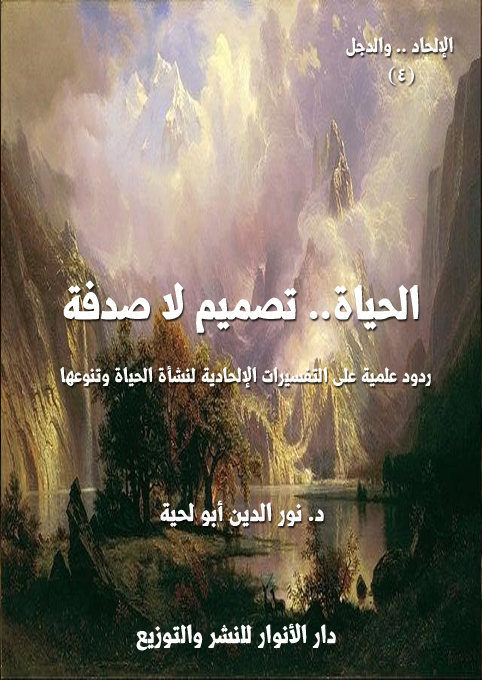

الكتاب: الحياة.. تصميم لا صدفة
الوصف: ردود علمية على التفسيرات الإلحادية لنشأة الحياة وتنوعها
السلسلة: الإلحاد والدجل
المؤلف: د. نور الدين أبو لحية
الناشر: دار الأنوار للنشر والتوزيع
الطبعة: الأولى، 1439 هـ
عدد الصفحات: 308
ISBN: 978-620-4-72146-0
لمطالعة الكتاب من تطبيق مؤلفاتي المجاني وهو أحسن وأيسر: هنا

يحاول هذا الكتاب أن يناقش أكثر الأطروحات المادية والإلحادية شهرة وانتشارا، والتي استعملت كل الوسائل، ومارست كل الخدع لتفسير نشأة الحياة وتنوعها تفسيرا ماديا يبعدها عن الحاجة إلى الله، وإلى تصميمه المبدع، وعنايته الرحيمة.
وبما أن النظرية التي تولت ذلك هي نظرية التطور، بمراحلها المختلفة، فإن هذا الكتاب هو مناقشة علمية هادئة لكل أطروحات تلك النظرية، وردود علمية عليها، وإجابات عن كل الشبهات التي تطرحها، ابتداء من نشأة الحياة، وانتهاء بتنوعها إلى الصورة التي نراها عليها.
وقد اعتمدنا في هذه الردود على ما ذكره العلم الحديث من حقائق لم تكن موجودة زمن داروين والعلماء الذين وقفوا في صفه.. فالعلم اليوم يسير بخطا سريعة نحو تحطيم هذه النظرية والأسس التي تقوم عليها.. بل ظهرت مؤسسات وجمعيات كثيرة من الغرب نفسه تبين أن هذه النظرية لم يبق لها ما يسندها، ويدل عليها، لا من الحفريات، ولا من غيرها.. ولذلك رموها بالخرافة والدجل.. وكونها تحولت إلى أداة أيديولوجية، لا نظرية علمية.
الحياة.. تصميم لا صدفة (6)
يحاول هذا الكتاب أن يناقش أكثر الأطروحات المادية والإلحادية شهرة وانتشارا، والتي استعملت كل الوسائل، ومارست كل الخدع لتفسير نشأة الحياة وتنوعها تفسيرا ماديا يبعدها عن الحاجة إلى الله، وإلى تصميمه المبدع، وعنايته الرحيمة.
وبما أن النظرية التي تولت ذلك هي نظرية التطور، بمراحلها المختلفة، فإن هذا الكتاب هو مناقشة علمية هادئة لكل أطروحات تلك النظرية، وردود علمية عليها، وإجابات عن كل الشبهات التي تطرحها، ابتداء من نشأة الحياة، وانتهاء بتنوعها إلى الصورة التي نراها عليها.
وقد اعتمدنا في هذه الردود على ما ذكره العلم الحديث من حقائق لم تكن موجودة زمن داروين والعلماء الذين وقفوا في صفه.. فالعلم اليوم يسير بخطا سريعة نحو تحطيم هذه النظرية والأسس التي تقوم عليها.. بل ظهرت مؤسسات وجمعيات كثيرة في الغرب نفسه تبين أن هذه النظرية لم يبق لها ما يسندها، ويدل عليها، لا من الحفريات، ولا من غيرها.. ولذلك رموها بالخرافة والدجل.. وكونها تحولت إلى أداة أيديولوجية، لا نظرية علمية.
وانطلاقا من هذا، فقد حاولنا أن نعطي القارئ الكريم ثقافة علمية مبسطة ترتبط بهذه النظرية وغيرها من التفسيرات المادية للحياة، ليتبين من خلالها حظها من العلم، ولتكون له القدرة العلمية على مناقشة الدعاوى الإلحادية المتعلقة بها.
بالإضافة إلى ذلك ذكرنا الكثير من شهادات العلماء المتخصصين وانتقاداتهم لها..
ولأن غرضنا من الكتاب، ومن السلسلة عموما هو محاولة استيعاب كل أصناف الشبهات التي يتعلق بها الملاحدة، واستيعاب الردود عليها، فقد رجعنا إلى المراجع الكثيرة التي تحصي تلك الشبهات، أو تلك التي ترد عليها.
وقد وجدنا أن المراجع الأساسية لكل من كتب في التعريف بهذه النظرية أو الرد عليها
الحياة.. تصميم لا صدفة (7)
كتب هارون يحي الكثيرة، والمخصصة أصلا للرد على هذه النظرية، فقد اعتمدنا عليها كثيرا، لا لكونها كتبه فقط.. وإنما لكونها جمعت الكثير من الاقتباسات والنقول من العلماء والمختصين في الغرب، سواء من أولئك الذين لا يزالون يؤمنون بنظرية التطور، أو من الذين تراجعوا عنها.
وقد حاولنا أن نرتب الشبهات والردود ترتيبا علميا ليتسنى للقارئ أن يطلع على كل جزئية بتفصيلاتها المختلفة، ويطلع في نفس الوقت على الردود العلمية الكثيرة المرتبطة بها.
وبناء على ذلك قسمنا الكتاب إلى سبعة فصول بدأت بالرد العلمي على التفسيرات المادية لنشأة الحياة، وانتهت بالرد العلمي على قصر الحياة على المادة دون العقل والروح.. وبينهما رددنا على كل الشبهات التي يعتمدها التطوريون لتفسير التنوع في الحياة.
وهذه الفصول السبعة هي:
أولا ـ الصدفة.. والخلق: وقد خصصناه للرد على التفسيرات المادية لنشأة الحياة.. واعتبرنا أن كل تلك التفسيرات ليست سوى رجم بالغيب، ولا دليل علمي يثبتها، وحتى لو ثبتت فإنها لا يمكن أن تفسر التعقيدات الكثيرة المرتبطة بالبروتين أو الخلية أو الحياة.
ثانيا ـ التطور.. والعلم: وقد خصصناه لإثبات عدم توفر العلمية الكافية لنظرية التطور، بل إنها مجرد تخمين وخيال، ولا علاقه لها بالعلم، وذلك لغياب جميع مقاييس النظريات العلمية فيها من البيانات الرصدية.. والتنبؤات الدقيقة.. والمنطقية العلمية.. والانفتاح للنقد.. والمعلومات الدقيقة.. وعدم التحيز.. وغيرها.
ثالثا ـ العشوائية.. والتصميم: وقد خصصناه لذكر ما رد به دعاة التصميم الذكي، وهي النظرية الغربية التي تأسست في العقود الأخيرة للرد على نظرية التطور، وذلك باعتماد أسس علمية منطقية أعانت عليها الاكتشافات العلمية الحديثة.. وتناولنا فيه نماذج عن التعقيد المتخصص، والإبداع المقصود، والتصميم الذكي، والتعقيدات غير القابلة للاختزال.
الحياة.. تصميم لا صدفة (8)
رابعا ـ الصراع.. والسلام: وقد خصصناه للرد العلمي على ما يعتمده أصحاب نظرية التطور من تفسير الحياة على أساس الصراع من أجل البقاء.. وقد رددنا عليها ببيان العلاقة الحقيقية بين الكائنات وتجاوزها للصراع.. وبينا أن كل ما نراه هو تعبير عن التوازن المحكم والمقادير المضبوطة التي بنيت عليها الحياة، كما بني عليها الكون.
خامسا ـ التكيف.. والعناية: وقد خصصناه للرد العلمي على ما يعتمده أصحاب نظرية التطور من آليات لتفسير التطور من الانتقاء الطبيعي، أو الطفرات الوراثية، وغيرها.. وبينا أن ما نراه من تنوع هو نتيجة للعناية الإلهية، وليس للتطور الذاتي للكائنات الحية، فهي أعجز من أن تفعل ذلك.
سادسا ـ الغريزة.. والإلهام: وقد خصصناه للرد العلمي على التفسيرات المادية للسلوك الحيواني أو الخصائص المودعة فيه، وبينا أن كل ذلك عناية وإلهام وفضل إلهي، والعلم لا يستيطع تفسير ذلك إلا بذلك.. فنظرية التطور تعجز عن تفسير التعقيد المرتبط بالسلوك الحيواني دون إرجاعه لمصدر خارجي.
سابعا ـ المحدودية.. والامتداد: وقد خصصناه لبيان الرؤية الدينية للحياة، وكونها أكبر من أن تنحصر في هذا العالم المحدود، وقد ذكرنا ما يدل على هذه الرؤية من الأدلة العلمية، والشهادات المرتبطة بها من كبار العلماء والمتخصصين.
وكعادتنا في هذه السلسلة التي تحاول تبسيط الحقائق العلمية، ووضعها في قوالب مشوقة، فقد اعتمدنا بعض الأحداث الرمزية، التي تجعل القارئ يشعر بنوع من التسلية والمتابعة للأحداث بالإضافة إلى ما يستفيده من معلومات، أو قدرات على الجدل والمحاجة والمناظرة.
وقصة هذا الجزء تبدأ من خلال زيارة يقوم بها سبعة من العلماء المتخصصين في الحياة ونظرية التطور للمدينة التي يسكن بها المؤلف.. ويسعى المؤلف بكل جهده ليتواصل معهم،
الحياة.. تصميم لا صدفة (9)
ويرد على الأطروحات المادية التي جاءوا بها.. لكنه يصرف عن ذلك من طرف الجهات المنظمة للزيارة.
لكنه، وبعد أن ييأس من الالتقاء بهم يفاجأ بهم يدقون باب بيته، ثم يخبرونه بأن معلم الإيمان هو الذي أرسلهم إليه ليكتب قصصهم.
ثم يحكي كل واحد منهم قصة رحلته إلى الإيمان، وكيفية توبته من التفسيرات المادية للحياة في كل فصل من فصول الكتاب.
هذه هي قصة هذا الجزء.. وننبه إلى أن الهدف منها هدف علمي، وليس الرواية ولا أحداثها، ولذلك لم نتبن في كتابة الأحداث مناهج الكتابة الروائية بصيغتها العادية.. وإنما حاولنا أن نمزج بين العلم والتسلية حتى نخفف على القارئ، ونيسر له التحصيل والاستيعاب، كما نيسر عليه المناقشة والتفاعل.
الحياة.. تصميم لا صدفة (10)
في صباح ذلك اليوم الذي حدثت لي فيه هذه القصة التي سأحكيها لكم كنت مارا على بعض المراكز الثقافية.. وهناك رأيت جمعا من الشباب يتحدثون بأصوات مرتفعة، وقد جذبني إليهم أني سمعت بعضهم يذكر دارون، وكتابه عن أصل الأنواع، ويذكر معه أسماء كثيرة، فاقتربت منهم، لأسمع حديثهم.
فرأيتهم يلتفون حول إعلان عن حضور سبعة من كبار علماء الحياة لإلقاء محاضرات في ذلك المركز الثقافي، الذي بدا له أن يقيم أياما ثقافية علمية أطلق عليها وصف [الأيام التنويرية لكشف أسرار الحياة: بدايتها، وتطورها]
وقد امتلأت عجبا أن يهتم ذلك المركز، وفي تلك المدينة البسيطة بمثل هذه المسائل.. في نفس الوقت الذي يغفل فيه عن التنوير بالقيم الأخلاقية والحضارية والعلمية والصحية التي يحتاجها المجتمع أكثر من حاجتهم إلى التعرف على تاريخ الحياة، وكيف بدأت، وكيف تطورت.. والذي لا يعدو أن يكون نوعا من الرجم بالغيب، أو الحديث الذي لا معنى له.
وامتلأت بالعجب أكثر أن أولئك الشباب الذين اقتربت منهم لأسمع حديثهم، كانوا يتحدثون بسرور عظيم، وكأن وليا من أولياء الله قادم إليهم، لينيلهم من بركاته..
قال لي بعضهم، وهو لا يكاد يملك نفسه من الفرح: أرأيت يا عم.. نحن الذين اقترحنا على مدير هذا المركز استضافة هؤلاء العلماء الكبار، حتى نساهم في تنوير مدينتنا، ونبعد عنها شبح الجهل..
قلت: عن أي جهل تتحدث؟.. الناس بحاجة إلى توعية وتربية.. ولا يحتاجون إلى الحديث في مثل هذه المسائل التي لم تثبت علميا..
بمجرد أن قلت هذا، راح أحدهم يصرخ بغضب شديد غير مراع فوارق السن بيننا،
الحياة.. تصميم لا صدفة (11)
وهو يقول: دع عنك هذه الأغلوطات.. فالتطور حقيقة علمية، تدعمها ملايين الحفريات، والتجارب المعملية، والأبحاث الجينية.
قال آخر، وهو لا يقل عن صاحبه غضبا: التطور واقع مثبت، وآلياته أصبحت معروفة تماما، ولهذا يتم دراستها كل يوم في كل معامل العالم.. ويتم تدريسها في جميع جامعات العالم المعترف بها.. بل لا يستطيع اليوم عالم محترم أن ينفي أو يرفض التطور، وإلا فإنه ينتحر بذلك انتحارا علميا أكاديميا.
قال آخر: بل إن نظرية التطور تضاهي في درجة إثباتها نظريات نيوتن وأينشتين التي ثبتت بالأدلة المعملية والرصدية مئات الألوف من المرات.
قال آخر: ألا تعرف [دوكنز] ذلك العبقري الألمعي، صاحب كتاب [الجين الأناني] الذي صحح فيه ما وصفه بسوء الفهم للداروينية.. حيث ذكر أن الانتقاء يكون على مستوى الجينات، وليس مستوى الأنواع أو الأفراد كما كان يُعتقد.
قال آخر: لقد أثبت دوكينز أن مجتمع الإنسان المبني على قانون الجينات الأناني، من الممكن أن يكون منفراً ومزعجاً العيش فيه.. لكن استنكارنا ذلك كله لن يؤدي إلى تعديله.. فنحن ولدنا أنانيين.. هكذا خطط لنا في جيناتنا الأنانية، ولن نستطيع إفساد خططها.
ثم التفت لي، وهو يقول: أرأيت أهمية هذه الأفكار.. إنها ليست أطروحات علمية مجردة، بل إن لها صلة مباشرة بحياتنا.. فبدونها لا يمكننا أن نعرف حقيقتنا.
لم أجد ما أقول له.. إلا أنني عدت أدراجي إلى بيتي، وأنا ممتلئ بالألم والغثاء من هذه الموضات الجديدة التي صارت تخرج لنا كل حين، لتملأ حياتنا بكل ما يبعدنا عن ربنا وديننا.. وحينها تذكرت مقولة [ألكسيس كاريل]: (إن نظريات النشوء والارتقاء هي مصدر كل الهموم الإنسانية، وإنها في الحقيقة ليست إلا حكايات خرافية وجدت من يحميها ومن يقدمها
الحياة.. تصميم لا صدفة (12)
للجماهير بحلة خادعة لا يعرفها كثير من الناس) (1)
وصدق في ذلك، فما كان الاستعمار ولا الرأسمالية ولا كل تلك الجرائم البشعة التي ارتكبت في القرون الأخيرة إلا ابنة شرعية لنظرية التطور في تجلياتها الاجتماعية.
وهكذا.. ما كانت بدع الموضة التي تخرج لنا كل حين، والتي يطرح معها الكثير من الحياء والعفة والأدب إلا مظهر من مظاهر ذلك الفكر الخطير الذي حول من الإنسان لعبة يُتلاعب بها باسم التطور والتقدم والسير إلى الأمام.. والذي لا يختلف أحيانا كثيرة عن السير إلى الهاوية نفسها.
لكني بمجرد أن دخلت بيتي انبعثت في همة عجيبة، أردت من خلالها أن أستعيد تجربة أولئك الشباب الذين مررت عليهم في رحلتي السابقة.. رحلتي إلى الكون الموحد.. فقلت في نفسي: دعي عنك الحزن والألم.. فلن ينفعك في هذا المحل إلا الإرادة والعزيمة..
ثم رحت أشحذ إرادتي وعزيمتي، وأخرج من بيتي قاصدا مدير ذلك المركز، طالبا منه أن يسمح لي ببعض الوقت للحديث مع أولئك الزائرين الذين يريدون أن ينشروا سمومهم بيننا.
قال لي المدير، وهو يتملقني، أو يريد أن يصرفني بأدب: ما بك يا رجل.. كيف تنزل بنفسك إلى هذا المستوى.. فأنت لك قيمتك وحرمتك.. وهؤلاء الذين تتحدث عنهم ـ مع شهرتهم الكبيرة ـ لن يحلموا بالحديث معك، ولا بالجلوس إليك، فشتان بينك وبينهم.. فلا تضع وقتك الثمين في الحديث إليهم.. وامكث في بيتك لتخرج لنا من كنوز المعرفة ما تعودت أن تخرج.
قلت: أتريدني أيضا ألا أحضر ما يريدون تقديمه من محاضرات؟
قال، وهو يبتسم بخبث: أجل.. فوقتك أثمن من أن تضيعه في الاستماع إليهم.. وإن
__________
(1) الإنسان ذلك المجهول، ص 158.
الحياة.. تصميم لا صدفة (13)
احتاجوا إلى الحديث إليك، فسيأتون هم إليك بأنفسهم، من دون أن تتوسل وتتوسط للحديث إليهم.
لم أجد ما أقول له.. لكني عرفت بعد ذلك أنه لم يكن يريد من قوله ذلك إلا أن يصرفني، وقد تأكدت من ذلك من بعض الذين حضروا مجلسه، وأخبروني أنه كان حريصا على توفير الجو لهؤلاء الزوار حتى لا يعكر صفوهم أحد.. وحتى يظهر هو الآخر بصورة المتقدم المتحضر الذي تقدم في سلم الارتقاء، ولم يبق في مستنقع الثباب والاستقرار.
-\--\-
وقد ازداد يقيني بالنية المبيتة لمدير المركز عند بداية أشغال الأيام الدراسية، وفي اليوم الأول منها.. فعندما دخلت القاعة امتلأت عجبا من الرجل الذي كلف برئاسة الجلسة، فقد كنت أعرفه جيدا، وأعرفت تقلباته وتطوراته المختلفة، وغير المنضبطة.. والتي يربطها جميعا بالدين..
أذكر جيدا أنه عندما زارنا بعض الشيوعيين، وكلف حينها بتقديم محاضرته، راح يثني عليه وعلى الشيوعية، ويحول منها دينا سماويا، ويحول من كتاب [رأس المال] لكارل ماركس كتابا من الكتب المقدسة.. بل يضيف إلى ذلك كله اعتباره المادية الديالكتيكية من الإسلام.. بل راح يتلاعب بالآيات الكريمة ليستدل بها على شيوعية الإسلام.
وهكذا عندما زارنا بعض دعاة الغرائز من تلامذة فرويد.. راح يحطم كل جدران العفة والحياء والأدب التي جاء بها الإسلام ليحول منه إلى دين غرائزي بهيمي ممتلئ بالفحش والبذاءة.
وهكذا عندما زارنا بعض رجال الأعمال من الرأسماليين.. فقد راح يلقي خطبة طويلة يحاول أن يثبت فيها أن رسول الله صلى الله عليه وآله وسلم لم يكن مليونيرا فقط، بل كان ملياديرا أيضا.. ثم راح يصف لنا الحياة المترفة التي كان يعيشها.. مقتنصا في ذلك كل شادرة وواردة، يقبل ما يشاء
الحياة.. تصميم لا صدفة (14)
هواه، ويرفض ما يشاء.
وهكذا لم يختلف أمره في ذلك اليوم.. فبعد أن اجتمعت الجموع راح بصوته المجلجل، يصيح: لا شك أنكم جميعا تتطلعون لمعرفة حقيقة الحياة.. وكيف نشأت.. وكيف تطورت إلى ما هي عليه الآن.. وقد جاءكم من أقصى الأرض من يشرح لكم ذلك..
وأحب قبل أن يتقدم هؤلاء الأعلام الكبار ليشرحوا لكم بتفصيل ما ينص عليه العلم الحديث في آخر تطوراته أن أخبركم أن كل ذلك لا يتناقض مع القرآن، ولا مع الدين.. فديننا دين التطور، لا دين الثبات والسكون..
ثم راح يذكر المعترضين على نظرية التطور، متهما إياهم بالتخلف والمروق والإساءة للدين، ويقول في ذلك (1): افهموني جيدا.. فالاعتراض على نظرية التطور ليس له أي سبب علمي.. بل إني أكاد أجزم أنه أيضا ليس بسبب ديني.. فلا يوجد تعارض بين الدين وبين التطور إطلاقا (2)..
__________
(1) من مقال بعنوان: نظرية التطور والقرآن، بتصرف.. وانظر في الموضوع مقالا بعنوان: الاستدلال بالقرآن على فرضية التطور الموجه.. قراءة نقدية، سلطان العميري، مجلة البيان.
(2) نذكر هنا للأسف أولئك الباحثين من المسلمين الذين لم يتمعنوا جيدا في مدى علمية نظرية التطور، وراحوا يلوون أعناق النصوص المقدسة ليثبتوها من خلال القرآن الكريم بتكلف كبير ممقوت.
وقد قال المفكر المسلم الهندي [وحيد الدين خان] في هؤلاء كتابه [الاسلام يتحدى]: (هناك نوع آخر من علمائنا يدركون موقف الفكر الحديث من قضية الدين ولكنهم، لشدة تاثرهم بالفكر الحديث، يرون ان كل ما توصل اليه أئمة الغرب يعد من المسلمات العلمية، ومن ثم تقتصر بطولتهم على اثبات هذه النظريات، التي سلم بها علماء الغرب، هي نفس ما ورد في القرآن الكريم وكتب الاحاديث الاخرى) ويتم قوله بعد ذلك: (وأوضح مثال في هذا، هو تلك الجماعة من علمائنا الذين قبلوا نظرية النشوء والارتقاء، لان علماء الغرب اعلنوا اقتناعهم الكامل بصدقها، بعددراساتهم ومشاهداتهم، واضطروا بناء على هذا الى تفسير جديد للاسلام في ضوء النظرية الجديدة، وحين احتاجوا الى لباس جديد، قاموا بتفصيل ثوب للاسلام مرة أخرى، ولكنه ثوب مشوه المعالم، لا أثر فيه من روح الاسلام، التي ضاعت مع الاجزاء المقطعة في عمليىة التلفيق الجديدة)
و يقول د. عمرو عبد العزيز صلاح في كتابه [الداروينية المتاسلمة]: (اراد العقلانيون المسلمون محاكاة عقلانيي العرق التاريخي الغربي، في ترويج ان دينهم يقبل نظرية التطور، والقذة بالقذة قاموا طبعا بترويج الداروينية بالاسلام عنوة، وبالرغم من انها ملحدة اصلا ولايصح الزواج منها، الا انهم انطقوها الشهادتين بعجالة ثم اعلنوا انتصارهم: قد تزوجت الداروينية بالاسلام.. هكذا خرج الى النور مولودها المشوه: الداروينية المتاسلمة!)
الحياة.. تصميم لا صدفة (15)
السبب في إنكار هذه النظرية هو بمنتهي البساطة [الغرور الإنساني]، فهو الذي دفعه لأن يتوهم أنه أفضل من الكائنات الأخرى.. ولذلك يحاول أن يربأ بنفسه من أن يكون من سلالة القردة أو غيرها من الكائنات.
لكنا إن عدنا إلى قرآننا، وقرأناه قراءة جديدة بعيدة عن قيود السلف والخلف، بل بعيدة عن قيود اللغة التقليدية.. فسنراه ينص على نظرية التطور بصراحة ليس دونها صراحة (1).
اسمعوا إلى القرآن الكريم، وهو ينص بصراحة على [نظرية الأبيوجينيسيس] التي تقول بنشأة الحياة في أعماق المحيطات..
ثم راح يرتل بصوت خاشع قوله تعالى: {وَجَعَلْنَا مِنَ الْمَاءِ كُلَّ شَيْءٍ حَيٍّ} [الأنبياء: 30]، ويعقب عليها بقوله: لقد استنبط المفسرون من هذه الآية استنباطات كثيرة منها أن الماء له فوائد للجسم.. وأننا نحتاج إليه لنعيش.. وأن كل الأحياء تتكون من نسبة عالية من الماء..
لكن كل هذه التفاسير وهمية خاطئة ذلك أن أي قارئ منصف يستطيع أن يري بجلاء أن كل هذه التفاسير هي تقويل على النص.. فالآية لا تتحدث عما ذكروا، وإنما تتحدث تحديدا عن نشأة الحياة.. إنها تتحدث عن الخلق الأول، وليس عن فوائد الماء.
ويؤكد ذلك قوله تعالى: {وَاللَّهُ خَلَقَ كُلَّ دَابَّةٍ مِنْ مَاءٍ فَمِنْهُمْ مَنْ يَمْشِي عَلَى بَطْنِهِ وَمِنْهُمْ مَنْ يَمْشِي عَلَى رِجْلَيْنِ وَمِنْهُمْ مَنْ يَمْشِي عَلَى أَرْبَعٍ يَخْلُقُ اللَّهُ مَا يَشَاءُ إِنَّ اللَّهَ عَلَى كُلِّ شَيْءٍ قَدِيرٌ} [النور: 45].. فالماء المقصود هنا هو مياه المحيطات كما أسلفنا، والتي نشأت منها أول خلية حية.??
راح يتمعن في أثر كلامه على جمهور الحاضرين الممتلئين بالاستغراب، ثم قال: بعد
__________
(1) سنذكر الرد المفصل على هذه المقولات بتفصيل في ثنايا الرسالة، وخاصة في مقدمة فصل [التطور والعلم]، وإن كان الكتاب ردا عليها.
الحياة.. تصميم لا صدفة (16)
هذا.. ماذا عن تطور الكائنات؟.. ماذا يقول القرآن في ذلك؟
راح يقلب صفحات مصحف بين يديه، ثم يقول: اسمعوا لهذه الآية التي تنص على نظرية التطور بكل صراحة.. فالله تعالى يقول: {وَلَقَدْ خَلَقْنَا الإنسان مِنْ سُلَالَةٍ مِنْ طِينٍ} [المؤمنون: 12].. المفسرون القدامى بحكم معارفهم المحدودة راحوا يفسرون الآية بأنها تعني أن كل منا كبشر هو نهاية سلالة طويلة بدأت بخلق الإنسان الأول من طين.. لكن لغة القرآن القوية الواضحة تعاند هذا التفسير بوضوح.. فهي تنص على أن بين الإنسان وبين الطين يوجد سلالة.. والسلالة لاهي طين ولا هي إنسان، أليس هذا واضحا وضوح الشمس؟.. كيف لايستطيع كل من يقرأ هذا الكلام أن يتساءل كيف يكون تفسير المفسرين صحيحا؟.. كيف يكون المقصود من السلالة أنها سلالة البشر حتي سيدنا آدم إذا كانت الآية توضح أن السلالة لم تكون أناسا مثلنا؟
ثم راح يتساءل: أتعلمون ماهو الطين؟.. أليس هو مركبات جمادية مخلوطة بالماء؟.. فالله إذن خلق من هذا حياة.. ومن الحياة نشأت سلالة.. ومن السلالة نشأ الإنسان.. أليس هذا وصفا رائعا ودقيقا لما تقوله نظرية التطور؟
صفق بعض الحضور من الشباب، وتبعتها تصفيقات أخرى كثيرة.. فازداد انتفاخ الرجل.. وراح يزيد في درجات تصعيده ليجعل من القرآن الكريم كتابا لأصل الأنواع، مثلما حوله في مجالسه السابقة إلى كتاب في الرأسمالية أو الشيوعية أو الفوضى الأخلاقية.
بعد انتهائه من حديثه، وبعد أن كدت أنفجر من ذلك التلاعب بالنصوص المقدسة، بدأ العلماء حديثهم، وقد حمدت الله على أنه كان حديثا ممتلئا بالمصطلحات الغريبة، والأرقام الكثيرة، والتي لم يفهمها أحد من الناس..
بعد انتهاء الجلسات، رفعت يدي طالبا التعقيب.. لكن مدير المركز بعد أن لمح يدي، وهي ترتفع تقدم إلي، وكأنه لم يرني إلا تلك اللحظة، ثم راح يصافحني بحرارة، بل يعانقني،
الحياة.. تصميم لا صدفة (17)
وكأنه لم يرني منذ سنوات، ثم راح يأخذ بيدي إلى مكتبه، ويطلب من العمال أن يحضروا لي بعض الحلويات والقهوة والشاي، وهو يقول بكل تزلف: مرحبا بك في مركزنا.. كم نفرح بزيارتك يا رجل.. لم لا تشرفنا كل حين؟
ثم تملص مني، بعد أن تركني محجوزا في مكتبه، وكلما كنت أنوي الخروج منه، يقسم علي السكرتير بالبقاء ريثما يحضر القهوة والشاي.. ثم يخبرني بأن المدير سيغضب منه أو يفصله إن خرجت من غير أن أشرب شيئا..
وهكذا بقيت في انتظار القهوة والشاي إلى أن انفض المجلس، وخرج الناس.. وخرجت معه من دون أن أقف أي موقف، أو أدلي بأي حديث.
-\--\-
لكن.. وفي وقت متأخر من الليل سمعت طرقا شديدا على الباب، فخرجت مسرعا، فرأيت أولئك العلماء السبعة يقفون أمام الباب، ويطلبون مني أن أدخلهم إلى البيت بسرعة، ثم ما لبثوا أن دخلوا مسرعين، وكأنهم يخشون أن يتعقبهم أحد.
تصورت في البداية أن مدير المركز هو الذي أرسلهم لي.. لكني علمت منهم أنهم خرجوا خلسة من الفندق الذي يقيمون فيه، وأن الذي أرسلهم لي، ليس مدير المركز، وإنما معلم الإيمان.
قلت: أتقصدون أن معلم الإيمان هو الذي أرسلكم لي، ودلكم على بيتي؟
قال أحدهم: أجل.. ونحن لم نقصد هذه البلاد إلا لزيارتك..
قلت: لكن كيف تعرفتم إلى معلم الإيمان.. وكيف دلكم علي.. ولماذا؟
قال: رويدك، فنحن أضعف مما تتصور.. وأنت أقل من أن تفهم حقائق الوجود، فلذلك سلم لربك، ولا تسأل مما لم تؤت علمه.
تعجبت أن يكون المتحدث إلي بهذه الصيغة، وهذا الأسلوب، وهذا الإيمان هؤلاء
الحياة.. تصميم لا صدفة (18)
العلماء الذين جاءوا لنشر الإلحاد في البلدة، وتهديم عقائدها.
لكني بعد أن عاينت ما عاينته في رحلتي السابقة إلى الكون الموحد لم أستغرب ذلك، بل رحت أقول لهم: مرحبا بكم، وأنا طوع أمركم، ومسلّم لكم، ولمعلمي معلم الإيمان.. فهل تطلبون مني شيئا؟
قالوا: أنت تعلم لما أرسلنا إليك.. فهلم أحضر قلمك ودواتك وقراطيسك لنملي عليك قصة رحلتنا إلى الحياة الموحدة.
قلت: الحياة الموحدة.. ما تعنون بذلك؟
قال أحدهم: لقد رحلت في رحلتك السابقة من الكون الملحد إلى الكون الموحد.. وسترحل في هذه الرحلة معنا من الحياة بحسب الرؤية الإلحادية إلى الحياة بحسب الرؤية التوحيدية.
قلت: هل تريدون مني أن أسافر أيضا؟
قال: ما دام لك خيال يمكن أن يسافر، فلا حاجة لك أن تتعب قدميك.
قلت: لم أفهم ما تعنون؟
قال: لقد مررنا في حياتنا برحلة طويلة، مررنا فيها بتجارب مختلفة، واعتقدنا اعتقادات متباينة إلى أن هدانا الله للإيمان، ونحن نريد منك أن تسجل حديثنا، وخبر رحلتنا من الإلحاد إلى الإيمان.
قلت: ولكنكم سبعة.. فهل رحلتم جميعا رحلة واحدة؟
قال: لا.. بل لكل منا رحلته الخاصة به.. وقد التقينا في الأخير في رحاب الإيمان.. وقد دعانا معلمنا إلى أن نزورك لتكتب أخبارنا، كما نقصها عليك، فلعل ذلك يشفع لنا عند ربنا.
قلت: ما دمتم قد عدتم للإيمان.. فكيف جئتم لهذه البلدة لتنشروا الإلحاد؟
قال: نحن لم نأت لننشر الإلحاد.. وإنما جئنا لننشر الإيمان.
الحياة.. تصميم لا صدفة (19)
قلت: والمحاضرات التي ألقيتموها في الصباح، والأرقام التي نطقتم بها.. وذلك الشيخ الذي قدم لكم بتلك الأحاديث الرعناء.
قال: لا شأن لنا به وبتخرصاته.. وما ذكرنا تلك الأرقام إلا لندعم الإيمان.. وسترى من حديثنا مع أهل مدينتك بعد أن نقص عليك قصتنا ما يملؤك بالعجب.
قلت: فهلا أذنتم لي لأقدم لكم طعاما قبل أن تبدؤوا حديثكم..
قالوا: لا شأن لنا في طعامك.. فوقتنا محدود جدا.. فأحضر سلاحك، وتعال لتكتب ما نمليه عليك.
لم أجد إلا أن أسلم لهم، فأحضرت أقلامي ودواتي وقراطيسي، ورحت أجلس إليهم، بهيئة التلميذ الذي يكتب كل ما يملى عليه فهمه أو لم يفهمه.
الحياة.. تصميم لا صدفة (20)
بدأ أولهم الحديث، وقال: تبدأ قصتي من ذلك اليوم الذي اجتمعت فيه مع مدير مركز الأبحاث الذي كنت أعمل به، فقد طلب حضوري إليه، بعد أن رأى بعض أبحاثي، وأعجبته كثيرا.
وعندما دخلت إليه راح يقول لي: نحن فرحون بأن يكون في مركزنا باحث مثلك.. لكنا نريد منك أن تتوجه بأبحاثك وجهة أخرى، لعلها أنفع للبشرية من الوجهة التي تعمل فيها الآن.
قلت: لكن الوجهة التي أعمل فيها نافعة جدا، فأنا أبحث في الكائنات الحية الدقيقة، وتأثيرها على البيئة، وهذا يفيدنا كثيرا في واقع الحياة العملية.
قال: أجل.. أعلم ذلك.. لكن ذلك يمكن أن يقوم به آخرون بدلا عنك.. ولهذا، فأنا أريد منك شيئا آخر.. أو بالأحرى المركز يريد منك شيئا آخر أكثر نفعا للبشرية.. بل البشرية نفسها هي التي تريد ذلك منك.
قلت: أنا في خدمتك، وخدمة المركز، وخدمة البشرية.. فمرني بما شئت.
سكت قليلا، كالمتردد، ثم قال: قد تقول بأن ما أريد أن أكلفك به نوع من الفلسفة أو الميتافيزيقا.. أو تذكر أن فيه نوعا من البعد عن العلمية.. لكني أبادرك، فأقول بأن قولك هذا غير صحيح.. فالعلم الآن راح يخترق حجب الغيب، ليكشف حقائق الوجود، حتى لا يترك لغيره أن ينشر الخرافات بين البشرية.
قلت: أنا إلى الآن لم أفهم ما تقصد.. ولست أدري هل لما تريد أن تطلبه مني علاقة بالفلسفة أم لا.. لكن إن كان ذلك، فاعذرني، فأنا رجل علم ومخابر، ولا علاقة لي إطلاقا بالفلسفة.
الحياة.. تصميم لا صدفة (21)
قال: ما تقول يا رجل.. هل يمكن لأحد من الناس ألا تكون له علاقة بالفلسفة؟.. ألا تعرف أولئك الفلكيين والفيزيائيين الكبار الذين وضعوا النماذج الكثيرة التي تواجه المؤمنين الذين راحوا يستثمرون الحقائق العلمية الدالة على نشوء الكون ليثبتوا بها وجود الله؟
قلت: بلى.. أعرف ذلك.. وقد ذكر بعض أساتذتنا الدوافع النفسية لكل تلك النماذج، فقال: (اعتقد علماء الكون أنّ عليهم الالتفاف وراء المشكلة.. لقد حاولوا على مرّ السنوات الماضية إثبات عدة نماذج مختلفة للكون تتفادى الحاجة إلى بداية، مع الاستمرار في اشتراط انفجار عظيم.. يبدو الآن من المؤكّد أنّ الكون كانت له بداية)
قال: ولكنهم نجحوا في ذلك..
قلت: أجل.. هم نجحوا في تحقيق أغراضهم الفلسفية، ولكنهم لم ينجحوا في تحقيق أغراضهم العلمية، فكل ما ذكروه من نظريات ونماذج لم تكن سوى دعاوى لا دليل عليها.
قال: لا يهم ذلك.. فقد يأتي ما يدل عليها في المستقبل.
قلت: وقد يأتي ما ينقضها.. بل إنه لا يمكن لأحد من الناس أن يبرهن عليها في يوم من الأيام.. لقد قال بعد علماء الفيزياء الكبار عن [نظرية الأوتار]: (إنها نظرية تحتاج لمصادم هيدروني بحجم مجرة لاختبارها وهذا غير ممكن.. حسنا لو قلنا ـ طبقا للنظرية ـ إن الكون خلق نفسه، فمن أوجد النظرية؟ ومن أوجد القوانين الفيزيائية الخاصة بها؟.. ورغم ذلك فلا توجد لها معادلة فيزيائية حتى الآن.. أطلب منهم أن يكتبوا معادلة فيزيائية.. لن يفعلوا لانهم ببساطة لايمتلكونها)
وقال آخر عن صاحب نظرية الأكوان المتعددة، والتي قال عنها البروفسور [جون بولكنجهورن] الفيزيائي الشهير معبرا عن نقده الشديد لها: (إنها ليست فيزياء.. إنها في أحسن الأحوال فكرة ميتافيزيقيه، ولا يوجد سبب علمي واحد للإيمان بمجوعة من الأكوان المتعددة)
وقال آخر: (إن فلسفة هوكينج تحديدا ما أعارضه، فهي كما وصلتني مثال واضح على
الحياة.. تصميم لا صدفة (22)
التعالم، فطرح أن العلم هو مصدر المعلومات الوحيد، وأننا لدينا فهم كامل لكل شيء هراء، بل هراء خطير أيضا، فهو يشعر العلماء بالكبر والغرور بشكل مبالغ فيه)
قال: لا بأس.. ربما يكون لهؤلاء الحق فيما يذكرون.. لأن الكون الواسع لا يمكن الإحاطة به، ولا التجربة عليه.. ولكن ما أريد أن أطلبه منك سهل، وفي المتناول.. فنحن كما تعلم لا نبحث في الكائنات الضخمة، بل نبحث في الكائنات الدقيقة.. نحن لا نستعمل المراصد الكبرى العاجزة، بل نستعمل المجاهر الإلكترونية الدقيقة.
قلت: إن كان لما تريد أن تطلبه مني علاقة بالعلم، فذلك اختصاصي.. يمكنني أن أبحث فيما تشاء.. وأنت فسره بعد ذلك كما تريد.. أو يمكنك أن تحضر من الفلاسفة من يستفيد من نتائج أبحاثي ليوجهها كما يشاء.
قال: لا بأس.. اتفقنا على ذلك..
قلت: فما تريد مني؟
قال (1): لاشك أنك تعلم أن نظرية التطور طرحت في أواسط القرن التاسع عشر، وفي ذلك ذلك الحين لم تكن العلوم والتكنولوجيا متطورة بمثل ما هي عليه اليوم.. فقد كان علماء ذلك القرن يُجرون أبحاثهم في معامل بسيطة، وبأجهزة بدائية جداً.. وذلك ما جعلهم يقعون في بعض الاعتقادات الباطلة التي ترسبت في أذهانهم في غضون العصور الوسطى، ولا تزال مؤثرة في ثقافتهم حتى الآن.
قلت: أعلم ذلك.. ومن ذلك قولهم: إن للحياة طبيعة بسيطة في أساسها، أو كما عبر على ذلك الفيلسوف اليوناني الشهير أرسطو الذي قال: (إنّ الحياة تبدأ صدفة بمجرد وجود بعض المواد التي لا حياة فيها، وتكون هذه المواد متلازمة جنبا إلى جنب في بيئة مبتلة رطبة ومن هنا تبدأ الحياة).. وهكذا اعتمد داروين في بناء نظريته على فكرة أن: (الحياة لها طبيعة بسيطة في
__________
(1) انظر: السّلوك الواعي لدى الخلية: هارون يحيى، ترجمة: مصطفى الستيتي..
الحياة.. تصميم لا صدفة (23)
أساسها)
قال: أجل.. وقد اعتنق علماء الحياة ما ذكره داروين وناصروه، وبنوا أفكارهم على أساسه، وكان من أهم مناصري داروين [أرنيست هايكل] الذي كان يعتقد أن الخلية الحية ـ والتي لم تتمكن المجاهر البسيطة حينذاك من رؤيتها بشكل صحيح ـ بسيطة التكوين بطبيعتها، وقال عنها كما تصورها: (إن الخلية ما هي إلا بالونة بسيطة مملوءة بسائل هلامي)
قلت: ولهذا، فإن الكثير من النتائج العلمية التي ذكرها هايكل وداروين وهكسلي وغيرهم لم تعد نتائج علمية لاعتمادةا على أفكار بدائية، ولعدم تطور الوسائل حينها.
قال: ولهذا طلبت منك ومن بعض الباحثين الكبار أن تقوم بدورك في هذا المجال.
قلت: لم أفهم ما تعني.
قال: لاشك أنك تعلم أن تلك النظريات التي طرحها هايكل وداروين وهكسلي وغيرهم كان لها أثرها الكبير في مواجهة الخرافة والجهل والتطرف والإرهاب الذي يلبس عادة لباس الإيمان.. وتعلم أيضا أنها وإن لم تكن علمية بالشكل الكافي، لكنها مع ذلك استطاعت أن تؤدي ذلك الدور الاجتماعي الخطير في مواجهة التطرف والعنف.. ولذلك نحتاج إلى إحيائها من جديد، وبأساليب أكثر علمية.
قلت: لا أرى علاقة بين تلك النظريات والتطرف والعنف.
قال: كيف لا ترى ذلك.. وأنت ترى في نشرات الأخبار أن كل ما يحصل من جرائم بيد أولئك الإرهابيين من المسلمين.. ولولا إيمانهم بما يسمونه إلها، لما وقعوا في ذلك.
قال ذلك، ثم أخرج من مكتبه شيكا، وأمضاه، وهو يقول: دعنا من كل هذه التفاصيل.. هذا شيك وفره لك المركز، يمكنك أن تضع فيه المبلغ الذي تشاء، لتسد به ديونك، ولتتجنب دخول السجن.. فلا يصح أن يدخل عالم مثلك السجن.. فمكانك هو المخبر، وليس وراء القضبان الحديدية.
الحياة.. تصميم لا صدفة (24)
ثم ابتسم، وقال: نحن نعرف جيدا الظروف الصعبة التي تمر بها.. ولذلك لا نريد أن ندعك تحت رحمة أعدائك.. لا نريد منك في مقابل هذا سوى أن تثبت عدم حاجة نشأة الحياة إلى مصدر خارجي..
أو بعبارة أخرى لا نريد منك سوى أن تضع نظرية جديدة لـ[نشأة الحياة صدفة] في لباس علمي يتيح لها المزيد من القبول في العصر الحالي، وبالوسائل الحديثة.. ولا يهم أن تعارَض في المستقبل أو لا تعارض.. المهم أن تبقى لها فعالية، ولو لمدة قليلة من السنين.
وإن استطعت أن تقنع باحثين آخرين ليؤدوا هذا الدور معك، فلك ذلك، فالبحث الجماعي أهم وأقوى تأثيرا من البحث الفردي.. لكن لا نريدهم إلا من كبار علماء الحياة في العالم.. ولذلك لك أن تتنقل حيث تشاء.. وتتصل بنا لنهبهم من الأموال ما يرغبون.. فكل شيء موفر لك.
-\--\-
لا أكتمكم أني حينها، وبمجرد أن رأيت الشيك سال لعابي، وتشتت ذهني تشتتا تاما، فقد كنت في حاجة مالية شديدة.. فقد استدنت من بعض البنوك مبلغا ضخما لشراء بيت في ضاحية المدينة، ووفرت فيه كل مستلزمات الأبحاث التي أريد إجراءها.. وكنت أحلم أن أكسب وراء تلك البحوث أموالا كثيرة أسدد بها ديوني، لكن ذلك لم يحصل، فقد كانت النتائج التي وصلت إليها عكس المتوقع، وقد جعلني ذلك أنهار انهيارا تاما.
ولهذا تركت معملي، والتحقت بذلك المركز الذي حدثتكم عنه، وقد علمت بعد ذلك أنهم علموا بما حصل لي، وبالمبالغ الضخمة التي أحتاج إلى سدادها، فراحوا يستعملون هذه الوسيلة لإقناعي بما يريدون طرحه.. ونجحوا في ذلك.
بعد أن عدت إلى بيتي، رحت أقلب دفاتري بحثا عن الفريق الذي يمكنه أن يساعدني في المهمة الخطيرة التي وكلت لي، وبعد جهد كبير استطعت أن أجمع أسماء عدد منهم، كلهم من
الحياة.. تصميم لا صدفة (25)
كبار الباحثين.. ولم تكن لدي مشكلة سوى المسافات الطويلة التي تفصل بينهم.
لكن المبالغ المالية الضخمة التي هيئت لي جعلتني أقوم بمهمة التواصل معهم، من غير أي عناء..
كان أول عالم قمت بزيارته، والحديث معه في هذا الشأن، عالما بيولوجيا كبيرا، كانت له صلة نسبية بذلك العالم التطوري المخادع [أرنست هيجل]، صاحب النظرية التي يطلق عليها [نظرية التلخيص]، والتي ثبت زيفها وخداعها بعد ذلك، واعترف أرنست نفسه بما فعله.
عندما دخلت مكتبه الذي كان يشبه مكاتب رجال الأعمال، لا مكاتب العلماء والخبراء، قال لي، وهو يصافحني بحرارة: لدي لك الكثير من الصفقات التجارية المهمة التي تخلصك من كل ديونك.
قلت: أرجو ألا تكون مثل شبيهاتها التي أوقعتني فيها.
قال: لا تخف.. هي مضمونة مائة في المائة.. فأنا أفكر في اختراع مركب يحوي جميع المسكرات مثل الكحول والكلوروفورم والبنزين.. ومسببات النشوة مثل الأفيون ومشتقاته.. والمهلوسات: مثل الميسكالين وفطر الأمانيت والبلاذون والقنب الهندي.. وغيرها جميعا، مع تفادي السلبيات المرتبطة بها.. وأنا أحتاج إلى فريق بحثي لتحقيق ذلك.. ولا شك أن لك من القدرات ما يسمح باختراع هذا المنتوج الذي سيغزو الأسواق، ويحولنا إلى ملياديرات بين عشية وضحاها.
قلت: دعني من هذه العوالم، فأنت تعرف أني قد تبت من أمثال هذه الصناعات التي لم تجر علي سوى الوبال.
قال: فهل تراك جئتني بصفقة أخرى أكثر جدوى؟
قلت: ألا تعرف الحديث سوى عن الصفقات؟.. لقد جئتك لغرض علمي.
الحياة.. تصميم لا صدفة (26)
قال: لقد انتهينا من العلم بعد خروجنا من الجامعة مباشرة، ونحن الآن في طور التجارة بالعلم.. فإن كان لك صفقة مهمة، فهاتها، وإلا فاذهب إلى طلبة الجامعة، واعرض عليهم مشاريعك.
قلت: يمكنك أن تعتبر أني جئتك بصفقة..
نهض من مكتبه، وراح يصفق، ويقول: هذا ما كنت أنتظره منك، فهلم بها.
ذكرت له ما حدثني به مدير المركز، فراح يقول لي: الأمر بسيط جدا، يمكنني عبر الفريق البحثي الذي تريده أن نحيي أي نظرية من النظريات، وندعمها بخدع جديدة، لتؤدي دورها الوقتي، ولا بأس بعد ذلك أن تنتقد، لتخلفها نظريات أخرى.. فما دام الهدف هو إبعاد الله عن خلق الحياة، فهذا سهل جدا.
ثم ابتسم، وقال: إننا نقدم بذلك خدمة للإنسانية.. فأنت ترى ما يجره الإيمان بالله من مآس للبشرية، فقد صار اسم الله مبررا لكل الجرائم.. وفوق ذلك لا يمكن للحياة أن تحلو، وأن نمارس فيها كل حريتنا، ونحن نعتقد بإله يحاسبنا على الصغيرة والكبيرة، بل يتوعدنا بعد ذلك بالعذاب الشديد إن خالفنا القوانين التي يسنها.
قلت: لا بأس.. فما هي البدائل التي تقترحها، والتي يمكننا من خلالها أن نواجه الطروحات الإيمانية.
قال (1): هي كثيرة جدا.. من أمثلتها أننا يمكن أن نلبس نظرية [الحساء البدائي] ثوبا جديدا من العلمية، متناسبا مع التطورات الجديدة.. فأنت تعلم أن أثواب تلك النظرية والتي لبستها منذ سنة 1924 قد بليت كثيرا.. وتحتاج إلى تبديل..
سكت قليلا، ثم قال: لقد لاقت حينها استحسان العلماء من مختلف الأوساط العلمية.. فهي تذكر أن الحياة نشأت ببساطة من زمن سحيق في القدم، حيث كان للأرض غلاف جوي
__________
(1) من مقال بعنوان: ثمانية نظريات حول نشأة الحياة على ا?رض، موقع الباحثون المغاربة.
الحياة.. تصميم لا صدفة (27)
صغير يحتوي على العناصر الأساسية لنشأة الحياة من الكاربون، والهيدروجين، والآزوت، وغيرها.. حينها تعرضت الأرض لأشكال مختلفة من الطاقة، مما أدى إلى ارتباط هذه العناصر وتصلبها فيما بينها، مشكلة مركبات كيميائية، أعطت انطلاقة للحياة على الأرض.
قلت: ولكن هذا يطرح تساؤلات حول كيفية نشوء الحياة فقط عبر هذه العناصر والمركبات البسيطة؟
قال: هذا ما تجيب عليه نظرية [التولد التلقائي] أو [التخليق الذاتي]، وهي التي تذكر أن الحياة نشأت في ظروف طبيعية انطلاقا من مركبات غير حية..
قلت: لكن كيف تم ذلك؟
قال: يمكن طرح الكثير من التوقعات لكيفية ذلك.. وفي ذاكرتي الآن الكثير منها.. وجميعها يمكنها أن تصمد فترة طويلة، حتى تأتي بدائل لها.
قلت: فهات أولها؟
قال: أولها هو القول بأن الحياة نشأت أول مرة تحت الجليد.. حيث تشير مجموعة من الأدلة إلى تغطية الجليد للمحيطات قبل حوالي 3 ملايير سنة من الآن، حيث تشكلت طبقة جليد سميكة بعمق مئات الأمتار نتيجة البعد السحيق بين الأرض والشمس آنذاك، وعكس ما هو عليه الآن، وهذه الطبقة حمت المركبات العضوية بقاع المحيطات ومكنتها من التفاعل فيما بينها لتعطي بذلك انطلاقة للحياة.
قلت: دعنا من هذا، فما أصعب تصديقه؟
قال: لا بأس.. فلنذكر بأن الحياة نشأت بسبب الكهرباء.
قلت: كيف ذلك؟.. إن إثبات هذا صعب، بل مستحيل.
قال: رغم أنها فكرة غريبة نوعا ما، إلا أنه يمكننا أن نذكر بأن الحياة تشكلت بفعل الكهرباء، فقد تم اثبات قدرة الكهرباء على تشكيل أحماض أمينية وسكريات بسيطة انطلاقا
الحياة.. تصميم لا صدفة (28)
من عناصر بسيطة في الغلاف الجوي.. وبذلك فإنه يمكن أن نذكر أن البرق هو السبب في ظهور الحياة على الأرض، وذلك بصعق الأدخنة الصاعدة من البراكين، والغنية بالعناصر الأساسية للحياة مشكلا بذلك جزيئات أعقد، شكلت أسس الحياة.
قلت: دعنا من هذا، وحدثنا عن توقع آخر أكثر عقلانية؟
قال: فلنذكر لهم أن الحياة نشأت بسبب [التبذر الشامل]
قلت: فما [التبذر الشامل]؟
قال: هي نظرية تنص على أن الحياة على الأرض تطورت من كائنات مجهرية فضائية، دخلت للأرض عن طريق نيازك قادمة من المريخ.. مما يجعل منا امتدادا لكائنات فضائية متطورة.
قلت: إن هذا سيدعو إلى التساؤل أيضا عن سبب نشأة الحياة في المريخ.. فلذلك حدثنا عن توقع آخر أكثر عقلانية؟
قال: فلنذكر لهم أن الحياة نشأت من [الحمض النووي الريبوزي]، فهذا الحمض له دور أساسي في ترجمة الجينات إلى بروتينات.. وبذلك يمكن أن تنشأ الحياة بتشكل هذا الحمض النووي الريبوزي انطلاقا من الحساء البدائي.
قلت: إن هذا يطرح تساؤلات أخرى كثيرة.. فهل هناك توقع آخر؟
قال: أجل.. يمكننا أن نذكر أن مكونات الحساء البدائي استمرت في التفاعل فيما بينها، وبمرور الزمن أنتجت هده التفاعلات جزيئات أكثر تعقيدا من سابقتها، فشكلت أساس الحياة على الأرض.
قلت: إن هذا يطرح تساؤلات كثيرة.. فهل هناك توقع آخر؟
قال: أجل.. يمكننا أن نذكر أن الشرارة الأولى للحياة ظهرت عبر المتنفسات المائية الحرارية، وهي فتحة تشبه المدخنة في قاع المحيط، تنفث مياه معدنية حارة غنية بالعناصر
الحياة.. تصميم لا صدفة (29)
الأساسية، وهي بذلك توفر ظروف ملائمة وعناصر أولية لتشكل الحياة على الأرض.
قلت: فهل هناك توقع آخر؟
قال: أجل.. يمكننا أن نذكر [تربة الأرض الطينية]، فقد قدم باحثون من جامعة غلاسكو الشهيرة باسكتلندا نظرية حول نشأة الحياة من تربة الأرض الطينية، لكونها غنية بالعناصر الأساسية للحياة، وقد حاجج الباحثون من خلال هذا الطرح على أن كل تلك العناصر قد تفاعلت فيما بينها لتعطي جزيئات معقدة كالحمض النووي [دى إن إيه] وجزيئات أخرى مشكلة بذلك قاعدة انطلاق الحياة على الأرض.
قلت: فهل هناك توقع آخر؟
قال: أجل.. يمكننا أن نذكر تلك النظرية الجديدة التي ظهرت بمعهد [ماساتشوستس للتكنولوجيا]، والتي تفترض أن تعريض المادة لطاقة خارجية داخل حمام حراري يجعلها تنتظم وفق نظام أكثر كفاءة في تبديد الطاقة، وقد أكدت الدراسات المنجزة أن تعريض مجموعة من الذرات للطاقة يجعلها تنتظم وفق نظام أكثر كفاءة في تبديد الطاقة.
قلت: فهل هناك توقع آخر أكثر علمية وعقلانية؟
قال: أجل.. يمكننا أن نذكر لهم نظرية [سفانت أرينياس]
قلت: فمن هو [سفانت أرينياس]؟
قال: إنه صاحب النظرية التي تنص على أن الحياة التي نراها على سطح البسيطة اليوم كانت قد نشأت من كائنات حية أخرى أتت من عالم أو كوكب آخر غير كوكبنا الأرضي.. وقد وضع نظريته في نهاية القرن التاسع عشر بناء على معرفته بأن كثيراً من البكتيريا والفطريات تنتج جراثيم تنقلها الرياح من مكان لآخر حيث يمكنها بتوفر الظروف الملائمة أن تنبت لتكون مستعمرات جديدة للكائنات المنتجة لها، وبناء على ذلك قدم نظريته والتي تعني أن الكائنات الحية التي نراها اليوم نشأت من أجسام تشبه الجراثيم أتت من عالم أو كوكب آخر غير كوكبنا
الحياة.. تصميم لا صدفة (30)
الأرضي.. وبتوفر الظروف الملائمة لإنبات هذه الأجسام في أرضنا نمت فأعطت الكائنات الحية التي نراها اليوم.
قلت: ولكن هذه النظرية لم تأخذ في عين الاعتبار كيفية وجود الحياة على كوكبنا الأرضي، ولم تأخذ في اعتبارها كيفية نشأتها سواء كان ذلك هنا أو في عالم آخر؟
قال: ذلك لا يهم.. فنحن لا نريد أن نثبت حقيقة علمية، وإنما نريد أن نضع افتراضات مختلفة ينشغل بها البشر عن التساؤلات المحيرة التي لا تؤدي إلا إلى الإيمان.
قلت: دعنا منها.. فهي غريبة جدا.. فهل هناك توقع آخر أكثر علمية وعقلانية؟
قال: حاليا.. ليس لدي أي توقع آخر.. لكن لا تقلق، يمكنك أن تمر علي بعد أسبوع واحد فقط، لأضع بين يديك مجموعة أخرى جديدة من التوقعات.. لكن لا تنس أن تقدم مبلغا من المال يقوي خيالي على التفكير.. فخيالي لا يمكن أن يتحرك من دون مال.
وهكذا ضممت إلى فريقي العضو الأول، والذي لم يصعب علي التعامل معه، فقد كان لا يختلف كثيرا عن مدير المركز الذي كنت أعمل به..
لكن الصعوبات الشديدة لاقتني مع سائر الأعضاء الذين سجلتهم في دفتري.. فكلهم رفض العرض رغم الحاجة الشديدة.. وكلهم راح يؤنبني على التفكير بهذه الطريقة.
وكان أولهم عالما بيولوجيا كبيرا، كانت له صلة نسبية بالطبيب الكبير [لويس باستور]، وبمجرد أن التقيت به، وعرضت عليه الفكرة، وأخبرته أني اتفقت مع [أرنست هيجل] بشأن ما يمكننا عمله، حتى راح يضحك بصوت عال، وهو يقول: ألا تزال عائلة [أرنست هيجل] تمارس دورها القذر في تاريخ العلم، ألم يتخلصوا بعد من الحيلة والمخادعة؟.. ألم يكفهم ما فعل جدهم من جرائم؟
قلت: وما الذي فعل؟
الحياة.. تصميم لا صدفة (31)
قال: لقد قدم مجموعة من أشهر رسوماته عام 1874 م لمراحل الجنين البشري، حيث قام بتزييف الحقائق ووضع بصمة تطورية في كل مرحلة جنينية لدرجة أنه رسم خياشيم مزعومة للجنين الإنساني، بل وأضاف صورتين من عنده أصلا دسهما بين صور مراحل الجنين، إلى الدرجة التي قال فيها عالم الأجنة البريطاني الدكتور [مايكل ريتشاردسون] وزملاؤه في سنة 1997 م: (يبدو أن هذا [أي رسومات هيغل] من أكبر عمليات التزييف في علم الأحياء!)
قلت: لمَ تلقي عليه هذه التهمة الخطيرة، فلعل ذلك ما وصل إليه جهده وعلمه وتفكيره.. ولا يمكن اعتبار التفكير بحال من الأحوال خداعا أو احتيالا؟
قال: صدقت في ذلك.. لكن الواقع التاريخي كشف بالأدلة القطعية أن [أرنست هيجل] لم يكن مجرد مخطئ، وإنما كان مخادعا أيضا، ففي نهايات عام 1908 م اكتشف الدكتور [بر إس] التزوير الذي قام به، وكتب مقالة في إحدى الجرائد متحديا أرنست هيجل وداعيا له للاعتراف بما قام به من تزوير.
وانتظرت الأوساط العلمية جواب العالم التطوري المتهم بالتزوير، وبعد تردد قارب الشهر، كتب هيغل بتاريخ 14/ 12/ 1908 م مقالة تحت عنوان (تزوير صور الأجنة)، حيث اعترف فيها بعملية التزوير التي قام بها قائلا: (إنني أعترف رسميا ـ حسما للجدال في هذه المسألة ـ أن عددا قليلا من صور الأجنة نحو ستة في المائة أو ثمانية موضوع أو مزور)
ثم عقب على هذا الاعتراف بقوله: (بعد هذا الاعتراف يجب أن أحسب نفسي مقضيا عليّ وهالكا، ولكن ما يعزيني هو أن أرى بجانبي في كرسي الاتهام مئات من شركائي في الجريمة، وبينهم عدد كبير من الفلاسفة المعول عليهم في التجارب العلمية وغيرهم من علماء الأحياء ـ البيولوجيا، فإن كثيرا من الصور التي توضح علم بنية الأحياء وعلم التشريح وعلم الأنسجة وعلم الأجنة المنتشرة المُعول عليها مزور مثل تزويري تماما لا يختلف عنه في شيء) (1)
__________
(1) نقل المقالة الكاتب الإنجليزي فرانسيز هيتشينج في كتابه الشهير (عنق الزرافة - حيث أخطأ داروين).
الحياة.. تصميم لا صدفة (32)
بل إن علماء الداروينية الحديثة لم يجدوا بُدا من التملص من هذه الفضيحة للحفاظ على استمرار المخدر التطوري ساري المفعول في عقول الغافلين والملحدين واللادينيين، فهذا أحد مؤسسي الدارونية الحديثة وهو [جورج جايلورد سيمبسون]، يقول: (لقد شوَّه هيجل المبدأ النشوئي الذي تناوله، فقد ثبت اليوم علميا بما لا يدع مجالا للشك، أن الأجنة لا تمر بمراحل ارتقاء الأجداد)
قلت: لا بأس.. قد أعترف معك بكون [أرنست هيجل] الجد كان مخادعا، لكن ما ذنب [أرنست هيجل] الحفيد.. أم أنك تريد أن تلقي ذنب الأجداد على الأحفاد؟
قال: لا.. لا أقول هذا.. ومعاذ الله أن أقوله.. ولكن ما ذكرته لي من مشاهد لنشأة الحياة ذكرني بما فعله [أرنست هيجل] الجد، فهو الذي استعمل الحيلة والخداع لتمرير فكرته.. ونفس الشيء راح يفعله [أرنست هيجل] ن أن
الحفيد.. فتلك المشاهد لا يقبلها العقل ولا المنطق، ولا تعدو أن تكون مجرد رجم بالغيب لا يمكن التحقق العلمي منه بحال من الأحوال.
قلت: لا بأس.. ربما يكون ما تقول مقنعا، ولكن ما رأيك في إحياء نظرية التوالد الذاتي، ومحاولة بعث الحياة فيها؟
ضحك بصوت عال، وقال: لا شك أنك تريد أن تعود بنا مئات السنين إلى الوراء..
قلت: كيف ذلك؟
قال (1): أنت تريد أن نقول للعالم بعد كل هذا التطور العلمي: إن البراغيث متولدة من مواد غير حية كالغبار.. وأن الديدان نشأت من اللحم.. وأن الضفادع وبعض الكائنات المائية نشأت مباشرة من طين الجداول والبرك.. وأن الأسماك والزواحف والفئران يمكنها أن تنشأ تلقائياً من تربة رملية أو حتى من مواد متعفنة.. وأن الإنسان نفسه يمكن أن ينشأ من بركة من الوحل بطريقة التوالد الذاتي.
__________
(1) انظر: مقالا بعنوان [نظريات نشأة الحياة]، والمعلومات الواردة فيه موجودة في مواقع ودوائر معارف علمية كثيرة.
الحياة.. تصميم لا صدفة (33)
أو تريد أن نذكر لهم بأن [فان هلمونت] الذي اشتهر بتجاربه في التمثيل الضوئي للنبات ذكر بأنه لو أخذنا كمية من القمح، وبعضا من التبن والقش، وقطعة من قماش قديم، وقطعة أو قطعتين من ملابس داخلية وسخة.. ثم أضفنا إلى الكل قليلاً من الماء، ثم تركنا هذه المجموعة في مكان هادئ لعدة أيام، فإنه سرعان ما تولد هذه المجموعة مجموعة من الفئران.
قلت: لا أريد أن أقول هذا بالضبط.. ولكن ألا يمكن إحياء هذه الأفكار بطريقة أخرى علمية؟
ابتسم، وقال: كيف تقول ذلك يا رجل.. فقد انتقد تلك النظرية كل الباحثين المحققين ابتداء من [فرانسيسكو ريدي] الذي أثبت بتجربة بسيطة أن يرقات الذباب توجد في اللحم المتعفن نتيجة لفقس البيض الذي تضعه أنثى الذباب على اللحم، لا من توالدها ذاتياً ومباشرة من اللحم المتعفن، فلو جنبنا اللحم من الذباب، وذلك بتغطية الوعاء المحتوي على اللحم وبقطعة من القماش النظيف لاستحال ظهور اليرقات مهما تعفن اللحم وطال تعفنه، إلا أن ترك اللحم بدون تغطية ولّد عليه يرقات الذباب.. وقد أدت هذه التجربة وتجارب أخرى من هذا القبيل إلى أضعاف شوكة نظرية التوالد الذاتي.
قلت: ولكن.. وبعد اختراع المجهر في نهاية القرن السابع عشر على يد العالم [أنطون فان ليفنهوك]، واكتشافه لكائنات دقيقة لم تكن ترى بالعين المجردة، بل ظهرت خلال المجهر الضوئي، عاد فأنعش نظرية التوالد الذاتي بعض الشيء، ذلك أن وجود هذه الكائنات الدقيقة في السوائل المتخمرة لا يمكن شرحه إلا على أساس فكرة التوالد الذاتي.
وكان من بين الذين وجدوا في اكتشاف ليفنهوك انتعاشاً لفكرة التوالد الذاتي القسيس [الويلزي نيد هام]، لذا أجرى عدة تجارب، وجد من خلالها أن حساء لحم الضأن سوف يؤدي إلى إنتاج كائنات دقيقة حتى بعد تسخينه لدرجة الغليان.
قال: لكن تلك التجارب لم تكن علمية، فقد وجد القسيس الإيطالي [لازورا
الحياة.. تصميم لا صدفة (34)
سبالانزاني] أن الحساء الذي اعتمد عليه [الويلزي نيد هام] كان عرضة للتلوث بالهواء بعد التسخين مما يشرح ظهور الميكروبات في تجاربه.. ولإثبات ذلك قام بعدة تجارب سخن فيها الحساء لمدة طويلة تستمر بالساعات، وعاملة بطريقة تحول دون تلوثه بالهواء.. وفي نهاية هذه التجارب لم يظهر أي نوع من الميكروبات.
وهكذا أجرى قريبي [لويس باستور] تجارب عديدة قدمت دلائل قاطعة على عدم صحة التوالد الذاتي.. وقد أثبت أن الهواء ملئ بالكائنات الدقيقة التي يمكنها أن تنمو على الحساء بتعرض الحساء للهواء.. ذلك أنه لو عرضنا الحساء المعقم لهواء معقم فإنه لا تنمو أية ميكروبات على الحساء، إلا أن الحساء بتعرضه لهواء غير معقم تنمو عليه كائنات دقيقة مختلفة.. وبناء على هذه التحارب فقد صرح باستور قائلا: (سوف لا تحيا أبداً نظرية التوالد الذاتي بعد أن صرعتها هذه التجارب البسيطة)
بعد أن ذكر لي كل ذلك، وذكر استحالة أن يبيع علمه بالمال، رحت أبحث عن عضو آخر من الذين سجلتهم في دفتري، وكان عالما بيولوجيا كبيرا، وكانت له صداقة طويلة بالكيميائي والإحيائي الأمريكي [ستانلى ميلر] الذي اشتهر بسبب دراساته في مجال التولد التلقائي، وبالتحديد في تجربته التي حاول أن يثبت فيها إمكانية إنشاء مركبات عضوية من خلال عمليات كيميائية بسيطة من مواد غير عضوية.
كان اسمه [جيفري بادا] (1)، وقد ذكر لي عند لقائي به، أنه الطالب الثاني الذي تخرج
__________
(1) انظر مقالا بعنوان: اعادة تحليل تجارب ستانلي ميلر المنسية عن نشأة الحياة!، من موقع: أنا أصدق العلم.
الحياة.. تصميم لا صدفة (35)
على يدي [ستانلي ميلر]، وأنه كان قريبا جدا منه، بل كان معينا له في كل التجارب التي قام بها.
بل أخبرني فوق ذلك كله أنه بعدما مات ميلر بالسكتة الدماغية عام 1999، ورث صناديق من العينات التجريبية من معمله.. وذكر لي بحماسة أنه بينما كان يقلّب فيها وجد مكتوبا على إحداها بخط ميلر [عينة التفريغ الكهربائي]
لقد قال لي، وهو لا يكاد يملك نفسه من الفرح: لقد كانت هذه هي التجارب الأصلية التي قام بها أستاذي وصديقي [ستانلي ميلر] عام 1953 وهو في جامعة كولومبيا.. لقد كانت صناديق العينات محفوظة جيدًا ومُعَلَّمة بحرص مثلما وصفها ميلر في مذكراته..
قلت: هلا شرحت لي بتفصيل ماذا فعل أستاذك وصديقك.. وهل يمكن الاستفادة من تجربته في إثبات عدم حاجة صدور الحياة إلى الخالق؟
قال: مع كوني تلميذا وفيا لأستاذي وصديقي [ستانلي ميلر]، ومع إعجابي الشديد بشخصيته واجتهاداته إلا أنه من الصعب علي أن أحكم هذا الحكم.. ذلك أن الهدف الذي انطلق منه في إجراء تجربته لم يكن هدفا علميا، بقدر ما كان هدفا ميتافزيقيا، والأهداف الميتافزيقية أقرب إلى الفلسفة منها للعلم.
سكت قليلا، ثم قال: لعلك تعلم أن الروسي الملحد [الكسندر ايفانوفيتش أوبارين] كان أول من أخرج فرضية [الحساء البدائى] إلى الوجود، وقد ذكر فيها أن الحياة بدأت فى وقت مبكر من حياة الأرض في محيطات مائية، نتيجة لمزيج من مواد الكيميائية، وبعض المركبات العضوية الأولية من الغلاف الجوي، ونوعا من الطاقة.
قلت: لا يهم الهدف.. بل تهم النتيجة، فهل استطاع أن يثبت إمكانية نشوء الحياة من تلك التجربة التي قام بها؟
قال (1): من الصعب قول ذلك.. فالحياة شأن آخر تماما.. كل ما قام به أستاذي ميلر أنه
__________
(1) انظر: نظرية التطور وحقيقة الخلق، أحمد يحيى، وكتب هارون يحي في الرد على نظرية التطور.
الحياة.. تصميم لا صدفة (36)
حين كان طالب دراسات عليا بجامعة شيكاغو عام 1953 حاول أن يحضر واقعا يحاكي فيه ظروف الأرض فى وقت مبكر.. وباستخدام خليط من المكونات التي ادعى أنها كانت تمثل القشرة الأرضية قديما وهى: (الماء، الميثان، الأمونيا، الهيدروجين) وتعريضها لطاقه كهربية ممثلة فى صعقات تمثل طاقة البرق.
قلت: فما كانت نتيجة تجربته؟
قال: لقد كانت النتيجه هي أنه حصل على مادة عضوية ممثلة فى أحماض أمينيه بسيطة، وافترض أنه كانت الخطوة الأولى للحياة.. فضلا عن كمية من القطران كناتج بلمرة.
قلت: هذه تجربة مهمة.. ويمكن أن تكون منطلقا لأبحاث أخرى تستطيع أن تواجه الرؤية الإيمانية التي تفترض وجود الخالق.
ابتسم، وقال: لقد كان هذا هو الموقف الذي وقفه كل الماديين عندما سمعوا بالتجربة، أو أعادوا تكرارها.. ذلك أنها كانت بمثابة قشة الغريق للفكر الالحادي، حيث تم الاحتفاء بها، واعتمادةا كنموذج عملى لمحاكاة ظروف خلق الحياة الأولى.
قلت: هي بالفعل كذلك.. فلم هذا التشاؤم؟
قال: أنا لا أتفاءل، ولا أتشاءم، ولكني أحترم عقلي.. فالتجربة كانت مليئة بالثغرات التي تجعل منها مجرد محاولة يائسة، لا قيمة لها من الناحية العلمية.
أول الإشكاليات التي تطرحها التجربة، والفرضية المرتبطة بها هي أن معطيات الافتراض والتجربة كانت انتقائيه بامتياز، وغير ممثلة للظروف الحقيقيه لجو الأرض البدائى.. ذلك أن [أوبارين]، وهو أول من اقترح جو الأرض البدائية المختزل المكون من الماء، والميثان، والأمونيا، والهيدروجين، أتي من كونه مختصا بعلوم الكيمياء، ولذلك راح يختار هذه العناصر بالضبط، وليس من معطيات حقيقيه متوفره عن جو الأرض البدائى.
وبناء على ذلك راح يقوم بتوليف المركبات الأولية القادره على إنتاج حساء عضوي، مع
الحياة.. تصميم لا صدفة (37)
ضرورة استبعاد الأكسجين أوالمركبات المؤكسدة من الخليط.
قلت: هل تقصد أنه لم يكن هناك أي حساء بدائي للحياة على الأرض؟
قال: أجل.. فبعد بعد مضي سنوات من تجربة ميلر التى حاكى فيها ظروف أوبارين المقترحه، بيّن التحليل الجيوكيميائى الدقيق أن الجو الذي ساد على الأرض لم يكن مختزلا كما افترض لتكوين الحساء البدائى للحياة، وأن مثل هذه الأجواء المختزلة، إذا كانت موجودة فى أي وقت مضى، فإنها لم تدم طويلا.
بالإضافة إلى ذلك فإن الغلاف الجوى الذى تمت محاكاته فى التجارب كتمثيل لنشأة الحياة كان يتألف في المقام الأول من غاز الميثان، والأمونيا، ومستويات عالية من الهيدروجين.. والعلماء الآن يجمعون على رفض ذلك السيناريو.
فالجيوكيمائيين اليوم يعرفون أن الغلاف الجوي للأرض في وقت مبكر لم يحتوي على كميات ملموسة من هذه المكونات.. بل إن الغلاف الجوي للأرض في وقت مبكر كان مختلفا جدا عما افترضه ميلر..
بل إنه لا أحد يعرف الأساس الذي استند إليه ميلر فى تقدير تلك المكونات على أنها محاكاة فعلية لجو الأرض وقتها.. فالعلماء يتفقون على أن المصدر الرئيسي للغازات هو البراكين، والبراكين ينبعث منها أول اكسيد الكربون، وثانى اكسيد الكربون، والنيتروجين، وبخار الماء، ومن المرجح لدى العلماء أن هذه الغازات كانت وفيرة جدا في الغلاف الجوي في وقت مبكرمن حياة الأرض.
بالإضافة إلى ذلك، فإن تلك التجارب كانت تفترض الغياب الكلى للأكسجين، باعتباره عدوا للتجربة، مع أنه كان متواجدا بوفرة فى جو الأرض البدائى.. فوجود الأكسجين الحر من شأنه أن يدمر أى مادة عضوية ناشئه، ولذلك تجنب ميلر تلك الإشكاليه باستبعاد الأكسجين من جو التجربة.. وهذا خلاف ما كان واقعا فى جو الأرض البدائي.
الحياة.. تصميم لا صدفة (38)
قلت: هل ما تقوله صحيح.. وكيف غاب عنه هذا؟
قال: ما أسهل أن يغيب عنه.. لأن هدفه لم يكن الوصول إلى الحقيقة العلمية، وإنما كان الوصول إلى الحقيقة الميتافزيقية..
فالباحثون الآن يعتقدون أن غاز الأكسجين كان موجودا على الأرض في وقت مبكر، لأن غلافها احتوى على الكثير من بخار الماء، والإنحلال الضوئي للمياه الناجم عن الأشعة فوق البنفسجية في الغلاف الجوي العلوي سيكون مصدرا رئيسيا للأكسجين الحر في الغلاف الجوي، حيث أنتج الأكسجين بمعدلات مرتفعه للغاية على الأرض البدائية، لعدم وجود درع الأوزون، والمصنوع من الأكسجين، لمنع ضوء الأشعة فوق البنفسجية.
وقد كشف تحليل أقرب عصور ما قبل الكمبري للصخور الرسوبية على وجود الأكسجين الحر، وبمستويات مماثلة لما هو عليه اليوم.. كما نشرت مجلة العلوم [عدد ديسيمر 1995] مقالا لجون كوهين يظهر ذلك بوضوح، ويؤكد مخالفة جو الأرض البدائى لما افترضه ميلر في تجربته.. وذلك ما يؤكد عدم صلاحيتها.
بل إن الأمر ازداد تأكيدا مع الاكتشافات الجيولوجية الحديثة، فقد تم العثور فى طبقات الأرض القديمة على المعادن المؤكسدة (الهيماتيت) في وقت مبكر قبل 3.8 مليار سنة، وهو دليل لا يقبل التشكيك على وجود الأكسجين بمعدلات مرتفعه جدا كما هى الآن.
وهكذا كان الأمر مع الدرسات والتأكيدات من قبل الجيوكيميائين، والتي ذكرت أن الظروف المؤكسدة، والتمثيل الضوئى تواجدا على كوكب الأرض منذ أكثر من 3،7 مليار سنة، وأن الحياة كانت موجودة تقريبا في أقرب وقت كانت الأرض قادرة على دعم ذلك.
وهكذا راحت تتوالى التأكيدات العلميه الدالة على وجود الأكسجين الحر فى غلاف الأرض بعد وقت قريب جدا من تشكلها، حيث تم اكتشاف وجود نطاقات واسعه من الكائنات الحية المعتمده على التمثيل الضوئى لحياتها.
الحياة.. تصميم لا صدفة (39)
قلت: وهل ترى أن هذه الاكتشافات كافية وحدها لتهديم النظرية؟
قال: أجل.. فالمفروض في أي تجربة علمية وفق المنهج العلمي مراعاة جميع الشروط المرتبطة بالتجربة، حتى تصح نتائجها، وإلا فإن إجراء أي تعديل عليها سيؤثر لا محالة في مصداقية النتائج.
قلت: فقد كان اكتشاف وجود الأكسجين في تلك المرحلة وحده ما تسبب في تهدم الأسس التي تقوم عليها النظرية؟
قال: أجل، فيكفي إثبات وجود الأكسجين لتنهد النظرية، ذلك أن تجربة ميلر ويوري وشبيهاتها لايمكن أن تتم فى مجال يحتوى على الأكسجين كما أكد ميلر ذلك بنفسه، وهذا يناقض ما كانت عليه طبيعة الغلاف الجوى فى تلك العهود المبكرة.
قلت: ولكن ألا يوجد خلاف بين الباحثين في هذا حتى يمكن الاستفادة منه؟
قال: بلى.. يوجد من يدافع عن نموذج ميلر، ولكن من دون الاعتماد على أي دليل حقيقى.. وأغلب علماء الجيولوجيا اليوم يؤكدون تواجد الأكسجين بنفس نسبة وجوده اليوم فى الغلاف الجوي، بل وفى أعماق البحار قبل 3.46 مليار سنه من هذا الوقت.
بالإضافة إلى هذا، فقد غاب عن بال المدافعين عن نموذج ميلر، والقائلين بغياب الأكسجين من جو الأرض المبكر حقيقة مهمة وخطيرة جدا، وهي أنه إذا لم يكن هناك أكسجين فى ذلك الوقت من عمر نشوء الحياة فلن يكون هناك أوزون، لذلك لن تكون هناك حماية من الأشعة فوق البنفسجية التى تنفذ لتدمر المواد الكيميائية الحيوية المتكونه فى الحساء البدائى المزعوم.
-\--\-
على الرغم من كون حديث [جيفري بادا] يتناقض تماما مع مبتغاي، لكن صدقه وإخلاصه وموضوعيته في طرح فكرته، والتي يختلف بها مع نفسه، ومع أستاذه.. كل ذلك
الحياة.. تصميم لا صدفة (40)
جعلني أحاول التعرف على كل التفاصيل، وبكل دقة وموضوعية.
قلت: أظنني اقتنعت بهذا، فدعنا منه، وحدثنا عن الحساء البدائي.. وهل هناك أدلة جيوكيميائية على وجوده في أي وقت مضى على الأرض؟
قال: إذا كان هناك فى أي وقت مضى حساء بمركبات عضوية أولية، فلابد أن تحتوي الصخور الرسوبيه القديمه على علامات واضحه وطبقة كبيرة بسمك يتراواح بين (1 ـ 10 متر) من القطران تطوق الأرض لأنها من نواتج التفاعل الاولى كما بينت تجارب انتاج الأحماض الأمينية.. ولكن ليس هناك أى أدله جيولوجيه كشفت عن هذه الطبقة.
بل لم يُكتشف أي دليل جيوكيميائى على أنه كان هناك حساء فى عمر الأرض المبكر، مع أنه كان لابد للصخور الرسوبيه فى تلك الفترة الزمنية أن تحتوي على نسبة كبيرة بشكل غير اعتيادي من الكربون أو المواد الكيميائية العضوية لكن هذا لم يحدث.
وكذلك لا توجد أى أحافير يمكن أن يدل تحليلها الكيميائى على خطوات ما قبل الحياة، وخطوت ظهور الحياة على الأرض، وهذا يؤدي بنا إلى نتيجه واضحه وهي أن كل ما يطرح من سيناريوهات وتوقعات ليست سوى مجرد فروض بدائيه غير مدعمة بأي دليل، بل إنها متناقضه مع الشواهد العلمية.
قلت: ولكن ما هي الأسباب التي جعلت العلماء يتمسكون بهذه التجارب، وبالفرضيات المرتبطة بها مع كل هذه المشاكل المنهجيه القاتله فى أصل الاستدلال بها؟
قال: لعل أهم تلك الأسباب التي جعلت الكثير يتمسك بتجارب ميلر ومثيلتها على إمكانية نشأة الحياة على الأرض بطرق طبيعية عشوائيه هو عدم وجود بديل مقترح أفضل منها، وهو ما أقره عالم الأحياء التنموية [جوناثان ويلز] فى كتابه [أيقونات التطور]، حيث قال: (نحن لا زلنا جاهلين جهلا عميقا بكيفية نشأة الحياة، ومع ذلك لازالت تجربة ميلر أوري تستخدم كأيقونه للتطور، لأنه لم يظهر شيء أفضل منها.. وبدلا من قول الحقيقة، أعطينا
الحياة.. تصميم لا صدفة (41)
انطباعا مضللا أن العلماء أثبتوا تجريبيا الخطوة الأولى في أصل الحياة)
سكت قليلا، ثم قال: لكن مع ذلك، ونتيجة للتشكيك العلمى الواضح في تلك الفرضية وما ارتبط بها من تجارب، وبعد ما يقارب القرن من اعتماد نموذج الحساء البدائى، تخلى جمهور العلماء عن التمسك بها، لتهافتها وعدم صلاحيتها.. بل اضطر أنصار التطور والنشأة العشوائيه إلى البحث عن سيناريو بديل.. حتى صرح [نيك لين] وفريقه بجامعة لندن عام 2010، بأن نظرية الحساء البدائي لا تصمد، وأنها صارت من الماضى.
لكنه بدل أن يقر بنظرية الخلق الإلهي للحياة، راح يقترح بأن الحياة نشأت في الفتحات الحرارية المائية تحت سطح البحر.. ولم يكن قصده من ذلك إلا الخروج من الأزمه التي يوقع فيها التخلي عن الحساء البدائي، مع أنه لا يقوم على دعم ما ذكره أى دليل.
-\--\-
بينما كنت مع [جيفري بادا] منشغلين بتلك الأحاديث العلمية الراقية إذ جاء تلميذ من تلاميذه يحمل كتابا بيده، وهو يقول: هل سمعت أستاذنا ما ذكره [كارل بوبر] في هذا الكتاب، فقد قال: (التقدم العلمى غير المسبوق فى البيولوجيا جعل مشكلة أصل الحياة لغزا أكبر مما كان عليه قبل ذلك، فقد اكتسبنا مشاكل جديدة وأكثر عمقا)
قال جيفري: صدق [كارل بوبر] في قوله هذا.. فقد كان القدماء يؤمنون بالتوالد الذاتي، وهو ما جعلهم لا يقعون في الكثير من الإشكالات التي نقع فيها اليوم.. أما في زماننا هذا، وبعد إدراكنا لأسرار الحياة، فإن الأمر صار أشد تعقيدا، وأكثر غموضا.
قال التلميذ: ولكن العلماء استطاعوا أن ينتجوا أحماضا أمينية ضمن بيئة معينة.. أفلا يكون ذلك اكتشافا لأصل الحياة؟
قال جيفري: لنسلم جدا بأن التجارب التي أجريت في سبيل تحقيق ذلك نجحت فى توليف الجو الفعلى للأرض، فهل أمكنها فعلا خلق الحياة؟
الحياة.. تصميم لا صدفة (42)
سكت التلميذ، فقال جيفري: من المغالطات التي يوهم بها أنصار النشأة العشوائية عامة الناس وغير المتخصصين هوالقول بأن إنتاج بعض الأحماض الأمينية يجعل من خلق الحياة أمرا فى حدود الإمكان.
بل يتعمد بعضهم اللجوء إلى تسطيح مستفز حتى ظن غير المتخصصين أن إنتاج الخلية الحية لا يختلف عن تصنيع قطعة جيلى فى مصنع حلوى.
قال التلميذ: لكنه لا يمكن أن تقوم الحياة من دون أحماض أمينية؟
قال جيفري: أجل.. ولكنها مع ذلك ليست سوى مادة عضوية بسيطة جدا خالية تماما من الحياة.. بل هي مجرد لبنة بناء بسيطة وأولية.. ويمكن تشبيهها باستخراج معدن الألمينوم باعتباره أحد المعادن المستخدمه فى بناء طائرة وجعلها تطير.. فبالطبع لن يطير معدن الألمنيوم الخام إلا فى الطائرة، وداخل نظام مصمم وذكى بالغ التعقيد.
وهكذا الأحماض الأمينية، فإنها مع أهميتها لا تمثل أى قيمه بيولوجية إلا فى الخلية، ومع اعتبار الفارق الشديد فى نسبة التعقيد بين الطائرة والخلية.
سكت قليلا، ثم قال مخاطبا تلميذه: لتقريب الصورة لك يمكننا تمثيل الأحماض الأمينية بأنها جزء من مجموعة الحروف.. والخلية الحية هى كتاب مؤلف من ملايين الحروف لتشكيل ملحمة روائية بالغة الحنكة.. والإشكال الحقيقى يكمن فى الاستخدام الذكى لترتيب تلك الحروف، وليس مجرد تراكمات وتراكبات عشوائيه ناتجه من عمليات فزيوكيميائه.
قال التلميذ: صدقت أستاذي.. فالخلية ـ كما شرحتها لنا ـ نظام كونى مستقل له إرادة تخالف تلك القوانين.. ونظرة قريبة فى الخلية تثير الذهول من ذلك التصميم الدقيق المحكم، فهى مدينة كاملة من الآلات الجزيئيه المتعاضده المتكامله التى لا تضاهيها عوالم التقانات النانوية.. فمع اهتزازها أو التفافها أو زحفها المتواصل في أرجاء الخلية، تقطع هذه الآلات، وتلصق وتنسخ جزيئات جينية، وتقوم بنقل المغذّيات من مكان إلى آخر، أو تحولها إلى طاقة،
الحياة.. تصميم لا صدفة (43)
وتبني أو تصلح الأغشية الخلوية، وتنقل الرسائل الميكانيكية والكيميائية والكهربائية.
-\--\-
انصرف التلميذ، فقال لي جيفري، وهو يحاورني: لا بأس.. فلنتخط ذلك التعقيد المذهل فى تركيب الخلية، والكافي وحده لإقناع أى عاقل بحتمية تصميمه.. ولنتناول أهم الإشكالات التى تلي مرحلة تكوين الحساء البدائى والمكونات الأولية.
قلت: هل هناك مشاكل أخرى لا تزال تعترض الحساء البدائي؟
قال: إن شئت الصدق.. فالمشاكل التي يثيرها الحساء البدائي أكثر بكثير من الحلول التي يضعها..
قلت: فما هي المشكلة الجديدة التي تريد أن تذكرها لي؟
قال: من أبرز ألغاز الحياة، والتى تقف بقوه ضد كل النظريات العشوائيه التي تحاول تفسيرها، تلك الغائية والتوجيه المستقل للحياة بعيدا عن العمليات الكيميائية الطبيعية.
فبتخطى تلك العقبات التي مرت بها أمثال تلك التجارب، وبافتراض نجاحها فى محاكاة جو الأرض وإنتاج مادة عضوية أولية للحياة، وتخليق الأحماض الأمينية، فإن تخليقها من مواد أولية ليست الجزء الصعب.. فالإشكال الحقيقى هو الحصول على نوع الأحماض الأمينية المطلوبة للحياة، وطريقة تنظيمها.
قلت: كيف ذلك؟
قال: أنت تعلم أنه يوجد أكثر من 2000 نوع من الأحماض الأمينية في الطبيعة، بينما لا يدخل فى التركيب الحيوى للخلية إلا 20 نوعا فقط.. وعلاوة على ذلك، يتم تجميع الذرات التي تشكل كل الأحماض الأمينية الأساسية في شكلين متناظرين عرفا باسم (اليد اليسرى، واليد اليمنى) مقارنة بتناظر كلتا يدي الإنسان.. فلكل يد نفس المكونات، ومع ذلك فهي مختلفة.
الحياة.. تصميم لا صدفة (44)
ومثل أيدينا، تأتى الأحماض الأمينية في شكلين حيث تتألف من نفس المكونات، ولكن هي صور طبق الأصل من بعضها البعض، ولهذا تسمى الأحماض الأمينية العسراء، والأحماض الأمينية اليمينيه.
لكن المذهل هو أن جزيئات الأحماض الأمينية اللازمه للحياة كلها عسراء التوجه، وكل السكريات الموجودة في الأحماض النووية اللازمه للحياة يمينية التوجه، أما تلك الأحماض الأمينية المنتجة في المختبر فهي نصف عسراء، ونصف يمينية، وتسمى راسيمات، وهنا تكمن مشكله قاتلة، وهي أن السكريات العسراء والأحماض الأمينية اليمينيه تكون سامة وقاتلة، وتحول دون أى محاوله للتخلق الحيوى المزعوم من تلك المخاليط الراسميه الملوثه.
وعلاوة على ذلك، فقد تم تصميم جميع الإنزيمات لتعمل فقط مع سكريات اليد اليمنى والأحماض الأمينية العسراء.. لذلك إذا تم ارتباط حمض أمينى واحد يمينى الاتجاه أثناء تجميع بروتين، فإن ذلك البروتين الناتج لن يكون له أي قيمة للحياة.
قلت: لكن لماذا استخدمت البروتينات البيولوجية الأحماض الأمينية العسراء فقط.
قال: لا يزال الأمر لغزا.. لأن الكيمياء غير الموجهة تعطى نسبا متساوية من كلا النوعين، ولهذا راحوا يحاولون الخروج ذلك المأزق الأولى بتفسيرات أفضل ما يقال عنها: إنها فرضيات غير مدعومة بأي دليل، بل هي مجرد تخيلات فقط لتخطى تلك العقبة التى تعاند قوانين الكيمياء الأولى، وتظهر إرادة مستقله للحياة.
بعد أن ذكر لي كل ذلك، وذكر لي مثل صاحبه استحالة أن يبيع علمه بالمال، رحت أبحث عن عضو آخر ممن سجلتهم في دفتري.. وكان يعمل في المركز الطبى بجامعة [بايلور] بولاية تكساس الأمريكية، وهو [جوزيف كوهن]، الذي كان بالإضافة لكونه عالما بيولوجيا كبيرا، جراحا بذلك المركز.
الحياة.. تصميم لا صدفة (45)
وكنت قد علمت بعد ذلك أنه من العلماء الذين انتقدوا نظرية التطور، فقد عرض فى بحث نشره بعنوان [دحض الدارونية] بعض الأخطاء البارزة التى تكتنف النظرية، وعلى رأسها استحالة نشوء الحياة من مواد كيماوية فقط، مبرهناً على ذلك بأن المعلومات التى يحتويها الحامض النووى [دى إن إيه] تتطلب معلومات من الطبيعة الخارجية.
وقد ذكر في بحثه ذلك أن جسم الإنسان عبارة عن منظومة شاملة لكى تؤدى وظائفها فى الحفاظ على حياته يجب توافر مكوناتها الأساسية والمواد الكيماوية اللازمة لعملها دفعة واحدة وبصورة متزامنة.
وقد أيد كوهن آراء علماء الكيمياء الحيوية من أن جسد الإنسان يعمل كوحدة واحدة، وفى حالة نزع أى عضو من أعضائه يتوقف الباقى عن أداء وظائفه، مما يدل بجلاء على أن الإنسان خلقه الله منذ البداية ـ كما هو ـ بجميع أعضائه دفعة واحدة، وليس بالتدرج الطبيعى عضواً عضواً كما تدعى نظرية دارون.
بالإضافة إلى ذلك، فقد ذكر أن الجسد البشرى مكون من عدة أجهزة لا يمكن اختزالها أو الانتقاص منها على أى مستوى، بدءا من التشريح الفسيولوجى العام إلى منظومة الكيمياء الحيوية.
وخلص في الأخير إلى أن خلق الإنسان بهيئته البديعة لا يمكن أن يصدر إلا عن خالق حكيم، مشيراً إلى أن نظرية التطور تفتقر إلى أية براهين عن أصل عضو واحد من أعضاء الإنسان، ناهيك عن شبكة متكاملة بالغة التعقيد يتألف منها الجسد البشرى.
عندما التقيت به، وحدثته عن الأبحاث التي نريد إجراءها، وذكرت له ما قاله لي [جيفري بادا] نظر إلي مبتسما، وقال: كل الإشكالات التي طرحها لك صديقي جيفري لا تساوي شيئا أمام الإشكالات التي لم يذكرها.
قلت: فهل هناك إشكالات أخرى لم يذكرها؟
الحياة.. تصميم لا صدفة (46)
قال: أجل.. فبالإضافة لما ذكره لك [جيفري بادا]، فإن هناك إشكاليات كثيرة لا يمكن حلها وفق الظروف المفترضه، ومن أمثلتها كيفية ربط الأحماض الأمينية أو الجزيئات العضوية الأساسية الأخرى لتشكل سلاسل طويلة (البوليمرات) مثل البروتينات أو [رى إن إيه] كنموذج ذاتى التكرار..
قلت: ما تعني بقولك هذا؟
قال: أعني [البلمرة].. ولاشك أنك تعرفها.. فهي العملية التي من خلالها تشكل [المونومرات]، أو الجزيئات العضوية البسيطة روابط تساهمية مع بعضها البعض لإنتاج [البوليمرات]، أو الجزيئات العضوية المعقدة.
ولذلك يجب أن تحتوي [المونومرات] المكونة للحساء البدائى على الأحماض الأمينية، والسكريات، والدهون، والكربوهيدرات البسيطة، والقواعد النيتروجينيه، والبوليمرات، وهي سلاسل من تلك المونومرات.
سكت قليلا، ثم قال: سأقرب لك هذا بمثال قياسى.. فإذا افترضنا أن [المونومرات] كالأحماض الأمينية حروفا.. وافترضنا [البوليمرات] كالببتيدات والدهون الفوسفاتية و[رى إن إيه] و[دى إن إيه] كلمات وجملا.. فإنه يمكن بكل بساطه يدركها أى بيولوجى اعتبار الخلية بمثابة مجلد ضخم مصمم ومؤلف بفعل قريحه عبقريه ليحكى ملحمة بالغة التعقيد، وليس مجرد تراكمات عشوائيه لركام من تلك الحروف أو تلك الكلمات.
لكن مع استحالة أن تصنع الحروف بمفردها كلمات وجملا مفيدة، فضلا عن أن تصنع روايه ملحميه ضخمه، فإنه لا توجد أى فرص لالتقائها وترابطها بالأساس فى حيز معين يوفر لها إمكانية الترابط.
قلت: ألا يمكن أن تنشأ البلمرة فى ظروف النشأة الطبيعية المقترحه؟
قال: ذلك مستحيل.. لأن هناك الكثير من المشاكل التي تعترض تحقيق ذلك.. منها مثلا
الحياة.. تصميم لا صدفة (47)
أن فرضيات الحساء البدائى والفوهات الحارة تفترض حدوث التخلق قبل الحيوى فى حيز مائى كالمحيطات.. ووفقا لمبدأ [انزياح التوازن] أو مبدأ [لو شاتيليه] فإن وجود منتج كهذا لايمكن بحال من الأحوال أن يسير عكس التوازن لإنتاج بوليمرات وجزيئات معقدة، لأن الماء هو بالأساس مذيب ومخفف للمونومرات ليجعل فرص التقائها معدومه.
بالإضافة إلى ذلك، فإن المركبات العضوية تتحلل بسرعة إذا تعرضت لحرارة عالية من الفتحات الحرارية في أعماق البحار، لذلك فإن خطوة البلمرة في الأصل الكيميائي للحياة لا يمكن أبدا أن تجري في حيز هائل من المياه، كالمحيطات، وفرص التقاء المونمرات مستحيلة.
ولذلك فإن تركيب البروتينات والأحماض النووية من السلائف العضوية ولبنات الحساء البدائى يمثل واحدا من أصعب التحديات لنموذج التخلق قبل الحيوى.. فهناك العديد من المشاكل المختلفة التي يواجهها أي اقتراح.. وهواستحالة البلمرة، وتكوين المعقدات في المياه.
فمع افتراض بدء الحياة في المحيطات، فان الجزيئات العضوية المفترض تكونها فى الماء سوف يتم تدميرها على الفور خلال عملية التحلل المائي، وهو إضافة جزيء الماء بين جزيئين المستعبدين (اثنين من الأحماض الأمينية في هذه الحالة)
وعلاوة على ذلك، تميل المياه لكسر سلاسل الأحماض الأمينية وتفكيكها عن بعضها البعض إن وجدت تلك البروتينات المزعومه التى شكلت في المحيطات بترابط الأحماض الأمينية منذ 3.5 مليار سنة مضت.
قلت: أعلم ذلك.. فإن تشكيل البوليمرات يحتاج بالضروره إلى ظروف جافه.
قال: وهذا لا يتفق مع فرضيات التخلق اللاحيوي المطروحة..
قلت: وعيت هذا.. فهل هناك مشكلة أخرى غير هذا؟
قال: أجل.. المشكلة الأخرى هي أن الأحماض الأمينية مع كونها بطبيعتها قادرة على
الحياة.. تصميم لا صدفة (48)
الارتباط في العديد من المواقع من قبل العديد من أنواع الروابط الكيميائية.. إلا أن تشكيل سلاسل ببتيد يتطلب تقييد وصلاتها إلى روابط الببتيد فقط، وفي المواقع الصحيحة فقط.
و يجب منع تشكل كل أنواع الروابط الأخرى، وهى ليست مهمة سهلة في الخلايا الحية، ذلك أنه يتحكم فيها نظام معقد من الإنزيمات البالغة التخصص، والموجودة لضمان عدم حدوث أى روابط غير ملائمه، وبدون هذا النظام الإنزيمى، فإن هذه الروابط الكيميائه العشوائيه تدمر فورا البروتينات المنتجة..
قلت: وعيت هذا.. وهي حقا مشكلة عويصة.
قال: لس ذلك فقط.. فثمة مشكلة أخرى، وهي التأثيرالحرارى الهادم لروابط الببتيد وكسرها في الماء، والتى لا تتشكل فى الطبيعه بدون المركبات ذات الطاقة العالية مثل ATP والإنزيمات.. حتى أن تكون رابطه ببتيديه واحده فقط من ارتباط حمضيين أمينين فقط يصعب تشكيلها تحت الظروف الطبيعية، فماذا عند بروتين ?متوسط يتكون من أربعمائة من الأحماض الأمينية؟
وقد وضع الكيميائيون معادلات لاختبار فرص ذلك الاحتمال وفق الظروف الكيميائية والفيزيائيه الطبيعية، وخرجوا بأرقام مذهلة، ذكر بعضها على أننا بحاجة إلى محيط من الحساء البدائى بحجم يساوي 10 أس 229 من الأكوان المنظورة، وذلك لإنتاج جزيء واحد من أي بروتين مع 100 من الروابط الببتيديه..
قلت: وعيت كل هذا.. ولكن ألا يمكن إيجاد أي حل لهذه المشكلة؟
قال: هل تقصد حلا علميا.. أم حلا مخادعا؟
قلت: هل يمكن أن يكون في عالم العلم حلول مخادعة؟
قال: أجل.. عندما يصبح العلم خادما للهوى وللرغبة حينها يتحول إلى ثعلب مخادع.. وقد حصل هذا.. ذلك أنه عندما عرف أنصار النشأه الطبيعية والتطوريون استحالة تكون
الحياة.. تصميم لا صدفة (49)
المعقدات الحيويه اللازمه كلبنة بناء للحياة الأولى فى المحيطات المائية، ورأوا أنها عقبة لا يمكن تخطيها بسهولة، لجأوا إلى اقتراح سيناريوهات خيالية وغير واقعية لتخطى الازمة.
ومن بين تلك الاقتراحات اقتراح [سيدنى فوكس] الذي نال اهتماما كبيرا باعتباره حلا لتلك الأزمة..
قلت: فهل حلها بالفعل؟
قال: لقد استخدم فوكس الحرارة الشديدة كآلية القيادة في نموذجه.. حيث تم تسخين خليط خاص من الأحماض الأمينية النقيه والجافه في حوالي 175 درجة مئوية لفترة زمنية محدودة.. ثم تم توقيف التسخين، وحرك المنتج مع الماء الساخن، وتم إزالة المواد غير القابلة للذوبان عن طريق الترشيح، وعندما برد المحلول المائي ترسب على شكل كريات.. وبتحليلها تبين أنها تتكون من البوليمرات، أو سلاسل من الأحماض الأمينية.
وقد ادعى فوكس أنها ـ أي ما سماه [بروتينات حرارية، أو الخلايا شبية البروتينات] شكلت الخلية الأولى.. وادعى أيضا أن هذه المركبات تمتلك خصائص الحفاز أو إنزيم.. بل إنه ادعى فوق ذلك أن هذه المعقدات يمكنها التكاثر بالانقسام إلى حد ما بنفس طريقة الخلايا الحقيقية..
قلت: فهل استطاع بهذا السيناريو تجاوز الأزمه؟
قال: أنت ترى أن فوكس اقتراح ظروفا خيالية لا يمكن توافرها لتمام نجاح ذلك السيناريو، حيث لا يمكن أن تتوافر درجة التسخين المقترحة إلا على حواف البراكين بشرط أن يسقط المطر بعدها بساعات قليلة.. وهذه الظروف غير واقعيه لا يمكن أن يتم توافرها على سطح الأرض فضلا عن أن تنجح فى إنتاج كميات كافيه من المعقدات.. بالإضافة إلى هذا، فقد واجهت هذا الاقتراح إشكالات كثيرة قاتلة..
قلت: فهلا ذكرتها لي.. لعلنا نجد حلولا لها.
الحياة.. تصميم لا صدفة (50)
قال: يستحيل ذلك.. فمن تلك المشاكل مثلا الانقطاع الواضح فى السلسله المزعومه، فبدلا من أن يستخدم فوكس المكونات الأولية التى حصلت من تجارب الحساء الاولى من أحماض أمينيه راسميه بنسب متساويه، وهى غير صالحه للحياة، استخدم أحماضا أمينيه بيولوجية بلوريه نقيه عسراء التوجه الكفى.. وهذا إشكال لا يمكن تخطيه.
قلت: ألا يمكن أن يوجد مكان على الأرض يتم العثور فيه على خليط من الأحماض الأمينية النقية؟
قال: أجل.. يوجد.. وهو مكان وحيد فقط.
قلت: إذن حلت المشكلة..
قال: أجل.. لكن مع العلم أن ذلك المكان الوحيد ليس سوى مختبر عالم في القرن العشرين.. أما في الواقع، فإن مجموعة كبيرة ومتنوعة من المركبات الكيميائية العضوية التى يبلغ عددها بالآلاف يمكن أن تتكون على الأرض البدائية، واحتمال وجود خليط من الأحماض الأمينية النقية تتراكم في أي مكان يفرض أنه يمكن انتاجها هو الصفر المطلق.
ذلك أنها ستكون ممزوجة مع السكريات، والألدهيدات، والكيتونات، والأحماض الكربوكسيلية والأمينات، البيورينات، البريميدينات، والمواد الكيميائية العضوية الأخرى.
وتسخين الأحماض الأمينية في أي درجة حرارة تقريبا مع خليط من هذه المواد الكيميائية سيؤدى يقينا إلى التدمير الكامل للأحماض الأمينية.
قلت: أجل.. هذه مشكلة كبيرة.. وهذا العامل وحده يلغى مخطط فوكس تماما من أي نقاش عقلاني.
قال: ليس ذلك فقط.. بل إن نموذج التكاثر الخلوى الذى اقترحه فوكس، والتجارب التى تلته لتفسير الانقسام عباره عن ظاهره فيزيائيه بسيطة ليس لها اى علاقة بانقسام الخلايا فى الكائنات الحية.
الحياة.. تصميم لا صدفة (51)
ذلك أن انقسام الخلايا حتى في أبسط الكائنات يتطلب آليات معقدة بشكل لا يصدق لنسخ كل وحدة فى الخلية بدقه بالغه ونظام مذهل.. بخلاف ما يذكره أنصار النشأه الطبيعية من أنه مجرد ظاهرة فيزيائية بسيطة، مثل فصل فقاعة الصابون إلى قسمين، وهى ظاهره لا تمت للنسخ المتماثل الدقيق فى الحياة بصله، لأنها عمليه عشوائيه بحته كانقسام كريات الدهون أو فقاعات الدهون بسبب التحريك أو الاهتزاز إلى كريات صغيره.
لذلك فإن الاستدلال بهذه الطريقه السطحية على التكاثر هو استهزاء تام بالعقول وتستطيح لا يمكن تجاوزه.
ولهذا نرى أنصار النشأه الطبيعية، ولتمرير مثل هذه الأفكار السطحية يلجأون إلى التحايل على الحقائق بتصوير جدار الخلية على أنه مجرد حاجز لمنع محتويات الخلية من الهرب والاختلاط مع الوسط المحيط أو القدره على الاستقطاب الفيزيائى العشوائى.. ولكن غشاء البلازما يفعل أكثر من ذلك بكثير.. فالمغذيات يجب أن تمر عبرها إلى الداخل لتستطيع الخلية البقاء على قيد الحياة، والنفايات والمنتجات يجب أن تمر إلى الخارج.. وهكذا يتم اختراق الغشاء عبر قنوات انتقائية للغاية ومضخات تشكلت من جزيئات البروتين.
قلت: هذه مشكلة لا تقل عن سابقاتها.
قال: ليس ذلك فقط.. فهناك مشكلة أخرى أخطر من الجميع.. وهي مشكلة الوقت وفرص الاحتمالات..
قلت: أجل.. فالوقت ـ كما يذكر الاحيائى الشهير [جورج والد]ـ (هو بطل هذه المؤامرة.. تعطى الكثير من الوقت، والمستحيل يصبح ممكنا، والممكن يصبح من المحتمل، والمحتمل قد يصبح مؤكدا.. وما على المرء إلا الانتظار والوقت نفسه ينفذ المعجزات)
قال: لكن فى حالتنا هذه يصبح الوقت عامل هدم، لا عامل بناء.. ذلك أنه يدخل المعادلة في نطاق الاستحالات العقلية.
الحياة.. تصميم لا صدفة (52)
قلت: كيف ذلك؟
قال: سأشرح لك إلى أى مدى من الزمن يتوجب علينا الانتظار؟.. وكم من الوقت كان متاحا على الأرض لنشوء الحياة؟
لقد عاشت البكتيريا في وقت مبكر قبل 3.5 مليار سنة.. والحياة كانت موجودة في وقت سابق قبل 3.8 مليار سنة.. وبالنظر إلى عمر الأرض المفترض الأرض حوالي 4،5 مليار سنة، وبالنظر إلى أن القشرة الأرضية لم تتصلب حتى قبل 4 مليار سنة، فإنه لن يكون هناك إلا 200 مليون سنة لتظهر الحياة على الأرض.. وهذا الرقم يعتبر ضئيلا جدا للسماح لفرص الحياة الأولية بأن تحدث وفق ظروف طبيعية.. وبالطبع لا يمكن اعتباره رقما ذا أهميه مقارنة بما سيتم ذكره وفق الاحتمالات التى تم اجراؤها.
فوفقا للقانون الإحصائى المعروف الذى صاغه عالم الرياضيات [اميل بوريل] فى كتابه الذى يناقش فيه حدود الاحتمالية الرياضيه لحدوث حدث ما، ذكر أن أى حدث تتجاوز نسبة الاحتمالية له 1 من:10 أس 50.. أي (واحد بجواره خمسين صفرا) حدث يمكن القول على وجه اليقين أنه لن يحدث أبدا بغض النظر عن إمكانية توافر الوقت أو المكان المخصص له.
وبناء على هذا عندما ننظر في الاحتمالات الرياضية لإمكانية تكوين بروتين بسيط مكون من (100 حمض امينى) وفق الظروف الكيميائية ووفق ظروف مثاليه لأقصى نسبه احتمالية ممكنه، نجد أن احتمال الحصول على ذلك البروتين الصغير المكون من مائة من الأحماض الأمينية العسراء (مع العلم بأن البروتين المتوسط ??لديه ما لا يقل عن 300 من الأحماض الأمينية العسراء).. هي نفسها احتمالية الحصول على نفس الوجه للعملة عند رميها 100 مرة.
ومن أجل الحصول على نفس الوجه من العمله عند رميها 100 مرة يجب علينا أن نرمى عمله واحدة 10 أس 30 مره (اى تكرارحاصل ضرب 10 × 10 30 مرة) كحد أدنى متاح على أقصى تقدير ليسمح بحدوث ذلك.. والمدى الزمنى لإمكانية حدوث ذلك يتعدى
الحياة.. تصميم لا صدفة (53)
عمر الكون المنظور بمراحل..
وقد أجرى بعض علماء الكيمياء وعلوم المادة حسابا لاحتمال تكوين بروتين متوسط الحجم، فوجدوا أنه 4.9/ 10 أس 191 وهو رقم يتعدى حد الاحتمال الممكن بقانون بوريل بأشواط.. ومع ذلك، فإن ذلك البروتين المتوسط يقف على مسافه شاسعه من تركيب الخلية البالغ التعقيد..
ومثل ذلك أجرى الفيزيائى [فريد هويل]، و[شاندرا يكواماسينغ] أستاذ الرياضيات التطبيقية وعلم الفلك، حسابا لاحتمال الحصول على الخلية عن طريق العمليات الطبيعية، وكانت النتيجة هي 1/ 10 أس 40000.. وهذا الاحتمال فقط لاحتمالية تكوين الإنزيمات الخلويه كمواد خام، ولم يتعرض لاحتمال تصميم النظام، فهذا أمر آخر تماما تعجز أى آليه عن الخوض فيه.
وقد صور العالمان احتمال تكوين تلك الإنزيمات بأنه لا يمكن أن يحدث حتى لو تألف الكون كله من الحساء العضوى.. وكان لهذه النتائج دورا كبيرا في تغييراعتقاد السير فريد هويل إلى الاعتقاد في حتمية الخلق.
بعد أن ذكر لي كل ذلك، وذكر لي مثل صاحبه استحالة أن يبيع علمه بالمال، رحت أبحث عن عضو آخر.. وكان اسمه [ديفيد برلنسكي]، وهو عالم في الرياضيات والبيولوجيا الجزيئية والفلسفة.
وقد علمت بعد ذلك أنه من الذين انتقدوا نظرية التطور، والإلحاد الذي يروج باسمها نقدا شديدا بعدما تبين له حجم الزيف والغش الذي يسوقه الملحدون والتطوريون للناس باسم العلم، وخصوصا في العقدين الماضيين بقيادة [ريتشارد دوكينز] وقد كتب في الرد عليه كتابه الشهير [وهم الشيطان] عام 2008 م.
الحياة.. تصميم لا صدفة (54)
وقد شاهدت له بالإضافة إلى ذلك حوارا مصورا باسم [العنيد]، وهو مليء باعترافاته من سخرية العلماء الحقيقيين من خرافة التطور، ومليء بالسخرية العلمية من افتراضات التطور الخيالية ونقاط ضعفها القاتلة.
بعد أن التقيت به، وقدمت له العرض السخي الذي ذكره لي مدير المركز، قال لي بكل برودة: لو كنت أريد المال، لتركت العلم، وذهبت إلى التجارة.. أو لمارست السياسة.. أو صرت مهربا أو تاجر مخدرات.. لكني لم أرد إلا العلم.. والعالم المحترم ليس تاجرا ولا لصا ولا مخادعا.
أعجبتني قوة شخصيته هذه، فرحت أطرح عليه ما ذكره [جوزيف كوهن]، فقال لي: المشكلة ليست فيما ذكره فقط.. فهناك مشاكل كثيرة أعقد بكثير تجعل من تلك الفرضيات مجرد لغو وخرافة.
قلت: هل هناك مشاكل أخرى غير التي ذكروا؟
قال (1): أجل.. ألم تشاهد الرقصه البيولوجية التى اعجزت العقول؟
قلت: ما تعني؟
قال: إنها تعبير عن عملية واحدة من العمليات بالغة التعقيد التى تحدث داخل الخلية الحية.. بل هي مجرد عملية بسيطة تحدث لمادة حياة تلك الخلية، وهى البروتين.
قلت: فما هي هذه العملية؟
قال: ألم تفكر يوما في سر التنوع الهائل في أشكال وألوان وروائح وتراكيب الكائنات الحية التي يزيد عدد أنواعها عن عدة ملايين؟
قلت: أعلم أن السر يكمن في البروتين.
__________
(1) استفدنا المادة العلمية الواردة هنا من مقال بعنوان (طيّ البروتين: الرقصه البيولوجيه التى اعجزت العقول)، إعداد فريق صفحة نظرية التطور وحقيقة الخلق، بمنتدى التوحيد.
الحياة.. تصميم لا صدفة (55)
قال: لا تسمه باسمه هكذا حافيا.. بل هو الجزئ المعجز والتحفه البيولوجية التي صنعها الخالق القدير.
قلت: أراك شديد الإعجاب به.
قال: وما لي لا أكون كذلك.. والبروتين هو أعظم مكونات الأجسام الحية شأنا، ولا يزال يحير العلماء بتشكيلاته المذهلة عددا وتنوعا.. فهناك البروتينات التي تدخل في بناء خلايا أعضاء الحيوانات كالجلد واللحم والعظم والشعر والريش والأظفار والغضاريف والقلب والكبد والرئة والمعدة والعين والأذن وغير ذلك من الأعضاء.. وهنالك البروتينات الموجودة في أوراق وأزهار وثمار وبذور النباتات التي تتفاوت تفاوتا كبيرا في ألوان وروائح أزهارها وطعم ثمارها وبذورها.. وهناك البروتينات التي تقوم بالعمليات الكيميائية والحيوية داخل الخلايا الحية المختلفة كالأنزيمات والهرمونات التي لا حصر لعدد أنواعها.. باختصار البروتين هو سر الحياة.
قلت: أجل.. فالبروتينات تحوي منظومه هائله من التنوع والتباين.
قال: والمذهل الأكثر في ذلك هو أنها تتكون من لبنات تسمى الأحماض الأمينية لا يتعدى عددها 20 فقط.. وهذه الأحماض الأمينية تتجمع مع بعضها البعض، لتكوين عشرات الملايين من البروتينات المتخصصة في وظائف معينة، في كل الكائنات الحيّة التي تعيش فوق الأرض؟
أخذ بيدي إلى مكتبه، ثم أخرج صورا كثيرة أرانيها بحماسة، وهو يقول: انظر معي داخل أغوار الخلية المجهريه لترى أى عالم مذهل تكون فيه.. ولترى كيف يحدث هذا التباين والتنوع الوظيفى البالغ الاتقان فى الكائنات الحية..
أراني صورة منها، وهو يقول: انظر.. إن الأمر ببساطه لا يعدو كونه معجزه بيولوجية تسمى بطى البروتين.. إن البروتين في هذه الصورة يشبه قلاده بها حبات خرز مختلفة الألوان،
الحياة.. تصميم لا صدفة (56)
هى الأحماض الأمينية.. كل لون يمثل حمض أمينى معينا.
انظر إلى هذه الالتواءات والبروزات والانخفاضات والتجاويف التى يتخذها جزيء البروتين فى عملية الطى.. إنها ليست عشوائية أبدا.. إنها نفسها ما يحدد وظيفة البروتين المتكون من تلك العمليه البالغة التعقيد.. فالبروتينات تنثني وتلتوي وتلتف في شكل حلقات أو حلزونات، بينما تنضغط بعض البروتينات الأخرى في رقائق مطويّة تشبه الآلة الموسيقية (الأكورديون)، وكذلك في أشكال أخرى.
أراني صورة أخرى، وهو يقول: انظر إلى الزوايا والشقوق في طيات أي إنزيم هضم، وهو ليس سوى نوع من أنواع البروتينات.. انظر إليه.. فباستطاعته احتجاز جزيئات النشاء ثم الاقتراب بعد ذلك من الكيماويات التي تحللها إلى سكر.. وهكذا تكمن البكتريا والفيروسات بقوة في ثنايا وطيّات الأجسام المضادة، التي تمسكها بإحكام.، بينما تطلب (النجدة) من آليات الدفاع الأخرى بجهاز المناعة في الجسم.
أراني صورا أخرى، وهو يقول: انظر إلى هذه الأشكال المختلفه والرائعة لبروتينات مختلفه.. فالشكل المحدد ما هو إلا مفتاح أو قالب لأداء وظيفه محدده أو لبنه معينه فى كيان الحياة المهيب حيث تدخل فى تركيب التنوع الهائل لتراكيب الجسد.
سار بي إلى مكتب آخر، وهو يقول: لن تنتهي جرعة الدهشة إلى هذا الحد.. بل هناك الكثير مما يعجز العقل ويقعده عن الاستيعاب..
أراني لوحة كبيرة معلقة في الجدار تشبه اللوحات الزيتية، وهو يقول: انظر إلى ذلك الخيط من الحبات الملونة، صفراء وخضراء وحمراء وزرقاء وبنية.. إنها ليست مجرد ألوان عشوائية.. بل إن الحبات الصفراء تنجذب إلى بعضها البعض مثل المغناطيسات.. وتتنافر الحبات الخضراء مع مثيلاتها.. وتنجذب الحبات الحمراء بقوة ضعيفة إلى الحبات الزرقاء، ما لم توجد بجوارها حبة بنية اللون.. وتذكر أيضا أن الحبات الحمراء تفضل أن تستقر بين الحبات
الحياة.. تصميم لا صدفة (57)
الصفراء، ما لم توجد حبات خضراء بينها!
كل هذا كوّن تسلسلاً عشوائياً من بضع مئات من الحبات الملونة المختلفة ـ التي تمثل الأحماض الأمينية ـ وتنبأ بالتركيب ثلاثي الأبعاد، الذي سوف ينطوي الخيط ذاتيا إليه!
تخيل أن لكل بروتين تسلسلا للأحماض الأمينية خاص به وحده فقط، وينتهي بطريقة ما، بالطيّة المميزة له وحده فقط.
التفت إلي، وهو يقول: إن مثل هذه السلسلة المعقدة يمكن أن تنطوي بعدد كبير جداً من الطرق المختلفة.. ومن ثم كيف يتأتى للبروتين أن ينتهي بالشكل الصحيح له بالضبط؟
لم أجد ما أقول له، فقال: لا يمكن الإجابة عن هذا السؤال بالتخمين، أو باتباع طريقة التجربة والخطأ.. فعمر الكون نفسه يعد قصيراً مقارنة بالوقت الذي يستغرقه بروتين صغير لتجربة بلايين من الطيّات الممكنة واحدة وراء أخرى، وصولاً إلى الطيّة الصحيحة!
فتح حاسوبا كان أمامه، ثم فتح بعض ملفاته، وهو يقول: هل ترى سرعة هذا الجهاز في حل العمليات التي تعرض عليه؟
قلت: أجل.. هو إبداع من إبداع الحضارة.
قال: لكن عملية الطي وتجميع البروتينات لنفسها تحدث بسرعة أكثر بكثير.. إنها سرعة مذهلة جدا، تقريبا في أجزاء من مليون في الثانية.. رغم أن هذا الوقت يعتبر سريعا للغاية بالنسبة للإنسان، إلا أنه طويل بشكل ملحوظ لأجهزة الكمبيوتر لكي تقوم بمحاكاته.
فجهاز الكمبيوتر يحتاج يوما كاملا لكي يستطيع محاكاة 1 نانوثانية (1/ 1000000 من الثانية) من الطي، وبالتالي يحتاج الكمبيوتر إلي 10 آلاف يوم لكي يقوم بعملية طي واحدة.. وبحساب سريع: سيحتاج لثلاثين عاما لكي ينتهي منها، وهذه فترة طويلة جدا للحصول على نتيجة طي واحدة.
أراني بعدها فيديو لمحاكاة حاسوبية توضح مدى احتمالية توجيه وطى سلسله بسيطة
الحياة.. تصميم لا صدفة (58)
جدا مكونه فقط من 6 احماض أمينيه حيث تمثل الخرزات الملونه الأحماض الأمينية فى سلسلة البروتين.
ثم قال: ليس هذا فحسب.. بل الأمر يتعدى ذلك إلى عمليه أخرى بالغة التعقيد لا يمكن اختزالها أو تبسيطها.
قلت: ما تقصد؟
قال: هل تعلم ماذا يحدث لولم يتم الطى بشكل صحيح، وكيف تتلافى الخلية ذلك؟
قلت: ماذا يمكن أن يحدث؟
قال: لو تأخرت في مرحلة بينيّة واحدة، لتعرضت للتكتل مع بروتينات أخرى، أثناء عملية الطي، وهذا ربما يكون مدمراً للخلية، حيث تتحول هذه البروتينات إلى (بريونات) أي بروتينات مُعْدِية، قد تصل إلى الخلايا العصبية في المخ، وتقوم بتدميرها، تاركة فيها فجوات عديدة فيبدو النسيج العصبي كالإسفنج.
وقد اكتسب هذا المجال النشط من البحث العلمي، المزيد من الاهتمام في الوقت الحاضر إثر تزايد معرفتنا بأن أخطاء عملية طي البروتين، ربما تفضي إلى اضطرابات صحية خطيرة مثل مرض (الزهايمر) وأمراض الاعتلال الدماغي الإسفنجي مثل مرض كرويتزفيلد جاكوب وهو الشكل البشري لمرض (جنون البقر)
لكن المذهل هو ما اكتشفه العلماء في أواخر الثمانينيات من القرن العشرين، حيث اكتشفوا أن الخلايا تحتوي على جزيئات خاصة مرافقة، هي نفسها عبارة عن بروتينات يطلق عليها (البروتينات المقترنة)، وهي تساعد في توجيه جزيئات البروتينات غيركاملة النضج بعيداً عن المؤثرات السيئة، وحمايتها لكي تنطوي بالطريقة الصحيحة.
وقد أصيب الباحثون بالدهشة من هذا (التعاون الجزيئي)، ومن ثم خضعت البروتينات المقترنة لأبحاث علمية دقيقة للتعرف على طبيعتها والدور الذي تقوم به في إتمام
الحياة.. تصميم لا صدفة (59)
عملية طي البروتين.
بعد أن ذكر لي كل ذلك، وذكر لي مثل صاحبه استحالة أن يبيع علمه بالمال، رحت أبحث عن عضو آخر، كان اسمه [جوناثان ويلز]، وهو عالم البيولوجيا الجزيئية الأمريكي الذي اعترف بأنه كان ملحدا، ولكن بعد دراسته للبيولوجيا الجزيئية، ومع الاكتشافات الحديثة الدالة على الغائية والخلق تراجع، وأصبح من المؤمنين، بل صار من أعدى أعداء نظرية التطور وفضحها وكشف زيفها للناس، وقد ألف في ذلك كتابه الشهير [أيقونات التطور]
وقد سمعت أنه كان بالإضافة لتخصصه في علوم الحياة، صاحب مهارات كثيرة في تقنيات الإعلام الآلي، وقد علمت أنه قام بذلك المزج بينهما ليفهم سر الحياة من خلال تلك التقينات المعقدة التي توفرت في الحواسيب.
وقد أردت من زيارته، ومن وضعه ضمن فريق البحث، أن أستفيد من التقنيات الحديثة المتوفرة في ذلك العالم الجامد لأثبت من خلالها الصدفة في عالم الحياة.. لكن صاحبي، وبعد أن ذكرت له هذا، راح يقول لي، وهو يمسك بيده بعض القطع من حاسوب مفتوح كان أمامه: كما أن الخلية ممتلئة بالتعقيد، ولكل جزء منها دوره الخاص، فكذلك عالم الحواسيب ممتلئ بالدقة العالية، ولكل جزء دور المحدد المضبوط.
وضع القطعة من يده، ووضع الغطاء على الحاسوب، وراح يقول لي: دعنا منه.. وهيا بنا نتحدث.. فلعل حديثنا أنفع لنا من هذه الآلات المتجمعة، والتي لا معنى لها، ولا جدوى منها.
قلت: كيف تقول ذلك.. وهذه الآلات إبداع عظيم.. وبه وصلت البشرية إلى ما وصلت إليه من تطور؟
قال: لك الحق في ذلك.. ولكنه تطور متناقض.. أو بالأحرى هو تطور أعرج.. أو
الحياة.. تصميم لا صدفة (60)
بالأحرى تطور أعور.
قلت: ماذا تعني؟
قال: ماذا يقول أصحابنا في الخلية الحية، وكيف نشأت أول خلية؟
قلت: هم يذكرون أنها نشأت بالصدفة، وأنه كان للزمن والمادة تأثيرهما في نشوئها، ونشوء كافة أصناف الحياة بعدها.
قال: ولكنهم إن ذكروا هذه الأجهزة.. والتي لا تعدو أن تكون سوى خردة بسيطة أمام تعقيد الحياة.. راحوا ينظرون إليها بانبهار.. وينفون عنها الصدفة.. بل ينسبون كل جزء فيها لصانعه ومصممه ومخترعه.
قلت: هم يذكرون ذلك لأنهم رأوا الصانع والمصمم والمخترع.. وقد صممه أمامهم.
قال: فهل رأوا أول خلية، وكيف نشأت؟
قلت: لا.. لا يمكن ذلك، فتلك الخلية نشأت قبل الإنسان، بل قبل كل الكائنات الحية.. ولم تكن هناك أي أداة لتصوير ذلك المشهد.
قال: فلم تجرؤوا وراحوا يصفونها بدقة، وكأنهم رأوها رأي العين.
قلت: الحدس العلمي هو الذي دلهم على ذلك..
قال: بل هو الرجم بالغيب، والهرب من الحقيقة.. فإن كان هذا الجهاز الميت محتاجا لعقل يصممه ويبدع في تفاصيله، فكيف بالحياة التي هي أكثر تعقيدا؟
راح يمسك بقطعة من قطع الأجهزة كانت أمامه، ثم يقول (1): انظر إلى هذه الدائرة المتكاملة البسيطة.. إنها تتكوّن من ثلاثة ترانزيستورات فقط، علما بأنّ الترانزيستور ما هو إلا وصلتين من أشباه الموصلات، كل وصلة منها مجرد سيلكون مشوب بفلز آخر.. وهذه الدائرة تصنع متكاملة، حيث تطبع مباشرة من السيلكون والشوائب والمواد العازلة، لتخرج في صورة
__________
(1) استفدنا المادة العلمية الواردة هنا من: كتاب [خرافة دارون: حينما تتحول الصدفة إلى علم]، م. محمد حمدي غانم.
الحياة.. تصميم لا صدفة (61)
دائرة.
حدق في وجهي، ثم قال: أليس احتمال تكوّن هذه الدائرة في الطبيعة صدفةً، أسهل وأبسط بمراحل من تكوّن الخلية الحيّة بالصدفة؟
قلت: كيف تقول ذلك؟.. هذا مستحيل من الناحية العلمية.
قال: إننا في النهاية لا نتحدث سوى عن بعض الرمل.. فالسيلكون هو المادة الأساسية في الرمل.. وهو يملأ أرجاء الكرة الأرضية.. وملايين السنين كافية وأكثر من كافية لتفعل به المعجزات، تبعا لنظرية الصدفة الخلاقة.. فهل يا ترى تمّ العثور في طبقات الأرض المختلفة على شرائح تحتوي على هذه الدائرة؟
قلت: ذلك غير ممكن.. ما بك يا رجل؟
راح يستأنف حديثه من غير أن يلتفت لكلامي: إن كان تكون الأشياء المعقدة بالصدفة أمرا واردا، فمن المنطقي أن نتوقّع العثور على دوائر أخرى.. وربّما تكون بعض هذه الدوائر قد اتصلت بالصدفة، فكّونت دائرة تجمع خانتين جمعا حسابيا بنظام العد الثنائي.. وباتحاد اثنين منها تكوّنت دائرة تقوم بجمع خانتين ثنائيتين مع الأخذ في الاعتبار باقي جمع خانتين سابقتين.. وبصدف بسيطة أخرى نشأت دوائر الطرح والضرب والقسمة!
صحت فيه ليسمعني: إن ما تقوله هرقطة في ميزان العلم.
راح يكمل حديثه من غير أن يلتفت لي: وعلى مسار آخر، كانت مجموعات من القطع قد اتحدت مع بعضها بالصدفة لتكوين أوّل قلاّب.. وبتواليف منه ظهرت بالصدفة مسجلات القيم.. وبتجمع هذه الأشياء معا ظهرت وحدة الحساب والمنطق إلى الوجود بالصدفة.. وهكذا أخذت الطبيعة عبر ملايين السنين تكوّن أول مشغل دقيق في الوجود.. وهكذا استمرت سلاسل الصدف السعيدة بلا كلل ولا ملل عبر عشرات الملايين من السنين لصنع باقي أجزاء الحاسب الآلي!
الحياة.. تصميم لا صدفة (62)
لست أدري كيف شعرت بنشوة عند حديثه، فرحت أدع له الفرصة ليتحدث براحته، راح يقول، وهو سارح في خياله: ليس هذا فقط، فقد حدث بالصدفة أن وصل سلك هذا الحاسب إلى بركة حمضية تولّدت فيها الكهرباء، فبدأ عمله.. ومع بعض الصدف الصغيرة، راحت المعلومات تُخزن عشوائيا في ذاكرته، فتكوّن فيه أوّل نظام، لم يلبث أن تطوّر بالصدفة إلى أوّل ويندوز، ثمّ توالت إصدارات هذا الويندوز، وظهرت تطبيقات المكتب وبرامج عرض الصور والأصوات والأفلام، ثم ظهرت تطبيقات الرسوم المجسمة، وبدأت تصنع بالصدفة نماذج أفلام ثلاثية البعد فيها نباتات وحيوانات وبشر.
ثمّ تطوّرت لغات البرمجة على ذلك الكمبيوتر، وبدأت تتحوّل بالصدفة إلى لغات ذكاء صناعيّ!
وعلى مسار آخر، كانت تتطوّر آلات ومحركات، فاستخدمها برنامج الذكاء الصناعي ليصنع الإنسان الآلي، الذي استغل ذكاءه وبراعته الكيميائية لتخليق أوّل خلية حيّة معملية، وصنع نماذج النبات والحيوان والإنسان التي أنتجتها برامج الرسوم المجسمة، ليجعل من الكرة الأرضية مكانا أجمل!
وفي مسار آخر، كان واحد من الأناس الآليين يفكّر أنّه لا يمكن أن يكون قد جاء إلى الوجود بالصدفة، فاخترع فكرة الصانع الأوّل، وعلّمها لبعض الكهان، قبل أن تحلّ كارثة جيولوجية على الأرض تقضي على الحواسب والآلات فلم تبقَ إلا بعض البشر والكائنات الحية!
التفت إلي، وقال: هل سمعت ما ذكرت.. هيا أسرع بكتابته.. ولا تنس أن تكتب على هذه النظرية العلمية اسمي..
قلت: ولكن النظرية العلمية تحتاج إلى إثبات؟
قال: لا تقلق.. فكلّ ما على العلماء من الآن فصاعدا هو البحث عن بقايا الجهاز الأول
الحياة.. تصميم لا صدفة (63)
التي انقرضت في طبقات الصخور الأولى.. وربما يأتي في المستقبل عالم عبقريّ، ويكتشف أنّ كتلة من الرمال مشوبة بالفسفور قد تصلح كبداية لأشباه الموصلات، وتوضع في متاحف التاريخ الطبيعي، وتمنح الاسم العلمي سليكينو ناندينو!
ثمّ يفكّر آخر في تلفيق دليل من أجل الشهرة، فيلفق أوّل بدائية، وتعرف في المراجع باسم [ناندينو كمبورس].. وهكذا تتوالى الاكتشافات العلمية العبقرية التي تؤكد نظريتي، مهما علا صراخ أعداء العلم والحقيقة!
التفت إلي، وقال: طبعا إن واجهنا بعض السذج، فسنجيبهم بكل بساطة: مهلا.. تروّوا في أحكامكم.. من يزدري النتيجة التي وصلت إليها هذه النظرية، فعليه أن يعود إلى البداية: هل من المستحيل تكوّن أي شيء بالصدفة؟.. تذكروا أنه مهما كان الاحتمال ضئيلا، فلدينا ملايين السنين لحدوث الصدفة.. إنه نفس الكلام الساذج الذي تقولون إنه علم، وإنه أصل المخلوقات الحية؟!.. فلماذا ترفضون هذا وتصدقون ذاك؟!
لم أدر ما أجيبه به، فقال: هذا الذي ذكرته لك ليس كلامي، إنه كلام العلماء الكبار الذين تقرون لهم بالعلمية.. لقد قال السير [فْرِد هويل] في إحدى مقابلاته التي نُشرت في مجلة الطبيعة في تشرين الثاني (نوفمبر) سنة 1981: (إنّ ظهور خليّة حيّة للوجود عن طريق الصدفة، يشبه ظهور طائرة بوينج 747 عن طريق الصدفة، نتيجة هبوب عاصفة على محلات لأدوات الخردة!)
-\--\-
بعد أن مررت على هؤلاء الأعضاء جميعا، وغيرهم ممن لم أذكر لكم، جلست مع نفسي، واسترجعت كل ما سمعته، ورحت أتأمله بعيدا عن كل ألوان الهوى، وما هي إلا لحظات حتى رحت أمزق الشيك الذي قدم لي.. ثم أقول مخاطبا ربي من غير أن أعرفه: يا رب كل شيء.. يا من أنشأ الحياة وأوجدها.. أعتذر إليك، لأني كنت أريد أن أصبح معولا يهدم الحقائق.. فأبت
الحياة.. تصميم لا صدفة (64)
حقائقك إلا أن تنتصر.. يا رب كل شيء ومليكه.. يا من أبدع كل ما في الكون والحياة.. ودبر كل ما فيهما.. ها أنذا بين يديك قد مزقت من أجلك كل الأموال التي وهبت لي.. فهب لي من فضلك العظيم ما يخلصني من الورطة التي وقعت فيها.
قلت ذلك، ثم ذهبت إلى مدير المركز، وأنا أحمل الشيك الممزق، ثم أعرضه عليه، وأنا أقول: ها هو الشيك الذي سلمته لي.. لم أصرف منه شيئا.. وأنا أعتذر إليك.. وأقدم في نفس الوقت استقالتي من العمل في مركزكم.
قال لي، وهو مندهش لما يرى: لكنك ستعرض نفسك للسجن.
قلت: السجن أهون علي من أن أشوه حقائق الوجود.. وأصبح شيطانا يحارب ربه.
قلت ذلك، ثم أردت أن أنصرف.. لكنه استوقفني، ثم راح يكتب شيئا.. وهو يقول: بورك فيك.. لقد نجحت في الاختبار.. وهذا الشيك من عندي.. وليس من المركز.. وفيه سداد ديونك جميعا.. بالإضافة إلى أموال أخرى يمكنك أن تستفيد منها في بناء مركز أبحاث أكثر تطورا.. خذه واعتبره جواب الله لك.. فلا يضيع أحد سأل الله، ومد يده إليه.
الحياة.. تصميم لا صدفة (65)
بعد أن انتهى الأول من حديثه، قال الثاني، وهو يلتفت لي: أرجو أن تكون قد سجلت كل ما ذكره زميلي وصديقي بكل دقة.. فهناك من يصطاد في الماء العكر، ويتصيد حصى الأخطاء ليقضي بها على جبال الحقائق.
قلت: لا تخف.. فلقلمي من الورع ما يمنعه من الزيادة والنقصان.. لكن مع ذلك ارحموني، وارحموا مستواي العلم، فأنا أفهم من كلامكم جمله، ولا أحيط بتفاصيله.
قال: ونحن لا نطلب منك التفاصيل.. بل نطلب منك فقط أن تفهم منه ما يفهم منه سائر الناس.. فلكل علم أهله..
قلت: كلام صديقكم في الحقيقة مع كونه يدخل بنا في بعض متاهات العلم الضيقة إلا أنه مملوء بالجمال.. فقد أشعرتني كلماته بمحبة الله وتعظيمه.. وأخرجتني من كثير من ظلمات التعتيم والوهم التي كنت أتصور بها حقيقة الحياة.. فقد كنت أراها ممتلئة بالبساطة، ولم أكن أعلم أبدا أنها بذلك التعقيد. وقد كنت فوق ذلك أتصور أن لأولئك الماديين بعض الحجة فيما يقولون.. لكني اكتشفت أنهم أبعد الناس عن العلم وحججه، وأنهم لا يختلفون في تلاعبهم بالعلم عن تلاعب سدنة الأديان المزيفة.
قال: صدقت في هذا.. وما دمت قد اقتنعت به.. فهلم لتسجل عني كل ما أقوله.. وبالدقة التي سجلت بها حديث صاحبي.. فهو قد حدثكم عن رحلته من الصدفة إلى الخلق.. وأنا سأحدثكم عن اكتشافي للخدع التي يمارسها التطوريون، والخرافات التي ينشرونها.
قلت: ما تعني بذلك؟
قال: أنت تدعوني بهذا للبدء من حديثي من آخره، لا من أوله.
قلت: لا بأس.. فأحيانا لا يفهم أول الشيء إلا بعد فهم آخره.
الحياة.. تصميم لا صدفة (66)
قال: أنت تعلم حسبما حدثك صديقي الأول أن هناك نظريتان في تفسير بداية الخلق.. النظرية التي تقول بالعشوائية والصدفة.. والنظرية التي تقول بالخلق والغائية.
قلت: أجل.. علمت هذا.. وقد ذكر من الأدلة الكثير ما يؤيد وجهة النظر الثانية، والتي تدل عليها كل حقائق الوجود.
قال: فهكذا الأمر فيما نراه من مظاهر الحياة في الكون وتنوعها، فقد اضطر القائلون بالصدفة إلى حيلة التطور، حتى يتهربوا من نظرية الخلق المقصود..
قلت: هذه نظريتهم.. فما نظرية المؤمنين؟
قال: المؤمنون يؤمنون بنظرية الخلق الجديد.
قلت: ما تعني بها؟
قال: أعني بها تلك الحقيقة العظيمة التي نص عليها قوله تعالى: {أَفَعَيِينَا بِالْخَلْقِ الْأَوَّلِ بَلْ هُمْ فِي لَبْسٍ مِنْ خَلْقٍ جَدِيدٍ} [ق: 15]، فهي النظرية العلمية البديلة لنظرية التطور القديمة أو الحديثة، والتي وجهت لها إشكالات كثيرة تجعل من المستحيل أن تتحقق بالعلمية المطلقة أو بالعلمية النسبية.
ذلك أن نظرية الخلق الجديد لا تلغي وجود تقارب بين المخلوقات.. وإنما تعني أن الله تعالى باعتباره خلاقا، لا يطور الخلق السابق ليتحول إلى خلق جديد، وإنما يخلقه ابتداء، كما صور ذلك بدقة عند ذكره لخلق آدم عليه السلام، والذي ورد في النصوص القرآنية والنبوية أنه خلق من طين، ومن حمأ مسنون..
وكما صوره بدقة عند ذكره لناقة صالح عليه السلام، والتي أخرجها من الصخر آية من آيات الله.. كما قال تعالى: {وَإِلَى ثَمُودَ أَخَاهُمْ صَالِحًا قَالَ يَاقَوْمِ اعْبُدُوا اللَّهَ مَا لَكُمْ مِنْ إِلَهٍ غَيْرُهُ قَدْ جَاءَتْكُمْ بَيِّنَةٌ مِنْ رَبِّكُمْ هَذِهِ نَاقَةُ اللَّهِ لَكُمْ آيَةً فَذَرُوهَا تَأْكُلْ فِي أَرْضِ اللَّهِ وَلَا تَمَسُّوهَا بِسُوءٍ فَيَأْخُذَكُمْ عَذَابٌ أَلِيمٌ} [الأعراف: 73]
الحياة.. تصميم لا صدفة (67)
قلت: صدقت في هذا.. فقد كان لهذه الناقة المخلوقة خلقا جديدا من الصفات والمميزات ما لم يكن لسائر النوق، فقد كانت تعطيهم لبنا كثيرا، كما أنها تستقي كثيرا، قال تعالى: {قَالَ هَذِهِ نَاقَةٌ لَهَا شِرْبٌ وَلَكُمْ شِرْبُ يَوْمٍ مَعْلُومٍ} [الشعراء: 155]
قال: وهكذا فإن من مقتضيات الإيمان بالبعث الإيمان بالخلق الجديد، فالإنسان عند بعثه لن يتطور من كائن آخر، وإنما سيخلق من جديد من تراب الأرض، وبخصائص جديدة تخالف الخصائص التي ولد بها في هذه النشأة.
ولهذا رد الله تعالى على الذين يفرضون عليه ماذا يفعل، وكيف يفعل، بقوله: {أَفَعَيِينَا بِالْخَلْقِ الْأَوَّلِ بَلْ هُمْ فِي لَبْسٍ مِنْ خَلْقٍ جَدِيدٍ} [ق: 15]، ومعناها ـ كما يذكر المفسرون ـ: (أعجزنا عن الخلق الأول حتى نعجز عن الخلق الجديد؟ أي لم نعجز عن الخلق الأول وهو إبداؤه فلا نعجز عن الخلق الجديد وهو إعادته)
والمراد بالخلق الجديد (تبديل نشأتهم الدنيا من نشأة أخرى ذات نظام آخر وراء النظام الطبيعي الحاكم في الدنيا فإن في النشأة الأخرى وهي الخلق الجديد بقاء من غير فناء وحياة من غير موت)
قلت: بورك فيك.. وقد ذكرني حديثك هذا بما ورد في القرآن الكريم من القدرات العظيمة التي آتاها الله للمسيح عيسى عليه السلام، ومنها إحياء الموتى، وإبراء الأكمة والأبرص.. والتي وصلت إلى حد القدرة على الخلق بإذن الله.. والتي وردت في مواضع من القرآن الكريم، وبصيغ متعددة، منها قوله تعالى على لسان المسيح معبرا عن فضل الله عليه: {وَرَسُولًا إلى بَنِي إِسْرَائِيلَ أَنِّي قَدْ جِئْتُكُمْ بِآيَةٍ مِنْ رَبِّكُمْ أَنِّي أَخْلُقُ لَكُمْ مِنَ الطِّينِ كَهَيْئَةِ الطَّيْرِ فَأَنْفُخُ فِيهِ فَيَكُونُ طَيْرًا بِإِذْنِ اللَّهِ} [آل عمران: 49]
ومنها منة الله عليه بالقدرة على ذلك، قال تعالى: {وَإِذْ تَخْلُقُ مِنَ الطِّينِ كَهَيْئَةِ الطَّيْرِ بِإِذْنِي فَتَنْفُخُ فِيهَا فَتَكُونُ طَيْرًا بِإِذْنِي} [المائدة: 110]
الحياة.. تصميم لا صدفة (68)
وهذه الآيات فيها رد شديد على أولئك الذين يحيلون على الله أن يخلق أي أمة من الأمم ابتداء، ويتصورون أنه يفتقر إلى أن يطور خلقا سابقا، ليحصل منه خلق جديد، وكأنه عامل في مصنع، أو مخترع في مخبر، وليس قادرا على كل شيء.. يخلق ما يشاء.. متى يشاء.. كيف يشاء.
ولذلك هم يصادمون النصوص الصريحة التي تنص على أن آدم عليه السلام خلق من تراب، ومن طين، ليحولوه إلى كائن متطور على كائن سابق، وأن تلك التسوية التي ذكرها القرآن الكريم ليست سوى ألفاظا عبثية اعتباطية لا دلالة حقيقية لها.
والمشكلة أن هؤلاء في تكلفاتهم يربطون ذلك بالقرآن الكريم، فيستدلون بقوله تعالى: {إِنَّ مَثَلَ عِيسَى عِنْدَ اللَّهِ كَمَثَلِ آدَمَ خَلَقَهُ مِنْ تُرَابٍ ثُمَّ قَالَ لَهُ كُنْ فَيَكُونُ} [آل عمران: 59]، ويلبسون على أنفسهم وعلى الناس، بأن الله شبه المسيح بآدم غافلين عن أن المشبه به لا يساوي المشبه في كل الوجوه.. وغافلين عن أن الله تعالى ما ذكر ذلك إلا ليبين أن له الإرادة المطلقة، ولذلك ـ كما خلق آدم عليه السلام ـ من غير أبوين، فهو قادر على خلق المسيح من غير والد.
قال: صدقت.. ولو أن هؤلاء تخلوا عن كبريائهم، وراحوا يحترمون لغة القرآن الكريم، ويتدبروا قوله تعالى: {وَإِذْ قَالَ رَبُّكَ لِلْمَلَائِكَةِ إِنِّي خَالِقٌ بَشَرًا مِنْ صَلْصَالٍ مِنْ حَمَإٍ مَسْنُونٍ (28) فَإِذَا سَوَّيْتُهُ وَنَفَخْتُ فِيهِ مِنْ رُوحِي فَقَعُوا لَهُ سَاجِدِينَ} [الحجر: 28، 29] والذي ورد في مواضع متعددة من القرآن الكريم.. لما وقعوا فيما وقعوا فيه.. ولما فضلوا أي فرضية مهما كانت على هذه الحقائق المقدسة.
قلت: بورك فيك وفي إيمانك.. ولو أن هؤلاء نظروا فيما يخترعونه من مخترعات يزهون بها، لكان ذلك وحده كفيلا بتسليمهم لخالقهم، واعترافهم بقدرته المطلقة على الخلق ابتداء من غير حاجة لأي وسائط.
قال: صدقت.. فهل كان الجيل الثاني من جهاز الكمبيوتر صناعة جديدة، أم أن المخترعين راحوا إلى نفس الجهاز القديم ينقصون منه ويضيفون، حتى تحول إلى جيل جديد..
الحياة.. تصميم لا صدفة (69)
لاشك أن الواقع لم يدل على هذا.. بل إن كل جيل من الأجيال يقتضي أن يصنع صناعة خاصة تتناسب معه، مهما كان القرب بينه وبين الأجيال السابقة.
قلت: بورك فيك.. وقد ذكرني موقفك الإيماني هذا بأولئك السلبيين الذين يقرؤون قوله تعالى: {مَا أَشْهَدْتُهُمْ خَلْقَ السَّمَاوَاتِ وَالْأَرْضِ وَلَا خَلْقَ أَنْفُسِهِمْ وَمَا كُنْتُ مُتَّخِذَ الْمُضِلِّينَ عَضُدًا} [الكهف: 51]، ويقرؤون معها قوله تعالى: {وَلَا تَقْفُ مَا لَيْسَ لَكَ بِهِ عِلْمٌ إِنَّ السَّمْعَ وَالْبَصَرَ وَالْفُؤَادَ كُلُّ أُولَئِكَ كَانَ عَنْهُ مَسْئُولًا} [الإسراء: 36] ثم يظلون مصممين في الدفاع عن هذه الفرضية التي لم تستوف حقها من الأدلة..
مع أنه لا علاقة لها بكفر ولا إيمان.. فالله تعالى قادر أن يخلق كل أمة من الأمة خلقا سويا منفصلا من دون أن يحتاج إلى هذه الفواصل التطورية، التي تنبئ عن القصور أكثر من إنبائها عن العلم الشامل.. كما أنه قادر على أن يجعل بعضها يرتبط ببعض.. فكل ذلك في قدرة الله تعالى.
قال: الإشكال ليس في ذلك فقط.. وإنما في أمرين آخرين سأوضحهما من خلال سردي لقصتي.. أما أولهما فهو أن هذه النظرية في حال ثبوتها أو عدم ثبوتها لا علاقة لها بأي مجال من المجالات العلمية الواقعية، فسواء قلنا: إن الزرافة تطورت عن حيوان سابق، أو خلقت خلقا جديدا.. فإن ذلك لن يغير من الزرافة، ولا من فوائدها أو مضارها شيئا.. وبذلك فإن البحث في هذا نوع من الترف العقلي مثله مثل البحث في أيهما السابق البيضة أم الدجاجة.
والثاني: أن هذا فيه الكثير من التكلف.. فالله تعالى ما أشهدنا خلق كونه، ولا شيء منه، والاستشهاد بالحاضر على الغائب قياس فاسد.. مع أنه لم يثبت في المخابر أي دليل على التطور.. كل ما فيه بضاعة كلامية مزجاة خالية من كل دليل.. لا يهدف أصحابها إلا إلى تفسير كيفية نشوء الحياة، ومحاولة عزل الله عن ذلك النشوء، ابتداء أو استمرارا.
-\--\-
الحياة.. تصميم لا صدفة (70)
بعد توضيحه للفرق بين التطور والتنوع، أو التطور والخلق الجديد، اعتدل في جلسته، وحمد الله وصلى على نبيه صلى الله عليه وآله وسلم.. ثم قال: ما عساي أقول لكم.. ومن أين يا ترى سأبدأ قصتي؟
ثم سكت قليلا، وقال: ربما أحسن بداية لحديثي هي تلك المحاضرة التي سمعتها في بعض المؤتمرات، والخاصة بأبحاث التطور.. فقد نزلت علي حينها أول أنوار الهداية التي جعلتني أراجع كل معارفي ومواقفي، وأضع نفسي في السكة الصحيحة التي يجتمع فيها العلم مع الإيمان.
لقد كنت قبلها مجرد إمعة مقلد، أحفظ ما يقال لي، ثم أردده كالببغاء دون أن أن يمر على مراكز التحليل والوعي في عقلي، لكني بعد سماع تلك المحاضرة، وما حصل فيها من تعقيبات رحت أفكر جيدا في كل معارفي، وأصححها وفق ما تقتضيه الحقيقة، لا وفق ما يقتضيه الهوى.
لقد كانت المحاضرة بعنوان [تطور الحيتان من أسلاف برية] (1)، والتي راح صاحبها يمارس كل صنوف الحيلة ليقنعنا بأن بعض الثدييات تطورت قبل 60 مليون سنة إلى حيتان، حيث غامرت بعض الثدييات، ونزلت إلى الماء بحثا عن الطعام، فبدأت تختفي مع الوقت الأرجل الخلفية، وتحولت الأرجل الأمامية إلى زعانف، وتغير شكل الأنف، واختفى الشعر وتحول إلى جلد.
وبدل أن يحدثنا صاحب المحاضرة عن التجارب العملية المثبتة لهذا راح يقص علينا حكايات من سماهم كبار أحبار العلم الذين أرقهم البحث عن سر وجود الحيتان في البحر.. وكأن الله الذي خلق هذا الكون العظيم يعجز أن يجعل في البحر من الكائنات من يشابهه في البر.
__________
(1) استفدنا المادة العلمية الواردة هنا من مقال مطول بعنوان: تطور الحيتان من أسلاف برية، وهو من موقع: أنا أصدق العلم.. وفيه المصادر، والتفاصيل الكثيرة المرتبطة بالموضوع..
الحياة.. تصميم لا صدفة (71)
فذكر لنا تلك النقاشات العلمية حول أصل الحيتان في فترة ما قبل النظرية الداروينية، والتي كانت تدور حول أصل الحيتان، وعلاقته بالثدييات البريّة.. وذكر لنا من ذلك ما كتبه [جون راي] عام 1693 من أنّ الحيتان حيوانات ثديية معتمداً في ذلك على التشابه بين الحيتان والثدييات البريّة.
ثم ذكر لنا نظرية داروين المرتبطة بهذا، وهي أن الحيتان تطورت من الدببة، مقدماً فرضية عن إمكانية أن تكون الضغوط الاصطفائية ساهمت في تطور الدببة إلى حيتان..
ولم ينس أن يذكر لنا أن داروين اضطر تحت وطأة السخرية التي تعرض لها لسحب فرضية الدببة السابحة هذه من النسخ اللاحقة من كتابه [أصل الأنواع]
ثم ذكر لنا اقتراح [فلاور] عام 1883 والذي يذكر بأن الحيتان تمتلك صفات أولية وأثرية غير وظيفية تتميز بها الثدييات البرّية، وذكر لنا بحماسة أن (هذا ما أكدَّ أن اتجاه تطور السلف كان من نوع بريّ إلى نوع بحري وعلى أسس علم التّشكل (المورفولوجيا) ربط [فلاور] بين الحيتان وذوات الحوافر)
ثم ذكر لنا أنه في بدايات القرن العشرين اقترح كل من [ايبرهارد فراس] و[تشارلز اندروز] أن السريدونتات، وهي حيوانات مفترسات من آكلة اللحم البدائية، وهي منقرضة حالياً هي أسلاف الحيتان.
ثم ذكر لنا أنه في وقتٍ لاحق، افترض [ويليام ديلر ماثيو]، وهو من متحف التاريخ الطبيعي الأميركي أن الحيتان أصلها حيوانات ملتهمة الحشرات.
ثم ذكر لنا أن [ايفرهارد يوهانس سليبر] حاول أن يمزج بين الفكرتين، فافترض أن الحيتان هي سليلة ما دعاه [بارنس] بالـ[creodonts ـ cum ـ insectivores]، وهو حيوان مفترض يجمع بين صفات الحيوانات المفترسة والحيوانات آكلة الحشرات.. مع العلم لم يُكتشف حيوان هكذا حتى الآن.
الحياة.. تصميم لا صدفة (72)
ثم ذكر لنا أن [فان فالن] ربط عام 1966 و[سزالاي] عام 1969 بين الحيتان الأولى والـ[mesonychid condylarths]، وهي آكلات لحوم بدائية من ذوات الحوافر منقرضة حالياً وحجمها تقريباً بحجم الذئب، اعتماداً على صفات الأسنان.
ثم راح يرجح لنا هذا الاحتمال الأخير بتخرصات كثيرة صدعت رؤوسنا، وملأت القاعة شغبا.. فبعد انتهاء محاضرته، خرجت التعقيبات الكثيرة التي ترد عليه، وبعضها كان ينتصر للدببة.. وبعضها لتلك الحيوانات الافتراضية.. وبعضها لذوات الحفريات.
لست أدري حينها كيف تذكرت ما يطلق عليه [الجدل البيزنطي]، لعلكم تعرفونه.. إنه ذلك التعبير المستعمل للدلالة على المناقشات التى لاتؤدى إلى شئ فى النهاية.. لأنه لا يمكن لأحد من الناس أن يرحل إلى أحقاب التاريخ ليرى حقيقة ما جرى.
ولم يكن هذا موقفي لوحدي، بل كان موقف رئيس الجلسة الذي لم يستطع إدارتها ولا التحكم في القاعة بعد الشغب الكثير الناتج عن انتصار كل فريق لوجهة نظره.. حينها اضطر لأن يضرب بمطرقته ضربا عنيفا على مكتبه، وهو يقول: اسمعوا مني هذه القصة أولا.. ثم عودوا إلى ما كنتم عليه.
أطرق الجميع ساكتين، فقال: حدثني جدي أن أهل بيزنطة كانوا محاصرين بجيش، وطال الحصار، وبدل أن يبحثوا في مخرج لأزمتهم راحوا يبحون في أيهما الأسبق البيضة أم الدجاجة.. وانهمكوا فى النقاش والجدل حول هذه القضية، وطال خلافهم حولها.. ثم ما لبث الخلاف أن تحول إلى معركة.. وحين دخل أعداؤهم عليهم المدينة وجدهم أرضا رخوة لتحقيق جميع مآربة.. لأن ذلك الجدل البيزنطى شغلهم عن كل شيء.
بعد أن انتهى رئيس الجلسة من حديثه، قال: والآن يمكنكم أن تعودوا للجدل التطوري الدارويني الذي لا يقل عن الجدل البيزنطي.. ولا تنسوا أن عقولكم ومعاملكم التي تشغلونها بمثل هذه القصص التي لا معنى لها محتاجة لأن تبحث فيما يرتبط بواقعنا العملي.. فالبشرية
الحياة.. تصميم لا صدفة (73)
بحاجة لأن تعالج الكثير من الأمراض، والبيئة بحاجة لأن تستعيد عافيتها بفعل السموم التي أفرزتها هذه الحضارة، ولذلك إن كان لكم فراغ من وقت فاملأوه بالبحث في هذه الأمور، قبل أن تدمر عليكم الأرض، ويحصل لكم ما حصل للديناصورات.
بعد أن انتهى رئيس الجلسة من حديثه هذا، ساد صمت طويل القاعة، قطعه رئيس الجلسة بقوله: اسمحوا لي ما دمت رئيسا لهذه الجلسة، واحتراما لهذا السكون الذي عاد للقاعة بعد القصة التي سردتها أن أسألكم سؤالا وجيها أرجو أن تجيبوني عنه بكل علمية ومصداقية.
أشاروا إليه أن يسأل، فقال: أرى أننا قبل أن نتساءل عن أصل الحيتان.. وهل هي الدببة، أم آكلات الحشرات، أم ذوات الحوافر، أم تلك الحيوانات الافتراضية.. أن نتساءل أولا عن مدى علمية نظرية التطور في حد ذاتها.. وهل هي ضرورة علمية، أم أن هناك خيارات علمية أخرى غيرها؟
وأرجو من الذين يودون الإجابة على هذا السؤال الخطير أن يتركوا اللغة المنغلقة في الحوار، بل يتعاملوا مع المسألة بعلمية مجردة، وبعيدا عن التشخيص.. لأنا هنا نناقش هذه النظرية من ناحية علميتها، ولا يهمنا من قال بذلك أو لم يقل..
قام أحد الحاضرين، وقال: لم أقم هنا لأجيب على السؤال الكبير الذي سأله حضرة رئيس الجلسة، وإنما أردت ـ وباعتباري أستاذا في المنهجية العلمية ـ أن أذكر لكم بأننا نحتاج للإجابة على ذلك السؤال أن نحتكم للمعايير العلمية التي يعتمدها الخبراء في هذا المجال.
وبما أنني عضو مؤسس لمجلس البحوث الوطني بالولايات المتحدة الأمريكية، فسأعرض على حضراتكم التقرير الذي نشرناه بخصوص هذه المعايير.. والذي قصدنا منه المحافظة على سلامة واستقامة تدريس العلوم.. فالمنهج العلمي يتميز عن غيره من مناهج وهيئات المعرفة باستخدام المعايير التجريبية، والحجج المنطقية، ومبدأ الشك.
ويجب أن تلبي التفسيرات العلمية بعض المعايير المحددة.. منها مثلا أن تكون متسقة
الحياة.. تصميم لا صدفة (74)
مع الأدلة التجريبية والرصدية حول الطبيعة.. ويجب أن تكون لها القدرة على التنبؤ بدقة بخصوص الأنظمة التي يتم دراستها.. ومنها أن تكون بعيدة عن التفسيرات المبنية على الأساطير، والآراء الشخصية، والقيم الدينية والإلهامات الذاتية، والمعتقدات الخرافية.. فكل هذه الأمور قد تكون مفيدة شخصيا أو اجتماعيا، ولكنها ليست تفسيرات علمية.
ثم راح يفصل لنا معايير النظرية العلمية الستة، ويطلب من الحضور أن يطبقوها على نظرية التطور.
بعد أن انتهى من حديثه قام بعض العلماء، وقال: بخصوص المعيار الأول.. وهو البيانات الرصدية، فإني أحب أن أصرح لحضراتكم بأن ما يذكره التطوريون من أن التطور عملية قابلة للملاحظة غير صحيح.. ذلك أنهم يتعمدون الخلط بين معنيين كلاهما يطلقان عليهما لقب [التطور]، أحدهما مقبول وعلمي، وآخرهما مرفوض وخال من العلمية.. ثم يحاولون الاستدلال بالأول على صحة الثاني.
قال بعض الحضور: كيف ذلك.. هلا وضحت لنا أكثر.
قال (1): أنتم تعلمون أن نظرية التطور مرت بمراحل متعددة.. فمنها القديمة.. ومنها الحديثة.. أو التركيبية الحديثة.. وهي امتداد لنظرية داروين القديمة، والتي افترضت أن التنوع الحيوي يعود إلى أصل واحد..
ولما كانت هذه النظرية لا تهتم بآلية التطور، فقد جاءت الدارونية الحديثة لتقدم شرحًا لآلية التطور استنادًا على علم وراثة العشائر مع إبقاء أسس الدارونية الكلاسيكية كالانتقاء الطبيعي والجنسي وغيرهما.
وبناء على ذلك، فقد ظهر تعريف آخر للتطور، وهو مقدار التغير في تكرار المورث في
__________
(1) انظر في هذا مقالا رائعا بعنوان [تطور نظرية التطور]، إسماعيل عرفة.
الحياة.. تصميم لا صدفة (75)
العشيرة، مع إبقاء التعريف الأول.. ومن هنا صار عندنا مفهومان منفصلان للتطور: التطور الدقيق، والتطور الكبير.
أما التطور الكبير، وهو المقصود بالأصالة، فيعني التغيّر في الصفات المورفولوجية والجينية مما يتسبب في الانتقال من نوع إلى نوع آخر.. بخلاف التطور الدقيق أو الصغير، والذي يتم التغير فيه على مستوى النوع الواحد نفسه، كتطوير كائن حي لمقاومته نحو جسم غريب، أو تغيير لون لجلد، أو تغيير في حجم عضو معين من الجسم، أو نحو ذلك.
وهذا مما لا إشكال فيه، ذلك أن هجرة الأوروبيين مثلا إلى أستراليا واختلاطهم بالشعب الأسترالي الأصلي، أدت إلى اختلاط العرقين، وقد أثر ذلك على أولادهم، بحيث أصبحت أشكالهم تمزج بين الأصلين.. وهم يعبرون عن هذا بالتطور البيولوجي للأستراليين.. ومن أمثلته أيضا ظهور فيروس الأنفلونزا كل مرة بصورة جديدة، بحيث لا تؤثر فيه اللقاحات السابقة.
ولهذا كان لوجود تعريفين للتطور أثر كبير في إحداث الخلاف بين أنصار نظرية التطور ومعارضيها، إذ حين يقدم البعض أدلة صحيحة على التطور كظهور فيروس الأنفلونزا الجديد، يمتعض الآخرون، ويأخذون بنقد جوانب أخرى للنظرية تفترض الأصل المشترك للإنسان أو كل الأحياء.
وقد عبر عن هذا الخلط [مايكل بيهي] بقوله: (الدارونية الحديثة فسرت التطور الدقيق بشكل رائع، لكن عند الحديث عن التطور الكبير فعلى التطوريون أن يصمتوا)
وهذه المقولة هي واقع الحال في معظم الخلافات الني نراها، فالمؤمن ينتقد التطور الكبير فيرد عليه الملحد بأدلة على التطور الدقيق، ولذلك لا يصلون لأي نتيجة.
ولهذا ذكر [نيكولاس كومنينلس]، الأستاذ بجامعة ميزوري ـ كنساس، في كتابه [Darwin's Demise]، أنه من الأخطاء الشائعة في الاستدلال العلمي استخدام التكيُّفات
الحياة.. تصميم لا صدفة (76)
الملحوظة في التطور الصغير لافتراض صحة التطور الكبير، والانتقال من نوع إلى نوع آخر.
وكمثال على ذلك التحايل والخداع قام أحد أشهر المواقع المؤيدة للتطور (Talk origins) بإيراد أكثر من عشرين حالة ادّعى فيها الموقع رصد الانتواع بالفعل (أي الانتقال من نوع إلى نوع)، لكن قام الجيولوجي الأمريكي كيسي لَسكين بفحصها جميعًا، فتبيّن له أن هذه الادّعاءات غير صحيحة على الإطلاق، وأنه في الحقيقة ليس هناك حالة واحدة من الحالات المذكورة حدث فيها التطور الكبير الذي يتسبب في ظهور نوع جديد، بل كانت جميع التغيّرات على مستوى النوع الواحد فحسب.
وفي تجربة ملفتة، قام الباحث التطوري بجامعة ميتشيجن الأمريكية، ريتشارد لينسكي، برصد علامات التطور في البكتريا لمدة 20 سنة بتعقب 40،000 جيلًا من البكتيريا، وفي النهاية أقرّ أنه لم يكن هناك تغيّر جين واحد مفيد أو بنّاء طوال هذه المدّة.
وقد علّق أستاذ علم الجراثيم بجامعة بريستول البريطانية [آلان كلينتون] على ذلك متسائلًا: (ولكن أين هو الدليل التجريبي؟ لا يوجد ادّعاءٌ في الأدبيات العلمية أن نوعًا من الكائنات الحية قد تطور إلى آخر. البكتريا، وهي أبسط صور الحياة المستقلة، تُعتبر مثالية لهذه الدراسة، فهي تنتج أجيالًا كل 20 إلى 30 دقيقة وتمثل مجاميع كل 18 ساعة. ولكن طوال 150 عامًا من علم الجراثيم، لا يوجد دليلٌ واحد أن نوعًا من البكتيريا قد تغير إلى آخر)
قال بعض الحضور: بناء على هذا، أيهما يخلو من العلمية.. هل التطور الدقيق أم التطور الكبير؟
قال: بلا شك.. التطور الكبير هو الذي يخلو من العلمية، وهو الذي يقصد عند الإطلاق.. ولذلك نرى دوائر المعارف العلمية تعرف نظرية التطور بأنها (النظرية التي تفترض أن كل الكائنات قد نشأت من أصل واحد، والذي نشأ بدوره من مادة غير عضوية)
بل إننا إذا سألنا أي عامي أو مثقف عن معنى [نظرية التطور]، فإنه حتما سيجيب بأنها
الحياة.. تصميم لا صدفة (77)
(النظرية التي تفترض أن أصلنا من القرود)
وبناء على هذا، فإن عرض أمثلة، مثل تطور الفراشات الداكنة والفاتحة لا يعتبر دليلا علي التطور.. ذلك أنها لا تدخل في إطار التطور الكبير.
ولهذا نجد التطوريين عاجزين عن تقديم أي معلومة عن كيفية تطور الامبيا إلى الإنسان عن طريق اكتساب معلومات وراثية جديدة على مدار الحقب الجيولوجية القديمة التي لم يشهدها أحد.
بل إن التطوريين أنفسهم يعترفون بذلك، وقد عبر عن ذلك أحدهم بقوله: (تثبت التجارب أن عملية الانتقاء الطبيعي تحدث بالفعل، ولكنها لا تثبت حدوث تطور الكائنات، مهما تباينت أعداد الأنواع المختلفة من الفراشات في الشكل واللون تظل كل الفراشات من البدايه للنهايه Biston betularia)
وقال آخر: (لم تظهر آليات التطور المزعومة [الانتقاء الطبيعي والطفرات العشوائية] أي قدرة علي زيادة المحتوي الجيني لأي كائن حي، كما أنه لم ير أحد عملية تطور من قبل)
ولأجل هذا نرى المشاهير من التطوريين أمثال [دوكنز] يراوغون عندما يجبرون علي الدفاع عن موقفهم الإيماني من التطور، ففي إحدى مناظرات دوكنز على إحدى القنوات التلفزيونية على يد أحد القائلين بنظرية الخلق، قال دوكنز: (التطور بالفعل تتم ملاحظتة، كل ما في الأمر أنه لم يتم ملاحظته أثناء حدوثه)
ثم راح يراوغ للاستدلال على ذلك بقوله: (إن رفض التصديق بشئ لم تره بعينيك هو أمر مناف للعقل، فكر في الأمر، أنا لم أر نابليون بعيني من قبل، ولكن هل هذا يعني أن نابليون غير موجود؟)
وهذا الرد يدل على أن دوكنز والتطوريين يعتمدون لإثبات نظريه التطور، وبشكل أساسي على الأدلة التاريخية لا الأدلة العلمية التجريبية، وهم بذلك يقعون فيما يتهمون به
الحياة.. تصميم لا صدفة (78)
المؤمنين بالأديان والغيبيات.
وهكذا فإن نظرية التطور سقطت في الاختبار الأول الذي وضعه مجلس البحوث الوطني [NSES]، والذي ينص على أن (أي نظرية علمية لابد أن تعتمد على الأدلة التجريبية والرصدية).. وقد فشلت نظرية التطور في أول اختبار لمصداقيتها كنظرية علمية بتخلفها عن هذا المعيار.
بعد أن انتهى من حديثه، قام آخر، وقال: بعد أن ذكر لكم زميلي وصديقي تخلف نظرية التطور عن تطبيق المعيار الأول من المعايير العلمية، فسأذكر لكم أنا تخلفها عن تطبيق المعيار الثاني، وهو [التنبؤات الدقيقة]
وهذا التخلف ابتدأ من واضع النظرية نفسها، فقد اعتراف داروين بأن هناك تحديات خطيرة تقف عقبة في طريق إثبات نظريتة.
ومن الأمثلة على ذلك قوله: (لماذا لا نجد الأشكال الانتقالية مطمورة بشكل كبير في كل الطبقات الجيولوجية، لا تظهر الجيولوجيا أبدا أي شئ عن مثل تلك السلاسل العضوية المتدرجة بدقة، وهذا أخطر اعتراض يمكن أن يوجه ضد صحة نظريتي)
وقد كان داروين يطمع في أن تثبت الاكتشافات اللاحقة في السجل الاحفوري نظريتة، وبناء على ذلك فإن التنبؤ الدقيق لنظرية التطور هو اكتشاف كميات كبيرة من الأشكال الانتقالية.
لكن صار المستقبل الذي كان يحلم به داروين بحد ذاته عبئا على الداروينية وكما يقول جونثان وليز: (إن الاكتشافات العلمية الجديدة جاءت لتقضي على هذا الأمل تماماً، وربما أنكم لم تقرأوا عن هذا في الكتب الدراسية، إلا أن الحقيقة هي أن شجرة التطور الخاصة بداروين أصبحت بالفعل في وضع المنهار)
الحياة.. تصميم لا صدفة (79)
وبعد مرور 100 عام على تلك النبوءة الداروينية خرج علينا [ستيفين جاي جولد] ليقول: (إن الندرة الشديدة للأشكال الانتقالية في السجل الأحفوري لا تزال السر التجاري لعلم الأحافير)
كما اعترفت مجلة [National Geographic] مؤخرا بقولها: (مضيء ولكن متقطع، يبدو السجل الأحفوري كفيلم للتطور فقد منه 999 من اصل 1000 صورة)
وهكذا يعترف التطوريون أن 99.9 بالمائة من الدليل مفقود، ومع ذلك يحاولون دائما خداعنا بنماذج مزيفة لحلقات انتقالية ليبرروا بها نظريتهم.
وبناء على تلك المخادعات التي يمارسونها، فقد خرج علينا بعضهم، وهو [ستيفن جولد] في عام 1972 م بآلية جديدة للانتخاب الطبيعي سمّاها بـ[التوازن المتقطع]، ليعطي تفسيرًا تطوريًا للحفريات الجديدة المكتشفة، فاقترح أن الكائنات الحية تمر بفترات استقرار لا تظهر فيها أنواع جديدة، تعقبها فترات تحول عنيف، مما يتسبب في ظهور أنواع جديدة مختلفة بشكل مفاجئ.
ليس ذلك فحسب، وإنما طرح جولد كذلك أن السلف المشترك المفترض في نظرية التطور ليس سلفًا واحدًا، وإنما عدة أسلاف في الحقيقة.
لكن تلك الطروحات جميعا لا تتوافق وأصل نظرية التطور.. فقد أورد داروين في كتابه [أصل الأنواع] أن الطبيعة كلٌّ مستمر، لا انقطاع فيها ولا فجوات، ولا قفزات.
وهي النظرة المتفقة مع [الباراديم]، أو التصوّر الذهني الحتمي العلمي السائد حينئذٍ، الذي آمن فيه العلماء بعمومية قوانين الطبيعة وثبوتها واطّرادها، بلا تخلف ولا مصادفة.
لكن سواء تغيّر هذا البارادايم أم بقي، إلا أن هذه الفكرة، وهي تقطّع التطوّر، رفضها داروين تحديدًا بشكل قاطع، لأن القول بأن التغيّرات ـ كما يذكر داروين ـ (تحدث بشكل متواتر ومستمر هو قول يحتوي في الحقيقة على معجزة)
الحياة.. تصميم لا صدفة (80)
وبناء على هذا يمكننا أن نتساءل عن قيمة استبعاد معجزة الخلق الإلهي إذا تم استبدالها بمعجزة التطوّر المتقطع.
ثارت بعض الضجة في القاعة، أوقفها رئيس الجلسة، ثم طلب من العالم أن يتحدث، قائلا له: نرجو أن تلتزم بالموضوع، فأنت تتحدث عن مدى تطبيق نظرية التطور للمعيار الثاني، وهو [التنبؤات الدقيقة]
قال العالم: أجل.. فهذا التحول المفاجئ من تنبؤ داروين بوجود سلسلة عضوية دقيقة التدرج إلى فرضية جولد هو بمثابة اعتراف عام بعدم قدرة التطور علي تقديم تنبؤات دقيقة، وهكذا وبقليل من المرواغة أصبح غياب الدليل أكبر دليل على صحة النظرية.
لم تكن تلك النبوءة الوحيدة التي فشلت النظرية في إثباتها، ولكن بشكل مماثل فشلت كل التكهنات الأخري مثل [الاعضاء الضامرة] إذ كان التطوريون يظنون أن تلك الاعضاء وال [دى إن إيه] هي بقايا أسلافنا التي تناقلتها عبر الحقب الجيولوجية حتى فقدت وظيفتها، وكانت تعتبر من الأدلة الدامغة على صحة نظرية التطور.
لقد عبر بعض العلماء عن فشل نبوءة نظرية التطور المرتبطة بهذا، فقال: (إن في الفشل في التعرف على آثار الـ[دى إن إيه] غير المشفر للبروتين سوف يخلد كأكبر غلطة في تاريخ الأحياء الجزيئية)
ومثل ذلك أيضا فشل نبوءات داروين في اعتباره أن الاكتشافات الحديثة ستقودنا إلى اكتشاف الأصل المشترك لكل الكائنات الحية على الأرض.. حيث أنه لم يكشف لنا السجل الأحفوري عن أي حياة قبل العصر الكامبري، وهو الحقبة الجيولوجيه التي ظهرت فيها أول أشكال الحياة على الأرض وظهرت بشكل معقد، ويبلغ عمر تلك الحقبة 600 مليون سنه تقريبا، وبذلك لم يتم إيجاد الأصل البدائي المشترك للكائنات الحية.
لقد علق [دوكنز] على ذلك الموقف الحرج قائلا: (على سبيل المثال، تعتبر طبقات
الحياة.. تصميم لا صدفة (81)
الصخور الكامبرية (التي يبلغ عمرها حوالي 600 مليون سنة) أقدم الطبقات التي وجدنا فيها معظم مجموعات اللافقاريات الأساسية.. ولقد عثرنا على العديد منها في شكل متقدم من التطور في أول مرة ظهرت فيها.. ويبدو الأمر وكأنها زُرعت لتوها هناك دون أن تمر بأي تاريخ تطوري.. وغني عن القول أن مظهر عملية الزرع المفاجئ هذا قد أسعد المؤمنين بالخلق)
وبناء على هذا كله، وبالعودة إلى [NSES]، فإن العلم الحقيقي يجب أن يقدم توقعات وتنبؤات دقيقة، ولكننا نجد نظرية التطور يتم اثبات فشلها بشكل مستمر نتيجة تنبؤاتها الخاطئة.
ولذلك، فإن النتيجة التي أخرج بها هي أنه (إذا كان 100 عام من البحث الدقيق لم يؤيد أكبر تنبؤ لنظرية التطور، فإن نظرية التطور غير علمية)
بعد أن انتهى من حديثه، قام آخر، وقال: بعد أن ذكر لكم زميلي وصديقي تخلف نظرية التطور عن تطبيق المعيار الثاني من المعايير العلمية، فسأذكر لكم أنا تخلفها عن تطبيق المعيار الثالث، وهو [العقلانية المنطقية]
وحتى يتضح لكم هذا جيدا، تخيلوا معي أنكم أبصرتم إنسانا آليا يسير على قدمين، وهو يحمل بكفيه طردا ملصقا عليه عنوان دقيق.. ثم يذهب إلى ذلك العنوان بالضبط، ويسلم له الطرد.
ألستم عندما ترون هذا تسبحون بحمد من صنعه وصممه وأبدعه، وتعتبرون من جادل في ذلك، وتصور أنه مجرد آلات تجمعت بطريقة عشوائية عبر الزمن الطويل مجرد خرافة، وأنه قول لا يستند للعقلانية، ولا المنطقية؟
سكتوا جميعا، فقال: هذا هو الواقع الذي نقع فيه نحن أنصار نظرية التطور.. ففي الوقت الذي نعتبر فيه التقانة وما توصلت إليه من إنجازات عبقرية أنجزها العقل الإنساني
الحياة.. تصميم لا صدفة (82)
نعتبر في نفس الوقت التجمع الحيوي الذي يتشكل منه الإنسان مجرد تشكل عشوائي انطلق من الصدفة والطفرة، وليس من مبدع حكيم مصمم.
ثارت ضجة في القاعة، فقال العالم: لا بأس.. لن أذكر الإيمان.. ولا الخالق.. وسأعود إلى ما كنت فيه.. فقد كنت أود أن أذكر لكم بأن اكتشافات علم التقانة الحيوية قد دفع بمبدأ [التجميع الذاتي] إلى اعتباره مجرد سذاجة فكرية.
سأضرب لكم مثالا يقرب لكم هذا.. أنتم تعرفون ذلك البروتين المسمى [kinesin]، والذي يعتبر نموذجا مصغر لرجل البريد، وهو يوجد بشكل كبير في كل خلية حية ليؤدي دوره المتمثل في نقل حزم البروتين مستخدما طرقا سريعة ذاتية التجميع تسمي [micro tubule]، وهو يتحرك على قدمين بشكل يشبة حركه الإنسان تماما، وبطريقة ما تعرف الخلايا أيا من الاجزاء الخلوية يجب تصنيعها، ويتم ذلك في مصانع صغيرة توجد في الخلايا تسمي [Ribosome]، ثم يتم بعد ذلك تغليفها في عضيه خلويه تسمي [Golgi apparatus]، وبطريقة ما ترسل هذه الأجهزة إشارات للبروتين الناقل [Kinesin] لكي يحمل تلك الشحنه التي تم تغليفها، وينقلها إلى مكانها المناسب.
إن هذا يشبه تماما ذلك الإنسان الآلي الذي تحدثنا عنه.. بل إنه أكثر تعقيدا منه، وهو من الصغر بحيث لا نستطيع أن نقارن بين مدى الإبداع بينهما.. فلذلك كان من العقلانية والمنطقية أن نضع أحكاما واحدة للجميع، فلا نميز بين ما نصنعه وبين ما نجده جاهزا.. فكما احتاج ما نصنعه إلى عقل مبدع، فكذلك يحتاج ما وجدناه جاهزا إلى صانع أكثر إبداعا وعلما وخبرة.
قامت ضجة أخرى في القاعة.. فقال العالم: لا بأس.. لن أتعرض في حديثي للإيمان.. أنا أدعوكم فقط إلى تطبيق شفرة أوكام (1) على الدعاوى المرتبطة بنظرية التطور، مثلما تطبقونها
__________
(1) هذه الشفرة أو المبدأ منسوب للفيلسوف الإنكليزي [ويليام أوكام] هو أول من صاغ هذا المبدأ عام 1285 حيث استنتج في أبحاثه المتعلقة بهذا المبدأ أن (التعددية لا ينبغي أن تفرض دون ضرورة، أي أن الأولوية للأبسط وللأقل تكلفة، والأقل تشعبا بطبيعة الحال)، وقد عبر عن ذلك بقوله: (من العبث القيام بعدد أكبر من الخطوات لإنجاز شيء ما، بينما يمكننا إنجازه بعدد خطوات أقل)
الحياة.. تصميم لا صدفة (83)
على كل الدعاوى..
ألستم تعتبرونها أحد أهم المبادئ المنطقيّة التي تشمل تطبيقاتها طيفا واسعا من المجالات المتباينة من علم المنطق، ونظرية المعرفة، والاقتصاد، وحتى الفلك والفيزياء وربما الرّياضيات؟
ألستم جميعا تطبقونها، وبتلقائية، ومن حيث لا تشعرون في كل المجالات.. ففي الاقتصاد تعتبرون هذه الشيفرة من أهم المبادئ الاقتصادية.. وفي الرياضيات تفضلون أقل البراهين تعقيدا عند تساوي تلك البراهين بالنتيجة ودرجة عموميتها.. وفي الفيزياء والفلك تفضلون أقل التفاسير تعقيدا لظاهرة طبيعية ما عند وجود عدة تفاسير محتملة.. وبفضل هذا المبدأ استطعتم التفريق بين الفيزياء والميتافيزياء.. وبين الكيمياء والخيمياء (1).
فهلموا طبقوا هذه الشيفرة على نظرية التطور.. ولتكن لكم مكاييل واحدة، فلا يصح للعالم أن تكون له مكاييل مزدوجة.
شرب قليلا من الماء، ثم قال: ما أذكره لكم ليس كلامي فقط.. بل هو كلام جماهير كبيرة من العلماء الذين نحاول التستر على تصريحاتهم..
منهم [جوناثان ويلز] عالم الأحياء الأمريكي الذي سافر على متن سفينة، وظل يراقب مناقير البط، مثله مثل السيد داروين تماما.. وقد تحدث في كتابه الذي سجل فيه ملاحظاته عما ذكرته لكم، فقال: (من النادر للغاية أن يتم إطلاع المجتمع كله بما يقوم به العلماء المتخصصون من تفسيرات علمية تتعلق بالإبهام والغموض العميقين بخصوص أصل الإنسان، وبديلا عن ذلك نتلقى مجرد خبر عن آخر نظرية لهذا الشخص أو ذاك، ولا ينقلون لنا الحقيقة التي لم
__________
(1) الخيمياء: هي علم ينظر في المادة التي يتم بها تكوين الذّهب والفضة بالصّناعة، ويشرح العمل الذي يوصِل إلى ذلك، وتلجأ الخيمياء إلى الرّؤية الوجدانية في تعليل الظّواهر، وكثيراً ما لجأ الخيميائيّون إلى تفسير الظّواهر الطّبيعية غير المعروفة لديهم على أنّها ظواهر خارقة، وترتبط بالسّحر.
الحياة.. تصميم لا صدفة (84)
يستطيعوا هم أيضا فهمها بخصوص هذا الموضوع، فيتم الترويج للنظرية وتزيبها بشكل دقيق وبالاستعانة ببعض الرسوم والصور المتخيلة لإنسان الكهف أو لجد الإنسان بوضع كثير من الماكياج عليها، والواضح أن أحدا من قبل لم ينسج خيالا واسعا إلى هذا الحد بخصوص جزئية بسيطة إلى هذا القدر في أى فرع من فروع العلم المختلفة)
إن [جوناثان ويلز] عالم الأحياء المتخصص ينص بكل صراحة على أن الداروينية لا تعدوا أن تكون خيالا علميا، لا حظ له من العقلانية، ولا المنطقية.
وقبله صرح العالم [ريتشاد ليكي] وهو أحد علماء [الباليوأنثروبولوجيا]، وهو العلم الذي يبحث في أصول الإنسان القديم، فقد قال: (لو أنكم جئتم برجل علم ذكي ماهر من فرع مختلف من فروع العلم، وأطلعتموه على ما لدينا من دلائل غير كافية فإنه سيقول لكم وبكل تأكيد: انسوا هذا الموضوع، فليس لديكم دعامة أو سند كاف للاستمرار فيه.. فالدلائل لدينا غير كافية إطلاقا)
وقال: (لقد أصبحت الفكرة التي تقول بأن تاريخ تطور الكائنات الحياة عبارة عن مسألة أو قضية استكشافية مجرد خرافة.. فلو كان بهذا الشكل ووجدنا حفريات كثيرة لكائنات شبيهة بالإنسان لكان من الضروري أن تتحول حكاية التطور إلى شكل أكثر وضوحا غير أن الحقيقة هي أنه عندما كان يحدث شيء كان يحدث شيء آخر على النقيض تماما من الأول)
وهكذا صرح [هنري جي] المحرر العلمي في مجلة الطبيعة بقوله: (إن عملية أخذ مجموعة من الحفريات والقول بأنها تعكس وجود سلسلة قرابة هي في الواقع ليست فرضية علمية يمكن إخضاعها للاختبار، وكل ما في الأمر أنها مجرد حكاية أو حدوته من أحاجي منتصف الليل المسلية التي قد تكون موجهة أو مرشدة للإنسان في كثير من الأحيان إلا أنها ومع ذلك لا تستند لأي أساس علمي)
وهكذا صرح [ميلفورد ولبوف] و[آلان ثورن]، فقد ذكرا أن (الإنسان منتصب القامة
الحياة.. تصميم لا صدفة (85)
ليس إلا تصنيفا خياليا لا وجود له، وأن الحفريات التي أدمجت في هذا التصنيف هي عبارة عن الإنسان العاقل من أعراق مختلفة)
بل إن الكثير من العلماء الآن في بلادنا ينادون قائلين: (نحن في حاجة ماسة وعاجلة إلى عدم الدفع بالعلم إلى دائرة الخرافة.. فما الذي يستفيده العلم من معرفة درجات القرابة بين الحيوانات المختلفة.. إن العلماء كفوا عن أن يكونوا علماء أنساب!!)
لقد عبر [جريج كيربي] عن الإفلاس الذي وقع فيه التطوريون قائلا: (لو أنكم قضيتم حياتكم كلها في جمع العظام والقطع الصغيرة من الجمجمة والذقن، فإنكم ستشعرون برغبة ملحة في أن تبالغوا في أهمية هذا القطع الصغيرة التي قمتم بجمعها)
سكت قليلا، ثم قال: إن كل الدلائل العلمية الآن تقف ضد نظرية التطور.. وبفضل هذه الدلائل والقرائن تعرضت نظرية التطور للسقوط في الكثير من المناطق التي كانت تتبناها..
ففي الولايات المتحدة الأمريكية اعتبارا من النصف الثانى من التسعينات، اتخذت عدد من الولايات القرار بضرورة تدريس القرائن التي تشير إلى عدم صلوحية تدريس نظرية التطور في مدارسها.. وجميع أعضاء هذه الحركة من رجال العلم الذين لهم رصيد مهني في أكبر جامعات الولايات المتحدة الأمريكية.
حتى إن البروفيسور كينيون، وقد كان واحدا من أشهر المدافعين عن نظرية التطور بأطروحته التي قدمها في السبعينات فيما يتعلق بأصل الحياة والتطور الكيميائي، تحول هو أيضا إلى واحد من ممثلي الحركة المضادة لنظرية التطور، وتحدث عن أن أصل الحياة لا يمكن أن يفسر بالتطور وإنما بالخلق.
بعد أن انتهى من حديثه، قام آخر، وقال: بعد أن ذكر لكم زميلي وصديقي تخلف نظرية
الحياة.. تصميم لا صدفة (86)
التطور عن تطبيق المعيار الثالث من المعايير العلمية، فسأذكر لكم أنا تخلفها عن تطبيق المعيار الرابع، وهو [الانفتاح للنقد]
ثم رفع كتابا بيده، وقال: هذا الكتاب واحد من عشرات أو مئات النماذج التي تدل على الانغلاق الفكري الذي يعانيه الدراينيون.
لاشك أنكم تعرفونه إنه كتاب [التطور: نظرية في أزمة] الذي أصدره [مايكل دنتون] عام 1985، والذي أثار الكثير من الجدل، بل من العنف والمواجهة من طرف التطوريين، لسبب بسيط، وهو أنه أقر فيه بالحقيقة، وصرح فيه بما جبن غيره أن يصرح به، لقد ذكر فيه أن نظرية التطور بالاصطفاء الطبيعي نظرية في أزمة علمية حقيقية.
ولهذا وُصف من قبل العديد من البيولوجيين بأنه نقض لأركان نظرية التطور وهدمها بأسس علمية.. وبسبب هذا تعرض الكتاب ومؤلفه إلى حملة كبيرة من التشويهات، لا لكونه غير علمي، ولا غير منسجم مع المنطق.. ولكن لكونه ناقض الخط العام المرسوم مسبقا، والقائل بقبول نظرية التطور حتى وإن كانت تناقض في كثير من نقاطها الحقائق العلمية الواضحة.
سكت قليلا، ثم قال: إن هؤلاء المنغلقين من التطوريين يستخدمون نفس الأسلوب الذي حصل في الاتحاد السوفييتي إبان عهد ستالين.. ففي تلك الفترة، اعتبرت الشيوعية، الأيديولوجية الرسمية للاتحاد السوفييتي فلسفة (المادية الجدلية) هي الأساس لكل العلوم.. ولذلك أمر ستالين بأن تتمشى كل البحوث العلمية مع المادية الجدلية.
ومع ذلك، تم رفع هذا الالتزام عند انهيار الاتحاد السوفييتي، وعادت الكتب إلى كونها نصوصا علمية فنية عادية تحتوي على نفس المعلومات.. بل إن التخلي عن سخافات مثل المادية الجدلية لم يتسبب في تخلف العلم، بل أزال عن كاهله الضغوط والالتزامات المفروضة عليه.
وهكذا نرى في الوقت الحاضر أنه لا يوجد سبب يدعو إلى ربط العلم بنظرية التطور،
الحياة.. تصميم لا صدفة (87)
فالعلم يقوم على الملاحظة والتجريب، بينما تعبر نظرية التطور، من ناحية أخرى، عن فرضية متصلة بماض لا يمكن إخضاعه للملاحظة.
سكت قليلا، ثم قال: اسمعوني أيها العلماء لأقول لكم بكل صراحة: إن ما يقع فيه دعاة نظرية التطور من انغلاق وتشدد لا يختف عن ذلك العصر الذي كان هناك فيه إجماع علي سطحية الأرض.. وقد اتهم حينها بالزندقه والتكفير كل من خالفهم، واتبع الدليل.. وهذا هو واقعنا الحالي مع أصحاب نظرية التطور، والمؤسسات العالمية الكبرى التي تدعمها.
ولهذا نراهم يتركون الاحتجاج العلمي المبني على الأسس المنطقية التجريبية، ويلجؤون إلى أساليب لا علاقة لها بالعلم من أمثال ادعائهم أن النظرية مقبولة بشكل واسع في المجتمع العلمي.
وكأن صحة أي نظرية تعتمد على الأغلبية المفترضة لأتباعها، لا على ما يدل عليها من أدلة.. ولهذا يمارسون نوعا من الضغط النفسي والدعاية الخالية من اللغة العلمية.
لقد أقر الدكتور [أدرا دينكل]، وهو برفيسور في الفلسفة، ومساند لنظرية التطور، بالطبيعة الخاطئة لهذا الأسلوب، فقال: (هل الحقيقة التي يؤمن بها العديد من الأناس البارزين أو المنظمات أو الهيئات يثبت صحة نظرية التطور؟.. هل يمكن اثبات النظرية بقرار المحكمة؟.. هل الحقيقة التي يؤمن بها الشخصيات أصحاب السلطة يجعلها صحيحة؟)
ثم راح يجيب على هذه التساؤلات بقوله: (أريد أن أسترجع حقيقة تاريخية.. ألم يقف جاليلو ضد الشخصيات الهامة والمحامين، وخصوصًا العلماء في ذاك الوقت، وتكلم عن الحقيقة لوحده، وبدون أي دعم من أي شخص؟.. ألم تكشف محاكم الإستقصاء حالات أخرى مشابهة؟)
وفي الأخير ختم كلمته بقوله مخاطبا أولئك التطوريين المنغلقين: (إن كسب دعم الدوائر البارزة والمؤثرة في صنع القرار لا يصنع الحقيقة، وليس له علاقة بالحقيقة العلمية)
الحياة.. تصميم لا صدفة (88)
سكت قليلا، ثم قال: وأحب أن أضيف إلى ما ذكره الدكتور [أدرا دينكل] أننا إذا تأملنا الواقع العلمي جيدا، وبنظرة حيادية، فإننا نجد نظرية التطور غير مقبولة من المجمتع العلمي كله، كما يشيع أنصار نظرية التطور.. بل إنه خلال العشرين سنة ماضية، نرى أعدادا محترمة من العلماء ترفض الداروينية بشكل متصاعد.
لقد ترك معظمهم عقيدتهم الدوغماتية في الداروينية بعد رؤية تصميم لا عيب فيه في الكون وفي الكائنات الحية.
والأهم من ذلك كله أن الذين تخلوا عن النظرية هم أعضاء من جامعات مشهورة، ومن جميع أنحاء العالم، خاصة في الولايات المتحدة، فهم خبراء وأكاديميون في مناصب علمية مثل البيولوجيا والبيوكيماء والميكروبيولوجي وعلم التشريح وعلم الدراسات القديمة وغيرها من الحقول العلمية.. فلذلك، فإنه الخطأ الكبير القول بأن الأغلبية من المجتمع العلمي تؤمن بالداروينية.
سكت قليلا، ثم قال: لا بأس.. حتى لو فرضنا أن هناك إجماعا على قبول هذه النظرية، فهل الاحتكام إلى الإجماع من الناحية العلمية احتكام صحيح؟.. وهل الإجماع العلمي معصوم من الخطأ؟
إن التاريخ أكبر شاهد على أن الإجماع العلمي أخطأ في مواقف كثيرة.. فأنتم تعرفون ما حدث لجاليلو عندما خالف نموذج أرسطو العلمي للكون، والمجمع عليه من العلماء في ذاك الوقت.. وكانت الكنيسة تساند هذا النموذج.
نفس الحالة تنطبق على نظرية التطور، فهي النموذج الحالي المستخدم في الأحياء والمجمع عليه في وقتنا هذا، والذي يسانده اللوبي الإلحادي.. فالإحصائيات وجدت أن 93 بالمائة من العلماء الأعضاء في (أكاديمية الولايات المحدة الوطنية للعلم) هم ملاحدة.. وهذه النتائج تشير أن تغير النموذج المستقبلي لنظرية التطور سيكون بطيئًا بالنسبة للنظريات المنافسة بعد
الحياة.. تصميم لا صدفة (89)
معرفة عقيدة الكثير من العلماء.
ليست قضية جاليلو وحدها الحالة الفريدة المتضررة من الإجماع العلمي.. ففي عام 1847، اكتشفَ [إجناز سيميلويز] أن تطهيرِ الأيدي خفّضَ حادثة الحُمَّى الولادية بشكل كبير في عيادات الولادة.. والتي كانت السبب الوحيد والأكثر شيوعاً في وفيات الأمهات في القرونِ الثامنة عَشرة والتاسعة عشرة..
لكن الإجماع العلمي لَم يَقبل حينها دليل [سيميلويز] التجريبي.. ورفض نتائجَه التي وصل إليها.. بل نظر إليها باحتقارِ، بحجة أنه لَمْ يوافق الرأي المؤَسَّس في تلك الفترة.. وقد قيل عنه حينها: إنه لا قاعدةَ علميةَ لادّعاءاتِه.. وقيل إنه لم يأت بشيء جديد.
وهذا ما حصل أيضا عام 1843، حين نَشرَ [أوليفير ويندل هولمز] مقالةً عن قابلية عدوى الحُمَّى الولاديةِ لكن وجهاتَ نظره هوجمتْ من المؤسسة العلمية بحجة مخالفتها للإجماع.
بل إنه وفي عام 1795 نَشرَ الدّكتور [ألكساندر جوردن] ورقة عن الطبيعةِ المعديةِ للحُمَّى الولاديةِ وأهميةِ سلوكيات النظافةِ الصحيحة لكي تمنع من انتشار المرض.. لكن ورقته قوبلت أيضا بالمعارضة القوية.
تصوروا لو أن ما يطلق عليه [الإجماع العلمي] تواضع، وسمع لتلك الأبحاث وناقشها، وجربها، واستفاد منها.. كم يا ترى من أرواح ستنقذ؟
ولكم أيضا أن تتساءلوا كم من الأرواح تسبب فيها ذلك الإجماع العلمي الذي يرفع الآن شعارا لتمرير هذه النظرية؟
لقد عبر عن هذا المعنى [مايكل كريتشتون] حين ذكر أن الإجماع يمكن استخدامه في مجالات الدين أو السياسة، ولكن لا مكان له في العلم، ذلك أنه يعتمد فقط على الأدلة المكتشفة من التجارب العلمية، ولا يعتمد على أعداد العلماء..
الحياة.. تصميم لا صدفة (90)
لقد عبر عن ذلك بقوله: (دعنا نكن واضحين: الأسلوب العلمي ليس له أي علاقة بالإجماع، الإجماع هو عمل السياسة.. العلم في الوجه المقابل، يحتاج إلى محققين يصادف أنهم على صواب، وهذا يعني أن لديه معلومات قابلة للإثبات بالمراجع في العالم الواقعي.. أما الإجماع العلمي فليس له علاقة، فالذي له علاقة هي النتائج القابلة للإنتاج.. أعظم العلماء في التاريخ كانوا عظماء بالفعل لأنهم كسروا الإجماع.. لا يوجد شيء اسمه إجماع علمي.. إذا كان هناك إجماع فهو ليس علما.. وإذا كان هناك علم فهو ليس إجماعا.. نقطة على السطر)
وعبر عن ذلك في موقف آخر بقوله: (الإجماع يستخدم عندما لا يكون العلم صلبًا بما فيه الكفاية.. لا أحد يقول إن إجماع العلماء يتفق على أنّ بعد الشمس عنا هو 93 مليون ميل.. لم يحدث أبدًا أن تكلم أحد بهذه الطريقة)
وقال: (أريد أن أتوقف هنا لمهلة وأتكلم عن فكرة الإجماع، والفكرة التي انتشرت بكثرة وهي الإجماع العلمي.. أنا اعتبر الإجماع العلمي تطورا خبيثا يجب إيقافه بدون رحمة.. فتاريخيًا، ادعاء الإجماع كان مأوى الأوغاد.. إنها طريقة لتجنب المناظرة بإدعاء أن القضية صارت محلولة.. كلما سمعت عن إجماع العلماء في الموافقة على شيء ما أو آخر، فابحث عن محفظتك، لأنه يتم شراؤك.. أو تفقد مخك، لأنه يتم غسيله)
سكت قليلا، ثم قال: لقد عبر جاليلو عن موقفه من قضية الإجماع العلمي، فقال: (في الأسئلة العلمية، سلطة الآلاف لا تستحق التفكير المتواضع لشخص واحد)، هذا هو القانون الصحيح الذي يحتكم إليه في العلم، لا تفكير القطيع الذي يتصور أنه كلما كبر العدد كانت الحقيقة.
وما ذكره جاليليو هو نفسه ما أشار إليه الفيزيائي [جيوفاني أميليون] حين تحدث عن المساءلات التي تعرضت لها نظرية النسبية لآينشتاين، وهي أعز نظرية على قلوب الفيزيائيين على حد وصفه.. وذلك حين اكتشفت جسيمات النيوترينو والتي كان يظن أنها تجري بسرعة
الحياة.. تصميم لا صدفة (91)
تفوق سرعة الضوء.. ولكن رغم أنه تم إثبات خطأ ذلك، حيث أنه تبين أن التنيوترينو لا يجري بسرعة أكبر من سرعة الضوء، إلا أنه مجرد تعريض النظرية النسبية للمساءلة رغم أهميتها ومدى تمسك الفيزيائيين جميعا بها يحد أمرا صحيا وإيجابيا بحد ذاته..
لقد عبر عن ذلك بقوله: (فمن يدري؟ لعل الاكتشاف العظيم القادم يكون على بعد خطوة صغيرة منا ونحن لا ندري.. فربما تبين خطأ النظرية النسبية وظهور نظرية أهم منها وأدق!)
ثم راح الكاتب يتندر على الحال مع نظرية التطور، ويذكر أنه (على عكس ما يحصل عند الفيزيائيين من استعداد تام لتعريض أهم نظرياتهم للمساءلة، فإن التطوريين لا يبدون أي استعداد لفعل الشيء نفسه مع نظريتهم. بل على العكس، فإنك ستجد دوما مقالات وكتابات تصر وتلح بعناد ومكابرة على أن نظرية التطور هي حقيقة تامة ولا تشوبها شائبة!)
بعد أن انتهى من حديثه، قام آخر، وقال: بعد أن ذكر لكم زميلي وصديقي تخلف نظرية التطور عن تطبيق المعيار الرابع من المعايير العلمية، فسأذكر لكم أنا تخلفها عن تطبيق المعيار الخامس، وهو [المعلومات الدقيقة]، فلا يمكن أن نثق في نظرية تتلاعب بالمعلومات، أو تزورها، أو تفسرها على خلافا ما تدل عليه النتائج العلمية المنطقية..
ويكفي لأي نظرية تفعل هذا أو بعضه أن تتهم في مصداقيتها وموضوعيتها وصفتها العلمية.. بل يمكن أن تطرح أصلا مثلما يطرح ذلك الكاتب الذي اكتشفت لصوصيته العلمية، أو راح يزور الحقائق، أو راح ينسبها لنفسه.
لن يصعب علي أن أجد أمثلة على ذلك.. لكني لن أذكرها لكم جميعا، فوقتكم أنفس من أن أضيعه في أمثال هذه التفاصيل.
ولهذا سأكتفي بأن أريكم بعض الصور التي تلاعب بها أصحاب هذه النظرية، وخدعوا
الحياة.. تصميم لا صدفة (92)
بها جماهير عريضة، لفترة طويلة من الزمن، بل إن بعضها قررها في مدارسه وجامعاته، باعتبارها حقائق نهائية مع أنها لم تكن سوى أكاذيب وخدع.
أخرج لهم صورة لقرد شبيه بالإنسان، أو إنسان شبيه بقرد، ثم قال: لاشك أن هذه الصورة مرت بكم كثيرا، ولاشك أنكم رأيتموها في يوم من الأيام في تلك السلسلة التي وضعها الدارينيون للرحلة التي تحول فيها القردة إلى بشر.
إنها ما يسمونه [إنسان بلتداون].. أو ما يطلق عليها الآن بـ[خدعة بلتداون] (1)، ففي عام 1912، ادعى فريق بحثي بقيادة عالم حفريات بريطاني هاوٍ يُدعى [تشارلز داوسون] اكتشاف حفرية.. وقد كان الأمر حينها عجيبا ومثيرا.. ذلك أن عظام فك تلك الحفرية التي تم عرضها تشبه عظام فك القرد، بينما الجمجمة كانت تمتلك صفات جمجمة الإنسان.
وقد اهتمت الهيئات الكثيرة بذلك الاكتشاف الخادع، وتم إطلاق اسم [إنسان بلتداون] على تلك الحفرية، والتي عُرضت في أهم متاحف العالم لأكثر من 40 عامًا متتالية على أنها دليل قاطع على صحة نظرية التطور.
وكان صداها هائلًا على المستوى الأكاديمي، حتى أن ما يقرب من 500 أطروحة للدكتوراه تمت كتابتها عن هذا الأمر لمدة 40 عامًا، بل كانت توصف بكونها رمزًا لانتصار نظرية التطور المزعومة، وُضعت للعرض والمشاهدة في المتحف البريطاني، والذي يعتبر واحدًا من أشهر المؤسسات في العالم.
وقد تم فحصها ودراستها في تلك الفترة الطويلة من قبل أشهر العلماء من جميع أنحاء العالم، بل حتى من قبل أعداد لا تُحصى من الزائرين.
وفي الأخير، وبعد كل ذلك الانتصار الكاذب الذي لبس لباس العلم اكتشف أن الأمر كله لا يعدو أن يكون مجرد خدعة.
__________
(1) انظر: مقالا بعنوان: خدعة إنسان بلتداون، هارون يحي.
الحياة.. تصميم لا صدفة (93)
ففي عام 1949، استطاع [كينيث أوكلي] من قسم الحفريات في المتحف البريطاني أن يطور طريقة جديدة لتحديد أعمار الحفريات.. وبدأ باستخدام هذه التقنية التي أُطلق عليها اختبار الفلوريد على الحفريات الموجودة داخل المتحف.
وما إن راح يطبقها على جمجمة [إنسان بلتداون] حتى ذهل للمفاجأة، فقد اكتشف أن عظام الفك خالية من مادة الفلوريد، بينما احتوت الجمجمة على نسبة صغيرة منه.. وهذا يعني أن عظام الفك لا يتجاوز عمرها بضع سنوات، والجمجمة لا يتجاوز عمرها بضع المئات من السنين على أقصى تقدير.
ومع تكثيف التحقيقات، اكتشف أن تلك الحفرية التي تم تصويرها على أنها أفضل دليل تم التوصل إليه لإثبات نظرية التطور كانت في الحقيقة محض كذب.. فعظام الفك تنتمي إلى إنسان الغاب المتوفى حديثًا.. والجمجمة تنتمي إلى إنسان متوفٍّ منذ فترة قاربت 500 عام..
ومن خلال الفحص عن قرب عرف أن الأسنان تم إرفاقها بعظام الفك في وقتٍ لاحق، وتم استخدام أداة صلبة لكشطها.. ثم تم غمرها في سائل ثنائي كرومات البوتاسيوم، وذلك لإعطائها مظهرًا قديمًا.
وقد أثبتت التحاليل المفصلة التي أجراها [جوزيف وينر] بما لا يدع مجالًا للشك أن هذه الحفرية كانت مجرد خدعة.
وكان البروفيسور [لو جروس كلارك] أستاذ التشريح بجامعة أوكسفورد واحدًا من هؤلاء العلماء الذين كشفوا هذا الغش والاحتيال.. وفي نهاية التحقيقات التي قام بها، قال: (بالفعل فإنه يبدو جليًا افتعال هذه الخدوش، ويبدو أنه من الجيد طرح السؤال الأهم، وهو: كيف أن هذه الخدوش لم يتم ملاحظتها من قبل؟.. إنهم لم يبحثوا عن هذا الأمر من قبل.. لم يقم أي شخص في السابق ممن فحصوا عظام فك بلتداون بوضع فكرة وجود تزييف محتمل نُصب عينيه، إنه تلفيق متعمد)
الحياة.. تصميم لا صدفة (94)
أما [كلارك هاول] أستاذ الأنثروبولوجيا، فقد قال معلقا على هذه الخدعة الخطيرة: (اكتُشفت بلتداون عام 1953 ولم تكن سوى عظام فك لقرد تم إدخالها على جمجمة إنسان، فهي خدعة قد تم وضعها عن عمد، فهم لم يقروا بشكل واضح عما إذا كان هذا الفك ينتمي لقرد أو إذا كانت الجمجمة تنتمي لإنسان، وبدلًا من ذلك فقد أعلنوا أن كل جزء من الجزئين السابقين هو شيء في المنتصف ما بين القرد والإنسان.. وقد أرجعوا تاريخه لحوالي 500 ألف عام مضت، وأطلقوا عليه اسم [الإنسان الفجرى الدوسوني أو إنسان داون]، وكُتب ما يقرب من 500 كتاب عن هذا الأمر خدع هذا الاكتشاف علماء الحفريات لمدة 45 عامًا)
سكت قليلا، ثم قال: هذا مجرد مثال.. والأمثلة كثيرة جدا.. بل إننا في كل يوم نسمع كذبة جديدة وخدعة جديدة، ويصدقها الكثير، لا لكونها علمية، ولكن لكونها تصب في ذلك التفكير الرغبوي المزاجي الذي جعلنا ننتصر لهذه النظرية بالصدق أو بالكذب.
سأضرب لكم مثالا آخر.. إنه عن خدعة أخرى اسمها [إنسان نبراسكا].. وتبدأ قصة هذه الخدعة عام 1922، وهو الوقت الذي كانت الجهود المكثفة تبذل فيه بهدف الوصول لبرهان على نظرية التطور.
حينها كان الجميع مهووسون بالوصل إلى ذلك الإثبات.. أو بالوصول إلى الحلقة المفقودة التي تصل الإنسان بالقرد أو بغيره من الحيوانات..
حينها أعلن [هنري فيرفيلد أوزبورن] رئيس قسم الحفريات بالمتحف الأمريكي للتاريخ الطبيعي عن اكتشافه حفرية لضرس يعود تاريخه إلى الحقبة البليوسينية بالقرب من وادي الأفاعي غرب نبراسكا.
وقد حدث توافق بشكل تام بناءً على ضرس واحد فقط بأنه ينتمي إلى ما يسمى بالرجل القرد.. ثم دارت العديد من النقاشات العلمية العميقة حول هذا الدليل المزعوم، والذي لم يكن في الحقيقة أكثر من مجرد خيال.
الحياة.. تصميم لا صدفة (95)
لقد أُطلق على هذه الحفرية ـ والتي سببت جدلًا واسعًا ـ اسم [إنسان نبراسكا].. بل سرعان ما تم إعطاء اسم علمي عليها، وهو [هسبيروبايثيكوس هارولدكوكي].. وسرعان ما لقي مكتشفها الكثير من الدعم والاهتمام.
انظروا أيها السادة الفضلاء.. لقد تم إجراء العديد من الرسومات لإعادة بناء جمجمة وجسد إنسان نبراسكا اعتمادًا على ضرس واحد فقط.. بل ذهبوا إلى ما هو أبعد من ذلك، حيث نُشرت العديد من الرسومات الإيضاحية لإنسان نبراسكا مع أولاده وزوجته في بيئتهم الطبيعية التخيلية.
بل بدأ التطوريون مرة أخرى بحشد جميع الوسائل المتاحة لهم من أجل هذا السيناريو الوهمي..
ومع أن بعض العقلاء في ذلك الحين أقر بأن الأدلة المتعلقة بخصوص [إنسان نبراسكا] غير ملائمة تمامًا، وأن الدليل المتاح لا يبرهن على أي شيء، وأن على هؤلاء الانتظار مزيدًا من الوقت.. إلا أن التطوريين، ولحرصهم على نظريتهم، وخوفهم من فقدان هذا الدليل الكاذب راحوا يشنون حملة مضادة تضمنت الدعاية التطورية المعتادة ضد من يخالفهم، باعتبارهم غير علماء ولا متخصصين ولا متطورين عقليا.
لكن بعد كل ذلك بفترة من الخداع والوهم اكتشف أن هذا الضرس لا ينتمي لا للبشر ولا للقردة، وإنما لفصيلة منقرضة من الخنازير البرية.
امتلأت القاعة بضحك كثير، قطعه العالم بقوله: هناك مثال ثالث سأورده لكم، وأختم به، وسأحاول أن أختصر الحديث عنه مراعاة للوقت المتاح لي..
إنه لا يتعلق بالإنسان، ولا بالقردة، وإنما بطائر مكذوب موهوم حاول التطوريون أن يحولوه إلى كائن حقيقي، مثلما حاولت الأساطير القديمة أن تحول من التنين أو عروس البحر كائنات موجودة مع أنها كائنات لا توجد إلا في خيال أصحابها.
الحياة.. تصميم لا صدفة (96)
والأساس الذي جعلهم يفكرون بهذه الطريقة هو بحثهم عن سلف للطيور الحديثة، وبناء على ذلك فقط، لا على المعطيات العلمية ذكروا أن هذا الطائر الموهوم [الأركيوبتريكس] هو السلف المزعوم للطيور الحديثة، وأنه وجد قبل 150 مليون سنة تقريبا.
وهم يزعمون من غير أي معطيات علمية أن بعض الديناصورات الصغيرة مثل الفيلوسيرابتور أو الدروماصور هي التي تطورت من خلال تحور أيديها إلى أجنحة ثم بدأت في الطيران.
وعلى هذا افترضوا أن الأركيوبتركس شكل انتقالي تفرع عن أسلافه الديناصورات، وأنه يحمل صفات خليطة بين الزواحف والطيور.
وبناء على هذا راحوا يبحثون في الحفريات إلى أن وجدوا بعض العظام التي تصوروا أنها عظام لذلك الطائر، وهي متراوحة بين بين عظمة أو اثنين أو مجموعة، ولم يكن من ضمنها عظمة القص، وهي عظمة أسفل صدر الطيور وتثبت فيها العضلات المرنة للجناحين، وعلى هذا افترضوا أنه لا يملك عظمة قص مثل الطيور رغم أن لديه جناحين.
وقد استنتجوا من هذا أن هذا الطائر هو الحلقة المفقودة بين الديناصورات والطيور، وأنه أصل الطيور، وأن منشأه كل قبل 150 مليون عام.
ثم راحوا يسجلون كل هذه المعلومات المبنية على الأوهام المجردة في الكثير من الكتب المدرسية والجامعية، ويعتبرونه من الحقائق المطلقة.. بل من الأدلة التي تدعم نظرية التطور.
لكن.. وبالضبط في 23 يونيو عام 2000 م نشرت صحيفة (النيويورك تايمز) خبرا علميا صادما بعنوان [اكتشاف حفرية تهدد نظرية تطور الطيور]، ثم تم نشر الخبر في مجلات علمية شهيرة..
والمفاجأة الكبرى التي وردت فيه، والتي تقوض نظرية التطور من أساسها هي أن الحفرية الجديدة المكتشفة للأركيوبتريكس من الشرق الأوسط كان عمرها يعود إلى 220
الحياة.. تصميم لا صدفة (97)
مليون سنة.. وليس 150 مليون سنة.. والمفاجأة الأكبر هي أن هذا الطائر كان مغطى بالريش مثل الطيور تماما.. وكان لديه عظمة قص مثل الطيور تماما.. وكذلك لديه عِراق ريش مجوف.
وكل ذلك يدحض المزاعم التطورية السابقة جملة وتفصيلا.. ويكفي من تلك المفاجآت أن يكون زمن وجوده كطير يسبق ما زعمه التطوريون بـ 75 مليون سنة كاملة.
لكن المفاجأة الأكبر من ذلك كله، ورغم الخبر القاصم عن حفرية الشرق الأوسط التي حسمت الخلاف، لكن التطوريين لم يسلموا بالحقيقة العلمية، بل راحوا يجادلون فيها ويشاغبون.
ومن أمثلة ذلك الشغب ما ورد في مجلة نيتشر التطورية الشهيرة.. والتي نقلت التشكيك من الطيران نفسه إلى التشكيك في الطيران لمسافات بعيدة كنوع من الخداع والحيلة.
فقد ورد فيها هذا النص: (تحتفظ العينة السابعة المكتشفة حديثا من الأركيوبتركس بجزء من قص مستطيل لطالما دار شك حول وجوده، ولكنه لم يوثَق قط من قبل، ويشهد ذلك على قوة عضلات الطيران في هذا الطائر، ولكن قدرته على الطيران لمسافات طويلة ما زالت موضع تساؤل)
هل رأيتم كيف أن التطور ليس حقائق علمية، وإنما هو توجهات عقدية أيديولوجية يتم ترقيعها والالتفاف على أسباب انهيارها بشتى الصور، فبعدما طعنوا في طيران الأركيوبتريكس بالمرة صاروا يطعنون في كونه لا يستطيع الطيران لمسافات بعيدة رغم اعترافهم بقوة عضلاته للطيران لوجود عظمة القص، ورغم اعترافهم أيضا بالتكوين غير المتماثل لريش الأركيوبتركس، والذي لا يمكن تمييزه عن نظيره في الطيور الحديثة الموجودة اليوم، وهو ما يشير إلى أن ذلك الطير كان بمقدوره الطيران على أكمل وجه مثل أي طائر، أو كما قال عالم الحفريات البارز كارل أو. دانبر: (لا ريب في أن يُصنف الأركيوبتركس تحت فئة الطيور بسبب ريشه)
الحياة.. تصميم لا صدفة (98)
بالإضافة إلى هذا اكتشف أن الأركيوبتريكس كان من ذوات الدم الحار، وقد عرفوا ذلك من خلال ريشه الذي يحافظ على دفء الجسم، وذلك بعكس الزواحف والديناصورات ذوات الدم البارد.. وهذا ما يدعونا إلى التساؤل عن إمكانية حمل كائنات وسيطة بين الزواحف والطيور خصائص انتقالية بين ذوات الدم البارد وذوات الدم الحار.
قد يذكر البعض أنه وجدت مخالب في طرف الجناحين، ووجدت أسنان لهذا الطائر.. وجواب هذا بسيط جدا.
فأما بالنسبة للمخالب، فهناك أنواع من الطيور الحية اليوم تملك مخالب في أطراف جناحيها، مثل طائر الطَّوْرَق والهوآتزن واللذين لهما مخالب تمكنهما من التمسك بالأغصان، وهما طيور باعتراف الجميع.
وأما بالنسبة للأسنان، فإن أسنان الأركيوبتريكس أو الطيور المنقرضة لا تطابق أسنان الزواحف ولا الديناصورات.. ثم إن وجود الأسنان ليس سمة خاصة بالزواحف فقط، فنحن نعرف اليوم زواحف ليس لديها أسنان.. فهل بذلك تم استبعادها من تصنيف الزواحف؟
فالسلحفاة (وهي من الزواحف) ليس لها أسنان ولكن لها فم شبه منقاري قوي قد تصل قوة ضغطه إلى 80 كيلو جرام يطحن به الطعام.. فهل نستثني السلحفاة من الزواحف لأنها بلا أسنان؟.. أم تراهم يجعلونها من الطيور لأنه لها شبه منقار؟
بناء على هذا كله، فإن الحقائق العلمية تشير بكل تأكيد إلى أنه لا الأركيوبتركس ولا الأنواع الأخرى من الطيور القديمة المشابهة له كانوا أشكالا انتقالية.. بل لا تشير الحفريات إلى أن أنواع الطيور المختلفة تطورت من بعضها البعض.
بل على العكس من ذلك تماما، يثبت سجل الحفريات أن طيور اليوم الحديثة وبعض الطيور القديمة مثل الأركيوبتركس عاشت في الواقع مع بعضها البعض في نفس الوقت.
صحيح أن بعض أنواع هذه الطيور، مثل الأركيوبتركس والكونفيوشسورنيس قد
الحياة.. تصميم لا صدفة (99)
انقرض، لكن الحقيقة المتمثلة في أن بعض الأنواع التي كانت موجودة فيما مضى قد تمكنت من البقاء حتى يومنا هذا لا تدعم في حد ذاتها نظرية التطور.
بعد أن انتهى من حديثه، قام آخر، وقال: بعد أن ذكر لكم زميلي وصديقي تخلف نظرية التطور عن تطبيق المعيار الخامس من المعايير العلمية، فسأذكر لكم أنا تخلفها عن تطبيق المعيار السادس، وهو [عدم التحيز]، فلا يمكن أن نثق في نظرية تتحيز لوجهة نظرها تحيزا مطلقا، يجعلها تلغي غيرها من غير أي أدلة علمية.
ولا نحتاج إلى الأدلة المثبتة لهذا، فهو واضح في سلوكهم ومواقفهم من مخالفيهم من أنصار نظرية الخلق، والذين يعتبرونهم علماء مزيفين نتيجة انحيازهم لأفكارهم الدينية، إلا أننا نستطيع أن تستنتج أن التطوريين علماء مزيفون بطريقة مماثلة.
ذلك أنه على التطوري حتى يكون محايدا، ولايتبني أي أفكار مسبقة في تناوله لأي قضية، يحتاج عند مناقشته لأصل الحياة أن يتقبل وجهه النظر التي تذكر أن الحياة يمكن أن تكون قد نشأت بآليات طبيعية تماما.. وفي نفس الوقت يتقبل الرأي القائل بأن هناك عقلا مدركا واعيا وراء نشأة الحياة.. ثم بعد ذلك يقوم بأجراء التحقيقات ليري الفرضية الأصلح والأكثر توافقا مع الأدلة المتاحة.
لكن هذا للأسف لم يفعله التطوريون، ذلك أن أغلبهم إن لم يكن جميعهم ملحدون.. ذلك أنهم في حال إيمانهم بإله، لا يحتاجون إلى كل تلك التكلفات التي لا مبرر لها حتى يؤيدوا مثل هذه النظرية..
لقد اعترف التطوري [ريتشارد ليونتين] بهذا، فقال: (ليست الأساليب والمناهج العلمية هي التي تدفعنا لقبول التفسيرات الماديه للعالم المشاهد، ولكن على العكس التزامنا المسبق بالتفسيرات المادية هو الذي يفرض علينا أن نخلق نظاما للتحقيقات، ومجموعة من المفاهيم
الحياة.. تصميم لا صدفة (100)
ينتج عنها تفسيرات مادية، مهما كانت محيرة للمبتدئين، علاوة على ذلك، المادية مطلقة لأننا لا يمكننا السماح بتقبل فكره الله)
وهكذا اعترف [الدوس هكسلي] بأن العدمية.. أي عدم وجود اله.. هو محور رؤيتة الكونية، فقال: (كان لدي حافز يدفعني لإنكار وجود أي معنى للكون، لذلك افترضت أنه ليس للكون معنى، وكان الأمر سهلا أن أجد أدلة مقنعة لذلك الافتراض، الفيلسوف الذي يؤمن بأنه لا معنى في للحياة ليس فقط مهتما بمشكلة ميتافيزيقيه بحتة، ولكن أيضا مهتم بإثبات أنه لا يوجد سبب مقنع يمنعه عن القيام بما يشتهي، ويمنع أصدقائه من الاستيلاء على السلطة السياسية والحكم بما يخدم مصالحهم، بالنسبة لي لقد كانت الفلسفه العدمية أداه تحرر جنسي وسياسي)
هذا التصريح من الدوس هكسلي يدلنا على أن الفلسفه الهيومانية الإنسانية التي لا تحكمها أي حدود أخلاقية ليس لديها أي مشكلة في الاستيلاء على السلطة السياسية من أجل الترويج لآرائها الإلحادية.
ولذلك لا نعجب إذا رأينا مثل هذا التصريح منشورا في المنشورات الهيومانيه، والذي يقول صاحبه فيه: (لدي اقتناع أن معركه مستقبل البشرية يجب أن تشن في فصول المدارس على أيدي المعلمين، والذين يعتبرون مبشرين بإيمان جديد، سوف تصبح الحجرة الدراسية ساحة للصراع بين الجديد والقديم: الجثة المتعفنة للمسيحية، والإيمان الجديد بالهيومانية)
وعندما ننظر إلى المسألة من هذه الزاوية نجد أن التطوريين ذوو توجه أيديولوجي لا يختلف عن الدين نفسه، ذلك أن الدين ليس سوى مجموعة المعتقدات حول سبب وطبيعة وهدف الكون.. أو هو مجموعة خاصة من المعتقدات الأساسية والممارسات يتفق عليها مجموعة من الناس بشكل عام.. والهيومانيه بهذا المعنى دين يروج له في المدارس.. ومن الأسلحة التي يستخدمونها لذلك نظرية التطور.
الحياة.. تصميم لا صدفة (101)
لقد صرح بعضهم بهذا، فقال: (إن الايمان بالداروينيه الحديثة يجعل من الناس ملحدين، فمن الممكن للشخص أن يكون لديه معتقد ديني يتلائم مع الداروينية فقط اذا كان هذا المعتقد الديني هو الالحاد)
-\--\-
بعد أن استمعت إلى هذه التعقيبات وغيرها، والتي اكتشفت من خلالها خلو نظرية التطور من العلمية والمصداقية والعقلانية.. وكونها لا تعدو أن تكون وسيلة من وسائل الترويج للدعايات المادية..
حينها.. استطعت أن أتخطى أكبر عقبة كانت تحول بيني وبين الإيمان.. فقد رحت بعدها أشك في كل المعارف التي تأسست عليها المادية سواء كانت تلك التي ارتبطبت بالعلوم الكونية المحضة، أو تلك التي ارتبطبت بالعلوم الإنسانية والاجتماعية وغيرها.
وبعد ذلك الشك المنهجي الذي حصل لي استطعت أن أفرق بين العلم صاحب المنتجات العملية المحضة، والذي استفادت منه البشرية كثيرا.. وبين العلم الذي وجه توجيها خاطئا لخدمة المادية والعنصرية وكل القيم الظلامية.
وقد وجدت أن كل العلماء الذين خدموا البشرية في جانب العلم الأول.. العلم النافع.. كانوا ممتلئين إيمانا وروحانية وقيما أخلاقية.. بخلاف غيرهم الذين راحوا يركبون العلم ليمرروا به مشاريع الإلحاد والعنصرية والقيم الشيطانية.
وقد دعاني ذلك إلى اللحاق بركب العلماء الأوائل.. والسير على منهاجهم.. لا في العلم وحده، وإنما في الإيمان أيضا.
وقد رزقني الله منذ فترة طويلة صحبة [معلم الإيمان] الذي راح يجيب عن كل تساؤلاتي وإشكالاتي، والتي جعلتني أبحث عن الإيمان الحقيقي، والدين الحقيقي الذي يعرف بالله الحقيقي..
الحياة.. تصميم لا صدفة (102)
ولم يطل بي الأمر حتى وجدت الإسلام.. فآمنت بالله ورسله وكتبه.. لكني كتمت ذلك إلى اليوم الموعود الذي التقيت فيه بأصدقائي.
الحياة.. تصميم لا صدفة (103)
بعد أن انتهى الثاني من حديثه، قال الثالث، وهو يلتفت لي: لقد جاء الآن دوري لتكتب شهادتي، وكما أمليها عليك بالضبط.. فلا يصح لكاتب أن يكتب إلا الحقيقة كما قال تعالى: {وَلَا يَأْبَ كَاتِبٌ أَنْ يَكْتُبَ كَمَا عَلَّمَهُ اللَّهُ فَلْيَكْتُبْ} [البقرة: 282]
قلت: لا تخف.. فقلمي لا يكتب إلا ما يسمع، وليس لديه القدرة لأن يضيف شيئا، فهو أعجز من أن يفعل ذلك.
قال: كما حدثك صاحبي عن تخلف تلك النظريات التي أرادت أن تفسر نشأة الحياة وتنوعها عن العلم والعقل والمنطق.. فإني سأحدثك عن تخلفها كذلك عن التصور الصحيح لذلك التصميم البديع للكون.. فقد راحت ترمي قمة الإبداع والإتقان والدقة بالعشوائية والصدفة والعبث.
وسر ذلك كله هي أنها لم ترحل بقلبها ولا عقلها إلى آفاق قوله تعالى، وهو يعدد صفات كماله وآثارها: {تَبَارَكَ الَّذِي بِيَدِهِ الْمُلْكُ وَهُوَ عَلَى كُلِّ شَيْءٍ قَدِيرٌ (1) الَّذِي خَلَقَ الْمَوْتَ وَالْحَيَاةَ لِيَبْلُوَكُمْ أَيُّكُمْ أَحْسَنُ عَمَلًا وَهُوَ الْعَزِيزُ الْغَفُورُ (2) الَّذِي خَلَقَ سَبْعَ سَمَاوَاتٍ طِبَاقًا مَا تَرَى فِي خَلْقِ الرَّحْمَنِ مِنْ تَفَاوُتٍ فَارْجِعِ الْبَصَرَ هَلْ تَرَى مِنْ فُطُورٍ (3) ثُمَّ ارْجِعِ الْبَصَرَ كَرَّتَيْنِ يَنْقَلِبْ إِلَيْكَ الْبَصَرُ خَاسِئًا وَهُوَ حَسِيرٌ (4)} [الملك: 1 ـ 4]
ولم يرحلوا إلى قوله تعالى، وهو يصف صنعته المحكمة الدقيقة: {صُنْعَ اللَّهِ الَّذِي أَتْقَنَ كُلَّ شَيْءٍ إِنَّهُ خَبِيرٌ بِمَا تَفْعَلُونَ} [النمل: 88]
قلت: وكيف رحلت أنت إلى هذه الآيات الكريمة؟
قال: قصة ذلك طويلة، فقد بدأت كما يبدأ سائر من ولد في تلك البلاد بنظرية التطور التي رضعناها مع حليب أمهاتنا، فصرنا نراها بديهة من البديهيات، ومسلمة من المسلمات
الحياة.. تصميم لا صدفة (104)
القطعية التي لا يصح أن يجادَل فيها.
لكن الله تعالى بكرمه العظيم نقلني بعد مرحلة من حياتي من كوني من القائلين بنظرية التطور والمدافعين عنها إلى أصحاب نظرية جديدة وضعها بعض أصدقائي سماها نظرية [التصميم الذكي].. ثم نقلني بفضله من تلك النظرية إلى نظرية الخلق البديع.. والصنع المتقن.. والتي أتقلب الآن في رحابها، وأتذوق حلاوة شرابها.
قلت: ما تقصد بذلك.. وهل هناك نظرية بهذا الاسم؟
قال: أجل.. فهناك نظرية موجودة في الواقع العلمي يحاول التطوريون أن يتستروا عليها، ولا يظهروها، ولذلك يجعلونها مع المؤمنين في محل واحد، مع أنهما ليس كذلك..
قلت: عجبا.. هل يمكن ألا يكون القائلون بهذه النظرية من المؤمنين؟
قال: القائلون بهذه النظرية يذكرون الحقائق العلمية، كما هي موجودة في الواقع، ويحاولون ألا يربطوها بالجانب الغيبي والميتافزيقي، حتى لا يقعوا فيما وقعت فيه سائر العلوم المادية التي ارتبطت بالإلحاد.
قلت: ولكن ذلك عجيب.
قال: ليس عجيبا.. فدور العالم أن يصف لك الواقع بدقة.. ثم يترك لعقلك بعد ذلك أن يحكم بالنتيجة التي تفرزها تلك الحقائق.
قلت: فما الحقائق التي يصفها هؤلاء التصميميون؟
قال (1): لقد بدأت حركة التصميم الذكي أوائل التسعينات من القرن العشرين، وقد نشأت كنظرية علمية في مقابل نظرية التطور، لتقدم فروضا علمية لتفسير نشوء الأنواع الحية في ضوء المكتشفات العلمية التي لم تكن متاحة في عهد داروين ولا فريق الدراونة الجُدد الذين وضعوا النظرية التركيبية الحديثة، وتتعارض فرضياتها تماماً مع فرضيات التطور.
__________
(1) المادة العلمية الواردة هنا مقتبسة من مواقع متعددة منها بعض الموسوعات ودوائر المعارف الالكترونية.
الحياة.. تصميم لا صدفة (105)
وهي لذلك نظرية علمية لتفسير التنوع البيولوجي، وليست نظرية دينية مرادفة لنظرية الخلق كما يُشيع عنها التطوريون؛ لذلك نراها تضع فرضيات متناسقة، تتعلق باقتراحات محددة، كما أنها تشكل إضافة علمية وتهذيباً للنظريات السابقة عليها في المجال نفسه، ولها قيمة تفسيرية وقيمة تنبُّؤية، وفرضياتها قابلة للاختبار، وقابلة للتخطئة، وقابلة للتعديل والتصحيح في ضوء نتائج التجارب، فهي مفتوحة أمام الفحص التجريبي.. وهي بذلك تتوفر على كل شروط البحث العلمي، بخلاف نظرية التطور.
قلت: فهلا حدثتني كيف اهتديت إلى هذه النظرية التي كانت السلم الذي رقيت به إلى الإيمان.
قال: أجل.. فكل حديثي الذي أمرت أن أبثه لك يتعلق بها.
قلت: فكلي آذان صاغية.. فهلم بحديثك.
قال: أنا لا تهمني آذانك بقدر ما يهمني قلمك.. فإياك أن تشرد عنه.. وإياك أن ينفلت منك، فيكتب ما لم أمله.
قلت: لك ذلك.
اعتدل في جلسته، وحمد الله وصلى على نبيه صلى الله عليه وآله وسلم.. ثم قال: لا أزال أذكر ذلك اليوم الذي التقيت فيه صديقي [ألبرت وليام ديمبسكي]، وهو عالم رياضيات وفيلسوف، وقد كان مهتما منذ فترة طويلة بنظرية التطور..
عندما دخلت إليه، قال لي: هل علمت بآخر كتاب ألفته؟
قلت: لا.. ولا بأول كتاب.. فلم أكن أعلم أنك تشتغل بتأليف الكتب.
قال: وكيف تزعم أنك صديقي، وأنت لا تقرأ كتبي.. والتي أثارت من الجدل، ما سمع به خواص الناس وعوامهم.
الحياة.. تصميم لا صدفة (106)
قلت: اعذرني.. فقد شغلتني المخابر، والفئران البيضاء، والمواد الكيميائية عن كل شيء حتى عن نفسي.. فقط أنا أعلم أنك عضو مرموق في مركز العلم والثقافة التابع لمعهد ديسكفري.. وأنك في الفترة من 1999 إلى 2005، كنت في هيئة التدريس في جامعة بايلور.. وأنك تحمل سبعة درجات جامعية بما فيها دكتوراه في الفلسفة من جامعة إلينويز في شيكاغو ودكتوراه في الرياضيات من جامعة شيكاغو.
قال: معارفك عني محدودة وسطحية جدا.. وهي لا تساوي شيئا أمام تلك النتائج العظيمة التي وصلت إليها.. والتي بها استطعت تحطيم نظرية التطور.
كدت أغمى علي حين قال هذه الكلمة، وقلت: أتدري ما تقول.. وهل يمكن لأحد في الدنيا أن يزعم أنه يحطم هذه النظرية التي وقف في صفها جحافل العلماء في كل عصر؟
قال: لا ينبغي أن تغرك الكثرة، ولا الجيوش المجيشة.. ابحث عن الحقيقة بعيدا عن الرجال.. وكن مجتهدا لا مقلدا.
قلت: صدقت.. فما سميت نظريتك؟
أخرج لي كتابا من خزانة كانت أمامه، كان عنوانه [تصميم الحياة]، وقال: هذا الكتاب يؤصل لهذه النظرية، ويبرهن عليها بالأدلة الكثيرة.. وقد كتبته مع صديقي [جوناثون ويلز].. وهذه النسخة التي تراها هي الطبعة الثالثة من الكتاب.
وقد اعتبره الكثير من الباحثين من أحدث وأقوى ما كتب في الانتقاد العلمي لنظرية التطور التدريجي العشوائي.. بل وضعه بعضهم مع كتاب [نظرية التطور: نظرية مأزومة] في محل واحد.. فكلاهما ساهم في تهديم هذه النظرية الممتلئة بالثغرات والأخطاء والخدع.
لقد قال الدكتور [مايكل بيهي]، أستاذ الكيمياء الحيوية في جامعة ليهاي متحدثا عنه: (عندما يعد المؤرخون المفكرون في المستقبل الكتب التي أطاحت نظرية داروين، فإن كتاب تصميم الحياة يكون على رأسها)
الحياة.. تصميم لا صدفة (107)
وقال الدكتور [دين ح. كينيان]، وهو أستاذ في علم الأحياء، جامعة ولاية [سان فرانسيسكو]: (أود بحماس أن أعتمد كتاب تصميم الحياة كمقرر دراسي مطلوب في الدورات التدريبية في نظرية التطور وأصل الحياة، وفي حلقات الدراسات العليا في نظرية المعلومات والبيولوجيا الجزيئية، واستخدامها كمرجع مكمّل في فصول علم الأحياء التمهيدية)
وقال الدكتور [ويليم س. هاريس]، أستاذ باحث، كلية طب سانفورد، جامعة داكوتا الجنوبية: (يعطي جميع الأطراف المعنية في النقاش حول الأصول البيولوجية: الأدلة الدامغة العلمية التي يحتاجونها لتقييم الحالة الحقيقية لنظرية داروين.. بل أكثر من ذلك بكثير: فهو يشجع بعناية الموقف من التحقيق المفتوح الذي تحتاجه العلوم ليس فقط لتزدهر، ولكن أيضاً لتجتنب أن تصبح ألعوبة في أيدي أصحاب المصالح الخاصة!)
وقال [مايكل ريوز]، وهو أستاذ الفلسفة، جامعة ولاية فلوريدا ـ مع العلم أنه دارويني ملحد ـ: (أنا أختلف بشدة مع الموقف الذي اتخذه وليم ديمبسكي، ولكنني أعترف أنه يجادل بقوة، وأن أولئك منا الذين لا يقبلون استنتاجاته يجب علينا أن نقرأ كتابه ونشكل آرائنا الخاصة والحجج المضادة، فإن هذا الرجل لا ينبغي أن يُتجاهل على أية حال)
قلت: بورك لك في كل هذه الشهادات.. لقد جعلتني أفتخر بأن يكون لي صديق مثلك.. ولكن ذلك لا يكفي لأقتنع بطروحاتك، فأنت تعلم أني مجادل لجوج.. لا أقبل إلا ما يقبله عقلي.. لا ما يملى عليه.
قال: وهذا ما يعجبني فيك.. وهو ما رغبني في صداقتك أوقات دراستنا.. هل تذكر تلك الأيام التي كانت تملى علينا فيها نظرية التطور باعتبارها حقيقة علمية.
قلت: أجل أذكرها.. وأنا إلى الآن لا أزال أقتنع بها.
قال: أنت تقتنع بها، لأنك لم تجد غيرها.. هم لم يذكروا لنا غيرها.
قلت: فهل هناك غيرها؟
الحياة.. تصميم لا صدفة (108)
قال: أجل.. وستكتشفه أنت بنفسك.
قلت: كيف ذلك؟
قال: أجبني.. عندما ترى في شيء من الأشياء تعقيداً متخصصاً ألا ترى احتياجه ضرورة إلى مسبب ذكي، ومصمم يعرف ما يفعل؟
قلت: لم أفهم ما الذي تريده من التعقيد المتخصص؟
قال: سأضرب لك مثالا يقرب لك ذلك.. عندما نرى أحد أحرف الأبجدية لوحده، فإننا نذكر أنه متخصص دون كونه تعقيداً.. لكننا عندما نرى جملة طويلة من الأحرف العشوائية، فإننا حينها نصفها بكونها تعقيدا.. ولكن ليس متخصصاً.. لكن عندما نرى قصيدة لشكسبير حينها نقول: إنها تعقيد متخصص.
قلت: يمكنك أن تصطلح على ما ذكرت من المعاني بما ذكرت من المصطلحات.. لكن ما علاقة ذلك بنظريتك؟
قال: عندما ندقق النظر في تفاصيل الكائنات الحية نجدها جميعا في غاية التعقيد والتخصص للدرجة التي لايمكن فيها اعتبارها وجدت هكذا صدفة.. وقد وجدت ببعض العمليات الرياضية المعقدة أن أي شيء احتمال حدوثه في الطبيعة أقل من 1 من 10150 يعتبر من هذا النوع.. ويعتبر في نفس الوقت من الأمور التي يستحيل في حقها أن تكون صدفة.
قلت: فما علاقة هذا بنظرية التطور.. وكيف يتسبب في هدمها؟
قال: لأن كل شيء في الحياة، بل في الكون من هذا النوع.. فالتعقيدات المتخصصة دليل لايقبل الشك على وجود مصمم ذكي قد تحكم بإنشاء هذه التعقيدات، وهذا ماينقض نظرية التطور التي تعتبر أن الكائنات قد تكونت بمحض الصدفة.
قلت: فهلا ضربت لي أمثلة على ذلك.
قال: الأمثلة على ذلك أكثر من أن تحصى.. ومنها مثلا تصميم النظام الميكانيكي
الحياة.. تصميم لا صدفة (109)
للمخلوقات.. فهو تصميم في غاية التعقيد والتخصص لدرجة لا يمكن تصورها، ذلك أنه غالباً ما يكون تصميم الأنظمة المتحركة أكثر تحدياً للمصممين من الأنظمة البنيوية الثابتة.
قلت: كيف ذلك؟
قال: كمثال على ذلك نرى المشاكل التي تظهر في المثقب اليدوي أكبر بكثير من تلك التي يمكن أن تنتج عن الإبريق، ذلك لأن الأولى تعمل على أساس ميكانيكي، بينما يقوم الثاني على مبدأ الشكل الفيزيائي، والتصاميم العملية تميل لأن تكون أكثر تعقيداً.
قلت: لم كان الأمر كذلك؟
قال: لأن كل عنصر من عناصر التصميم يؤدي هدفاً معيناً.. وغياب أو تعطّل أيٍّ من هذه العناصر يؤدي إلى عجز النظام عن العمل في عنصر واحد يجعل النظام عديم الفائدة.
قلت: ألأجل هذا نرى نهاية الكثير من هذه التصاميم مملوءة بالعيوب والأخطاء؟
قال: أجل.. لكن ذلك لا يصدق إلا على الأنظمة التي يصممها الإنسان، حيث نرى فيها أخطاء أكبر بكثير مما يمكن تصديقه، لأن معظم هذه التصاميم أنجزت عن طريق التجربة والخطأ، على الرغم من أن بعض الأعطال يمكن تجنبها في الطور البدائي الذي يسبق إدخال المنتج إلى الأسواق، إلا أنه يبقى من المستحيل تلافي جميع الأخطاء.. ومع ذلك لم يزعم أحد من الناس أن أي تصميم صممه الإنسان وجد هكذا صدفة.
قلت: والتصميمات الطبيعية؟
قال: عندما ننظر إلى جميع الأنظمة الميكانيكية في الطبيعة نراها ترقى إلى درجة الكمال.. فجميع المخلوقات مصممة بإتقان محكم لا يمكن تصور مدى دقته.
قلت: فهلا ضربت لي مثالا على ذلك.
قال: من الأمثلة الواضحة على ذلك جمجمة نقار الخشب.. فهي مصممة بإتقان بديع لا يمكن تصور مدى دقته وتعقيده وغائيته.
الحياة.. تصميم لا صدفة (110)
قلت: كيف ذلك؟
قال: أنت تعلم أن نقار الخشب يتغذى على الحشرات واليرقات التي تختفي في جذوع الأشجار، ويستخرجها عن طريق النقر.. حيث يستطيع أن ينقر ما بين تسع إلى عشر نقرات في الثانية الواحدة، ويزداد هذا العدد ليصل إلى ما بين 15 ـ 20 عند الأنواع الأصغر حجماً، ومنها نقار الخشب الأخضر.. وتصل سرعة عمله إلى 100 كم/سا.. أما الزمن الفاصل بين النقرة والأخرى فهو أقل من 1/ 1000 من الثانية.
قلت: أعلم هذا لكن ما علاقته بتصميم جمجتمه.
قال: إن الصدمة التي تنتج عن هذه الطرقات المتتالية لا تختلف عن تلك التي يسببها ضرب الرأس في حائط إسمنتي، إلا أن التصميم المعجِز لدماغ نقار الخشب يجنبه التعرض لأي نوع من الإصابة.
قلت: فهل جمجمة نقار الخشب تتميز عن سائر الطيور في هذه الناحية؟
قال: أجل.. فعظام الجمجمة تتصل عند معظم الطيور ببعضها، ويعمل المنقار مع حركة الفك السفلي إلا أن منقار وجمجمة طائر نقار الخشب منفصلان عن بعضهما بأنسجة إسفنجية تمتص الصدمات الناتجة عن عملية النقر.. بل إن هذه المادة المرنة تؤدي عملها بشكل أفضل من ماص الصدمات في السيارات.. وجودة هذه المادة تأتي من قدرتها على امتصاص الصدمات المتتالية بفواصل قصيرة جداً واستعادتها لحالتها الطبيعية على الفور، وهي تفوق بجودتها المواد التي أفرزتها التكنولوجيا الحديثة بأشواط.
حيث أن هذه العملية تكتمل حتى في حالات أداء الطائر عشر طرقات في الثانية، وفصل المنقار عن الجمجمة بهذه الطريقة الخارقة تسمح للحجرة التي تحمل دماغ الطائر بالحركة بعيداً عن المنقار العلوي أثناء عملية النقر، وهكذا تكون وتتشكل آلية ثانية في امتصاص الصدمات.
قلت: وعيت هذا.. فهلا ذكرت لي مثالا آخر يزيدني يقينا.
الحياة.. تصميم لا صدفة (111)
قال: الأمثلة أكثر من أن تحصى.. ومنها التصميم المثالي للقفز العالي لدى البرغوث.. لاشك أنه يدعو إلى الانبهار.
قلت: لم أسمع بذلك من قبل.. فهلا شرحت لي.
قال: لك الحق في ذلك.. فقد شغلونا في نظرية التطور بالبحث عن الحفريات والعظام عن البحث عن هذه الدقة العجيبة والتصميم المتقن الذي تمتلئ به كل جوانب الحياة.
قلت: صدقت في ذلك.. فأنا أحيانا عندما أدرس نظرية التطور أشعر أنني لا أزال أعيش في عصر الديناصورات.. فهلم حدثني عن البرغوث وقفزه العالي.
قال: لقد وجد الباحثون المتابعون لحركات البرغوث أنه يحقق قفزة تصل إلى 100 ضعف ارتفاعه عن الأرض، أي ما يساوي 200 متراً من القفز العالي الذي يقوم به الإنسان.. علاوة على ذلك يمكنه أن يستمر في القفز دون توقف لمدة 78 ساعة.. وهو بشكل عام لا يسقط على ساقيه بعد القفزة الخامسة، بل يهبط إما على رأسه أو على ظهره، ومع ذلك لا يصاب بالدوار، ولا يلحق به أي أذى..
قلت: إن ما تذكره عجيب.. لأول مرة في حياتي أسمع بهذا.
قال: أجل.. فعالم الحيوانات مملوء بالعجائب..
قلت: لكن ما التصميم العجيب الذي وفر له كل هذه القدرات العجيبة؟
قال: لقد حاول العلماء أن يبحثوا عن ذلك ويفسروه، فوجدوا أن الهيكل العظمي لهذه الحشرة لا يتوضع داخل جسمها.. ووجدوا أن هذا الهيكل يتألف من طبقة صلبة من مركب يطلق عليه اسم [السكليروتين] الذي يغلف كامل الجسم ويتصل بالكيتين.. ووجدوا أن هذا الهيكل الخارجي يتكون من شرائح مسلحة كثيرة جداً ومحدودة الحركة، ولكنها تمتص الصدمات وتبطل الصدمة الناتجة عن القفز.
وفوق ذلك كله وجدوا أنه لا يوجد في جسم البرغوث أي أوعية دموية، بل يسبح
الحياة.. تصميم لا صدفة (112)
جسمه الداخلي بسائل دموي صافي يبطن الأعضاء الداخلية ويحفظها من ضغط القفزات المفاجئ.
قلت: لكن كيف تتم تنقية الدم ما دام جسمه بهذا التصميم؟
قال: لقد وجدوا أن ذلك يتم من خلال الثقوب الهوائية المنتشرة في أنحاء الجسم، وهذا يغني عن الحاجة إلى مضخة ضخمة تقوم بضخ الأكسجين بشكل متواصل، فقد صمم قلب هذه الحشرة على شكل أنبوب، معدل نبضاته بطيء بحيث لاتؤثر عليه القفزات السريعة على الإطلاق.
زيادة على ذلك كله، فقد اكتشفوا أن عضلات ساقه ليست بالقوة التي تتطلبها القفزات التي تقوم بأدائها، إلا أن هذا الأداء المدهش يقوم به البرغوث بمساعدة نوع من النظام النابضي الذي أُضيف إلى سيقانه.. وهذا النظام يعمل بفضل البروتين الذي يطلق عليه (resilin) إذ يخزن البرغوث الطاقة الميكانيكية.
والخاصية البارزة لهذه المادة هي قدرتها على تحرير 97 بالمائة من الطاقة المختزنة بداخلها عند التمدد، بينما لا تتعدى النسبة التي تغطيها المواد المرنة الموجودة في الأسواق اليوم إلى 85 بالمائة كحد أقصى.
-\--\-
شوقتني أحاديث صاحبي كثيرا، فرحت ألح عليه أن يذكر لي مثالا آخر، فقال: من الأمثلة على ذلك سوسة البلوط والتصميم العجيب المرتبط بآلية الثقب.
قلت: هلا شرحت لي ذلك.
قال: أنت تعلم أن سوسة البلوط تعيش على ثمرة شجرة البلوط، وتعلم أيضا أن هذه الحشرة تحمل خرطوماً طويلاً في رأسها أطول من جسمها، وفي نهاية هذا الخرطوم يوجد منشار صغير حاد يشبه الأسنان.. وفي أحيان أخرى تحمل الحشرة هذا الخرطوم بشكل أفقي مستقيم
الحياة.. تصميم لا صدفة (113)
مع جسمها، حتى لا تتعثر أثناء سيرها.
قلت: أجل.. أعلم ذلك.. لكن ما العجيب في ذلك، وما علاقته بالتصميم؟
قال: ستعلم ذلك، وسترى مدى تعقيد التصميم المرتبط به.. فعندما تقع هذه الحشرة على ثمرة البلوط توجه خرطومها باتجاهها لتصبح أشبه بآلة الثقب، ثم تضع أسنانها الشبيهة بالمنشار الموجودة في أعلى الخرطوم على الثمرة، ثم تبدأ بنقل رأسها من جانب إلى آخر، مما يعني إعمال المنشار الذي يحمله خرطومها المتحرك مع رأسها، وقد صمم رأس هذه الحشرة بما يتوافق تماماً مع هذه الآلية، فهو يتمتع بمستوى مدهش من المرونة.
وعندما نبحث عن نظام أي جهاز تعمل به الحشرة نجده نتيجة لتخطيط محكم.. سواء كان ذلك خرطوما ثاقبا، أو أسنانا قاطعة، أو رأسا مرنا يساعد في عملية الثقب، وكل هذا لا يمكن تفسيره عل ضوء المصادفة أو (الاصطفاء الطبيعي).
ذلك أن هذه الحشرة لو لم تستخدم الخرطوم في عملية الثقب، فلن يكون أكثر من عبء ثقيل وعضو لا فائدة منه، مما يؤكد عدمية افتراض التطور (مرحلة إثر مرحلة)
-\--\-
بعد أن انتهى من حديثه عن سوسة البلوط والتصميم البديع المرتبط بها، رحت ألح عليه أن يحدثني عن كائن آخر، وما ارتبط به من تصميم معقد، فقال: من الأمثلة على ذلك [السوط البكتيري]، حيث تستخدم بعض أنواع البكتيريا ما يشبه السوط، ويطلَق عليه هذا الوصف بسبب كونه يساعدها على الحركة في المحيط السائل.. وهو يتصل بغشاء الخلية، ويسمح للبكتريا بالحركة حسب الاتجاه الذي ترغب به بسرعة محددة.
وقد عرف العلماء هذا السوط منذ زمن، إلا أن بنيته الحقيقية لم يكشف عنها النقاب إلا قبل فترة قصيرة، وقد كانت مفاجأة كبيرة للمكتشفين.. ذلك أنهم اكتشفوا أن هذا السوط يتحرك من خلال (محرك عضوي) في غاية التعقيد، وليس عن طريق آلية اهتزازية بسيطة كما
الحياة.. تصميم لا صدفة (114)
كان شائعاً، حيث تقوم بنية المحرك الدافع على مبدأ المحرك الكهربائي، فهناك جزآن رئيسان له: (الثابت) و(الدوار)
والبنية الداخلية للمحرك معقدة جداً، حيث يشترك ما يقارب من 240 بروتينا مختلفا في بناء السوط، ويتوضع كل منها في مكانه المناسب بكل عناية.
ويعتقد العلماء أن هذه البروتينات هي التي تحمل إشارات تشغيل المحرك وتوقيفه، وتشكل نقاط اتصال تسهل الحركة بمقاييس ذرية، كما تفعِّل بروتينات أخرى مهمتها وصل السوط بغشاء الخلية، وهذه الخصائص التي يمتاز بها عمل هذا النظام تدل على الطبيعة المعقدة له.
وهذا السوط البكتيري بتركيبته المعقدة ـ من وجهة نظري ـ يكفي وحده أن يكون دليلاً كافياً على بطلان نظرية التطور.. فلو حصل وتعطل أو فُقد جزء صغير من هذا النظام لعجز عن القيام بمهمته، وأصبح دون أدنى فائدة للبكتريا.. حيث يجب أن يكون عمل السوط متقناً منذ اللحظة التي خلق فيها.. وهذه الحقيقة تلغي المزاعم التطورية التي تعتمد مبدأ (التطور خطوة خطوة)
بالإضافة إلى هذا فإن هذا السوط يدلنا على أن أشكال الحياة البدائية تحمل تصميماً على جانب من التعقيد.. وكلما تعمق الإنسان في دقائق هذا العالم، كلما اكتشف أن ما كان يظنه علماء الأحياء في القرن التاسع عشر، بما فيهم داروين، أحياءَ أو عضيات بسيطة، هي في الواقع معقدة تماماً كغيرها.
-\--\-
كان الوقت فسيحا، والجو جميلا، فطلبت من صاحبي أن يذكر لي مثالا آخر، فذكر لي التصميم البديعة للمضخة عند الزرافة، فسألته عنها، فقال: تعتبر الزرافة بطولها الفارع (5 أمتار) واحدة من أكبر الحيوانات على وجه الأرض وأطولها، إلا أن هذا الحجم الكبير والطول
الحياة.. تصميم لا صدفة (115)
الفارع يتطلبان نظاماً دورانياً فريداً لكي يقضي هذا المخلوق حياة سليمة.. ذلك أنه يجب أن يصل الدم إلى الدماغ الذي يتوضع فوق القلب بمترين، وهذا يتطلب بنية غير عادية للقلب، لذلك كان قلب الزرافة قوياً بما يكفي لضخ الدم تحت ضغط 350 ملم زئبقي.
وهذا النظام القوي، والذي من الممكن أن يقتل الإنسان العادي، يتواجد ضمن غرفة خاصة تغلفه شبكة من الأوعية الشعرية مهمتها التخفيف من الإصابات المميتة.
ومن جهة أخرى، يوجد نظامٌ في المنطقة الواقعة ما بين الرأس والقلب يتكون من الأوعية الصاعدة والنازلة، حيث تقوم السوائل المتدفقة في الأوعية بالاتجاه المعاكس بموازنة نفسها، مما يحمي الحيوان من ارتفعات خطيرة في ضغط الدم التي قد تسبب نزفاً داخلياً.
ويتطلب القسم الذي يقع تحت القلب، وخاصة الساقان والقدمان، عناية خاصة، وقد تحقق ذلك بكون السماكة المضاعفة للجلد في هذه المناطق تحمي الزرافة من الأعراض الجانبية لضغط الدم العالي، كما توجد صمامات في الأوعية الدموية تنظم الضغط.
والخطر الأكبر الذي تتعرض له الزرافة، هو الانحناءة التي تقوم بها عند حاجتها لشرب الماء، وفي هذه اللحظة يرتفع الضغط المرتفع أصلاً بما يكفي ليسبب نزفاً داخلياً، إلا أن الزرافة لا تعاني من ذلك، فقد تم الاحتياط لهذا النوع من الخطر، إذ يقوم سائل خاص، وهو السائل المخي الشوكي الذي يوجد أيضاً في الدماغ والعمود الفقاري، بتوليد ضغط معاكس ليمنع حدوث تمزق الأوعية الشعرية.
كما يدعم هذا التوازن صمامات تعمل باتجاه واحد، وتنغلق عندما يخفض الحيوان رأسه.. حيث تقلل هذه الصمامات من تدفق الدم، لتتمكن الزرافة من خفض رأسها والنهل من الماء بأمان.. ولمزيد من الحرص على تفادي أخطار ارتفاع الضغط، تتميز هذه الصمامات بغلافها الثخين، والذي يتألف من عدة طبقات.
-\--\-
الحياة.. تصميم لا صدفة (116)
بعد أن حدثني عن هذا المثال طلبت منه أن يذكر لي مثالا آخر، فذكر لي التصميم العجيب المرتبط بآليات التنفس عند الدلفين.. ثم شرح لي ذلك بقوله: يتنفس كل من الدلفين والحوت عن طريق الرئتين تماماً كما تفعل باقي الثدييات، وهذا يعني أنه من الصعب عليها أن تتنفس في الماء مثل الأسماك.. وهذا هو السبب وراء زيارتها المتكررة للسطح، حيث تعمل الفتحة الموجودة قي أعلى الرأس على إدخال الهواء.
وقد صمم هذا العضو بطريقة تؤمن له إغلاقاً آمناً عند الغوص في الماء، حيث تغلق الفتحة آليا بغطاء يمنع تسرب الماء، وعندما يعود الدلفين إلى السطح يفتح الغطاء آليا أيضاً.
قلت: فهمت هذا عند اليقظة.. لكن كيف ينام دون التعرض لخطر الغرق؟
قال: وهذا أيضا من التصميم البديع.. حيث يوجد في جسم الدلفين نظام خاص يحميه من الهلاك عندما ينام في الماء.. وهو يتمثل في استخدامه عند النوم نصفي الدماغ بشكل متناوب كل 15 دقيقة، فبينما ينام النصف الأول يبقى النصف الثاني متجهاً إلى السطح للتنفس.
قلت: هذا عجيب لم أعلم أن هناك من ينام بهذا الشكل.
قال: بالإضافة إلى ذلك، فإن خطم الدلفين الموجود في منقاره يعينه على السباحة، ذلك أنه يستخدم طاقة أقل في اختراق الماء، ويسبح بسرعات عالية.. ولهذا نرى السفن الحديثة قد استفادت من هذه الطريقة لزيادة سرعتها.
-\--\-
طلبت منه مثالا آخر عن دقة التصميم، فذكر لي التصميم البديع والمعقد للتكاثر عند الضفادع، فسألته عنه، فقال: تحمل الضفادع صفات تساعدها على البقاء في مختلف البيئات. لذلك يمكنها أن تعيش في أي مكان على الأرض ما عدا القارة القطبية.. حيث تتواجد الضفادع مثلاً في الصحارى والغابات والسهول وجبال الهيمالايا والآنديز والارتفاعات التي قد تصل إلى 5000 متراً، إلا أن المناطق المدارية هي أكثر المناطق ازدحاماً بالضفادع، ففي الغابات المطيرة
الحياة.. تصميم لا صدفة (117)
تزدحم الضفادع حيث يمكنك أن تجد 40 نوعاً منها في كل مترين مربعين.
قلت: فما التصميم المعقد المرتبط بتكاثرها؟
قال: هناك طريقة تكاثر عجيبة ينتهجها نوع من الضفادع يطلق عليه [ريو باتراخوس سيلوس]، حيث تبتلع هذه الضفادع بيوضها بعد الإخصاب، ولكن ليس لتأكلها، بل لتحميها، حيث تفقس البيوض في المعدة، وتبقى هناك لمدة ستة أسابيع بعد الفقس.
قلت: ولكن كيف تبقى هناك دون أن تُهضم؟
قال: وهذا هو التصميم البديع المرتبط بذلك.. حيث نرى الأنثى تتوقف في البداية عن تناول الطعام لمدة ستة أسابيع، أي: إن معدتها تبقى مخصصة طول هذه الفترة للشراغيف فقط.
قلت: ولكن هناك خطر آخر يتهددها: إنه حمض الهيدروكلوريك والببسين، وهاتان المادتان كافيتان لقتل الصغار؟
قال: وهذا لا يحدث، لأن الأمور محسوبة وضمن معايير خاصة.. فالسوائل الموجودة في معدة الأم تتم محايدتها عن طريق مادة أخرى تشبه الهرمون تفرزها كبسولات البيوض من جهة والشراغيف من جهة أخرى.. وهكذا ينمو الصغار بصحة جيدة على الرغم من أنها تسبح في بركة حمضية.
قلت: ولكن كيف تتغذى الشراغيف في معدة فارغة؟
قال: هذه أيضاً ترتبط بذلك التصميم البديع.. فبيوض هذه الأنواع أكبر من غيرها بشكل ملحوظ؛ لأنها تحتوي على صفار غني بالبروتين، يكفي لتغذية الصغار لمدة ستة أسابيع.
قلت: ولكن مع ذلك تعرض مشاكل جديدة وكثيرة عندما يحين وقت الولادة؟
قال: أجل.. ولذلك وضعت التصميمات البديعة لتحقيق ذلك.. حيث يتمدد المري خلال الوضع تماماً كما يتمدد الرحم عند الثدييات، وعندما تخرج الصغار يعود كل من المري والمعدة إلى الحالة الطبيعية وتبدأ الأنثى بتناول طعامها.
الحياة.. تصميم لا صدفة (118)
لم أملك إلا أن أقول من حيث لا أشعر: إن هذا عجيب جدا.. إن هذا وحده كاف لينسف نظام التكاثر لدى هذا النوع من الضفادع لنظرية التطور من أساسها.
قال: أجل.. فهو نظام معقد ومترابط، وكل خطوة من هذه العملية مرتبة بعناية لتضمن حياة هذا الشرغوف.. حيث يجب أن تبتلع الأم البيوض أولاً وأن تتوقف عن تناول الطعام لمدة ستة أسابيع، بينما يتحتم على البيوض أن تفرز مادة هرمونية لتعدّل الوسط الحامضي للمعدة.. أما البروتين الإضافي الذي يقدمه صفار البيضة فهو ضرورة أخرى.. وكذلك لا يمكن أن يتوسع مري الأنثى عن طريق المصادفة لتضع صغارها.
انظر جيدا.. فأي خلل مهما كان صغيراً في هذه السلسلة من الأحداث كفيل بإهلاك الصغير، واستمرار هذا الخلل يعني انقراض النوع.. لهذا لا يمكن أن تكون نظرية (الخطوة خطوة) ممكنة التطبيق على هذا النوع من الضفادع.
بعد أن سمعت الكثير من الأمثلة التي أوردها لي صديقي [ألبرت وليام ديمبسكي] تلاشت الكثير من الإشكالات التي كانت تطوقني، وتحول بيني وبين التفكير السليم.. بل كانت تجعلني أعيش عالما من الخيال والوهم الكاذب المملوء بالدجل.
لكني، وبسبب تلك المضايقات التي يتعرض لها كل من ينكر نظرية التطور راح ما ذكره ذلك الصديق العزيز الذي تحدى واقعه بكل قوة، يتلاشى شيئا فشيئا إلى أن كدت أعود إلى وضعي الأول، لولا أن تداركني الله بفضله، فالتقيت فجأة من أعاد إلي وعيي وحطم كل الأسطورة التي بناها داروين وتلاميذه وسدنته في عقلي.
لقد كان اسم ذلك الرجل الذي أتيح لي أن أستفيد منه كل تلك الفوائد هو [مايكل دنتون]، وهو عالم متخصص في الكيمياء الحيوية، وكان في بدايته كما ذكر لي، يؤمن بنظرية التطور بحكم إلحاده، إلى أن بدأ يكتشف بنفسه، ومع التقدم الرهيب في البيولوجيا الجزيئية،
الحياة.. تصميم لا صدفة (119)
عشرات الثغرات القاتلة التي أزالت عن التطور الهالة العلمية التي ينسجها أتباعه حوله ليمرروه على الناس بغير تفكير ولا مناقشة.
وقد ذكر لي أنه حينها قام بتأليف كتابه الشهير [التطور نظرية في أزمة] عام 1985 م، وقد كان من أوائل الكتب التي قلبت نظرية التطور في العصر الحديث رأسا على عقب.
بالإضافة إلى ذلك، فقد كانت له مشاركات عديدة في وثائقيات علمية عن الدقة المتناهية، وعلامات التصميم الذكي في الحياة والأرض والكون وصولا إلى الإنسان.
عندما التقيت به، وتحدثت معه عن بعض المعاني التي يذكرها التطوريون تغير وجهه تغيرا شديدا، ثم راح يقول لي: إلى متى تظل هذه النظريات التي ولدت وهي تحتضر تتشبث بالحياة.. وإلى متى تظل تتنفس بأجهزة اصطناعية.. هيا اقطعوا عنها الأجهزة.. فقد ماتت منذ زمن طويل.
قلت: هل تقصد أنك من تلك المدرسة التي تقول بالتصميم الذكي، والتي أبدعها وابتدعها صديقي [ألبرت وليام ديمبسكي]؟
قال: هو لم يبدعها ولم يبتدعها.. بل هي قائمة في كل العصور.. فكل الفلاسفة والعلماء والعباقرة يشهدون بدقة الكون والحياة ولا يجادلون في ذلك إلا هؤلاء التطوريون الذين راحوا يصورون الحياة، وكأنها تنفيذ من غير تصميم، ومنتوج من غير تخطيط، وهذا مما يحيله العقل بالبداهة.
لست أدري كيف حننت إلى حديث صديقي [ألبرت وليام ديمبسكي]، فرحت أستفزه ليحدثني مثلما حدثني، فقال: أنت تعلم أن أهم مرحلة في أي إنجاز نراه أو نعيشه هو الفكرة التي أبدعته وانطلق منها.. أو هي ما يمكن أن يطلق عليه [التصميم]
فالمصمم (1) يقوم بتصميم النماذج، ورسمها على الورق.. والعادة في هذه التصاميم أن
__________
(1) انظر: التصميم في الطبيعة: هارون يحيى، ترجمة: أورخان محمد علي.
الحياة.. تصميم لا صدفة (120)
تنطلق من مشاهدات ومعارف سابقة، فلا يمكن لأي مصمم بشري أن يصمم شيئاً لم يره أو يعرفه في حياته، فهو يستمد إيحاءات مشروعه من الطبيعة حوله، فكل ما فيها هو تصميم قائم بحد بذاته.
ولذلك فإن التصميم يمر بمراحل كثيرة.. فالمصمم يقرر أولاً مادة التصميم والغاية منه.. ثم يحدد المستخدم المحتمل لهذا التصميم وحاجات هذا المستخدم.. وانطلاقا من ذلك يحدد مقاييس التصميم..
ولهذا فإن المصممين في العادة أقل الناس استخداماً للمواد أثناء العمل، ذلك أن الحاجة الأولى خلال كل تلك العملية هي اختراع الأفكار الذكي، ة أو التفاصيل الثانوية، إلى جانب العمل الجاد.. فلا يحتاج المصمم في البداية لأكثر من ورقة بيضاء وقلم، وأثناء تشكيله للتصميم يقوم بمراجعة الأمثلة السابقة للنموذج.
وعندما نزور المصممين في مخابرهم نجدهم يضعون مئات من الخيارات المختلفة، والتي قد يستغرق العمل فيها شهوراً كثيرة.. ثم بعد ذلك تتم مراجعة هذه الأفكار، ويتم انتقاء أكثرها فائدة وجمالاً ليتم إنتاجه.. ثم تُدرس تفاصيل الإنتاج المناسبة لهذا العمل.
وبعد وضع نموذج صغير معياري للمنتج، والذي يترجم الأفكار ذات البعدين إلى أفكار ثلاثية الأبعاد.. وبعد إجراء المزيد من التحسينات يتم تركيب نموذج بالحجم الحقيقي للمنتج.. وقد تستغرق هذه العمليات سنوات من العمل.. وخلال هذه المدة تتم تجربة النموذج عدة مرات لإثبات جودته بالنسبة للمستخدم.
ولهذا فإنه من البديهي عندما يدخل تصميم جديد إلى السوق أن يتم تقييم مظهره أولاً من قبل المستهلك من شكله، ولونه، ثم يتم تقييم فعاليته وأدائه.
وبناء على هذا كله فإن أهم مرحلة في أي منتج نراه، وأخطرها، هي مرحلة التصميم، ولهذا، فإن المالك الوحيد لكل التصاميم هو الذي يحكم سيطرته على كل الأمور.
الحياة.. تصميم لا صدفة (121)
قلت: وعيت كل ما ذكرته.. ولكني لم أع مقصودك منه.
قال: مقصودي واضح.. وهو أن الإبداع الحقيقي ليس في الإنجاز، ولا في إخراج التصميم من عالم الافتراض إلى عالم الواقع، وإنما في الفكرة نفسها.. فإذا كنا نحن البشر لا نرضى لأحد أن ينسب لنفسه ما نخترعه من تصاميم لا تعدو أن تكون تقليدا لما في الطبيعة من تصاميم دقيقة.. فكيف نسم تلك التصاميم الدقيقة التي تمتلئ بها الطبيعة بكونها خرجت هكذا للوجود، وبعشوائية، ومن غير تصميم سابق، ولا فكرة سابقة.
قلت: صدقت في هذا.. فالجهد الكبير الذي قام به شكسبير لكتابة مسرحياته أكبر بكثير من الجهد الذي تقوم به المطبعة لطباعتها وإخراجها.. ولو أخرجت منها ملايين النسخ.. فالعبرة بالإنتاج لا بالصناعة والتكرار.
قال: بورك فيك.. ولهذا فإن عملية الخَلْق من العدم، ودون وجود نموذج سابق للمخلوق أمر عظيم جدا.. ويستحيل أن يأتي هكذا صدفة من غير تدبير عاقل ممتلئ بالذكاء والعلم والحكمة والخبرة وكل صنوف القدرة..
واعتبارا من هذا، فإن قدرة الإنسان نفسها على التصميم دليل آخر على وجود قدرة خارقة وعقل جبار قام بتصميم الإنسان وإعطائه كل تلك القدرات.
قلت: صدقت في هذا.. فنحن نفخر بتلك الروبوتات التي أصبحت تعيننا في الكثير من شؤون حياتنا، مع أنها خالية من أي إبداع حقيقي، فهي لا تعطينا إلا ما نعطيها.
قال: أجل.. وزيادة على ذلك فإن كل ما نراه من أشياء نعتقد أنها جاءت كنتيجة عن التصميم البشري ليست سوى تقليد لأمثلة موجودة في الطبيعة، ومنذ ملايين السنين.
أصابني شوق لتلك الأمثلة التي أوردها صديقي [ألبرت وليام ديمبسكي]، فقلت له: هلا ضربت لي أمثلة تؤكد لي بها ذلك.. وتجعل قلبي مطمئنا لما تقول.
قال: الأمثلة على ذلك أكثر من أن تحصى.. وسأذكر لك بعضها على سبيل المثال لا على
الحياة.. تصميم لا صدفة (122)
سبيل الحصر.. فمن المستحيل حصر مثل هذا.
فكر قليلا، ثم قال: هل تتصور أن كل تلك الاختراعات الذكية جدا، والمرتبطة بالإنسان الآلي، والتي نتيه بها، ونتعاظم، ليست سوى تقليد للحشرات.
قلت: للحشرات؟
قال: أجل.. فقد أظهر الإنسان الآلي الذي قام بناؤه على مبدأ أرجل الحشرات توازناً أفضل.. ذلك أنه عندما تم تركيب وسائد شافطة على أقدام الإنسان الآلي أصبح بإمكانه السير على الجدران مثل الذبابة تماماً.
وحسب أقوال البروفسور [جوهانسن سميث]، فإن محركاً أصغر من مليمتر واحد يمكن أن يحرك إنسانا آلياً بحجم النملة.. وهذا الإنسان الآلي يتم تصنيعه لاستخدامه كجيش صغير أعضاؤه بحجم النملة، ليخترق صفوف الأعداء دون أن يُؤْبَه له، ويقوم بتعطيل الرادارات والمحركات النفاثة، وتعطيل معلومات الحواسيب للاعداء.
وقد بادرت بعض الشركات اليابانية العملاقة إلى تنظيم شراكة للعمل في هذا الموضوع، وأثمرت هذه الشراكة عن إنسان آلي صغير جداً يزن حوالي 0،42 غرام ويسير بسرعة 4 أمتار في الدقيقة.
قلت: هذا عجيب جدا.
قال: والفضل فيه قبل أن يعود للإنسان المصمم يعود للتصميم نفسه.. فالتصميم البديع للحشرات هو الذي أوحى للمخترعين بأن ينسجوا على منوالها.
قلت: صدقت في هذا.. فهلا ضربت لي مثالا آخر.
قال: من الأمثلة على ذلك أن بعض المصممين راحوا يبحثون في سر كون الحشرات أكثر المخلوقات وجوداً على الأرض، وعن سر مقاومة جسمها لمختلف الظروف المحيطة.. وقد وجدوا أن أحد عوامل المقاومة التي تتمتع بها هو مادة الكيتين التي يتألف منها هيكلها
الحياة.. تصميم لا صدفة (123)
العظمي.
و [الكيتين] مادة رقيقة وخفيفة جداً، فلا تجد الحشرات صعوبة في الاحتفاظ بها، وعلى الرغم من أنها تغلف جسمها بشكل كامل، إلا أنها قوية بما يكفي لتعمل عمل الهيكل العظمي.
ومع قوة الكيتين تتمتع هذه المادة بالمرونة، ويمكنها أن تتحرك عن طريق العضلات التي تتصل بها من داخل الجسم، وهذا لا يضمن الحركة السريعة للحشرات فحسب، بل يخفف من حدة الصدمات الخارجية، بالإضافة إلى أن هذه المادة المانعة لتسرب الماء الحشرة تساعدها على الاحتفاظ بسوائل جسمها.
ولهذا نرى الحشرات لاتتأثر بالحرارة أو الإشعاع، كما أن ألوانها في معظم الأحيان تلائم المحيط تماماً، وفي بعض الأحيان تصدر إنذارات من خلال الألوان الزاهية التي تظهرها.
وانطلاقا من كل ذلك راحوا يبحثون عن كيفية الاستفادة من هذه المادة في جوانب الحياة المختلفة، وخاصة في صناعة الطائرات والسفن.. لكن الحلم لم يتحقق بعد.. ولا زالت الحشرات أكثر تطورا من السفن والطائرات.
قلت: وعيت هذا.. فهلا ضربت لي مثالا آخر.
قال: من الأمثلة على ذلك الشكل المثالي لخلايا الدم الحمراء.. فهي المسؤولة عن نقل الأكسجين في الدم.. وهذه العملية تتم بواسطة مادة خضاب الدم التي تخزنها خلايا الدم الحمراء، وكلما كان سطح هذه الخلية واسعاً كلما كانت كمية الأكسجين التي تحملها أكبر.
وبما أنه يتحتم على هذه الخلايا أن تمر عبر الأوعية الشعرية، فإن حجمها يجب أن يكون في حده الأدنى، أي أن يكون سطحها كبيراً وحجمها صغيراً.
ولهذا، فإن الخلايا الحمراء صممت وفق هذه المعايير، حيث نراها ذات بنية مسطحة، ودائرية، ومضغوطة من كلا الجانبين، وتشبه حلقة الجبنة السويسرية المضغوطة من كلا الجانبين.. وهذا هو الشكل الذي يضمن أكبر سطح ممكن مع أصغر حجم.
الحياة.. تصميم لا صدفة (124)
ومع هذا الشكل يمكن أن تحمل كل خلية حمراء 300 جزيء من الهيموغلوبين، إضافة إلى ذلك، فإن الخلايا الحمراء يمكن أن تمر داخل أصغر الأوعية الشعرية وأضيق المسامات بسبب مرونة بنيتها.
قلت: وعيت هذا.. فهلا ضربت لي مثالا آخر.
قال: من الأمثلة على ذلك العيون اللونية لسمكة البالون.. والذي يعيش في المياه البحرية الدافئة في الجنوب الشرقي لآسيا.. فعندما تسقط كميات زائدة من الضوء عليها، تعمل عيون هذه السمكة عمل النظارات الشمسية المعالجة كيميائياً، حيث تحمل عيون هذه السمكة التي يبلغ طولها 2،5 سم خصائص مشابهة لخصائص العدسات التي تتغير الكثافة اللونية فيها تبعاً لشدة الضوء.
فعندما تواجه العين ضوءاً زائداً تبدأ الخلايا اللونية، والتي توجد حول الطبقة الشفافة (القرنية) بتحرير صباغ أسود يغطي العين، ويعمل عمل المرشح في التقليل من كثافة الضوء، مما يؤهل السمكة للرؤية بوضوح أكبر.. ويختفي هذا الصباغ في المياه المظلمة، وتتلقى العين أكبر كمية ممكنة من الضوء.
فمن الواضح أن هذا النظام هو نتاج تصميم مبدع.. فهذه الخلايا تقوم بإفراز هذا الصباغ بتحكم منظَّم لا يمكن اعتباره وليد المصادفة.
بعد أن سمعت الكثير من الأمثلة التي أوردها لي [مايكل دنتون] مما ذكرته لكم، وغيرها.. اقتنعت قناعة تامة باستحالة العشوائية، ولهذا فإني بعد خروجي من عنده مباشرة قررت الانتماء لمعهد ديسكفري على حسب ما أرشدني مايكل..
فقد قال لي قبل وداعه: أرى أن كل المعاهد التي ترى نظرية التطور صارت لا تختلف عن معاهد السحر والخرافة والدجل.. فالتمس لك معاهد غيرها، لتفيد وتستفيد، وتخدم
الحياة.. تصميم لا صدفة (125)
البشرية، وتخدم قبلها الحقيقة، وتتحرر بها.
قلت: وأنى لي أن أجد ذلك.
فقال لي: اذهب إلى معهد ديسكفري، فإنك ستجد به قوما من العلماء، لا همّ لهم إلا البحث في حقائق الكون، ومدى دقتها وإحكام تصميمها، وسترى عندهم الكون بصورته الجميلة الممتلئة بالدقة والتناسق والعظمة.. ولا عليك بعدها أن تؤمن أو لا تؤمن، فتلك مسألة شخصية.
قلت: فما يشترطون لدخولي لهذا المعهد؟
قال: لا يشترطون إلا صدقك وبحثك، وتخليك عن خرافات التطور، وتقديس رجالها.. فالحقيقة هي المقدسة، لا الأشخاص..
قلت: والمال؟
قال: هذا المعهد منظمة غير ربحية، فهو لا يريد منك إلا أن تساهم معه في نشر أفكار التصميم الذكي، ويعطيك من الحقائق والمناهج ما تمارس به هذه الدعوة.
ذهبت كما طلب مني، وأمام باب المعهد التقيت بـ[جوناثون ويلز]، وقد أخبرني أنه عضو في مركز العلم والثقافة التابع لمعهد ديسكفري، وهو يحمل شهادتي دكتوراه واحدة في البيولوجيا الخلوية والجزيئية من جامعة كاليفورنيا، وأخرى في الدراسات الدينية من جامعة يال.
والأهم من ذلك كله أنه أخرج لي كتابا من محفظته، ثم كتب لي فيه إهداء، وقال: تقبل مني هذا الكتاب، فهو من تأليفي.. إنه كتاب [أيقونات التطور: لم يكون معظم ما ندرسه عن التطور خاطئاً]
فرحت بالكتاب كثيرا، وأخرجت من جيبي الكثير من المال لأعطيه لصاحبه، فقال: لو كنت أؤمن بنظرية التطور، والقيم المرتبطة بها لقبلت المال منك.. ولكني، ولكوني أرى من
الحياة.. تصميم لا صدفة (126)
جمال الكون ما لا يراه التطوريون، فقد كانت فرحتك بالكتاب أعظم هدية أهديتها لي، أو أعظم ثمن أسديته.
بينما كنا كذلك إذ أسرع رجل إلينا، ثم أخذ يصافح ويلز بحرارة، دون أن يلتفت لي، وهو يقول: مرحبا بأهم قائد لفيالق حرب نظرية الدجل والخرافة نظرية التطور.. ومرحبا بصديق الإنسانية والحقيقة الذي دعا لإصلاح تعليم التطور عبر تصحيح أخطاء الكتب المدرسية، وعبر التأكيد على أن الدليل المؤيد والمعارض للدراونية يجب أن يدرس..
تخليت عن بعض كبريائي، ورحت أسأل الرجل قائلا: مرحبا بك.. هلا عرفتني على هذا الرجل، فإنه قد أهداني كتابه من دون أن يعرفني بنفسه.
قال: ألا تعرف هذا.. إنه خادم كبير من خدم الإنسانية.. إنه من دعاة التصميم الذكي الذين راحوا يفسرون نشأة الأنواع الحية تفسيرا علميا بعيدا عن كل أنواع الأيديولوجيا والتفكير الغرضي.
إنه ذلك الرجل الذي تبنى توجهاً مناهضاً للدور العشوائي اللاغائي الذي تعطيه نظرية التطور للطبيعة، باعتبارها أداة فاعلة في الخلق..
ولذلك تراه في كل محفل يناهض دعاوى التطوريين عن وجود عيوب في تصميم الأنواع الحية؛ لكونها تطورت بعضها من بعض، فنشأت العيوب نتيجة السمكرة وإعادة التخليق، وهو لذلك لا يعترف بوجود أعضاء أثرية بلا وظيفة، أو أعضاء غيّرت وظيفتها عبر المشوار التطوري.
بل هو على النقيض من ذلك، يرى ـ كما يرى جميع دعاة نظرية التصميم الذكي ـ في الأنظمة الحيوية تعقيدات وظيفية متخصصة، وتعقيدات غير قابلة للاختزال، ومن ثم تعجز الرؤية التطورية التدرجية التراكمية عن تفسيرها.
قلت: فهي نظرية دينية إذن؟
الحياة.. تصميم لا صدفة (127)
قال: لا.. هي ليست نظرية دينية.. بل هي تحصر دورها في وصف حقيقة الحياة كما هي، وتزيل عنها الرؤية التطورية الخرافية.. وترى كل نوع من الأنواع عالما قائما بذاته، لم يتطور من غيره، ولم ينشأ عنه.. وهي لذلك تفسر خلق الأنواع الحية بكونها تمت من قِبل مصمم ذكي، ولا تسمي اسم ذلك المصمم ليجتمع فيها جميع الأديان المؤمنة بوجود مصمم ذكي بغض النظر عن اسمه وصفاته وحقيقته، وهذا ما يفرقها عن النظريات الدينية.
قلت: ولم لا تتبنى رؤية دينية معينة؟.. ولم لا تعتبر الله خالقا، وتحدده على أنه ذلك المصمم الذكي؟
قال: هي لا تفعل ذلك لسببين.. أولهما أن ذلك سيبعدها عن أداء دورها الرسالي المرتبط بمواجهة أيقونات التطور وكهنته.. والثاني هو أن تحديد المصمم بدقة وعلمية أمر يخرج عن قدرة العلم.. ولذلك ترى هذه النظرية أن الخلق الخاص لكل نوع حي يتناسب كفرضية تفسيرية مع التصميم الذكي، بينما التطور التدريجي للأنواع الحية بعضها من بعض لا يتواءم مع التصميم.
قلت: فهل يقتصر دورها على هذا؟
قال: لا.. إن دورها يتعدى تقديم تفسير لنشوء الأنواع الحية، وهي الحدود التي تتناولها نظرية التطور؛ بل إنها تضيف إلى ذلك تفسيراً لنشأة الكون ككل، يُستدل عليه من خلال التوافق الدقيق للكون.
قلت: لا شك أن أصحاب هذه النظرية يتعرضون لمضايقات من طرف التطوريين، فأنا أعرفهم جيدا.. أعرف كبرياءهم وغرورهم واعتقادهم أنهم على الحق المجرد، وأن غيرهم خرافيون وضالون.
قال: صدقت في ذلك.. فمنذ بدأت حركة التصميم الذكي، والتطوريون يشيعون عن أصحابها أنهم خَلْقَوِيُّون، مع أن المنضمين إلى هذه الحركة والمؤسسات التابعة لها ليسوا كذلك
الحياة.. تصميم لا صدفة (128)
جميعا.. فبعضهم دينيون مع اختلاف دياناتهم.. وبعضهم لا أدريون.. بل إن بعضهم ملاحدة.
قلت: فهلا ذكرت لي بعض أقطاب هذه النظرية..
قال: هم كثير.. ويتزايدون كل يوم.. وأظن أنك ستصير في يوم من الأيام أحدهم..
قلت: إذا قررت ذلك.. فهل يمكن أن أجد أصدقاء من العلماء المحترمين؟
قال: أجل.. ستجد الكثير منهم.. ومن كثير من التخصصات العلمية.. ستجد منهم البروفيسور [دين كينيون]، وهو من أوائل المؤسسين لهذه الحركة، وأحد المشاركين في وضع نموذج شهير لتفسير نشأة البروتين في بدء الخلق من خلال الأُلفة الكيميائية للأحماض الأمينية، بعد أن تراجع عن نموذجه واعترف بعدم وجود قيمة تفسيرية له.
وستجد منهم البروفيسور [أنتوني فلو]، الذي قضى عمره في الإلحاد، ثم عاد عنه وصنّف كتاب [هناك إله] الذي أعلن فيه تراجعه عن إلحاده، وانضم إلى حركة التصميم الذكي..
وستجد منهم الدكتور البيولوجي [هنري جي] المُحرر بمجلة نيتشر التطورية الشهيرة، وذلك في كتابه [البحث في أعماق الزمن]، والذي علق على الاستشهاد ببضعة عظام لا تملأ صندوقا صغير على تطور الإنسان أو غيره ـ مع كونه من التطوريين ـ: (إن أخذ سلالة من الأحافير وادعاء أنها تمثل خطاً تكاثرياً لا يعتبر فرضية علمية قابلة للاختبار، وإنما هو تأكيد على قصة تحمل نفس قيمة القصص التي تروى قبل النوم ـ ربما مفيدة.. ولكن ليست علمية)
وستجد [جيري فودور]، وهو بروفيسور الفلسفة وعلم الإدراك بجامعة ولاية نيوجيرسي، والذي كتبت كتابه في التشكيك في حقيقة وجود خرافة الانتخاب الطبيعي مع كونه كان حينها ملحدا، وذلك في كتابه [لماذا لا تملك الخنازير أجنحة؟]، والذي تم نشره في معرض الكتاب بلندن عام 2007 م.. وقد شارك مع [ماسيمو بياتيللي بالماريني] في إصدار كتاب بعنوان [الأمر الذي أخطأ فيه داروين] عام 2011 م، وقد قالا في مقدمته: (هذا ليس
الحياة.. تصميم لا صدفة (129)
كتاباً عن الله، ولا عن التصميم الذكي، ولا عن الخلق.. ليس أياً من أحدنا متورطٌ في شيءٍ من ذلك.. لقد رأينا أنه من المستحسن أن نوضح هذا منذ البداية، لأن رأينا الأساسي فيما سيأتي يقضي بأن هناك خطأ ما، وربما خطأ لدرجة قاتلة في نظرية الانتخاب الطبيعي)
التفت إلي، وقال: هل سمعت ما قالا.. إن هذا يعني أن أكبر الانتقادات الموجهة لخرافات التطور وآلياته الخيالية وغير العلمية هي من أشخاص ملحدين أو لا أدريين أو لادينيين، إضافة إلى كونهم كانوا تطوريين من قبل أن يرجعوا لصوابهم وعقلهم.
قلت: وعيت هذا.. ولكني سمعت أن هناك جهات كثيرة معادية لكم، ومنها جهات رسمية في الولايات المتحدة الأميركية وأوروبا.. فقد صرّحت الأكاديمية الوطنية للعلوم بالولايات المتحدة بأن التصميم الذكي ليس علماً؛ لكونه يفترض أصلاً خارقاً للطبيعة في نشأة الحياة، واتهمت النظرية بأنها لا تقترح أية فرضيات خاصة بها، ولا يمكن إخضاعها للتجربة، كما أنه لا يمكن التنبؤ منها بشيء!
قال: لا شك أن هذه التصريحات شكّلت درجة عالية من التحيز لنظرية التطور، والتجنّي في المقابل على نظرية التصميم.. فنظرية التصميم لها فرضياتها القابلة للاختبار؛ وأهمها: التعقيد المتخصص، والتعقيد غير القابل للاختزال في الأنظمة الكونية والحيوية.. كما أن النظرية تحقق أهداف العلم الثلاثة (التفسير ـ التنبؤ ـ الضبط)
وهي لذلك تقدم تفسيراً متسقاً غير متعاكس للضبط الدقيق في الكون، وللدقة التي خُلِقت بها أجسام الأنواع الحية، وللقدرة على التكيف الموجودة في المناطق التنظيمية من جيناتها.
بل إنه يمكن من خلالها التنبؤ بالكثير في ضوء فرضياتها مثل توسع أو انكماش الكون، ووصول كائن ما للشيخوخة أو الإصابة بمرض.
وفوق ذلك كله، فنظرية التصميم لا تعتبر الأنواع متسلسلة من بعضها، حتى تُطالب
الحياة.. تصميم لا صدفة (130)
بالتنبؤ بظهور نوع جديد، فهذه فرضيات التطور، وليست فرضياتها، فما بالنا ونظرية التطور ذاتها تعجز عن هذا التنبؤ.
سكت قليلا، ثم قال: من أدلة كون كل ما ذكر أعداء نظرية التصميم الذكي مجرد حاقدين ومنحازين وغير علميين هو عجزهم عن تخطئة ما ذكرته حركتنا، وأيدته بالأدلة العلمية.. فالتعقيد في الكون وفي الأنظمة الحيوية غير قابل للاختزال، وفي التعقيدات المتخصصة.. كلها فرضيات ليست فقط قابلة للدحض؛ بل ولم يتم دحضها، وثبتت صحتها، فبالتجريب على الكثير من الأنظمة الحيوية ثبت أن غياب جزء واحد فقط عن أي نظام حيوي يجعله يتوقف تماماً عن أداء وظيفته.
ذلك أنه لا يمكن تبسيط أي نظام حيوي مهما صغر، ولا يمكن إعطاء تفصيلات تدعم أن أي نظام حيوي هو نظام مبني بشكل تراكمي قابل للاختزال كما يزعم التطوريون.. هذه هي الحقيقة التي تدعمها الكيمياء الحيوية، وهذا هو صلب التصميم الذكي.
سكت قليلا، ثم قال: في المقابل.. انظر إلى الرؤية التطورية كيف تعجز في الغالب عن إعطاء تفسير مفصّل لتكوّن أي نظام حيوي مما تفترض تكوُّنه بشكل تراكمي، كما أن تفسيراتها المبسطة غير المفصّلة ومن ثم غير العلمية؛ تتناقض في أحيان كثيرة.
ونظراً لهذا النقد الذي كثيراً ما وُجِّه للتفسيرات التطورية، فقد لجأوا في العقدين الأخيرين إلى محاولة إعطاء تفصيلات أكثر للخطوات التراكمية التي تُكوِّن بعض الأنظمة الحيوية وفق تصوراتهم.. وهي توقعات تنقصها التفصيلات المنطقية كما هو متطلب في النقد العلمي.
أما بالنسبة للنظام الكوني، فيكفي تغيير قيمة أحد الثوابت الكونية نظرياً لتثبت لنا المعادلات الرياضية كيف سينهار الكون بأكمله.. وهذا يعني صمود فرضيات التصميم الذكي أمام الفحص.. فإن كانت هناك نظرية لا يمكن اختبار فرضياتها، وليست لها أي قيمة تفسيرية،
الحياة.. تصميم لا صدفة (131)
وتحيل إلى المجهول؛ فهي التطور وليس التصميم الذكي.
العشوائية.. والتعقيدات غير القابلة للاختزال
قال ذلك، ثم انصرف كلاهما.. فدخلت إلى المعهد، وكان أول ما قابلني مدرج كبير اجتمع فيه الكثير من الأساتذة والطلبة.. وقد وقف على المنصة متحدثا رجل أعرفه جيدا كان اسمه [مايكل بيهي]، وهو عالم متخصص في الكيمياء الحيوية، وأستاذ الكيمياء الحيوية بجامعة ليهاي في بنسلفانيا بأمريكا.
وقد كنت أعرف أيضا أنه من العلماء الذين ساورتهم الشكوك الكثيرة حول نظرية التطور مع كونه لم يكن مؤمنا، لكن نتيجه تخصصه العلمي الدقيق، ونتيجة للاكتشافات العلمية الأخيرة، وخصوصا عندما قرأ كتاب [التطور نظرية في أزمة] لمايكل دانتون، ووجد أن كل النقاط التي ذكرها بالفعل أصابت التطور الصدفي والعشوائي في مقاتله.
وبناء على ذلك قام بتأليف كتابه الشهير [صندوق داروين الأسود] عام 1996 م، وهو يعتبر من أشهر من أسسوا ووضعوا قواعد نظرية (التصميم الذكي) في شكلها الأكاديمي الأخير، وخصوصا نقطة (التعقيد غير القابل للاختزال) ودلالته على استحالة التطور التدريجي العشوائي عبر الزمن، وعلى دلالتها على الغائية لظهور الأعضاء المعقدة مرة واحدة من جهة مُصمم ما (هو لا يذكر إله أو خالق بعينه)
عندما دخلت المدرج المكتظ، سمعت مايكل، وهو يخاطب الحضور قائلا: قبل أن أشرح لكم فكرتي حول الأنظمة المعقدة غير القابلة للاختزال، سأضرب لكم مثالاً من خارج البيولوجيا يقرب لكم ذلك.. إنه مصيدة الفئران؛ فهي ـ كما ترونها ـ مؤلفة من عدة أجزاء.. مؤلفة من قطعة خشبية، ومن نابض، ومن ملقط معدني، ومن قطعة جبن.. وعندما نزيل أي جزءٍ منها، فإن باقي الأجزاء لا قيمة لها على الإطلاق، فلن تعمل المصيدة إلا بوجود كامل أجزائها مجتمعةً مع بعضها في أماكنها.. ومثل ذلك القوس الحجري، فإننا إذا قمنا بإزالة أيّ
الحياة.. تصميم لا صدفة (132)
حجرٍ منه فسينهار تماماً.. وبذلك فإن القوس والمصيدة أنظمة غير قابلة للاختزال.
وهذا هو الحال مع الكائنات الحية.. فالأنظمة المعقدة لا يمكن أن تعمل عند إزالة أحد أجزائها، ولذا لا يمكن لهذه الأنظمة أن تكون قد تشكلت بالتطور التدريجي، بل إنها لا بد أن تكون قد وجِدَت كما هي بشكلٍ فوريّ لا على مراحل، والكائن الحي مثالٌ على هذه الأنظمة.
-\--\-
قال ذلك، ثم التفت لبعض الحضور، وقال: أما بخصوص سؤالك أنت.. فالجواب عليه بسيط جدا، ذلك أن نظرية التطور تخبرنا أن الكائنات الحية معقدة التركيب الموجودة اليوم قد تطورت عن كائناتٍ أخرى أقل تعقيداً، وبما أن تعقيد الكائنات الحية يزداد عن طريق إضافة أجزاء أو وظائف أخرى إليها عن طريق الطفرات مثلاً؛ فبناءً عليه يمكن أن يقال: كما أن الكائنات تطورت بإضافة أجزاء ووظائف جديدة، فإنه نظرياً يجب أن نتمكن من العودة خطوةً إلى الوراء في المسار التطوري بأن نزيل الجزء المضاف، ويجب على الكائن الحي عندها أن يبقى قادراً على القيام بمهامه الحيوية.
فإذا كانت الرئتان قد ظهرتا مثلاً عندما خرجت السمكة الرئوية من الماء، يجب أن يكون صحيحاً أننا إذا أزلنا رئتي السمكة ستصبح أقل تعقيداً لكن قادرةً على الحياة والقيام بالوظائف الحيوية كما كانت قبل ظهورهما! وبما أن هذا لا يحدث، فإن هذا يؤدي بالضرورة إلى أن نظرية التطور ليست صحيحة.
-\--\-
التفت إلى آخر، وقال: بخصوص سؤالك أنت، فإنه إذا كانت نظرية التطور مبنية على تصور أن هذه الوظائف المعقدة الموجودة فى الكائنات الحية جاءت بشكل تدريجى عبر بلايين السنين، وأنه تم انتخاب كل شيء صالح أثناء هذه الفترة فتراكمت هذه الصلاحيات حتى وصلت إلى هذا التعقيد الذى نشاهده، والذى يقوم بكل هذه الوظائف الحيوية فى الكائنات
الحياة.. تصميم لا صدفة (133)
الحية فلاشك أن هذا التصور ينهار إذا وجدنا فى الكائنات الحية وظائف غير قابلة للاختزال.
وهذا ما أقر به داروين نفسه فى كتابه أصل الأنواع حيث قال: (إذا كان من الممكن إثبات وجود أي عضو معقد لا يرجح أن يكون قد تكون عن طريق تحولات عديدة ومتوالية وطفيفة، فسوف تنهار نظريتي انهيارا كاملا)
ومعنى أن هذا العضو معقد تعقيد غير قابل للاختزال أى أن الوظيفة التى يقوم بها لا وجود لها قبل أن تجتمع كل الأجزاء التى يتكون منها هذا الشيء.. وأنه لو فقد ولو جزء واحد من المكونات لتلاشت الوظيفة بالكلية.
ومثل ذلك الأجهزة الحديثة المعقدة التى لو قطعت منها أي سلك، أو أخرجت منها جزءا صغيرا، فإنها تفسد بالكلية.. ذلك أن هذه الأجهزة لا يمكن تصور تكونها بشكل تدريجى، نتيجة تراكم الصلاحيات والمنافع التى يمكن تحصيلها من أشكال منها أولية التركيب.
انظروا إلى المصعد الكهربائى، فوظيفته حمل الناس من الأدوار العلوية إلى السفلية أو العكس، وهذه الوظيفة لا يمكن تحقيقها قبل أن تجتمع كل أجزاء المصعد من أسلاك وأحبال ومحركات والصندوق الكبير الذى يدخله الناس، ويكون كل شيء من هذه الأشياء فى موضعه بالضبط، وموصلا بمصدر الطاقة.. وكل هذا يجب أن يحدث أولا قبل أن يتحرك المصعد سنتيمترا واحدا.
أما لو أحضرت ربع المكونات الأساسية للمصعد أو نصفها مثلا، فلن تتمكن من استخدام المصعد لطابقين أو ثلاثة حتى تكمل باقى الأجزاء الناقصة، ولذلك فهذا تعقيدا غير قابل للاختزال، ولا يمكن تكونه بشكل عشوائى بدون علم ولا حكمة ولا غاية.
فى حين أن العضو أو الشيء المعقد تعقيدا يمكن اختزاله لا يحتاج إلى مصمم، ويمكن أن يتكون بالصدفة وتراكم صلاحيات أجزائه، لأن كل جزء من أجزائه يحمل نفس الوظيفة
الحياة.. تصميم لا صدفة (134)
التى يحملها هذا التعقيد المختزل في النهاية لكن بمقدرا أقل، وإلا لما وجد الانتخاب الطبيعى سببا لانتخاب تلك الأجزاء والتدريج يفيد فقط فى زيادة مقدرا الوظيفة.
وبالمقارنة مع مثال المصعد الكهربائى نجد الدرج قابلا للاختزال، ذلك أنه إذا كان عندك درجة واحدة فقد حققت منفعة لأنها سترفعك بمقدار ارتفاع هذه الدرجة من درجات الدرج، ولو أحضرت ربع عدد درجات الدرج المطلوب لمبنى مكون من عشرة طوابق لانتفعت بها ولاستطعت الصعود والهبوط عليها إلى طابقين أو ثلاثة.. بخلاف المصعد الذى لا يمكن الإنتفاع به بأى نفع إلا بعد اكتمال كل أجزائه.
وبذلك، فإن طريقة الدرج هى التى تتبناها الداروينية فى تحصيل المنافع بشكل تدريجى بسيط لتحقيق الوظائف المطلوبة، وهي تنهار إذا لم تستطع تعميم هذا الأسلوب على كل الوظائف الموجودة فى الكائنات الحية.
-\--\-
التفت إلى آخر، وقال: بخصوص سؤالك أنت، فالحقيقة أن الأمثلة عن الوظائف الحيوية المتصفة بهذا الوصف لا يمكن حصرها.. ومن أمثلتها السوط البكتيرى، وتخثر الدم، وتشفير الحمض النووي، وتنظيم الجهاز المناعى، وغير ذلك كثير.
التفت إلى آخر، وقال (1): بخصوص ما ذكرت عن التطوريين، وأنهم اخترعوا فكرة التكيف المسبق، حيث ذكروا أن كل هذه الأعضاء المعقدة تعقيدا غير قابل للاختزال صحيح.. وأنه لم يكن لأجزائها أى قدر من الوظيفة التى سيؤديها العضو في النهاية بعد اكتمال كل أجزائه، لكن كان لها وظائف أخرى زالت وتطورت واندمجت فى الوظيفة النهائية التى نعرفها للعضو.. فإن هذا زيادة على عدم القدرة على إثباته مضحك جدا.
ذلك أننا لو طبقنا هذه الفكرة على المصعد الكهربائى، فسينتج لنا مسرحية هزلية لا
__________
(1) انظر: مقالا بعنوان: ما هو التعقيد الغير قابل للإختزال؟، د. أحمد إبراهيم.
الحياة.. تصميم لا صدفة (135)
مكان لها سوى في أفلام الرسوم المتحركة.. لأننا حينها سنطلق لخيالنا العنان ونفترض أن كل أجزاء المصعد تجمعت فى هذا المكان، وتركبت التركيب الصحيح بدون قصد تركيب مصعد كهربائى، وإنما كان هناك أغراض مختلفة تماما.
دعونا نطبق ما قاله الداروينيون على هذا المثال.. مثال المصعد.. فنفترض أن تكون الحبال الصلبة المتدلية من سطح المبنى حتى أسفله ـ مثلا ـ قد أحضرها لص ليسرق احدى الشقق.. وأنه أحضر بكرات قوية تدور حولها تلك الأحبال ليرفع عليها خزينة كبيرة سيسرقها من دخل الشقة.. ولنفترض أن هذه الخزينة كانت تشبه غرفة صغيرة تسع بداخلها شخصين أو ثلاثة.
ولنفترض أنه كان بالمبنى المجاور شخص قام من حيث لا يشعر بشراء محرك مصعد كهربائى، ثم تسلل ليلا للمبنى المجاور ووضعه فى المكان المجوف وسط المبنى الذى تتحرك خلاله المصاعد.. ولحسن الحظ كان هناك شخص وضع فى هذا المكان محولات كهربائية، وتوصيلات لإضاءة المبنى، وإقامة حفلة سيحضرها كل سكان المبنى، وأثناء اخراج اللص للخزينة تعثرت قدمه، فسقطت الخزينة على المحرك، واختلطت الأسلاك، وشغلت المحولات، وشدت الحبا، ل وتكون مصعد كهربائى بدائى.
ثم ما لبث سكان المبنى عندما رأوا ذلك، حتى راحوا يطورون ذلك المصعد الذي اكتمل بناؤه من غير قصد.. ليصبح وسيلة للصعود والهبوط، بالرغم من أنه تعقيد غير قابل للاختزال.
ضحك بصوت عال، وقال: هذه ليست نكتة، ولا خيالا مجردا، وإنما هذا هو المنطق الذي واجهت به الداروينية فكرة التعقيد غير القابل للاختزال.
ولهذا، فإن من لا يري بأسا فى قصة اللص والمصعد الكهربائى هذه يمكنه أن يكون داروينيا بجدارة.. ومن كان يرى هذه الطريقة التى عارضوا بها التعقيد غير القابل للاختزال
الحياة.. تصميم لا صدفة (136)
طريقة سفيهة لا يمكن أن يتبناها أو يصدقها عاقل فهو متهم من قبل الداروينيين بأنه غير عقلانى، ويؤمن بخرافات وأساطير الأولين، بل ينبغى تجريم هذه الطريقة فى التفكير، وتقديم [مايكل بيهى] وزملائه للمحاكمة كما حدث فى محاكمة دوفر الشهيرة والتى حكم فيها القاضى بمنع تدريس نظرية التصميم الذكى، وفى المقابل يرى الداروينيون أن التكيف المسبق (قصة اللص والمصعد الكهربائى) طريقة علمية رصينة يمكن أن نعتمدها فى تفسير كل تعقيد غير قابل للاختزال، فهذه هى العقلية الدراوينية السخيفة عندما تتعامل مع الأزمات التى تفضحها.
-\--\-
التفت إلى آخر، وقال (1): بخصوص ما ذكرت من التطور الهائل لعلم الكيماء الحيوية منذ أواسط القرن الماضي وحتى اليوم صحيح.. ولكن ذلك كله يصب في خدمة نظرية التصميم الذكي، وخصوصا في خدمة التعقيدات غير القابلة للاختزال.
ذلك أن أنه أدى إلى تغير جذري في معرفة العلم والطب بما يجري في جسم الإنسان، وبالذات في مقومات الحياة، فقد تبين للعلماء وبوضوح قاطع لا لبس فيه، أن حياة أي كائن حي، قائمة على عدد يصعب حصره من الآلات والأجهزة التي تعمل بشكل متكامل ومتزامن.. ولو توقف أي منها عن العمل لكان لها تأثيرات قد تكون مميتة على حياة الكائن الحي.
وهذه الآلات ليست مصنوعة من معادن وأخشاب وغيرها من المواد التي نعرفها، ولكنها مصنوعة من جزيئات كيميائية، تقوم بكل ما يخطر وما لا يخطر على البال من أعمال، وتتحكم بكل ما يجري في الكائن الحي من مهام.
__________
(1) انظر: تطور الكيمياء الحيوية يهدم نظرية دارون، مقالة نشرت في العدد 89 (نيسان 2015) من مجلة التقدم العلمي الكويتية.
الحياة.. تصميم لا صدفة (137)
فهي تحمل المواد، وتنقلها، ثم تفرغ حمولتها في المكان المناسب، وتنسخ الخلايا وتعطيها شكلها ولونها، وتنقل صفات الكائن الحي لذريته وتدافع عنه ضد الأعداء، وتولد التيار الكهربائي وتنقله وترسله إلى الأماكن المطلوبة وتقطعه عندما تنتهي مهمته، ولو عددنا كل ذلك بتفصيل لما انتهينا.
باختصار أقول لك، ولكم جميعا: إن الجزيئات الكيميائية هي آلات تتحكم تماما بكل ما يجري في خلايا الكائن الحي من أعمال.
وقد كان هذا التغير في المعرفة أحد المعاول الكبرى التي ساهمت مع غيرها في هدم نظرية التطور، ذلك أنه من المعروف أن نظرية داروين تقوم على أسس ثلاثة.. أولها أن الكائنات لها أصل مشترك.. والثاني أن الاختلاف والتنوع والتعقيد الذي نراه في الكائنات هو نتيجة طفرات عشوائية كانت تحدث للكائنات على مر الملايين من السنين، وأن تراكم هذه الطفرات كان يؤدي إلى تغيرات في الكائنات الحية.. وثالثا الاصطفاء الطبيعي، الذي ينتقي من الكائنات ما تؤدي طفراته المتراكمة إلى تحسن في نوعه، فيبقى ويتكاثر وينقل صفاته المحسنة الجديدة إلى ذريته، في حين ينقرض الكائن الأضعف أو ذو الصفات الأدنى.
لكن اكتشاف العمليات البيولوجية المتسلسلة والمعقدة، والتي لا تكاد تحصى، والموجودة في الخلايا الحية، كان أحد أهم عوامل انهيار مبدأ تراكم الطفرات، وبالتالي انهيار النظرية من أساسها.
-\--\-
قام رجل من الحضور، وقال: هلا وضحت لنا ذلك.
قال: أنتم تعلمون أن تصنيع أي آلة معقدة مثل السيارة أو غيرها يحتاج إلى مصانع متقدمة، تحتوي على خطوط إنتاج، تعمل بدقة شديدة، وبخطوات متعاقبة..
حيث تدخل المواد أولها على شكل معادن ولدائن وقماشاً وجلداً وأسلاكا، وتخرج
الحياة.. تصميم لا صدفة (138)
آخرها سيارة متكاملة جاهزة للعمل.
وأهم ما يلاحظه من يتأمل خط الإنتاج هو أنه يتألف من مراحل أو محطات متعددة متوالية، وأن كل محطة يتم فيها عمل ما يعتمد على ما تم في المحطة السابقة، ويعتمد عليه العمل الذي يتم في المحطة اللاحقة.. وبتعبير آخر كل مرحلة هي نتيجة لما قبلها وتوطئة لما بعدها، فالمواد التي تصنع منها السيارة موزعة على المحطات، كل مادة في المحطة المناسبة، وكل مادة ذات مواصفات دقيقة محددة معروفة مسبقاً.
فمثلاً في المراحل الأولى للتصنيع نرى على خط الإنتاج هيكل السيارة المعدني مجرداً، وفي مرحلة لاحقة يتم معالجته فنرى عليه ثقوبا وفتحات وتفاصيل مجهزة للمراحل اللاحقة، وهناك فتحات للأضواء، وثقوبا لكل سلك أو أنبوب سيعبر من المحرك إلى مقصورة الركاب، وأماكن مخصصة محفورة بدقة شديدة لكل صمام أو زر أو غير ذلك.. وهكذا كلما مشت السيارة على خط الإنتاج كلما أخذت أجزاؤها بالتكامل، حتى يتم التصنيع.
ومن البديهي أن هذا لا يتم إلا إذا كان هناك تصميم لكل أجزاء السيارة، من أكبر قطعة في هيكلها إلى أصغر دارة كهربائية في محركها.. ومن البديهي أيضا أن هذا التصميم قد تم تجهيزه مسبقا وبدقة شديدة وبشكل كامل قبل إنشاء خط الإنتاج.. ومن البدهي أن مدير فريق التصميم يعلم تماما كيف ستخرج السيارة في نهاية خط الإنتاج قبل أن يبدأ الإنتاج، ولو حصل خلل أو خطأ في خط الإنتاج، لما اكتمل التصنيع، فخط الإنتاج يكون عادة مبرمجاً بحيث لا يتحرك إلى أية مرحلة قبل أن تنتهي المرحلة السابقة لها، ولو فرضنا جدلاً أنه تحرك وتجاوز إحدى المراحل، فستخرج السيارة غير مكتملة أو فيها خلل يمنع من استخدامها.
سكت قليلا، ثم قال: إن خطوط الإنتاج الصناعية هي مثال تقريبي لنوع من العمليات المتسلسلة المعقدة، التي نطلق عليها (تعقيد غير قابل للاختزال)، أي لا يعمل إلا إذا كان مكتملا من أوله إلى آخره ولا يمكن أن نحذف منه أي مرحلة من مراحله، لأن حذف مرحلة
الحياة.. تصميم لا صدفة (139)
واحدة يعطله تماما، ويعادل حذفه كله.
بناء على هذا المثال، فإن جسم الكائن الحي يحتوي على ما لا يكاد يحصى من خطوط الإنتاج التي تعمل على مدار الساعة، أبطالها هي الجزيئات الكيميائية، ومنتجاتها أكثر تعقيدا وإتقانا من أكثر السيارات تقدما، وتزيد عليها أن منتجات الكائنات الحية هي جزء من منظومة لا محدودة من الآلات التي تعمل معا بتفاعل وتناغم مدهشين لتحافظ على حياة الكائن الحي، بينما السيارة آلة مفردة مستقلة.
قام رجل من الحضور، وقال: هلا ضربت لنا مثالا على ذلك.
قال ما يكل: لك ذلك.. وسأضرب لكم مثالا عن عملية تخثر الدم، فكلنا يعرف أن الدم الذي ينزف من أي جرح يصيب الإنسان، ما يلبث أن يتخثر فيسد الجرح، ولكن الذي لا يعلمه الكثيرون أن هذا التخثر يتم عبر سلسلة معقدة من العمليات، أي عبر خط إنتاج محكم دقيق مشابه لخط الإنتاج الصناعي من حيث المبدأ، إذ يمر بمراحل متوالية متسلسلة تؤدي كل منها إلى ما بعدها حتى يتم الإنتاج على أكمل وجه، وبشكل دقيق محكم، ولو حصل أي خلل في تسلسل هذه العمليات فإن ذلك سيؤدي إلى هلاك الكائن الحي، إما بسبب النزيف حتى الموت، أو بسبب تشكل تخثرات كبيرة تسد مجرى الدم، ولذلك يمكن اعتبار ذلك تطبيقا لما ذكرناه من تعريف (التعقيد غير القابل للاختزال)
قام آخر، وقال: هلا شرحت لنا ذلك أكثر.
قال مايكل: لك ذلك.. فانطلاق هذه السلسلة يبدأ بتمزق نسيج الوعاء الدموي، وختامها يتم بالتئام الجرح.. وتكون المركبات والبروتينات والإنزيمات المشاركة فيها كامنة في الدم تنتظر الإشارة ليبدأ مسلسل تحفيزها.. وهذه الإشارة تنطلق من جدار الوعاء الدموي، الذي تحوي طبقته الداخلية على مادة تسمى [العامل النسيجي]، وهو مركب يوجد في طبقة رقيقة جدا تبطن الجدار الداخلي للوعاء الدموي، فإذا ما تمزق جدار الوعاء، ينطلق العامل
الحياة.. تصميم لا صدفة (140)
النسيجي، معلناً حالة الطوارئ، ومؤذناً ببداية عملية التخثر، فهو الذي يُحفز بداية العملية التي تنتهي بتشكل الثرومبين، الذي يحفر الفايبربنوجين ليتشكل الفايبرين.
وما بين إطلاق العامل النسيجي، وصولاً إلى تشكيل الفايبرين، هناك سلسلة معقدة متسلسلة من العمليات، ولا يهمكم هنا أسماء المركبات، فهي مثل أسماء فريق كرة القدم، لا يهم من يمرر الكرة من أول الهجمة لآخرها، ولكن المهم أن يتحقق الهدف وتسكن الكرة الشباك.
وبناء على هذا، فإن الطبيعة التسلسلية المحكمة لهذه العملية، لا تختلف عن خط إنتاج السيارة، حيث ينطبق عليها وصف (التعقيد غير القابل للاختزال)، فلو حذفنا منها أية مرحلة من مراحلها، لما تمت العملية برمتها، ولما تخثر الدم، ذلك أن كل مرحلة منها تعتمد تماماً على التي قبلها، ولا بد لتتم كل مرحلة من وجود المركب الذي يقوم بها، ولكن بشكل كامن، ومن وجود المركب الذي يحفزه أيضاً، وأن يتم التحفيز في الوقت المناسب تماماً.
فكيف تطورت هذه العملية عبر الطفرات المتراكمة؟.. وكيف اتفق أن توجد كل هذه المركبات في صيغها الكامنة، وأن تتفعل الأنزيمات أو المحفزات اللازمة لعملها في القت المناسب والمكان المناسب.. علما أن هناك أكثر من خمسين مركبا وبروتينا وأنزيماً يشاركون في عملة تخثر الدم؟
سكت قليلا، ثم قال: إن من يزعم أن عملية تخثر الدم وأمثالها نشأت نتيجة تراكم الطفرات العشوائية، لا يختلف عمن يزعم أن جماعة مروا بكومة ضخمة من الخردة والمواد المختلفة، فعبثوا بها.. وأقول: عبثوا.. لأن الدارونيين يقولون إنه لا يوجد تصميم مسبق، بل هي طفرات عشوائية.. وصفوا وركبوا بعضاً منها ثم مضوا، وإذا الذي حصلوا عليه هو الجزء الأول من خط إنتاج سيارة.
ثم جاء من بعدهم جماعة أخرى، فعبثوا بكمية أخرى من المواد وصفوها إلى جانب
الحياة.. تصميم لا صدفة (141)
سابقتها، ثم مضوا، وإذا بنا نحصل على الجزء الثاني من خط التصنيع.
ثم تتابعت الجماعات، كل جماعة تعبث فتحصل على مرحلة جديدة، وبعد أزمان ودهور من تتابع الجماعات، حصلنا على خط كامل لإنتاج السيارات، يعمل بدقة وإتقان وينتج سيارات كاملة قابلة للاستخدام، علماً أن كل الجماعات التي مرت، لم يكن لديها تصميم مسبق لما سيكون عليه هذا الخط عندما ينتهي بشكل كامل، ولم تكن تعلم ماذا ستفعل الجماعة التي بعدها.
إن كان هذا الكلام يمكن تصديقه، فيمكن إذن أن نصدق أن عملية تخثر الدم وأمثالها نشأت بواسطة التطور الداروني.
سكت قليلا، ثم قال: دعونا نسأل: هل كانت عملية تخثر الدم موجودة مع أول كائن حي نتج عن التطور وله دورة دموية؟ إن كان الجواب لا، بل قد تطورت تدريجياً، فهذا محال، لأن هذا الكائن لن يستمر في الحياة وسينقرض قبل أن يتطور، حيث إن دمه سينزف حتى الموت عند أول جرح أو خدش، وإن كان الجواب نعم، لقد كانت آلية تخثر الدم موجودة عند أول كائن ذي دورة دموية، فسنقول: إن هذا لو حصل يدحض تماماً نظرية التطور، حيث إن الوصول إلى مثل هذا النظام المعقد، بشكل مباشر وبهذه الدقة، لا يمكن أن يحدث بطفرة واحدة، بل يحتاج حسب نظرية داروين نفسها إلى عدد ضخم من الطفرات العشوائية المتراكمة عبر زمن سحيق من الدهور، أو يحتاج إلى أن يكون وراءه مصمم خبير.
هذا من جهة، ومن جهة أخرى نسألهم جدلاً: وهل كان هذا النظام لو فرضنا جدلاً أنه نشأ بطفرة واحدة يحتوي أيضا على طريقة لإيقاف التخثر في الوقت المناسب والمكان المناسب والسرعة المناسبة؟.. فإن قالوا لا، قلنا لهم: هذا محال لأن ذلك سيجعل هذا الكائن ينقرض، لأن دمه سيتجلط كله عند أول جرح، وإن قالوا: نعم، فسنقول لهم، عجبا لهذه الطفرة الخارقة، التي ينتج عنها دفعة واحدة نظام كامل متكامل معقد دقيق محسوب، وفي الوقت نفسه ينتج
الحياة.. تصميم لا صدفة (142)
عنها نظام معاكس له لا يقل عنه دقة ولا تعقيدا ولا حساباً ولا إتقانا.
سكت قليلا، ثم قال: لم يتمكن الدراوينيون حتى الآن من إثبات أن عملية تخثر الدم.. ومثلها ما لا يكاد يحصى من العمليات الأخرى المشابهة في خلايا الكائنات.. ناتجة عن آليات التطور، وكل ما يقولونه هو تلك العبارة التي لا يملون من تردادها دون دليل أو إثبات: إن تراكم الطفرات الجينية على مر عصور طويلة كفيل بأن ينتج عنه تطور أي نظام معقد معروف.
صعد إلى المنصة، وراح يصيح بصوت عال: نحن يا سادة في عصر العلم، عصر التجربة والبرهان والدليل، فعليكم أن تثبتوا لنا بالدليل والبرهان والتجربة العلمية الموثقة، كيف تطور نظام تخثر الدم، وأن تثبتوا لنا أن أسلافنا لم يكن لديهم هذا النظام، أو كان لديهم نظام بدائي ثم تطور حتى وصل إلى ما وصل إليه، وسنتبنى نظريتكم إن أثبتم ذلك بالدليل العلمي القاطع.
لاشك أنهم سينغضون إليك رؤوسهم ويقولون: هل تريدن أن تقولوا إن هذا النظام من صنع وتصميم قوة خارقة عليا؟ أنتم تريدون جرنا للإيمان بالله.. وهذا ليس من العلم.
وهنا سنقول لهم: دعكم من هذه الطريقة المعروفة في التهرب من الجواب، لا تقفزوا خطوة للأمام قبل أن ننتهي من الخطوة السابقة، فإن أثبتم أن هذا النظام تطور حسب نظرية دارون، سنؤمن معكم بها، وإلا فدعونا نشطب هذه النظرية من قاموس العلوم ونبحث معا عن جواب مقنع، وما أوضحه وما أسهل الوصول إليه إن تجرد الباحث عن هوى نفسه واتبع المنهج العلمي الصحيح المبني على التجربة والبرهان والدليل القاطع.
-\--\-
التفت إلى آخر، وقال (1): لنعد لما طرحته أنت.. أجل.. فالنفس الاول للطفل تعقيد هام جدا لاستكمال الحياة غير قابل للاختزال.. وقد ثبت ذلك بالأدلة العلمية الكثيرة.
ففي عام 1967 قام الطبيب [كريستيان برنارد] بإنجاز أول عملية زرع للقلب، وفي
__________
(1) انظر مقالا بعنوان: النفس الأول للطفل: تعقيد هام جدا غير قابل للاختزال لاستكمال الحياة.
الحياة.. تصميم لا صدفة (143)
ذلك الوقت كانت إزالة قلب شخص ما تؤدي إلى موته.. وقد ذهل الناس حينئذ عند سماعهم بالخبر.. ذلك أنه لم يتم فقط إزالة قلب الرجل، وإنما تم وضع قلب آخر في مكانه.
وبعد سنوات من جهود التصميم والاختبارات وصلت البشرية إلى اختراع معقد يتكون من جهاز القلب والتنفس الاصطناعي، والذي يقوم بتدوير الدم، ويعمل كرئتين للمرضى، ويوفر لهم الأوكسجين.
وقد حصل أنه كان في نفس المستشفى، وفي نفس ذلك الزمان أم قد وضعت وليدها للتو، وحصلت له نفس عملية التحول للنجاة بواسطة [جهاز رئتين] أفضل بكثير.. ولكن لم يقم أي مراسل بتغطية هذا الحدث.. على الرغم من أن الحدث الأول يعتبر خطوة عظيمة في هندسة البشر إلان أن الحدث الثاني لم يتم شرحه بواسطة أي عملية طبيعية.. لأن الولادة أمر شائع، لذلك فمن السهل أن نغفل عن حقيقة كون الطفل ينمو في محيط كلي من المياه لمدة تسعة أشهر.
إنه عالم من المستحيل تماما لأي شخص أن يعيش فيه على الفور بعد أول نفس له.. ويتم إنجاز هذه الخطوة من خلال كون الطفل يمتلك، وداخل الرحم فقط، أوعية دموية بتركيب وترتيب يختلف عما عليه في البالغين.
حيث نلاحظ أن الدم الغني بالأوكسجين عند البالغين ينتقل بعيدا عن القلب من خلال الشرايين تحت ضغط دم عال، ويعود إلى القلب عن طريق الاوردة تحت ضغط واطئ.. ولهذا فإن القلب والرئتين تتعاونان مع بعضهما بشكل اعتمادي لتحقيق غرض إيصال الأوكسجين لكل أنحاء الجسم.
أما ترتيب الدورة الدموية في الجنين، وبالنسبة للطفل في الرحم، فإن كل شئ يتعلق بالوظائف الحيوية الخاصة بالقلب والدورة الدموية معكوس تماما، ويرجع ذلك لسبب مهم، وهو أن الرئتين وإن كانتا مكتملتين من الناحية الوظيفية إلا أنهما لا تزالان غير فاعلتين في عملية
الحياة.. تصميم لا صدفة (144)
تبادل الأوكسجين.. وعليه فمن أجل ان يستمر الجنين في الحياة المؤقتة داخل الرحم ينبغي توفر ثلاثة تغييرات تركيبية رئيسية في نظام الدورة الدموية..
أولها، هو أن تتوفر لديه رئة بديلة، وهى المهمة الصعبة التي يستحيل على مهندسي الإحياء الطبية توفيرها، لكنها وفرت للجنين في صورة المشيمة، وهي العضو المميز الذي يوجد لفترة بسيطة، ولكنه يلعب دورا مهما في عدد لا يحصى من الوظائف الحيوية خصوصا في كونه رئة وكلية للجنين.
وثانيها، هي أنه يجب تجاوز الدورة المؤدية إلى الرئتين، لذلك يجب على الأوعية الدموية أن تتغير لتحقيق هذا الالتفاف المؤقت.
وثالثها، هو أن على الأوعية الدموية ألا تقتصر وظيفتها فقط على ربط المشيمة بالطفل، وانما أيضا داخل الجنين من نقطة اتصالها به إلى الأوعية الطبيعية التي تؤدي من وإلى القلب.. ويؤدي الحبل السرّي وظيفة تحقيق الاتصال بين المشيمة والجنين، حيث يحتوي على وريد واحد عريض القطر وشريانين اثنين أصغر من الوريد، وتمتد داخل الجنين على شكل الوريد السرّي، والشرايين السرّية.
هناك تفاصيل كثيرة مرتبطة بهذا، لا يمكن ذكرها هنا، وهي معقدة تعقيدا شديدا، وخلاصتها هي أن كل تلك الأجهزة تؤدي وظيفة واحدة، وهي مراعاة ذلك العالم المحيط بالجنين، والذي سيتغير جذريا، ولذلك، فإن تلك التراكيب المؤقتة تمتلك آليات حاسمة تؤمن الانتقال الآمن إلى خارج الرحم.
سكت قليلا، ثم قال: لقد كتب داروين يقول: (إذا ما أمكن إثبات أن أحد أعضاء الجسم المعقدة قد تشكل من دون تعديلات طفيفة متعددة ومتعاقبة فإن نظريتي ستكسر بصورة مطلقة)
وعندما نطبق هذه المقولة على تلك التراكيب والوظائف التي تتم إعادة ترتيبها عند
الحياة.. تصميم لا صدفة (145)
الولادة وفي خلال أقل من دقيقة بعد الولادة، نلاحظ أن كل مولود يولد ومعه شهادة بانهيار نظرية التطور.
-\--\-
التفت إلى آخر، وقال: بخصوص سؤالك أنت.. أقول لك من البداية: إن نظرية التطور لا تستطيع الإجابة عن ذلك بأي حال من الأحوال.. فجودة الإدراك الممتازة في العين والأذن لايمكن تصورها.. وهي من التعقيدات غير القابلة للاختزال.. ولذلك يستحيل أن نصفها بالتطور
ذلك أن أشعة الضوء القادمة من أي جسم تسقط أولا على شبكية العين.. ثُمّ يتم تحويل هذه الأشعة إلى إشارات كهربائية لتنتقل إلى نقطة صغيرة في الجزء الخلفي من المخ والتي تعرف باسم [مركز البصر].. وهناك يتم إدراك هذه الإشارات الكهربائية كصورة بعد أن تتم سلسلة من العمليات.
والصورة التي تتكون في العين واضحة جدًا لدرجة أن تكنولوجيا القرن العشرين لم تستطع الوصول إلى هذه الدّقة.. حتى شاشة التليفزيون الأكثر تطورًا، والتي أنتجها أفضل مُنتج في العالم لا يمكن أن تقدّم صورة بمثل هذا الوضوح.
بالإضافة إلى أن هذه الصورة التي نراها صورة ثلاثية الأبعاد، ملونة، وواضحة إلى أقصى درجة.. وقد حاول آلاف المهندسين لأكثر من 100 سنة أن يصلوا لهذا الوضوح وهذه الدّقة فلم يستطيعوا..
لقد حاول عشرات آلاف المهندسين لسنوات عديدة أن يصنعوا تلفزيونا يعرض صورة ثلاثية الأبعاد، وذات جودة مشابهة لرؤية العين.. وبالرغم من تمكنّهم من صُنع تلفزيون يعرض صورة ثلاثية الأبعاد، إلا إنه لا يمكن مشاهدته دون ارتداء نظّارات مخصصة، بالإضافة إلى كونها صورة ثلاثية الأبعاد مصطنعة.. ولم تصل هذه الصورة بعد إلى درجة من الوضوح
الحياة.. تصميم لا صدفة (146)
كالتي ترى بها العين.
وبالرغم من هذا كله يزعم التطوريون أن آلية إنتاج صورة واضحة مميزة كهذه قد نشأت عن طريق الصدفة.. مع أنه لو أخبرك أحد أن التلفزيون الذي في غرفتك قد يكون نتيجة الصدفة، وأن ذراته تجمّعت مع بعضها وكوّنت جهازًا يُنتِج صورًا.. سوف ترميه بالكذب والجنون والخرافة.
فإذا كان الجهاز الذي يُنتِج صورًا أقل جودةً من صور العين لا يمكن أن يكون قد نشأ عن طريق الصدفة، فمن المؤكّد أن العين لم تنشأ عن طريق الصدفة..
سكت قليلا، ثم قال: والأمر نفسه ينطبق على الأُذُن.. حيث تلتقط الأذُن الخارجية الأصوات عن طريق صيوان الأذن، وترسلها إلى الأذُن الوُسطى.. والتي تنقل الاهتزازات الصوتية مُضخّمة.. ثم ترسل الأذن الداخلية هذه الاهتزازات إلى المخ عن طريق ترجمتها إلى إشارات كهربائية.. تمامًا كما يحدث في العين، يحدث السمع في مركز السمع داخل المخ.
والوضع بالنسبة للسمع مشابه للبصر، فالمخ معزول عن الصوت مثلما هو معزول عن الضوء، إذ أنه لا يصله أي صوت مهما بلغت الضوضاء بالخارج.. وعلى الرغم من ذلك، فإن أشدَّ الأصوات يتم إدراكها داخل المخ.. فداخل المخ الصامت تمامًا، يمكننا الاستماع إلى كل شيء.. مع أنه لو أتينا بجهاز دقيق لقياس شدّة الصوت، وقمنا بقياسه داخل المخ، فإننا ستجد الصمت التام يسود هناك.
وهكذا كما هو الحال مع التصوير، بذل الإنسان جهودا جبارة لعشرات السنوات في محاولة إنتاج صوت مطابق لما تسمعه الأذن، فأنتج مُسجِّلات الصوت والأنظمة الصوتية عالية الدِّقة وأنظمة استشعار الصوت.. وبالرغم من وجود كل هذه التكنولوجيا ووجود آلاف المهندسين والخبراء الذين عملوا على ذلك، لم يتمكنوا من الحصول على صوت له نفس دِقّة ووضوح الصوت الذي تدركه الأذن حتى في أعلى الأنظمة الصوتية جودة، والتي هي من إنتاج
الحياة.. تصميم لا صدفة (147)
أكبر شركات صناعة الموسيقى، فإنك تسمع صفير قبل بدء الموسيقى.. بخلاف الصوت الذي تدركه الأذن البشرية، فإنه لا يصاحبه صوت صفير أو صوت الهواء المحيط كما يحدث عند سماع صوت مُسجّل.
-\--\-
بقيت بعدها مدة طويلة أتردد على [معهد ديسكفري] لأبحاث [التصميم الذكي]، وقد حضّرت معهم للكثير من المؤتمرات العلمية، وساهمت معهم بالكثير من الأبحاث.
لكني مع ذلك كله، ومع احترامي الشديد للجهود التي بذلها ذلك المعهد في مواجهة نظرية التطور.. إلا أن همتي كانت تطمح لأكثر من ذلك.. فقد كانت همتي تهفو إلى التعرف على الحقيقة..
فلذلك لم أكتف بالتعجب من تلك التصميمات البديعة، ولا الانبهار بها، ولا الرد بها على التطوريين، وإنما رحت أبحث عن المبدع الذي أبدعها، والصانع الذي صنعها.
وعندما رأى الله صدقي وإخلاصي وتجردي من نفسي وكبريائي، رزقني من فضله من دلني على الطريق، وكان أولهم [معلم الإيمان] الذي كان مرشد عقلي الأول.. وبناء على توجيهاته سرت في الأرض لا أدع صاحب دين إلا وأسأله عن دينه، ولا صاحب مذهب إلا وأسأله عن الأسس التي يقوم عليها مذهبه.
وقد ظللت على ذلك دهرا من عمري إلى أن هداني الله لولي من أوليائه وجدته في بلدة من بلاد الإسلام.. والتي كنت أنفر منها بسبب ما أسمعه وأراه من مشاهد العنف والتطرف، لكن ذلك الولي، أخبرني بحقيقة الأمر.. وأن كل ما أراه ليس سوى وسيلة من وسائل الشيطان لصرف البشر عن الدين الصحيح.. ولذلك أهداني نسخة من القرآن الكريم.. فرحت أقرؤها، وأعيش معانيها.. وما هي إلا فترة قصيرة حتى وجدتني مسلما مؤمنا.. أمارس كل ما يمارسه المسلمون من صنوف العبادة والتوجه إلى الله.
الحياة.. تصميم لا صدفة (148)
وقد كنت أنوي أن أعلن إسلامي على الملأ.. لكن معلم الإيمان نهاني عن ذلك.. وطلب مني أن أبقى على كتماني لإيماني، لأؤدي من الوظائف ما لا أستطع أن أؤديه لو أعلنت إيماني.
وقد ظللت على ذلك إلى ذلك اليوم الذي اجتمعت فيه مع أصدقائي.. مما ستعرفه في آخر قصتنا.
الحياة.. تصميم لا صدفة (149)
بعد أن انتهى الثالث من حديثه، قال الرابع، وهو يلتفت لي: أظن أن الدور قد وصل لي.. فليأخذ قلمك قسطا من الراحة، ليبدأ بتسجيل قصتي التي لا تقل جمالا عما قصه عليك أصدقائي.
قلت: لا عليك.. فجمال حديثكم يجعلني أعيش عوالم من الأنس والسلام النفسي، تجعلني أعيش راحة وطمأنينة إيمانية عميقة تزيل عني كل عياء، وترفع عني كل تعب.
قال: ما دمت قلت ذلك.. فسأحدثك عن الصراع والسلم..
قلت: وما علاقة الصراع والسلم بالحياة..
قال: علاقتها كبيرة جدا.. فالله تعالى خلق الحياة، وجعلها وسيلة للتواصل والتعارف والتعايش بين الكائنات جميعا.. لكن نظرية التطور راحت تفسر العلاقة بين الأحياء بالصراع من أجل البقاء..
وقد امتد ذلك المفهوم ليشمل الإنسان نفسه، حيث راحت بعض الشعوب التي تبنت هذه النظرية تزعم لنفسها أنها أكثر تطورا في سلم البشرية، وقد جعلها ذلك الاعتقاد تمارس كل ألوان العنصرية والطغيان والنازية والاستعمار.. حتى تتحقق بالبقاء، لتصورها أن بقاءها رهين بإبادة غيرها.
قلت: ألهذه الدرجة بلغت إجرامية هذه النظرية؟
قال: أجل.. فقد كانت سلما لكل ألوان الاستعمار والظلم والاستبداد، لأن داروين ومن معه من التطوريين وفروا للإنسان كل العقائد والتصورات التي تجعله ينظر للإنسان باعتباره بهيمة لا تختلف عن البهائم التي يركبها ويأكل لحمها.
وقد كان ذلك هو السبب في هداية الله لي.. فقد عادت إلي فطرتي التي نكستها تلك
الحياة.. تصميم لا صدفة (150)
النظرية، وعادت معها الرحمة والإيثار والتضحية وكل المعاني الإنسانية التي قمعتها نظرية التطور في أجيالها المختلفة.
قلت: فهلا حدثتني عن رحلتك إلى ذلك.
قال: أجل.. لك ذلك.. فما جئت إلا لذلك.
الصراع.. والعلاقة بين الكائنات
اعتدل صاحبنا الرابع في جلسته، وحمد الله وصلى على نبيه صلى الله عليه وآله وسلم.. ثم قال: لا أزال أتذكر ذلك اليوم جيدا، يوم كنت فيه أقرب إلى الكلاب والأسود والحيات مني للإنسان.. لقد كنت حينها ممتلئا بالقسوة.. لا لأن فطرتي كانت كذلك، ولكن لأن العقائد والأفكار التي كنت أؤمن بها كانت تدعوني إلى ذلك.
فنظرية التطور ليست مجرد تكهنات ترتبط بتفسير نشأة الحياة وتطورها، وإنما هي رؤية كاملة للحياة، تنتج عنها الكثير من المواقف والسلوكات العملية الغارقة في المادية.
أتذكر جيدا أنه جاءني في ذلك اليوم صديق لي كان لا يقل عني قسوة وغلظة، كان اسمه [توماس]، وكان يفخر دائما بكونه سميا لذلك المجرم [توماس روبرت مالتوس] (1) صاحب نظريّة مالتوس في علم السكان، والتي نشرها سنة 1798 تحت عنوان [مقال عن مبدأ العام للسكان كما يؤثر في تقدم المجتمع في المستقبل]، والتي ذكر فيها أن (قوة السكان في التكاثر أعظم من قوة الأرض في إنتاج الغذاء)، ذلك أن البشر يتزايدون كل خمسة وعشرين عاما بحسب متتالية هندسية، في الوقت الذي يتزايد فيه الإنتاج الغذائي وفق متتالية حسابية فقط.
وبناء على ذلك قال: (ولما كان الإنسان لا يستطيع الحياة دون غذاء، فإن هاتين القوتين غير المتساويتين في النمو، لا بد لهما من موانع تدفع بهما إلى التكافؤ، وبما يعني تقليل نسبة التزايد
__________
(1) انظر: توماس روبرت مالتوس من نظرية السكان إلى لعنة الإبادة، علي سفر، نُشر في 2015/ 05/09، العدد: 9912، ص (15)
الحياة.. تصميم لا صدفة (151)
السكاني، لتتعادل مع نسبة الإنتاج الغذائي)
وانطلاقا من هذا كانت دعوته إلى عدم الزواج بسبب الفقر أو غيره من الأسباب، واستخدام وسائل منع الحمل.. وقتل المواليد الجدد بسبب الأمراض، والمجاعات، والحروب.
وبناء على هذا أيضا نصح الحكومات بنصائح كثيرة ممتلئة بالإجرام، منها عدم زيادة أجور العمال، لأن هذا إن حصل فإنه سيدفعهم إلى الزواج المبكّر أو إنجاب عدد أكبر من الأطفال، كما أوصى بعدم الإنفاق على العاطلين عن العمل لأن هذا سيحولهم إلى كسالى.. وغيرها من التعليمات الممتلئة بالإجرام.
وقد كانت آثار مالتوس وأفكاره هي المحرك لكل تصرفات صديقي هذا ومواقفه، فقد كان يفرح لكل زلزال أو طاعون أو حرب تقضي على المستضعفين، لأنه كان يتصور أنهم يأكلون خبزه، ويشربون ماءه، ويضيقون عليه الأرض التي وسعها الله.
في ذلك اليوم، جاءني، وهو يقول، والغضب باد على وجهه: هل رأيت كيف تناسى الناس مالتوس، وراحوا يشيدون فقط بدارون.. وهم يعلمون أنه لولا مالتوس ما كان دارون.. فقد كان مصدر أفكار داروين نظرية توماس مالتوس؟
قلت: كيف ذلك.. هذه دعوى لا يمكنك إثباتها؟
قال: بل من السهل إثباتها.. ففي القرن التاسع عشر، أي في القرن الذي عاش فيه دارون، قُبلت أفكار مالتوس على نطاق واسع، فقد ساند المفكّرون الأرستقراطيّون الأوربّيّون أفكاره القاسية.
وفي النصف الافتتاحيّ للقرن التّاسع عشر اجتمع أعضاء الطّبقات الحاكمة في أوروبّا لمناقشة مشكلة السّكّان المكتشفة حديثًا، ولابتكار طرق تنفيذ التّفويض المالتوسي، لزيادة معدّل الوفيات للفقراء.
وقد كان من التوصيات التي خرجوا بها أنه (بدلاً من توصية إزالة الفقر، ينبغي أن
الحياة.. تصميم لا صدفة (152)
نشجّع العادات المتناقضة.. في بلادنا علينا عمل الطرق الضيقة، وحشد أكثر الناس في البيوت، وبطريقة ما يُعاد وباء الطّاعون. وينبغي على الدولة أن نبني قرانا قرب البرك الرّاكدة، ونشجع بشدة المستوطنات في كلّ المستنقعات والأوضاع الضّارّة)
وكنتيجة لهذه السّياسة القاسية، تحول الصراع من أجل البقاء إلى سياسات تمارسها الحكومات حتى تخفف الزّيادة السّريعة في السكّان..
ومن تلك السياسات ما يسمى بسياسة [اضطهاد الفقر].. وهو ليس اضطهادا للفقر، وحربا له، وإنما اضطهاد للفقراء ومحاربة لهم.. وقد نُفذ فعلياً في القرن التاسع عشر في بريطانيا، فأنشئ النظام الصناعيّ الّذي جعل أطفال الثّمانية والتاسعة يعملون 16 ساعة في اليوم، وفي مناجم الفحم، والآلاف منهم ماتوا في ظّروف قاسية.
وبسبب نظريّة مالتوس، أدّى [الصّراع من أجل البقاء] بالملايين من البريطانيّين لأن يعيشوا حياة مليئة بالمعاناة.. وهو ما خفف المعاناة عنها بعد ذلك، وجعلها تعيش مرحلة أكثر تطورا من المرحلة التي كانت فيها.
قلت: فكيف تأثر داروين بهذه الأفكار؟
قال: لقد تأثّر داروين بهذه الأفكار تأثرا شديدا، بل إنه راح يعمم هذا الصراع على كلّ الطبيعة، واقترح أن الأصلح والأقوى ظهر منتصراً من حرب الوجود هذه.
وقد أعلن في إحدى مقدماته الأساسية عند تطوير نظريّته: أن تطور الكائنات الحيّة يعتمد على الصراع من أجل البقاء، والأقوى ينتصر في الصّراع، والأضعف يُحْكَم عليه بالهزيمة والاندثار.. ووفقاً لذلك، كان هناك صراع قاس، ونزاع أبديّ في الطّبيعة من أجل البقاء.. ودائمًا القوي ينتصر على الضّعيف، حتى يتم التطور.
ولذلك نلاحظ أن العنوان الفرعيّ الذي أعطاه لكتابه [أصل الأنواع] يلخّص تلك الرّؤية وهو [أصل الأنواع بواسطة التّكيّف الطّبيعيّ، أو المحافظة على السلالات المفضلة في
الحياة.. تصميم لا صدفة (153)
الصّراع من أجل الحياة]
بالإضافة إلى ذلك، اعتبر داروين المعركة من أجل البقاء منطبقة على السلالات البشريّة.. وطبقًا لهذا الادعاء، كانت [السلالات المفضلة] هي المنتصرةً في الصّراع.
والسلالات المفضلة، من وجهة نظر داروين طبعا، هم الأوربّيّون البيض.. أما السلالات الإفريقيّة أو الآسيويّة فقد تخلّفت في الصّراع.. بل ذهب إلى مدى أبعد، حين اعتبر أن هذه السلالات ستفقد قريبًا أثناء عملية الصّراع من أجل البقاء، وبالتالي سيختفون.
قلت: وهل ترى أن هذه كاف في الدلالة على فضل مالتوس على دارون؟
قال: أجل.. بل فضله على البشريه جميعا.. فلولا تلك النظرية لما تمكن البشر من التحضر والتطور الذي نراه.
-\--\-
بينما نحن كذلك إذ دخل علينا صديق لنا كان سميا لـ[ربرت سبنسر (1)].. صاحب شعار [البقاء للأصلح]، وهو يقول: لا ما لتوس.. ولا داروين من قدما تلك الخدمة للبشرية.. بل إن الذي قدمها هو سميي [ربرت سبنسر]، فهو الذي حولها من مجرد نظرية علمية إلى نظرية أيديولوجية كانت لها آثارها الكبرى بعد ذلك في تنقية العنصر البشري من كثير من الشوائب الضارة.
قلت: صدقت.. فـ[ربرت سبنسر] صاحب تلك المقولة، وهو صاحب نظرية [الدارونية الاجتماعية]
قال ربرت: أجل.. فلاشك أنكم تعلمون أن نظرية التطور الطبيعية تنص على أن هناك
__________
(1) ربرت سبنسر (1820، 1903): فيلسوف بريطاني، مؤلف كتاب [الرجل ضد الدولة]، وهو أحد أكبر المفكرين الإنجليز تأثيرا في نهاية القرن التاسع عشر، وهو الأب الثاني لعلم الاجتماع بعد أوجست كونت الفرنسي، اشتهر بنظريته عن التطور الاجتماعي.
الحياة.. تصميم لا صدفة (154)
صراعًا بين أنواع الحيوان والنبات للاستمرار في الوجود.. فإذا تغيرت البيئة والظروف، فإنه لا يستمر في الحياة إلا تلك الأنواع القوية القادرة على التأقلم مع البيئة الجديدة، أما الأخرى فتندثر وتنقرض في العملية التي سماها أصدقاؤنا التطوريون [الانتقاء أو الانتخاب الطبيعي]
لكن سميي روبرت لم يتوقف بهذه الرؤية عند حدها الطبيعي، بل راح يطبقها على الإنسان والمجتمعات، ولذلك أطلق على فلسفته لقب [الداروينية الاجتماعية]، وهي فلسفة تدعو إلى ممارسة كل الوسائل التي تزيل المستضعفين من الوجود حتى لا يبقى في العالم إلا الأقوياء.. فالبقاء لهم وحدهم.. ولذلك لهم أن ينتهبوا ثروات الفقراء المستضعفين.. ولهم أن يبيدوهم.. حتى لا يبقى في الأرض إلا الأصلح والأقوى.. وهو بالتأكيد ليس سوى (الإنسان الأبيض)، والأوروبي على وجه التحديد.
قال مالتوس: صدقت.. وقد كان هذا المعيار الذي ذكره سميك وسميي وأيدهما فيه دارون، بل حوله إلى قضية علمية بيولوجية، هو الذي فتح المجال للرأسمالية.. والتي تعني عدم تدخل الدولة في الأعمال والسوق التجارية نهائيًا، بل تترك الباب مفتوحًا للمنافسة، ومن يستطع التنافس يبقَى في الحلبة، ومن لا يجاري الأقوياء عليه مغادرة حلبة الصراع، فلا مكان للضعفاء! وليس الضعفاء إلا أولئك الذين لا يملكون من رأس المال ما يمكنهم من منافسة المليارديرات والمليونيرات.
قال ربرت: وقد كان هذا المعيار أيضا هو الذي دعا إلى التخلص من دولة الرفاه.. وهي الدولة التي تقدم التعليم والتأمين الصحي ومعاشات التقاعد والمساعدة في تأمين السكن وغيرها مجانا للمستضعفين.. لأن ذلك سيترك لهم الفرصة البقاء مع استضعافهم.. وهذا مناف للقوانين التي وضعناها.
قال مالتوس: وكان هذا المعيار أيضا هو الذي دعا الأقوياء إلى استعمار المستضعفين.. فتلك الشعوب لا تستحق الحياة.. لأن الحياة لا تكون إلا للأقوى.
الحياة.. تصميم لا صدفة (155)
قال سبنسر: لم يتوقف تأثير تلك الأفكار التي طرحها سميي على المجال الاقتصادي.. بل راح مع أصحابه من الفلاسفة والمفكرين والسياسيين ورجال الأعمال يستعملون كل الوسائل لإبادة المستضعفين.
قال مالتوس: أجل.. فقد كانوا يعتقدون بتوريث الصفات.. أي أن الوراثة هي التي تلعب دورًا مهمًا في تحديد طبيعة الإنسان، والسمات الفردية له كالذكاء والهوية الشخصية.. وكانوا يعتقدون أن الجينات الوراثية تستطيع تفسير خصائص الشخصية البشرية وحل المشكلات الإنسانية سواء كانت اجتماعية أو سياسية.. ولهذا كانوا يكذبون كل مقولة تذكر أن البيئة هي التي تؤثر في سلوك الإنسان وسماته الشخصية (1).
قال سبنسر: وبناء على هذه الاعتقادات راحوا يدعون إلى ممارسة كل الوسائل حتى لا يبقى على الأرض إلا العناصر الصالحة القوية، والتي تجعل الإنسان أكثر تطورا ورقيا.
قال مالتوس: ولأجل تحقيق هذا قام الكثير من الباحثين في المجالات المختلفة بالتمييز بين العناصر الإنسانية الصالحة القوية، وبين العناصر التي لم تصل بعد إلى المرتبة الإنسانية.. وقد وصلوا إلى الكثير من النتائج.. وكان من بينها ما ذكره بعضهم، فقال: (إن للبالغين السود جماجم طويلة، وبشرة داكنة، وفكان بارزان بقوة إلى الامام، فى حين أن لدى البالغين البيض ولأطفال السود جماجم قصيرة، وبشرة فاتحة، وفكان صغيران، ومن ذلك فإن العرق الأبيض هو الأكثر رقيا وتطورا بإعتباره الأكثر احتفاظا بسمات الحدث)
وقال [هافلوك إيليس]: (قلما يكون أطفال العديد من الأعراق الإفريقية أقل ذكاءا من الطفل الأوروبي، ولكن فى الوقت الذي يكبر فيه الإفريقي يصبح غبيا وبليدا، ويحتفظ الأوروبي بالكثير من حيويته الطفولية)
__________
(1) ذكر ذلك بتفصيل السير فرانسيس غالتون في كتابه (العبقري الوراثي) عام 1869. وهو عالم بريطاني وأحد أقرباء تشارلز دارون..
الحياة.. تصميم لا صدفة (156)
قال سبنسر (1): وقد ميَّز [إرنست رينان] بين الآريين والساميين على أساس لغوي، ثم انتقل من الحديث عن اللغات السامية إلى الحديث عن الروح السامية والعبقرية السامية مقابل الروح الآرية والعبقرية الآرية التي هي أيضاً الروح الهيلينية أو النابعة منها.
قال ربرت: ثم سادت الفكرة العضوية الخاصة بالفولك أو الشعب العضوي، ومفادها أن لكل أمة عبقريتها الخاصة بها، ولكل فرد في هذه الأمة سمات أزلية يحملها عن طريق الوراثة، وانتهى الأمر إلى الحديث عن تفوُّق الآريين على (الساميين)، هذا العنصر الآسيوي المغروس في وسط أوربا، كما دار الحديث عن خطر الروح السامية على المجتمعات الآرية.. مما دفع إلى استعمال كل الوسائل لمحاربتهم.
وكان هذا النوع من العداء يستند إلى نظريات ذات ديباجات ومسوغات علمية عن الأعراق عامة، وعن السمات السلبية الافتراضية (الاقتصادية والثقافية) الثابتة والحتمية للشعوب التي يراد تصنيفها عرقيا.
قال مالتوس: لقد تم بموجب هذه الأفكار تبرير إبادة الملايين في أفريقيا واستعبادهم في آسيا على أساس أن هذا جزء من عبء الرجل الأبيض ومهمته الحضارية.
قال ربرت: بمناسبة الحديث عن الرجل الأبيض.. فقد قسم الكونت جوبينو البشر إلى أعراق: أبيض (آري)، وأصفر، وأسود.. وذهب إلى أن الجنس الآري الأبيض هو مؤسس الحضارة، وأن السمات المتفوقة لهذا العرْق لايمكن الحفاظ عليها إلا عن طريق النقاء العنصري.. وأكد أن التيوتونيين هم أرقى العناصر الآرية لأنهم وحدهم الذين احتفظوا بنقائهم.
قال مالتوس: وبناء على هذه الأبحاث، وعند الحاجة لاستئصال اليهود من أوروبا، أو طردهم لأي مكان آخر في العالم، راح علماؤنا يلتمسون كل الذرائع العلمية، وأولها الأبحاث
__________
(1) هذه النصوص مقتبسة من [موسوعة اليهودية].
الحياة.. تصميم لا صدفة (157)
المرتبطة بالأعراق.. فقد كانت [الأبحاث العلمية] هي وسيلتنا لتحقيق كل ما نرغب فيه.
-\--\-
بقي أصدقائي مالتوس وروبرت وسبنسر يتحدثون بمثل تلك الأحاديث، ثم راق لهم أن يشاهدوا فيلما من الأفلام الوثائقية عن مشاهد من الطبيعة، تظهر فيها الغزلان وغيرها، وهي تقع ضحايا للأسود والنمور.. وكان أصحابي يشاهدون تلك المشاهد، وهم ممتلئون فرحا.. بل كانوا يصيحون في تلك السباع بأن تسرع لنتهش أنيابها في الغزلان، مثلما يفعل مشجعو كرة القدم تماما في التعامل مع الفرق التي يشجعونها.
في ذلك الحين، شعرت بضيق نفسي كبير من تلك القسوة.. ففطرتي كانت ترفضها رفضا شديدا، ولولا تلك التعاليم القاسية التي تلقيتها من سدنة الفلسفة المادية، لما وقعت ضحيتها.
بعد أن خرجت رأيت مشهدا لامرأة، وهي تسرع إلى ابنها، وتنقذه من سيارة كانت مسرعة كادت تدهسه، وقد تمكنت الأم من الإبقاء على ابنها، لكنها لم تتمكن من الإبقاء على نفسها، فقد دهستها السيارة، ولم نسمع منها إلا كلمات قليلة قبل وفاتها، وهي: (ابني.. ابني..)
مع مشاهد تلك الصورة الممتلئة بالإيثار والتضحية، والتي لم تفارق ذاكرتي ولا خيالي لحظة واحدة، بدأت تتبدد نظرية التطور في ذهني وعقلي إلى أن تلاشت كليا، وقد أرسل لي ربي الرحيم الودود مع أول دمعة سالت من عيني من راح يعيد لي إنسانيتي، ويطهرني من تلك الوحشية التي حولتني إليها تلك النظريات الغارقة في المادية.
في تلك اللحظات جاءني رجل ممتلئا رحمة، ومسح الدمعة من عيني، وقال: لا تحزن على هذه المرأة، فستلقى ربا رحيما يعوضها عن كل الألم الذي لحق بها، ويجزيها عن هذه التضحية التي قدمتها جزاءا عظيما لا يمكن تصوره.
قلت: ولكنها ماتت.
قال: لم يمت إلا جسدها.. وهو مظهر من مظاهرها، وليس حقيقتها.
الحياة.. تصميم لا صدفة (158)
قلت: ما تعني؟
قال: إن الله الرحيم الودود الذي وهبها هذا الجسد قادر على أن يخلق لها جسدا أقوى وأجمل..
قلت: أنت رجل دين.
قال: ورجل علم.
قلت: ولكن العلم لا يقول هذا.
قال: والعلم لا ينكره.
قلت: بل ينكره.
قال: وما أدلة إنكاره له.
قلت: لأنه غيب لم نره.. ولم يأتنا أحد من ذلك العالم ليخبرنا بما رأى.. فلم نر ميتا عاد للحياة.
قال: ولكنكم تؤمنون بغيب كثير.. وتتحدثون عن أشياء كثيرة لم تروها.. وتفاصيل كثيرة لم تشهدوها.
قلت: ما تقصد؟
قال: أنا عالم حياة.. ولدي كتب فيها.. وقد رأيت أصحابي من العلماء يتحدثون عن ملايين السنين الماضية، ويفصلون في أحداثها من غير أي دليل ولا بينة.. بل إنهم لا يكتفون بذلك.. بل يذهبون إلى حد تفسير الحياة.. وكونها لا تعدو أن تكون صراعا من أجل البقاء.
قلت: هي كذلك.. وقد أثبته كبار علماء الحياة.
قال: فكيف ضحت هذه المرأة بنفسها من أجل ابنها؟
قلت: لأنه ابنها.
قال: لا.. بل ضحت لكونها تملك قيما ومعاني سامية لا حظ لها من المادية.. ولا يمكن
الحياة.. تصميم لا صدفة (159)
لأي مادي في الدنيا أن يبصرها.
لم أجد ما أقول له، ولو أن حديثه كان متناسبا جدا مع حقيقتي التي غمرها جهلي، وفطرتي التي أفسدتها بيئتي.
قلت: لقد ذكرت لي أنك عالم أحياء.
قال: أجل.
قلت: ولكن هل يمكن لعالم أحياء أن لا يكون مؤمنا بنظرية التطور؟
قال: إن شئت الدليل، فها أنا أمامك.. عالم أحياء.. ولدي كتب كثيرة فيها.. بل لدي إنجازات علمية معترف بها، ولكني مع ذلك لا أؤمن بنظرية التطور.. بل أرى أنها حجاب دون الوصول إلى الحقيقة.. فأنا أعتبر نفسي عالما يحاول أن يستفيد من إمكانات الحياة ليطورها، لا عالم أنساب.
قلت: فلم لم تؤمن بنظرية التطور؟
قال: أسباب ذلك كثيرة.. تبدأ من كونها ليست نظرية علمية، بل هي دجل يلبس لباس العلم.. وتنتهي بكونها فلسفة تشجع على العنف والاعتداء، فالذي يؤمن بها يجتهد لأن يكون قويا كي يصعد على أشلاء الضعفاء.
لقد قال بعض أصدقائي معبرا عن هذا في بعض كتبه: (ومما هو جدير بالذكر في هذا المجال الآثار التي أدت إليها نظرية داروين، وبخاصة في مجال الفلسفة والسياسة والعلاقات البشرية.. فقد ترتبت على نظرية الانتحاب الطبيعي ما يمكن أن يُسمى [فلسفة الاعتداء] أو [فلسفة العنف والاغتصاب] وتجاوبًا واطمئنانًا إلى هذه الفلسفة التي ساعد الفيلسوف الألماني نيتشه على رواجها فدخل العالم في غمار حروب عامة منها حرب السبعين عامًا والحربين العالميتين الأولى والثانية، فقد أثارت النزاعات العدائية والحروب وأطلقت الشعارات بسيادة جنس على آخر)
الحياة.. تصميم لا صدفة (160)
وقال [أيريل كيرنز]: (لقد استخدمت نظرية التطوُّر لتبرير فكرة سيادة جنس على غيره من الأجناس، وذلك لأن هذه الفكرة تتلائم مع مفهوم داروين عن [البقاء للأصلح،] بل واستخدمت لتبرير عدم الاعتراف بوجود أساس مُطلق للأخلاق.. بل تم أيضًا استخدام نظرية التطوُّر لتمجيد الحرب باعتبارها ممارسة شرعية لمبدأ البقاء للأصلح)
وقال آخر: (وإذا أعتبرنا المفهوم الشيوعي للنزاع الجدلي الذي قتل نحو 120 مليون شخص طوال القرن العشرين (إله القتل) يمكننا حينئذ أن نفهم بشكل أفضل حجم الكارثة التي ألحقتها الداروينية بكوكبنا)
سكت قليلا، ثم قال: هل تعلم بمن تأثر أدولف هتلر في نزعته الدموية؟
لم أدر ما أقول له، فقال: لقد تأثر بفكرة الصراع من أجل البقاء بين الأجناس، واستوحى منها أفكاره في كتابه [كفاحي]، وقال عن [الصراع بين الأجناس]: (سوف يصل التاريخ إلى أوجه في إمبراطورية ألفية جديدة تتسم بعظمة لا مثيل لها، وتستند إلى تسلسل جديد للأجناس تقرره الطبيعة ذاتها)
وقال: (الجنس الأعلى يُخضِع لنفسه الجنس الأدنى.. وهو حق نراه في الطبيعة ويمكن اعتباره الحق الأوحد القابل للإدراك)
وقد عبر عن هذا المعنى بعض الكتاب (1)، فقال: (وانتقلت فكرة التطوُّر لتصبح منهجًا للبعض، وجاء هتلر يومًا فأعلن عن فكرته النازية في استيلاد سلالات بشرية قوية، وإعدام السلالات الضعيفة، واتخذت الفاشية الافتراض المتعلق بالانتقال الطبيعي والبقاء للأصلح مبررًا للقضاء على بعض الأجناس البشرية، وأتخذها تجار الحروب مبررًا لهم لأن الحروب تقضي على العناصر الضعيفة وتستبقي العناصر القوية)
بل إنه عندما سيطرت الدّاروينيّة على الثّقافة الأوربّيّة، بدأت آثار [الصّراع من أجل
__________
(1) الأصل الأيديولوجيّ الحقيقيّ للإرهاب: الدّاروينيّة والمادّيّة، هارون يحيى، تعريب: مبارك بقنه.
الحياة.. تصميم لا صدفة (161)
البقاء] في الظّهور.. حيث بدأت الدّول الأوربّيّة الاستعماريّة في تصوير الدّول التي استعمروها كـ[دول نامية ارتقائيّة]، واعتمدوا على الدّاروينيّة لتبرير ذلك.
وكان الأثر السّياسيّ الأكثر دمويّة للدّاروينيّة هو نشوب الحرب العالميّة الأولى في عام 1914 م.. وقد ذكر الأستاذ المؤرخ البريطانيّ المعروف [جيمس] في كتابه [أوروبّا منذ 1870]، أن أحد العوامل التي هيأت الأرضية للحرب العالميّة الأولى كان إيمان الحكّام الأوربّيّين في ذاك الوقت بالدّاروينيّة.
ومن الأمثلة التي ضربها لذلك أن رئيس أركان [أوسترو ـ هنجريا]، كتب في مذكّراته ما بعد الحرب: (إن الدّيانات الإنسانية، والتّعاليم الأخلاقيّة، والمذاهب الفلسفيّة قد تؤدي أحيانًا إلى إضعاف صراع بقاء البشريّة في شكلها القاسي، لكنهم لن ينجحوا في إزالته كمحرك محفز للعالم، إنه يتوافق مع هذا المبدأ العظيم، أن كارثة الحرب العالميّة حدثت كنتيجة للقوى المحفزة في حياة الدول والشّعوب، كالعاصفة الرعديّة التي يجب أن تفرغ شحناتها بذاتها)
بهذا الأساس الأيديولوجيّ، أرى أنه ليس من الصعوبة فهم سبب تشجيعنا للإمبراطوريّة [النمساوية المجرية] لتعلن الحرب.
كانت مثل هذه الأفكار في ذاك الوقت ليست محصورة على القوّات المسلّحة.. ففي عام 1914 م كتب [كورت ريزلر] يقول: (العداوة الأبديّة المطلقة ملازمة أساسًا للعلاقات بين الشعوب، والعداء الذي نلاحظه في كلّ مكان ليس نتيجة لفساد الطبيعة الإنسانية ولكنّه جوهر العالم ومنبع الحياة نفسه)
ومثل ذلك عمل جنرال الحرب العالميّة الأولى [بيرناردي فون فريدريش]، علاقةً متشابهةً بين الحرب وقوانين الحرب في الطّبيعة، إذ أعلن أنّ الحرب حاجة بيولوجيّة، وإنّها بمثل ضرورة صراع عناصر الطبيعة، وبما أن قراراته تستند على طبيعة الأشياء، فإنه فقط يعطي قرارًا بيولوجيًّا.
الحياة.. تصميم لا صدفة (162)
التفت إلي، وقال: ها أنت ترى أن الحرب العالميّة الأولى لم تندلع إلا بسبب كون المفكّرين الأوربّيّين، والجنرالات والمسؤولين الذين شاهدوا الحرب، وإراقة الدّماء، والمعاناة اعتبروا ذلك نوعا من التطور، واعتقدوا أنهم لم يغيروا [قانون الطبيعة]، فالأصل الأيديولوجيّ الذي جرّ كلّ ذلك الجيل إلى الدّمار لم يكن سوى مفاهيم داروين للصّراع من أجل الحياة والسلالات المفضلة.
وهكذا كانت نظرية التطور هي السبب في قتل ثمانية ملايين قتيلاً، ومئات من المدن المدمّرة، وملايين من الجرحى، والمقعدين، والمشردين، والعاطلين.. الذين خلفتهم الحرب العالميّة الأولى.
وهكذا كانت نظرية التطور هي السّبب الرئيسي للحرب العالميّة الثّانية، والتي اندلعت بعد 21 سنة، وخلفت 55 مليوناً قتيلاً.
وهكذا كانت نظرية التطور هي السّبب في [قانون الغابة] الذي شكلته النّازيّة وجميعا النزعات العنصريّة، ذلك أنها شكّلت القاعدة الإيديولوجيّة التي ستطوّر وتغرّق العالم في مستنقع من الدّم خلال قرن العشرين.
فالنفوذ الدّاروينيّ القويّ يمكن أن يُرَى في الأيديولوجيّين النّازيّين.. فعندما يدرس أحدٌ هذه النّظريّة، يصادف مفاهيم مثل: التّكيّف الطّبيعيّ، واختار التّزاوج، والصّراع بين السلالات من أجل البقاء..
وهكذا نرى هتلر عندما سمى كتابه [كفاحي]، والذي يتكلّم عن الصّراع خصوصًا بين السلالات، كان ملهمًا بالصراع الدّاروينيّ من أجل البقاء، ومبدأ أن النّصر للأصلح، وقد قال معبرا عن ذلك: (في الألفيّة الجديدة سيبلغ التاريخ الذروة في روعة فريدة للإمبراطوريّة، وذلك على أساس سلسلة عرقية جديدة)
وأعلن في اجتماع حزب نريمبيرج سنة 1933 م، أن (موضوعات الجنس الأعلى بنفسه
الحياة.. تصميم لا صدفة (163)
جنس أقلّ.. الحقّ ما نراه في الطّبيعة هو الحقّ الوحيد الذي يمكن أن يتصور)
لقد وصف المؤرّخ [هيكمان] تأثير الدّاروينيّة على هتلر، فقال: (كان هتلر مؤمنا للغاية بالتطور وداعياً إليه.. وبغض النظر عن عمق، وتعقيدات هوسه، فإنّه من المؤكد أن كتابه وضع بوضوح عدداً من الأفكار الارتقائيّة، خصوصًا تلك التي تؤكد الصّراع، والبقاء للأصلح والإبادة للأضعف وذلك لإنتاج مجتمع أفضل)
قلت: ما دمت قد ربطت جرائم النازية بنظرية التطور، فستربطها أيضا بجرائم الشّيوعيّة.
قال: كلامك صحيح.. فقد كان الشّيوعيّون من أشرس المدافعين عن نظريّة داروين، بل إن العلاقة بين الدّاروينيّة والشّيوعيّة تعود إلى كلا مؤسّسي هذين المذهبين ماركس وإنجيلز، مؤسّسي الشيوعيّة، فكلاهما قد قرآ [أصل الأنواع] لداروين بمجرد أن ظهر، وأُذْهِلَا بموقف المادّيّة الجدليّة.
والشّيوعيّون الرّوس الذين ساروا على خطوات ماركس وإنجيلز، مثل بليخانوف، ولنين، وتروتسكي وستالين، اتّفقوا جميعاً مع نظريّة داروين للتّطوّر.. فبليخانوف الذي يُعْتَبَر مؤسّسا للشّيوعيّة الرّوسيّة، اعتبر الماركسيّة كالدّاروينيّة في تطبيقاتها في علم الاجتماع، وقال تروتسكي: (اكتشاف داروين هو أعلى انتصار بالكامل للمنطق الجدليّ في مجال المادّة العضويّة)
وهكذا نرى أن للتعليم الدّاروينيّ الدور الأكبر في تكوين الكوادر الشّيوعيّية، فستالين كان متديّنًا في شبابه، لكنّه أصبح ملحدًا بسبب كتب داروين.. وماو الذي أنشأ الحكم الشّيوعيّ في الصّين، وقتل الملايين من النّاس صرّح علانية أن الاشتراكيّة الصينيّة تُنْشَأ على داروين ونظريّة التطوّر.
وقد ذكر المؤرّخ [جيمس ريف] من جامعة هارفارد الأدلة الكثيرة عن أثر الدّاروينيّة على ماو والشّيوعيّة الصّينيّة في كتابه [الصّين وتشارلز داروين]
الحياة.. تصميم لا صدفة (164)
بعد أن سمعت تلك الأحاديث، حنّ عقلي لأن يعرف حقيقة ما يحدث في الكون والحياة بالضبط، وهل أساسه الصراع كما يقول أصحابنا الداروينيون، أم أساسه السلام، وأن هناك إلها واحدا هو الذي يدير الكون بحكمته وعلمه ورحمته كما يقول أصحاب الأديان المختلفة.
وبعد أن علم الله مني ذلك الصدق سار بي من حيث لا أشعر إلى منتدى من المنتديات المشهورة، والذي كان مخصصا لمناقشة القضايا العلمية، وقد شاء الله أن تكون المناقشة في ذلك اليوم حول نظرية التطور.. وشاء الله أيضا أن يكون معظم الحاضرات من النساء.
لم يقدر الله لي أن أحضر الجلسة من أولها، ولذلك سأحكي لكم ما حضرته منها فقط..
عندما دخلت سمعت ضجة ولغطا، وكان الكل يتحدث في نفس الوقت إلى أن اضطر رئيس الجلسة لأن يرفع صوته فيهم، ويقول: دعونا من كل هذا اللغط، فهذا منتدى للمناقشات العلمية الهادئة، وليس للصراع.. ومن أراد الصراع، فليذهب إلى الغابة حتى يعيش في ظل قانون الغاب.. أما في هذا المحل، فنحن بشر، ولابد أن نتحاكم إلى قوانين الحضارة البشرية.
قال ذلك، ثم أشار إلى الواقف في المنصة، قائلا: يمكنك الآن أن تكمل حديثك.. وتحدث بحرية.. فمن قاطعك من دون استئذان سأطرده من القاعة.
قال الرجل: بورك فيك.. وبناء على طلبك سأكمل حديثي.. وأريد أن أوجهه لأولئك المحترمات اللاتي دافعن بشراسة عن نظرية التطور، وتصورن أني أناقض العلم والمنهج العلمي، وأنني أقحم الدين في مجال لا علاقة له به.
أخرج بعض الكتب من محفظته، وقال: لقد كنت أعلم أني سأتلقى انتقادات شديدة منهن.. ولذلك أحضرت لهن ما قد يعيد لهن وعيهن.
فتح الكتاب الأول على بعض صفحاته، وقال: لقد أحببت أن أذكر لهن مواقف كبار
الحياة.. تصميم لا صدفة (165)
علماء نظرية التطور من المرأة، وكونها أدنى درجة من الرجل في سلم التطور.. وبعد ذلك يمكنهن أن يقررن هل يبقين على الإيمان بهذه النظرية بحجة علميتها، وفي هذه الحالة لابد أن يسلمن بالنتيجة العملية التي تتطلبها هذه الفكرة.. وإما أن يقبلن بما يقوله الدين، وهو أن المرأة شقيقة الرجل، وهي منه، وهو منها، وأنه لا تفاوت بينها إلا في بعض التخصصات الوظيفية التي تقتضيها الحياة.
فتح الكتاب، وراح يقرأ منه قائلا: هذا ما يقوله داروين نبي نظرية التطور، بل إلهها الذي تسبحون بحمده.. لقد قال: (المرأة أدنى في المرتبة من الرجل وسلالتها تأتي في درجة أدنى بكثير من الرجل)
وقال: (المرأة لا تصلح إلا لمهام المنزل وإضفاء البهجة على البيت.. فالمرأة في البيت: أفضل من الكلب للأسباب السابقة)
فتح كتابا آخر، وقال: ومثله قال المادي التطوري [فوجوت] أستاذ تاريخ الطبيعة بجامعة جنيف في كتابه هذا: (لقد أصاب داروين في استنتاجاته بخصوص المرأة.. وعلينا صراحة أن نعترف بالأمر.. فالمرأة أقرب طبيعيا للحيوان: أكثر من قربها للرجل)
وقال: (المرأة بوضوح: إعاقة تطورية حدثت للرجل.. وكلما زاد التقدم الحضاري كلما زادت الفجوة بين المرأة والرجل.. وبالنظر إلى تطور المرأة فالمرأة تطور غير ناضج)
فتح كتابا آخر، ثم قال: بل إن الداروينية [إيلين مورجان]، تقول في هذا الكتاب: (استخدم داروين تأصيلات علمية في تأكيد أن المرأة في رتبة أقل من الرجل بيولوجيا بكثير.. وأعطى إحساسا للرجل بأنه سيد على المرأة: من منظور دارويني مجرد)
فتح كتابا آخر، ثم قال: وهكذا يقول العالم التطوري الشهير [جول ديوانت] في كتابه هذا: (كان داروين يؤمن إيمانا عميقا بأن مرتبة المرأة: أقل بكثير من مرتبة الرجل! خاصة عند الحديث عن الصراع من أجل البقاء.. وكان يضع البُله والمُعاقين والمتخلفين والمرأة: في خانة
الحياة.. تصميم لا صدفة (166)
واحدة! وكان يرى أن حجم مخ المرأة وكمية العضلات بها بالقياس بتلك التي لدى الرجل: لا تسمح لها أن تدخل في صراع من أجل البقاء مع الرجل!!.. بل يرى فيها نوعا من القصور البيولوجي الذي لا يمكن تداركه)
فتح كتابا آخر، ثم قال: وهكذا يقول العالم التطوري الشهير [جوستاف ليبون]: (إن حجم المخ الخاص بالمرأة: يكاد يطابق ذلك الخاص بالغوريلا.. المرأة تأتي في المرحلة السفلى من مراحل تطور الإنسان)، وقال: (المرأة أقرب بيولوجيا للهمج: أكثر منها للإنسان الحديث المتحضر.. لكننا نستطيع أن نستوعب المرأة كاستثناء رائع لحيوان مُشوه: أتى بنتيجة على سلم التطور)
فتح كتابا آخر، ثم قال: وهكذا يقول جيري بيرجامن (إن تاريخ الداروينية: هو تاريخ ازدراء للمرأة: باعتبارها أدنى من الرجل)
التفت الرجل لرئيس الجلسة، وقال: هذه هي الكتب أمامي، وسأسلمها لك لمن يريد أن يتأكد مما أقول.. وأكتفي بهذا.. ومن شاء منكن أن ينتقدني بعد هذا فلها الحق في ذلك بشرط واحد هو أن تعتقد بأنني أفضل منها وأكثر تطورا.. حتى لا أتهمها بأنها تسوّق لعقيدة لا تؤمن بها.
-\--\-
قال ذلك، ثم جلس، فقام آخر، وقال: بعد أن أدلى صديقي بحديثه حول التوازن المحكم في الكون والحياة، والذي يدل على التكامل والتعاون والتكافل لا على الصراع من أجل البقاء كما يذكر ذلك التطوريون.. أحب أن ألفت نظر أولئك الذين لا يزالون يتشبثون بنظرية داروين على الرغم من أن كل شيء ينقضها، من أبسط الأشياء إلى أعقدها.
أريد أن ألفت نظرهم إلى تأمل الحياة من حولهم، وبدون أجهزة رصد.. بل بأعينهم
الحياة.. تصميم لا صدفة (167)
المجردة فقط.. فسيرون (1) عددا هائلا من الأنواع الحية يقترب تعداده من تسعة ملايين نوع مختلف من نباتات، وحيويانات ثديية، وزواحف، وحشرات، وبدائيات ميكروبية دقيقة.. وغيرها كثير.
وسيرون هذه الأنواع تشكل فيما بينها شبكة متوازنة بالغة الإحكام والدقة تسمى [سلسلة الغذاء]، حيث يحصل كل نوع فيها على غذائه الذي يكفيه، وفي نفس الوقت يوفّر هو نفسه غذاءا كافيا لأنواع أخرى.
سيرون النبات يستغل مواد الارض ويصنع غذاءه بوساطة طاقة الشمس.. ثم تتغذى الحشرات وآكلات العشب من غزلان وطيور عليه دون أن يفنى النبات من الكوكب الحي.
وسيرون آكلات اللحوم تتغذي على آكلات العشب ولا تفني فرائسها أبدا، لأن فناءها يعني موتها هي الأخرى بالمجاعة.
وسيرون في قمة السلسة الغذائية من آكلات اللحوم يقتله ميكروب صغير جدا وبسيط جدا، ليموت ويتغذي عليه ميكروب آخر ليحلله مرة أخرى إلى مواد أولية هي ذاتها مكونات الأرض التي يعاود النبات استهلاكها مرة أخرى.
انظروا جيدا إلى هذه السلسلة المغلقة.. فإنها ليست بالبساطة التي نتوقعها.. والواقع الرصدي لها شديد التداخل والتعقيد، فالنوع الواحد يتغذى على مصادر متنوعة من الغذاء الحي، وفى نفس الوقت يمثل هو ذاته وجبة غذاء لأنواع مختلفة من الكائنات.
والأكثر إثارة للدهشة هو أن هذا النظام المحكم يمثل طبقات متراكبة من التعقيد، وتتحكم فيه عوامل كثيرة صعبة الحصر، ويعجز أى ذكاء معروف عن السيطره عليها لخلق هذا التوازن فى العالم الحي دون أن ينهار.
فلكل نوع من الأنواع الحية نظام غذائي خاص به، ونظام تكاثر مختلف وعدد محدد من
__________
(1) انظر: مقالا بعنوان: الكوكب الحي: توازن محكم أم صراع من أجل البقاء؟.
الحياة.. تصميم لا صدفة (168)
النسل والذرية يختلف هو الاخر عن باقى الأنواع، ومتوسط أعمار مختلفة أيضا.
كل هذه العوامل تؤثر على مدى إنتشار النوع.. فعلى سبيل المثال، لو زاد معدل نسل نوع معين دون أن يحد مفترس آخر من إنتشاره، فإنه سيؤدي حتما الي كارثة بيئية، حيث سيجهز هذا النوع على مصدر غذائه، ويؤدي إلى فنائه، وقد يتحول إلى مصادر أخرى للغذاء إن توافرت التي تمثل بدورها غذاءا لأنواع أخرى، أو يفنى تماما بأثر المجاعة.. وفي كلا الحالتين فإن الخلل الناتج شديد التراكب، وبالغ الضرر تماما، كما نضرب قطعة الدومينو فى لعبة السقوط المتسلسل.
سكت قليلا، ثم قال: سأضرب لكم مثالا بسيطا يصور حجم المشكلة.. فلو أننا أعطينا الفرصة لزوج واحد من الذباب المنزلي ليتكاثر دون أن يموت أحد أفراد ذريته لمدة عام، فإنه يمكنه أن ينتج فعليا كمّا من الذباب يعادل حجم كوكب الأرض كاملا.. ولو نجح بيض أنثى سمك البكلاة الذي يبلغ تسعة ملايين بيضة في البقاء وإكمال دورة حياته دون أن يحده مفترس، لتحول البحر فى سنوات قليلة إلى طبقات متراصة من سمك البكلاة تكفي لازحة ماء البحر كله إلى اليابسة وإغراق الكوكب.
حتى البشر أنفسهم رغم أن معدل زيادتهم الطبيعية أبطأ من معدلات الزيادة الطبيعية عند بقية الحيوانات باستثناء الفيلة، وبنسبة تضاعف لعدد السكان كل 25 عاما بناء على معدل النسل، ولو أن معدل الزيادة استمر على هذا النحو خلال القرنين القادمين لارتفع عدد سكان العالم الي خمسمائة الف ميلون نسمة، غير أننا فى حقيقة الأمر نجد أن تعداد الأنواع يتسم بالثبات بوجه عام.
انطلاقا من هذا كله، فإن قانون السلسلة الغذائية بالغ الأحكام بدرجة يستحيل بها أن يصور كأنه نتاج عفوي، ذلك أن أي خلل فيه قد يعنى فناء السلسلة وانهيارها كليا.
سكت قليلا، ثم قال: هل يمكن أن تتصوروا إمكانية امتلاك الكائنات الحية وعيا
الحياة.. تصميم لا صدفة (169)
وإدراكا يمكنها من فهم مفردات النظام الذي يمثلون جزءا ضئيلا جدا من أجزائه.. وهل يملك مبدأ سباق التسلح والصراع من أجل البقاء إدراكا لاحتواء وصنع هذا النظام؟
الحقيقة التي تبدو بديهة عقلية هي أن هذا النظام لابد أن نتاجا لتحكم خارجي قدير، خلق فيه كل نوع بقدر قدر فى عمره، قدر في دورة حياته، وقدر في عدد نسله، وقدر في مصادر غذائه من الأنواع الأخرى، أو كونه خلق أصلا ليكون غذاءا لأنواع أخرى.
إن ما نراه فى الحياة ـ سيداتي سادتي ـ ليس مبدأ الصراع من أجل البقاء، كما ينص التطوريون.. بل هو مبدأ التوازن المحكم الذي يقول به الخلقيون.. فالنظام المعقد يستحيل أن يقوم على العشوائية والصدفة ومثل تلك القوانين.
قامت بعض الحاضرات، وقالت: لا بأس.. فلنسلم بذلك.. ألا ترى أن الخالق بذلك يكون شريرا.. ذلك أنه جعل بعض الكائنات ضحايا لكائنات أخرى؟
قال الرجل: شكرا على هذا السؤال.. فهو سؤال جيد.. ويجب أن نبحث عن الجواب عنه.. وقبل الجواب أريد أن أسألك عن هذه القاعة التي نجلس فيها، هل هي مخصصة لنا وحدنا، أم أن أجيالا من الناس تتعاقب عليها؟
قالت: بل هذه الخاصة مخصصة لكل المثقفين، ومن الأجيال المختلفة.. وقد عقدت فيها كما تعلم الكثير من النشاطات العلمية والثقافية.
قال: بورك فيك.. فلو أننا بقينا فيها، ولم نخرج منها، هل يمكن لغيرنا أن يستفيد منها؟
قالت: لا.. لا يمكن ذلك.
قال: فكذلك الأمر بالنسبة لهذه الحياة الدنيا، فهي لا تختلف عن هذه القاعة كثيرا.. فالكائنات تفد إليها على دفعات كثيرة، ثم لا تلبث أن تغادرها لتأتي غيرها.
قالت: ولكن لم وجدت أصلا، ما دامت ستعذب بالمغادرة.. أم أنها وجدت لتتألم؟
قال: وهل ستتألمين أنت حينما تغادرين هذه القاعة؟
الحياة.. تصميم لا صدفة (170)
قالت: لا.. فلدي قاعات أخرى يمكنني أن أذهب إليها.. وأهمها بيتي الذي لا تساويه أي قاعة في الدنيا.
قال: عندنا معشر الخلقيين الذين نؤمن بأن الحياة لا تقتصر على هذا الكوكب، وعلى هذه الفترة القصيرة، نرى أننا نحن وكل شيء بعد خروجنا من هذه الدنيا سنذهب إلى حياة أخرى.. ويحقق لنا فيها من السعادة ما نحلم به، أو ما لم تطق حياتنا الدنيا توفيره لنا.
قالت: أنتم تقولون هذا بالنسبة للإنسان.. فكيف بالحيوان؟
قال: الذي يستطع أن يسعد الإنسان لن يتخلف عن إسعاد الحيوان، وكل شيء.. وقد قال ربي في كلماته المقدسة يذكر عوالم الحياة، وأنها أمم لا تختلف عنا، وأنها تحشر مثلنا: {وَمَا مِنْ دَابَّةٍ فِي الْأَرْضِ وَلَا طَائِرٍ يَطِيرُ بِجَنَاحَيْهِ إِلَّا أُمَمٌ أَمْثَالُكُمْ مَا فَرَّطْنَا فِي الْكِتَابِ مِنْ شَيْءٍ ثُمَّ إِلَى رَبِّهِمْ يُحْشَرُونَ} [الأنعام: 38]
وقد ذكر ربي تنوع الكائنات الدالة على قدرته المطلقة، فقال: {وَاللَّهُ خَلَقَ كُلَّ دَابَّةٍ مِنْ مَاءٍ فَمِنْهُمْ مَنْ يَمْشِي عَلَى بَطْنِهِ وَمِنْهُمْ مَنْ يَمْشِي عَلَى رِجْلَيْنِ وَمِنْهُمْ مَنْ يَمْشِي عَلَى أَرْبَعٍ يَخْلُقُ اللَّهُ مَا يَشَاءُ إِنَّ اللَّهَ عَلَى كُلِّ شَيْءٍ قَدِيرٌ} [النور: 45]
بقي الرجل يحدث الحاضرين عن نظرية الخلق، ويرد على نظرية التطور وإشكالاتها المختلفة إلى أن كادت الشمس تغرب، حينها رفعت الجلسة، ورفع معها آخر نفَس كان يعيش في عقلي لتلك النظرية العنيفة.. ولم أكن وحدي في ذلك، فالقاعة كلها أخذت تتبرأ منها، وترد عليها، وتكشف ثغراتها التي لا حدود لها.
بعد أن استمتع عقلي وقلبي وروحي بتلك المعاني السامية خرجت إلى حديقة قريبة من حدائق الحيوان الموجودة في مدينتي، والتي كانت غنية بأصناف كثير من الحيوانات، تبدأ بالحشرات، وتنتهي بالسباع الضارية.
الحياة.. تصميم لا صدفة (171)
وأمام قفص خاص بالنحل وقفت أتفرج عليه، رأيت رجلا يحدق في النحلات بإعجاب شديدة، وكأن له بهن علاقة، فقلت له: ما لذي شدك في هذه الحشرات حتى صرت تنظر إليها بهذا الشكل؟
قال: لا تخف.. فأنا لا أؤمن بالتطور.. ولذلك لا علاقة نسبية لي بها، ولا بغيرها.. وإنما أنظر إليها احتراما وتقديرا لسلوكها الرفيع الذي نفتقده نحن البشر.
قلت: كيف ذلك.
قال: عالمها عجيب جدا، وهو يستحق الاحترام والتقدير من كل الجهات.. لكن الذي شدني في هذه اللحظة إليها هو إيثارها وتضحيتها بنفسها من أجل الجماعة التي تنتمي إليها.. انظر مثلا إلى عاملات النحل (1)، فهي تقوم بلسع أي حيوان يدخل إلى خليتها، مع علمها يقيناً أنها ستموت.. فإبرتها اللاسعة تبقى مغروزة في الجسم الذي تلسعه، ونظراً لارتباط هذه الإبرة الوثيق بالأعضاء الداخلية، تسحب معها هذه الأعضاء خارجاً، متسببة في موت النحلة.
قلت: هل تقصد أن النحلة العاملة تضحي بحياتها من أجل سلامة باقي أفراد الخلية؟
قال: أجل.. وذلك وحده يكفي لإبطال أكذوبة [الصراع من أجل البقاء] التي ينادي بها أصحابنا الداروينيون.
قلت: أصحابك الداروينيون.. ما تعني؟
قال: أنا عالم أحياء.. وقد قضيت فترة طويلة من عمري أؤمن بنظرية التطور، وأنادي بها.. ولم أكن أؤمن بها كنظرية لتفسير الحياة الحيوانية فقط.. بل كنت أنظر إليها كنظرية لتفسير السلوك الإنساني والاجتماعي وكل شيء.. وكانت أخلاقي من السوء، وطباعي من القباحة ما جعل الكل ينفر مني.. لكني بعد أن تأملت سلوك هذه النحلات، ورحت أقتدي بهن، اعتدل طبعي.. وما كان له أن يعتدل لولا تخليه عن تلك النظريات الهدامة التي لم يكن لها من هدف
__________
(1) استفدنا المادة العلمية هنا من كتاب: التضحية عند الكائنات الحية، هارون يحي.
الحياة.. تصميم لا صدفة (172)
إلا تدمير الإنسان والمجتمع.
قلت: أهكذا.. وبكل بساطة وبسبب نحلات تترك نظرية علمية سال مداد كثير لأجل إثباتها.
قال: المداد الكثير في أحيان كثيرة ليس سوى سم كثير.. فلو كانت هذه النظرية علمية حقيقة لما احتاجت إلى كل ذلك المداد، ولا كل ذلك الدعم.. فالحقيقة الجميلة الهادئة لا تحتاج إلى الضجيج لتثبت نفسها..
ذكرني قوله هذا بقول [ريتشارد دوكنز]: (نظرية داروين تحتاج كل فترة قصيرة للذود عنها)، فقال لي: صدق خاطرك.. فدوكيز عبر عن مدى ضعف هذه النظرية، ولولا ذلك لما احتاجت كل مرة للدفاع عنها، ولما اختلف فيها العلماء أنفسهم.
تعجبت من قوله هذا، وكيف قرأ ما ورد على بالي، فقلت: عجبا.. كيف عرفت ما ذكرته في نفسي؟
قال: عندما تخليت عن تلك الرؤية المادية للكون والحياة والإنسان، أعطاني الله من فضائل الحياة وطاقاتها ما لم يكن يخطر على بالي.. فالحياة أعظم من أن تختصر فيما نراه من أشياء.. إنها معان سامية، وقيم رفيعة، وأخلاق عالية.. وهذه هي معاني القوة الحقيقية التي غفلت عنها نظرية أصحابنا.
شعرب برغبة كبيرة في أن أستفيد المزيد من علمه وتجربته، فقلت: وماذا فعلت بعد أن تبت من نظرية التطور، أو تخلصت منها؟
قال: لقد رحت أتابع سلوك الحيوانات.. فوجدت العجب العجاب.. فكل حيوان يصيح بملء فيه بكذب نظرية التطور، وكل المقدمات التي بنيت عليها، وكل النتائج التي نتجت عنها.
قلت: فهلا ضربت لي مثالا على ذلك.
الحياة.. تصميم لا صدفة (173)
قال: من الأمثلة على ذلك أن ذكر البطريق وأنثاه يقومان بحراسة عشهما حتى الموت.. فالذكر يسهر على رعاية الفرخ بين ساقيه طيلة أربعة أشهر متصلة، ولا يستطيع طيلة هذه الفترة أن يتناول شيئاً من الغذاء.. أمّا الأنثى، فتذهب إلى البحر لتجلب الغذاء، وهي تجمعه في بلعومها، وتأتي به إلى فرخها.. وكلاهما يبدي تفانيا كبيرا من أجل فرخهما.. ولولا الرحمة التي أودعها الله في قلوبهما ما كان لهما أن يسلكا هذا السلوك الذي يتنافى تماما مع أكذوبة الصراع من أجل البقاء.
قلت: لك الحق في ذلك.. فهلا ضربت لي مثالا آخر.
قال: أجل.. لك ذلك.. فلا يسرني شيء مثلما يسرني الحديث عن ذلك..
ثم سرح بذهنه قليلا، ثم قال: لاشك أنك تعرف أن التمساح من الحيوانات المتوحشة، وربما يعتبره التطوريون من أحسن الأمثلة عن نظريتهم في الصراع.. لكنا إن تأملنا الرعاية التي يوليها لأبنائه، نمتلئ حيرة وعجبا.. فعندما تخرج التماسيح الصغيرة بعد فقس البيض تقوم الأم بجمعها في فمها حتى تصل بها إلى الماء، ثم تعكف على رعايتها وحملها حتى تكبر ويشتد عودها وتصبح قادرة على مواجهة المصاعب بنفسها، وعندما تشعر التماسيح الصغيرة بأي خطر تلوذ بالفرار ملتجئة إلى فم أمّها، وهو الملجأ الأمين بالنسبة إليها.
التفت إلي، وقال: إن هذا السلوك يثير الاستغراب والعجب.. خاصة إذا علمنا أن التماسيح حيوانات متوحشة، والمنتظر منها أن تأكل أبناءها وتلتهمهم لا أن ترعاهم وتحميهم.
قلت: أجل.. ما ذكرته صحيح.. فهلا ضربت لي مثالا آخر.
قال: أجل.. هناك بعض الأمهات من الحيوانات تترك القطيع الذي تعيش فيه لترضع أولادها، وتظل ترضعه حتى يشبع، معرّضة حياتها لخطر جسيم.. مع أنه من المعلوم أن الحيوانات تهتم بأولادها الذين ولدوا حديثا، أو الذين خرجوا من البيض لمدة طويلة تصل إلى أيام أو أشهر أو حتى بضع سنين، فتوفر هذه الحيوانات لصغارها الغذاء والمسكن والدفء،
الحياة.. تصميم لا صدفة (174)
وتقوم بالدفاع عنهم من خطر الأعداء المفترسين.
قلت: أجل.. فهلا ضربت لي مثالا آخر.
قال: لقد رأيت من خلال بحوث كثيرة أن أغلب أنواع الطيور يقوم بتغذية صغاره من 4 ـ 20 مرة في الساعة خلال اليوم الواحد.. أمّا إناث اللبائن فأمرها مختلف إذ يحتم عليها أن تتغذى جيدا عندما ترضع صغارها حتى توفر لهم اللبن الكافي، وطيلة هذه الفترة يزداد الرضيع وزنا بينما تفقد الأم الكثير من وزنها.
قلت: لقد وعيت كل ما ذكرت.. ولكن ألا ترى أن ذلك قد لا يتنافى مع نظرية التطور.. فالأم تمارس هذا النوع مع أولادها.. وأولادها يشكلون امتدادا لنوعها.
ابتسم، وقال: هذا من الخدع التي يمارسها أصحابنا التطوريون، وهو يتنافى مع تصوراتهم المادية ذلك أن أمثال هذه القيم الرفيعة لا يمكن تفسيرها ماديا.
قلت: ماذا تعني؟
قال: من الطبيعي والمتوقع من الناحية المادية البحتة أن تهمل الحيوانات غير العاقلة صغارها، وتتركها وشأنها لأنها لا تفهم معنى الأمومة أو العطف، ولكنها على العكس من ذلك تتحمل مسؤولية رعايتها والدفاع عنها بشكل عجيب.
قلت: ربما يكون ذلك مخزنا في بعض جيناتها، فهي تتصرف على أساسها.
قال: قد أسلم لك جدلا بما ذكرت.. بل قد خطر لي في البداية ما ذكرت.. لكني بعد متابعتي لسلوك الحيوانات رأيت أن رحمتها تلك ليست قاصرة على أولادها.. بل إن عطفها ورحمتها قد تبديها إزاء الحيوانات الأخرى، أو الأفراد الآخرين الذين تعيش معهم في المجموعات نفسها.. ويمكن ملاحظة ذلك عندما تشح مصادر الغذاء، فالمتوقع في مثل هذه الحالات العصيبة أن ينطلق القوي منها ليبيد الضعيف، ويستحوذ على ما يوجد لديه من الغذاء، غير أن الذي يحدث هو عكس ما يتوقعه دعاة التطور.
الحياة.. تصميم لا صدفة (175)
قلت: كيف ذلك.. إن هذا لعجيب.. أول مرة أسمع بهذا.
قال: من الأمثلة على ذلك.. والتي ذكرها دعاة نظرية التطور أنفسهم أن النمل يبدأ بتناول ما ادخره عندما تشح مصادر الغذاء، بينما تبدأ الطيور بالهجرة بشكل جماعي إلى مكان آخر.. وعندما يكون عدد كبير من القنادس في نهر، تتوجه القنادس الشابة إلى الشمال، والكبيرة في السن إلى جنوب الأنهار.
قلت: لقد ذكرني قولك هذا بقول زميل لي هو [جون ماينيرد سميت]، وهو من التطوريين المشهورين.. فقد سمعته مرة يوجه سؤالا لأقرانه في يتعلق بهذا النوع من السلوك لدى الحيوانات، ويقول لهم: (إذا كان الانتخاب الطبيعي يعني اختيار الصفات الصالحة للكائن الحي، والتي تضمن له بقاءه وتكاثره، فكيف يمكن لنا أن نفسر صفة التضحية لدى بعض الحيوانات؟)
قال: أجل.. فالذي يتابع سلوك الحيوانات بدقة لا يجد منافسة أو مزاحمة بين الحيوانات من أجل الغذاء، بل بالعكس يمكن مشاهدة نماذج عديدة لتعاونها وتضحياتها حتى في أقسى الظروف.. فهي تعمل في أحيان كثيرة على التخفيف من وطأة الظروف وقسوتها.
سكت قليلا، ثم قال: بالإضافة إلى ذلك كله.. فإن هناك مسألة يجب أخذها بعين الاعتبار، وهي أنه لا يوجد بين هذه الكائنات من يملك القدرة على التفكير لكي يتخذ هذه القرارات، وينشئ هذا النظام.. فكيف يمكن تفسير تجمع هذه الحيوانات في مجموعات، وتعيين هدف واحد مشترك، وعملها مجتمعة لتحقيق هذا الهدف المشترك؟
قلت: لكن ما السبب الذي جعل العلماء القائلون بنظرية التطور يغفلون عن مثل هذه المشاهد؟
قال: لقد ذكر بعض أصدقائي، وهو [جمال يلدرم] ذلك، فقال: (إن الأسباب التي جعلت داروين وغيره من رجالات العلم في عصره يصورون الطبيعة على أنها تمثل مسرحا
الحياة.. تصميم لا صدفة (176)
للحرب بين الأحياء، يمكن إجمالها في أن رجال العلم في القرن التاسع عشر كانوا يقبعون في مختبراتهم، أو أماكن عملهم لمدة طويلة، ولا يدرسون الطبيعة ميدانيا، ولهذا ذهب خيالهم ببساطة إلى الاستسلام لفكرة كون الكائنات الحية في حالة حرب صامتة فيما بينها)
أما [بتركروبوتكين]، وهو من المؤمنين بنظرية التطور، فقد ذكر الخطأ الذي وقع فيه داروين ومؤيدوه قائلا: (داروين ومؤيدوه عرّفوا الطبيعة على أنها مكان تخوض فيه الكائنات الحية حروبا مستمرة فيما بينها.. ويصور هاكسلي عالم الحيوان باعتباره حلبة مصارعة تقوم فيه الحيوانات بصراع مرير فيما بينها، وتكون الغلبة من بينها للذكي والسريع، وهو الذي يستطيع العيش ليبدأ في اليوم التالي صراعا جديدا.. وهكذاويتبين لنا منذ الوهلة الأولى أن وجهة نظر هكسلي بشأن الطبيعة ليست علمية)
وهذه الشهادات وغيرها كثير يدل على عدم استناد نظرية التطور إلى ملاحظات علمية، ذلك أنه يغلب على دعاتها التزمت الفكري من خلال تحليل بعض الظواهر الموجودة وفقا لهواهم، مع أن الحقيقة هي أن الحرب التي يدعي داروين انتشارها في أرجاء الطبيعة ليست سوى خطأ كبير، حيث لا نجد الأحياء التي تكافح من أجل البقاء فقط، بل نجد أيضا كائنات حية تبذل تعاونا ملحوظا نحو الكائنات الحية الأخرى.. والأعجب من هذا أنها تؤثرها أحيانا على نفسها.. ولهذا نرى دعاة التطور عاجزين عن تفسير ظواهر الإيثار.
قلت: صدقت في كل ذلك، وقد ذكرني حديثك هذا بما ورد في مقال صادر في إحدى المجلات العلمية، فقد جاء فيه: (المشكلة تكمن في السبب الذي من أجله تتعاون الكائنات الحية، وبالنسبة إلى نظرية داروين فهي تقول: إنه ينبغي على كل كائن حي أن يكافح من أجل البقاء والتكاثر.. ومعاونة باقي الكائنات الحية يقلل من فرص نجاح ذلك الكائن الحي في البقاء، وعلى هذا الأساس ينبغي أن يُزال هذا النمط السلوكي عبر التطور، ولكن الملاحظ أن الإيثار لا يزال موجودا في سلوك الكائنات الحية)
الحياة.. تصميم لا صدفة (177)
-\--\-
بعد أن منّ الله علي بكل أولئك الرسل الذين أرسلهم لي، ليبينوا لي من أسرار الحياة ماكنت غافلا عنه، رحت أجلس مع عقلي المجرد عن كل هوى لأبحث عن الحقيقة التي تختفي وراء ما نراه من أشياء.. والتي حُجبت عنها سابقا بسبب تلك الخرافات والأوهام المادية.
وقد طلب مني عقلي حينها أن أبحث عن ربي.. فالحقيقة عنده وحده.. والكمال عنده وحده.. وكل شيء عنده وحده.
وحينها شمرت عن ساعد الجد.. ورحت أقرأ الكتب الكثيرة للأديان المختلفة.. ورحت أجوب الأرض، وأبحث فيها، لا عن هياكل عظمية، لا تسمن ولا تغني من جوع.. وإنما عن الحقيقة التي استعمل الشيطان وأدواته كل الوسائل لطمسها.
وبعد أن علم الله صدقي أرسل لي بفضله معلم الإيمان.. ليدلني على الطريق.. ويدلني على الغاية الكبرى التي تفنى في سبيلها كل الغايات.
وقد شعرت حينها، ولأول مرة في حياتي بالسلام العظيم.. لا في نفسي فقط، وإنما في الكون جميعا.. ومن تلك اللحظات بدأت رحلتي إلى الحقيقة الجميلة الممتلئة بالسلام وكل ألوان الكمال.
وفي أول خطوة من رحلتي إليها امتلأت بالرحمة والعواطف الجياشة.. فقد أدركت أننا جميعا نحن البشر بل كل شيء ليس سوى نفحة من نفحات الرحمة الإلهية، وقبضة من قبضات الجود الإلهي الذي عمّ كل الكائنات.
الحياة.. تصميم لا صدفة (178)
بعد أن انتهى الرابع من حديثه، قال الخامس، وهو يلتفت لي: وأخيرا وصل الدور لي.. فهيئ نفسك لتسجيل كل ما أورده عليك من قصتي، فهي لا تقل جمالا عما قصه عليك أصحابي.
قلت: كل أحاديثكم جميلة، وكلها تفوح بعطر الإيمان.. فهلم بحديثك.. فما أجمل أحاديث الإيمان.
قال: ما دام أصحابي قد حدثوك عن الصدفة والخلق.. والتطور والعلم.. والعشوائية والتصميم.. والصراع والسلم.. فلن أكرر ما ذكروا، وإن كنت مررت بكثير مما ذكروا، وإنما سيقتصر حديثي على التكيف والعناية.. ذلك أن حكايتي معهما هي مفتاح هدايتي إلى الله، وسبب تخلصي من كل الخرافات التطورية التي كنت أتعلق بها.
قلت: فما تعني بالتكيف والعناية.. وما الفرق بينهما؟
قال: التكيف يكون من ذات الشيء.. والعناية من خارجه.
قلت: لم أفهم ما تعني؟
قال: أرأيت إن وجدت طفلا رضيعا لا حول له ولا قوة.. ولكن مع ذلك تراه، وقد وضع له من أصناف الأطعمة التي يحتاجها بما يتناسب مع عمره، والبيئة التي يعيش فيها، حتى لا تؤثر فيه بجراثيمها وفيروستها، وحرها وبردها.. ما عساك تقول عن مصدر تلك الرعاية الخاصة التي حصلت له.. هل بسبب وجود حاضن رحيم فعل له ذلك؟.. أم أن الرضيع بحد ذاته حاول أن يتكيف مع الواقع، فيحصل له كل ذلك؟
قلت: لاشك أن الاحتمال الثاني جنون.. فمن أين للرضيع القوة والعقل الذي يوفر به لنفسه كل تلك الحاجات.. لاشك أن جهة رحيمة قد وفرت له ذلك.
الحياة.. تصميم لا صدفة (179)
قال: فهذا هو الفرق بين التكيف والعناية.
قلت: فمن هو المجنون الذي يقول بالتكيف، ولا يرى العناية؟
قال: التطوريون يقولون بالتكيف، ويهملون العناية، ويتصورون أن الكائن الحي وحده من يحدد حاجاته، ويوفرها، أو يتكيف مع الواقع، وينقلب جوهره إليه.
قلت: لكن كيف استطاعوا أن يقنعوا أتباعهم بذلك.. إن هذا محض جنون.. لعل هذا من أقوال أصحاب الداروينية القديمة.. تلك التي عفا عليها الزمن.
قال (1): لا.. لن أحدثك عن الداروينية القديمة.. فأطروحاتها لم تعد تنطلي على أحد.. وإنما سأحدثك عن الدارونية الجديدة، فهي النظرية السائدة للتطور اليوم، فهي ترى أن الحياة قد تطورت من خلال آليتين طبيعيتين هما: الانتقاء الطبيعي والطفرة.. ويعتبرون كلا الآليتين متكاملتين.. أي تكمل إحداهما الأخرى.
قلت: ما تعني بذلك؟
قال: هم يذكرون أن أصل التنقلات الحاصلة بالتطور تعود إلى طفرات عشوائية تحدث في التركيب الجيني للكائنات الحية.. ويذكرون في نفس الوقت أن انتقاء السمات الناتجة عن الطفرات يحدث عن طريق آلية الانتقاء الطبيعي.. وبهاتين الآليتين يتم تطور الكائنات الحية كما يتصورون.
قلت: فهلا شرحت لي أكثر ما يقصدون.. وما علاقته بالتكيف والعناية؟
قال: ستفهم ذلك من خلال قصتي.. فلا تعجل.
اعتدل صاحبنا الخامس في جلسته، وحمد الله، وصلى على نبيه صلى الله عليه وآله وسلم.. ثم قال: لا يخفى عليكم أني في بداية أمري كنت من القائلين بنظرية التطور، شأني في ذلك شأن كل تلك الأجيال
__________
(1) استفدنا المادة العلمية الواردة في هذا الفصل من كتاب [خدعة التطور]، هارون يحي.
الحياة.. تصميم لا صدفة (180)
التي لم تدرس غيرها، ولم تعرف من النظريات سواها.. فقد كانت تدرس لنا مثلما تدرس التربية الدينية في المدارس المحافظة أو التابعة للكنيسة.
ولهذا كنت لا أتصور أن ينقض العلم في يوم من الأيام تلك المفاهيم التي تصورناها حقائق مطلقة، لا يمكن نقدها، مع أنها كانت مملوءة بالثغرات التي يسهل على أي عاقل أن يكتشفها.
وتبدأ قصة اصطدامي بهذه النظرية، وتخلخل يقيني المرتبط بها إلى ذلك اليوم الذي كنت جالسا فيه في عربة قطار مسافرا إلى مدينة تبعد كثيرا عن مدينتي.. وهناك رأيت عالما شابا من علماء الحياة يحدث شيخا كبيرا يبدو أنه بعض أقاربه عن نظرية التطور، ويحاول أن يقنعه بها.. وكان مما لا أزال أذكره جيدا قوله له: ما دمت لم تقتنع بكل ما ذكرت لك من أدلة، فسأورد لك الآن دليلا آخر، ربما يكون أقوى الأدلة، ولا يمكن لعاقل أن ينكره.
قال الشيخ: أنا في الاستماع.. وأرجو ألا يكون مثل الأدلة السابقة التي لا يمكن لمن يحترم عقله أن ينكرها.
قال الشاب: هذا دليل مختلف تماما.. وهو يثبت نظرية التطور بقوة لا مثيل لها.. وهو يثبت أن للبئية والظروف تأثيرها الكبير في حصول الانتقاء الطبيعي.
سكت قليلا، ثم قال: يذكر المؤرخون أنه وفي بداية الثورة الصناعية بإنكلترا كان لون لحاء الأشجار حول منطقة مانشستر فاتحاً إلى حد كبير.. ولهذا كان من السهل على الطيور التي تتغذى على الفراشات ملاحظة الفراشات ذات اللون الغامق التي تحط على تلك الأشجار، وهذا ما جعل الفراشات عرضة للانقراض، فلم يبق لها سوى فرصة قليلة للبقاء.
لكنهم اكتشفوا أنه بعد مرور خمسين سنة تحول لون لحاء الأشجار إلى اللون الغامق نتيجة التلوث.. واكتشفوا أيضا أن الفراشات فاتحة اللون صارت أكثر أنواع الفراشات عرضة للصيد.. وقد أدى ذلك إلى تناقص عدد الفراشات فاتحة اللون، بينما ازداد عدد الفراشات
الحياة.. تصميم لا صدفة (181)
غامقة اللون، لأنه لم يكن من الممكن ملاحظة الأخيرة بسهولة.
سكت الشاب، فقال الشيخ: أكمل القصة.. ما الذي حصل؟
قال الشاب: انتهت القصة.. وموضع الشاهد فيها واضح جدا، ذلك أن هذا أكبر دليل على أن الفراشات فاتحة اللون قد تطوّرت إلى فراشات غامقة اللون.. وهذا وحده كاف في إثبات نظرية التطور.. بل هو دليل على أن نظرية التطور حسية تجريبية، والحس والتجربة أكبر أنواع الأدلة.
قال الشيخ: فهل كانت الفراشات غامقة اللون موجودة في جماعة الفراشات قبل الثورة الصناعية، أم لا؟
قال الشاب: كانت موجودة.. ولكن تغيرت أعدادها بالنسبة لأنواع الفراشات الموجودة في الجماعة.
قال الشيخ: لست أدري ما أقول لك.. وهل أتهم عقلي أم عقلك؟.. ذلك أن ما ذكرته لا يمكن استخدامه كدليل بأي حال من الأحوال على ما تذهب إليه.. ذلك أن ما وصفته بالانتقاء الطبيعي لم ينتج عنه أي نوع جديد لم يكن موجوداً من قبل.. ولم تكتسب الفراشات على حسب ما ذكرت أي خاصية أو عضو جديد قد ينتج عنه ظهور نوع جديد.. فلم تتحول الفراشة إلى طائر أو أي نوع آخر من الأحياء..
قال الشاب: ولكن ألا ترى أن تحول اللون كاف في الدلالة على ذلك؟
قال الشيخ: ولكنك ذكرت لي بأن ذلك اللون كان موجودا سابقا..
قال الشاب: ولكنه كان موجودا بأعداد أقل.
قال الشيخ: لا يهم ذلك.. فكونه موجودا كاف وحده في هدم كل ما ذكرت.. لأنك تريد أن تبرهن لي على انتقال الحيوانات من حال إلى حال.. ولم تثبت لي ذلك بأي دليل.
لم يجد الشاب إلا أن يغضب ويتأفف، ويقول بنبرة حادة غير مراع لحرمة الشيخ: لا أظن
الحياة.. تصميم لا صدفة (182)
أنني أستطيع أن أقنعك.. فعقلك يابس وجاف، وأنت لا يمكنك أن تفهم أبدا.
قال الشيخ: لا بأس يا بني.. قد يكون عقلي كما وصفت.. لكن أجبني عن سؤال واحد.. فبه وحده يمكن أن تقنعني.
سكت الشاب، فقال الشيخ: هل كل علماء الحياة يقولون بنظرية التطور.. أم أن هناك خلافا بينهم في ذلك؟
كان السؤال مصيدة خطيرة للشاب، ولذلك راح يحتال عليها بقوله: حتى لو كان الأمر كذلك.. فالمنكرون لنظرية التطور مجانين حتى لو كانوا علماء حياة.
قال الشيخ: فعلماء الحياة المنكرون لنظرية التطور بحسبك يشبهونني في يبس عقلي وجفافه؟
قال الشاب: أجل.. فكل من ينكر نظرية التطور هو كذلك.
قال الشيخ: أرى يا بني أنك لا تتمسك بهذه النظرية لكونها حقيقة علمية.. وإنما لتحقق بها غاية لك.. فأخبرني ما هي، وكن صادقا معي.
قال الشاب: أي غاية تقصد؟
قال الشيخ: أنت تريد أن تلغي الله، وعنايته بخلقه، ولذلك رحت تحاول تفسير كل شيء بطريقة تجعل الكون والحياة غير محتاجة إليه.
قال الشاب: فلنفرض أني فعلت ذلك.
قال الشيخ: هذا هو الجنون الذي هو أخطر من يبس العقل وجفافه، لأن الحقائق لا يمكن أن ننكرها بالهوى والرغبة.. فالحق يبقى حقا حتى لو اجتمعت الدنيا كلها على إنكاره.
-\--\-
كان هذا الحديث بين الشيخ والشاب بداية حصول أول نخر في قناعتي بنظرية التطور،
الحياة.. تصميم لا صدفة (183)
وربما يكون السبب في ذلك هو ذلك الهدوء والأدب والحوار الطيب الذي أبداه الشيخ، مقارنة بما أبداه الشاب من تهور وصلف وعنجهية.. وقد كان ذلك سببا نفسيا كافيا لي في إعادة النظر في كل قناعاتي حول تلك النظرية المجنونة.
لكن ذلك السبب لم يكن الوحيد، بل كان بجانبه سبب علمي وعقلي راح يلح على ذهني كل حين، ويدعوني إلى مراجعة قناعاتي..
ذلك أني وجدت بعد أن فتح لعقلي مجال التأمل ـ بسبب كلمات الشيخ ـ أن الانتقاء الطبيعي الذي يقول به الداروينيون لا يملك القدرة على إضافة عضو جديد إلى كائن حي أو إزالته منه، أو تغيير نوع كائن حي إلى نوع آخر على عكس الصورة التي يذكرها دعاة نظرية التطور.. فلم يتمكن أعظم دليل تم تقديمه منذ زمن داروين إلى يومنا هذا من المضي أبعد من دليل الاصطباغ الصناعي لفراشات الثورة الصناعية في إنكلترا، وهو دليل غير كاف بتاتا، بل هو نوع من المصادرة على المطلوب.
بالإضافة إلى ذلك، فإن الانتقاء الطبيعي ـ بوصفه أحد العمليات الطبيعية ـ كان أمراً مألوفاً بالنسبة لعلماء الأحياء قبل دارون، وقد عرّفوه على أنه آلية تحافظ على ثبات الأنواع دون إفسادها.. لكن داروين لم يكتف بما ذكره علماء الحياة قبله، وإنما راح يذكر أن لهذه العملية قوة تطويرية، بل أقام نظريته بأكملها على أساس هذا الجزم.. بل إن الاسم الذي أطلقه على كتابه، وهو [أصل الأنواع بواسطة الانتقاء الطبيعي] يشير إلى هذا.
-\--\-
بينما كانت الخواطر تتجول في أنحاء ذهني بمثل تلك المعاني إذ دخل العربة التي كنت فيها مع الشيخ والشاب رجل يبدو عليه الوقار، وما إن رآه الشاب حتى أسرع إليه يصافحه بحرارة، ويقول: مرحبا بك أستاذي الكبير.. هذه فرصة عظيمة لأن أراك.
ثم ما لبث الحديث بينهما أن تحول إلى الحديث مع الشيخ، فقد قال الشيخ للأستاذ: لقد
الحياة.. تصميم لا صدفة (184)
قطعنا الطريق كله مع قريبي هذا في الحديث عن نظرية التطور، وقد استعمل كل الوسائل لإقناعي لكن عقلي أبى علي.. وربما يكون لك من الأدلة ما يجعلني أقتنع.
ابتسم الأستاذ، وقال: وكيف أقنعك بشيء أنا نفسي لا أقتنع به.
ذهل الشاب لذلك، وقال: كيف تقول ذلك.. وأنت الذي درستنا هذه النظرية، وأقنعتنا بها.
فقال الأستاذ: أجل.. لقد فعلت ذلك باعتباري موظفا ملزما بتدريس المقرر كما طلب مني، وإلا فصلت عن عملي.. لكني في قرارة نفسي لم أكن مقتنعا بها، بل أرى أنه من المستحيل على أي عاقل أن يقتنع بها.
قال الشاب: كيف ذلك؟
قال الأستاذ: لأنها تفتقر إلى الأدلة.. هي مجرد نظرية خيالية لا حظ لها من العلم.. فمنذ عصر داروين حتى اليوم، لم يقدم أدنى دليل على أن الانتقاء الطبيعي هو السبب في تطور الكائنات الحية.. بل إن [كولين باترسون]، وهو كبير علماء المتحجرات في متحف التاريخ الطبيعي بإنكلترا، ومع كونه من أشهر دعاة التطور، ذكر أن أحداً لم يلاحظ أبداً أن للانتقاء الطبيعي قوة تتسبب في التطور.. لقد قال معبرا عن ذلك: (لم ينتِج أي أحد نوعاً بواسطة آليات الانتقاء الطبيعي، بل لم يقترب أحد منه ويدور معظم الجدال الحالي في إطار الدارونية الجديدة حول هذه المسألة)
قال الشاب: لكن ألا ترى يا أستاذ أن [الانتقاء الطبيعي] يدل على أن الكائنات الحية الأكثر تكيفاً مع الظروف الطبيعية يمكنها أن تبقى وتتكاثر، بينما تختفي تلك غير القادرة على التكيف.. فقطيع الغزلان الذي تهدده الحيوانات البرية، لا يبقى منه إلا الغزلان التي تستطيع الركض أسرع من غيرها.. أما العاجزة، فستلتهمها الحيوانات المتوحشة.
قال الأستاذ: أجل.. ذلك صحيح.. ولكن مهما استمرت هذه العملية، فإنها لن تحوّل
الحياة.. تصميم لا صدفة (185)
الغزلان إلى نوع آخر من الأحياء؛ فسيبقى الغزال غزالاً دائماً.. فالانتقاء الطبيعي لا يمكن بأي حال من الأحول أن يزيد المعلومات الوراثية للأنواع أو يحسنها، كما لا يمكنه أن يحول أحد الأنواع إلى نوع آخر.. فليس بمقدوره أن يحول نجمة البحر إلى سمكة، ولا السمكة إلى ضفدع، ولا الضفدع إلى تمساح، ولا التمساح إلى طائر.
قال الشاب: ما تقول يا أستاذ؟.. إن هذا خطير.
قال الأستاذ: لست أنا الذي أقوله فقط.. إن كبار المدافعين عن نظرية التطور ذكروا هذا.. وأذكر من بينهم [غولد]، وهو من كبار المدافعين عن فكرة التطور المتقطع، فقد أشار إلى هذا الطريق المسدود الذي يواجه الانتقاء الطبيعي، فقال: (يكمن جوهر الدارونية في عبارة واحدة: الانتقاء الطبيعي هو القوة الإبداعية للتغير القائم على التطور.. ولا أحد ينكر أن الانتقاء الطبيعي سيلعب دوراً سلبياً في التخلص من العناصر غير القادرة على التكيف، ولكن النظريات الدارونية تتطلب أيضاً خلق عناصر قادرة على التكيف)
قال الشيخ: شكرا يا أستاذ.. فهذه الكلمات التي قلتها تثلج الصدر، وتتوافق مع العقل والمنطق.. وإلا فكيف يمكن لأي عقل أن يقتنع بأن الانتقاء الطبيعي يمكنه أن يتسم بالوعي والقدرة على التصميم، ليقوم بكل تلك العمليات المعقدة.
قال الأستاذ: صدقت.. فالانتقاء الطبيعي لا يملك أي وعي لسبب بسيط، وهو أنه لا يملك أي علم أو إرادة يمكنها أن تقرر ما ينفع الكائنات الحية وما يضرها.. ولهذا لا يستطيع الانتقاء الطبيعي أن يفسر النظم البيولوجية والأعضاء الحية التي تتسم بقدر من التعقيد يتعذر تبسيطة.. فهذه النظم والأعضاء تتكون نتيجة تعاون عدد كبير من الأجزاء، وهي تصبح عديمة النفع إذا فُقد ولو عضو واحد منها أو صار معيبا.
سكت قليلا، ثم قال: من الأمثلة على ذلك أنه لا يمكن أن تعمل عين الإنسان ما لم تكن موجودة بكل تفاصيلها.. ولذلك، فإنه من المفترض أن تكون الإرادة التي جمعت كل هذه
الحياة.. تصميم لا صدفة (186)
الأجزاء معاً قادرة على أن تستقرئ المستقبل بشكل مسبق، وتستهدف مباشرة الميزة التي ستكتسب في المرحلة الأخيرة.. وبما أن آلية الانتقاء الطبيعي لا تمتلك وعياً أو إرادة، فلا يمكنها أن تفعل أي شيء من هذا القبيل.
قال الشاب: ولكن كيف لم ينتبه داروين مع عبقريته وعلمه الكثير إلى هذه النقطة المهمة، والتي تقوض نظريته كليا؟
قال الأستاذ: لقد انتبه لها، بل ذكرها، فقال: (إذا كان من الممكن إثبات وجود أي عضو معقد لا يُرجَّح أن يكون قد تكَّون عن طريق تحورات عديدة ومتوالية وطفيفة، فسوف تنهار نظريتي انهياراً كاملاً).. وهي شهادة صادقة منه بأن نظريته يمكنها أن تقوض من أساسها، لكن الذين استفادوا منها في نشر مذاهبهم وأيديولوجياتهم، راحوا ينافحون عنها بكل أصناف الحيل والخدع.
قال الشاب: ولكن ألا ترى أن للانتقاء الطبيعي دوره في استبعاد الأنواع المشوهة أو الضعيفة أو غير القادرة على التكيف؟
قال الأستاذ: أجل.. وهذا هو دوره المحدود الذي لا يتعداه.. ذلك أنه لا يمكن بالانتقاء الطبيعي أن ننتج أنواعاً جديدة، أو معلومات وراثية جديدة، أو أعضاء جديدة.. فليس بمقدوره أن يجعل أي شيء يتطور.. وقد قبل داروين هذه الحقيقة بقوله: (لا يستطيع الانتقاء الطبيعي أن يفعل شيئاً ما لم تُتح الفرصة لحدوث اختلافات مواتية)
ولهذا السبب اضطرت الدارونية الجديدة إلى الارتفاع بمستوى الطفرات بوصفها السبب في التغيرات المفيدة إلى مستوى الانتقاء الطبيعي.. ومع ذلك لا يمكن أن تكون الطفرات سوى سبب في التغيرات الضارة.
قال الشاب: شكرا أستاذي على هذه المعلومات القيمة، وأرى أنك قمت بالدورين جميعا، فأنت الذي أقنعتني سابقا بهذية النظرية، ثم أنت الآن تقنعني بتركها.. فبأي شخصيك
الحياة.. تصميم لا صدفة (187)
أثق؟
قال الأستاذ: ذلك ظاهر.. فلكل شخص مراحل فكرية يمر بها، وهو في العادة أكثر نضجا وقوة وإدراكا في مراحلة الأخير، ذلك أنه يكتشف فيها ما لم يكن قد اكتشفه في مراحله السابقة.. بالإضافة إلى ذلك، فأنت كنت تتعامل مع موظف في مؤسسة، وهو مكبل بقيودها وقوانينها خشية على رزقه.. أما الآن فأنت تتحدث مع متحرر يعرف ما يقول، ويؤمن بما يقول، ولا يخاف شيئا.
قال الشاب: فهلا أتممت حديثك لي.. حتى أتيقن بما تيقنت به.
قال الأستاذ: لك ذلك.. ولكن للأسف وصلت للمدينة التي أريد الذهاب إليها.. وذلك ما يمنعني من مواصلة الحديث.
قال الشاب: وأنا أيضا سأنزل معك هذه المدينة.. ولو لم يكن لي بغية فيها إلا التحقق من هذه النظرية التي جعلتني كالمجنون أحاول أن أقنع بها كل الناس، مع أنه لا جدوى لها في حياتي ولا في حياتهم.
-\--\-
ما إن قال ذلك حتى توقف القطار، ثم نزل الثلاثة، وبقيت وحدي.. لكن شاء الله أن يرسل لي شابين آخرين، لم يكن لهما من حديث إلا نظرية التطور.
قال أولهما، وهو يمسك كتابا مملوءا بصور الحيوانات: أود منك يا صديقي أن تشرح لي في هذا الطريق نظرية لامارك.. فلدينا امتحان فيها هذا الأسبوع.
قال الثاني: ألا تعرفها؟.. إنها بسيطة جدا.. ويمكنك ـ لكي تستوعبها ـ أن تشبهها ببعض الرسوم المتحركة التي تحبها.. فهي لا تختلف كثيرا عنها.
قال الأول: كيف ذلك؟
قال الثاني: هي نظرية تحاول أن تفسر التنوع الموجود في الكائنات الحية.. لا بكون كائن
الحياة.. تصميم لا صدفة (188)
له كينونته الخاصة.. وإنما بافتراض أن هذه الكائنات تغيرت من حال إلى حال.
قال الأول: أعرف هذا.. ولكن كيف ذلك؟
قال الثاني: هو.. أي لامارك.. يرى أن عدم ثبات الأنواع على حالها يعود إلى الظروف المختلفة، كتأثير المناخ والغذاء وغيرها.. أي أن الكائنات نشأت عن أخرى، غير متشابهة لها عبر أزمان طويلة، كان التغيير فيها أو في بعض أعضائها وفقاً لظروف البيئة الخارجية، ثم انتقلت هذه التغييرات المكتسبة إلى الجيل التالي له بالوراثة.
قال الأول: ولكن كيف ذلك؟
قال الثاني: هو يرى أن ذلك تم بحسب قانونين هما قانون الاستعمال والإهمال.. وقانون توريث التغييرات المكتسبة.
قال الأول: فما قانون الاستعمال والإهمال؟
قال الثاني: هو القانون الذي تم بموجبه ـ على حسب ما يرى ـ تغير بعض أعضاء الكائن الحي، إما بالضمور، أو الزيادة، أو الضعف، أو القوة نتيجة لإهماله أو كثرة استعماله.
قال الأول: فهلا ضربت لي أمثلة عن هذا؟
قال الثاني: لقد تكفل لامارك نفسه بهذا، فقد ضرب مثالا على ذلك بنمو واستطالة رقبة الزرافة نتيجة لمحاولتها المستمرة للوصول إلى غذائها من أوراق الأشجار العالية بعد تعرية الفروع التي هي أدنى منها.. وضرب مثالا على ذلك بنمو سيقان الطيور التي تعيش في المستنقعات والبحيرات، واستطالة مناقرها ورقابها لاصطياد الأسماك منها.. وبالفقاريات التي تتغذى بدون مضغ، حتى تضمر أسنانها، وتصبح خفية في اللثتين مثلاً: الحوت، وآكل النمل.. وبالخلد، الذي يعيش في الظلام، فلذلك كانت له عينان صغيرتان جداً لا تكاد تنهضان بوظيفة.
ضحك الأول، وقال: حقا.. إن أمثلته تشبه بعض أفلام الرسوم المتحركة.. فحدثني
الحياة.. تصميم لا صدفة (189)
عن القانون الثاني.
قال الثاني: هو قانون [توريث التغييرات المكتسبة].. ويقصد به أنه بعد ظهور المتغيرات الجديدة التي اكتسبها الأفراد، يتم توريثها للجيل الجديد.
قال الأول: ولكن كيف ذلك.. لقد درسنا في دروس العلوم أن بحوث العالم [جريجول مندل]، و[طوماس مورجان] أكدت بما لا مجال فيه للشك بعدم إمكانية توريث الأجيال التالية لتلك الصفات التي اكتسبها أسلافهم..
قال الثاني: أجل.. أعلم ذلك.. فختان أبناء المسلمين، وأبناء اليهود، لم تورث أية طائفة لنسلها هذه الخصائص.. وهكذا يقال بالنسبة لتلك الأطواق التي تمسكت بها نساء (بورما) لإطالة أعناقهن.. ويقال الشيء نفسه مع أحذية نساء الصين الصغيرة.. وأذكر كذلك أن أستاذا لنا ذكر لنا أن الباحث [وايزمان] قام بتجربة طويلة الأمد كان خلالها يقطع ذيل الفئران مباشرة بعد ولادتها، وبعد توالد هذه الأنواع لم يحصل على فئران بدون ذيل.
قال الأول: فالقانون الثاني إذن لا قيمة علمية له بحسب هذه النتائج؟
قال الثاني: والقانون الأول كذلك.. فنوع الزرافات التي ضرب بها لامارك المثل على صحة هذا القانون ما زال موجوداً، وما تزال إناثه تحمل رقاباً قصيرة فلماذا لم تمت إناث هذه الزرافات ذات الرقاب القصيرة وقت فناء الزرافات القصيرة الأعناق بسبب جوعها نتيجة لارتفاع مأكلها عن متناول أفواهها؟.
وهذا يقال أيضا في صغار الزرافات التي تبقى قصيرة الرقاب بعد مرحلة الفطام لمدة طويلة لا تتمكن من الوصول إلى تلك الفروع.. فلماذا لم تمت تلك الصغار؟
أما صغر أعين الخلد وضمور أسنان بعض الفقاريات، فذلك راجع إلى الصفات الوراثية الكامنة في الصبغيات.. فهذه صفات تكون موجودة قبل الالتقاء مع الظروف الخارجية، وكمثال على ذلك: اختلاف سمك الجلد عند المولود في أخمص قدميه وليونته في
الحياة.. تصميم لا صدفة (190)
الوجه مثلاً.
قال الأول: صدقت.. فلو كان قانون الإهمال والاستعمال يعمل لصالح الأنواع لما انقرضت بعض الحيوانات مثل الديناصور عندما تغيرت ظروفها.
قال الثاني: ولذلك دعوتك إلى أن تعتبرها مثل الرسوم المتحركة، فهي نظرية للتسلية لا للتعليم..
قال الأول: ولكن لم يتعبوننا بدراستها وحفظها؟
قال الثاني: لسبب بسيط وهي أن [داروين] انطلق منها ليدعونا إلى نظريته المملوءة هي الأخرى بأصناف الخرافة والدجل.
قال الأول: ألهذا أيضا يدرسوننا نظريات [جورج كوفييه]
قال الثاني: أجل.. فهو يرى أن ظهور الأصناف والأنواع يأتي عقب حدوث الكوارث التي كانت تبيد وتفني بعض أنواع الأحياء، لتظهر بدلاً منها أنواع جديدة.. وبتكرار الكوارث، يتكرر خلق الكائنات الحية في كل مرة.
ضحك الأول، وقال: كيف ذلك؟.. نحن في العادة نرى أن الكوارث لا يمكن أن تترك أحياء إلا بتدخل عوامل خارجية لا دخل للناجين فيها.. ولو افترضنا أن الكوارث تركت أحياء، فما هي القدرة الذاتية التي استطاع بها الناجون أن يقاوموا دون غيرهم ممن ماتوا؟
قال الثاني: صدقت.. فالدارس والمتمعن للكوارث التي حدثت في أنحاء العالم منذ آلاف السنين، وأبادت ملايين الأحياء لم يحصل بعدها أي نشوء أو ارتقاء.. ولو افترضنا أنها أسفرت عن نشوء وارتقاء بعض الأحياء، فإن أبحاث [مندل] وغيرها تدل على أنه يستحيل توريث هذه الخصائص المكتسبة للأجيال القادمة، لأن الخصائص التي تورث للأجيال عند نوع ما، سواء كان نباتاً أو حيواناً، هي فقط تلك التي تكون مسجلة في كروموزومات أفراد ذلك النوع.
الحياة.. تصميم لا صدفة (191)
قال الأول: لكن لم يدرسوننا هذه النظريات مع علمهم أنها لا تفيدنا شيئا؟
قال الثاني: لقد عبر عن ذلك العالم الدارويني [آرثر كيث]، فقال: (نظرية التطور لم تثبت، ولن تثبت، والسبب الوحيد الذي يجعلنا نأخذ بها هي أنها البديل الوحيد لنظرية الخلق المباشر)
قال الأول: إذن هم لا يقصدون بها إلا حرب الأديان؟
قال الثاني: أجل.. فهي قد نشأت أصلا في ذلك الوقت الذي حاول فيها رجال العلم أن ينتقموا من رجال الدين.. ولذلك كان من وسائلهم لحربها هذه النظرية.
قال ذلك، ثم انصرف مع صاحبه، بعد أن توقف القطار..
-\--\-
بعد خروجهما جاء بدلهما رجل يمسك جريدة، وأخذ يقرأ فيها بتمعن شديد، ثم فجأة راح يصيح، وهو يشير إلي: انظر.. انظر.. ها هي نظرية التطور تسقط أخيرا بعد أن صدعت رؤسنا سنين طويلة.
قلت: ما الذي حصل.. هل من خبر جديد؟
قال: أجل.. لقد اكتشف كائن صغير لا يتعدّى طوله الملّيمترين يحمل خصائص عجيبة (1)، تهدم كل الأركان التي بنيت عليها نظرية التطور..
__________
(1) أشير به إلى بطيء الخطو أو بطيء المشية، والذي يعرف بالتارديغرادا، أو دب الماء أو خنزير الطحلب، ويتميز بأنه يستطيع العيش بدون ماء ولا هواء لمدة عشر سنوات.. وأنه الحيوان الوحيد الذي يستطيع العيش في الفضاء. ففي عام 2007 أرسل في تجربة فضاء علمية لمحطة الفضاء الدولية على متن المركبة الروسية الفضائية (فوتون- إم 3) وبقي على قيد الحياة طوال فترة التجربة التي استغرقت 12 يوماً، وبدأ يتحرك ووضع بيضاً ففقس بنجاح، بالرغم من الضغط المنخفض والاشعاع الشديد ودرجات الحرارة المنخفضة والرياح الشمسية التي لا تهدأ والحرمان من الأوكسجين في فراغ الفضاء.. ويستطيع تحمل درجة حرارة عالية تصل إلى 357 فهرنهايت.. ويستطيع تحمل برودة شديدة تصل إلى 273 تحت الصفر ويستطيع أن يتحمل ضغطاً يزيد عن ست أضعاف ضغط قاع المحيط.. ويستطيع تحمل إشعاعات غاما القاتلة.. ويستطيع أن يعيش لمدة 200 سنة.
الحياة.. تصميم لا صدفة (192)
قال ذلك، ثم راح يقرأ علي من جريدته: (اكتشف العلماء كائنا حيا لا يتعدى طوله الملّيمترين يتمتع بخصائص غاية في الغرابة.. فهو يتحّمل التعرّض لدرجة حرارة 273، 9°ـ لمدّة 20 ساعة.. يتحّمل درجة حرارة إلى حدّ 190°+.. ويعيش تحت ضغط مائي ستاتيكي 600 ميغاباسكال ستة مرّات درجة الضغط بأسحق المحيطات مع العلم أنّ 30 ميغاباسكال كافية لسحق الخلايا وإحداث أضرار بالغشاء الخلوي والبروتونات وغيرها.
قلت: لكن كيف تسبب هذا الكائن في هدم نظرية التطور؟
قال: أنت تعلم أن التطوريين يعتبرون الطبيعة قادرة على تطوير أنظمة الكائنات بحيث تتلاءم مع الظروف في وسطها؟
قلت: أجل.. ذلك صحيح.. وهو من الأسس التي تقوم عليها نظرية دارون.
قال: فهل يمكن أن تجمع الطبيعة في كائن واحد قدرة على التأقلم في أوساط متناقضة كليا.. بل غير موجودة بالمرة؟.. لماذا يُدجّج حيوان بهذا الكمّ من المقدرة على تحمّل ظروف لاتتواجد في الطبيعة.. وهل هذا الكائن قفز فوق نظرية التطوّر؟ أم هو خُلق!
قلت: لقد ذكرني حديثك هذا بداروين الذي اعترف أن هناك مشكلة كبرى في نظرية الانتخاب الطبيعي التي أصلَّها في كتابه أصل الأنواع، فقد وجد أن الإنسان الإفريقي الضعيف يتكاثر ويزداد مع الوقت، وأن الإنسان الأوربي الأقوى يقل مع الوقت، فقام بوضع كتاب [أصل الإنسان عن طريق الانتقاء الجنسي]، وهنا استبدل الانتقاء الجنسي بالانتخاب الطبيعي، ذلك أنه وجد أن الذي يسعى بدوافع جنسيه يبقى أكثر ممن يسعى بدوافع أخرى، فصار الدافع الجنسي أقوى دلالة على البقاء من دافع الطبيعة والقوة..
قال: أجل.. أعلم.. ولست أدري ماذا كان يمكن أن يطرح من بدائل ونظريات إذا علم بهذا الكائن العجيب.
قال ذلك، ثم وقف أمام النافذة، وراح يقول: لقد اعترف [د. نيلس ايلدريدج]، وهو
الحياة.. تصميم لا صدفة (193)
عالم حفريات من أنصار نظرية التطور، بأن نظرية التطور نطرية مريضة تتعرض للأوجاع كل يوم، بل واعترف بأن تخصصه مجرد خدعة كبرى، فادعاءات التطور الخاصة بسلاسل الحصان المعروضة في نفس المتحف الذي يعمل به تعتمد في الأساس على نسج من الخيال فحسب.
وقد انتقد بشدة عرض هذه السلسلة الزائفة في الكتب الدراسية والقبول بها وكأنها حقيقة علمية مسلَّم بها، فقال: (أعترفُ أنهم زجوا بها في الكتب الدراسية بمقادير كبيرة، وكأنها حقيقة علمية مؤكدة.. وأشهر نموذج على هذا هو عرضهم لمراحل تطور الحصان الذي لا زلنا نراه في الطابق العلوي، والذي تم اعداده منذ 50 عاماً.. وقد تجلي ذلك واضحا في الكثير من الكتب الدراسية، وكأنه حقيقة غير قابلة للنقاش، ويحزننى هذا الوضع كثيراً الآن، لأن الاشخاص الذين نسجوا هذا النوع من الحكايات، قد اعتقدوا أن جزءا من هذه الحفريات مصدره طبيعة زائفة، وبصفة خاصة ما اعلنوه عنه بأنفسهم، فالحصان ذو الحافر الواحد والاثنين والثلاثة ظهروا معا وفي نفس الوقت لكن التزييف ضرورة عندما تنقصنا المعلومة الحفرية)
التفت إلي، ثم قال، وهو يبتسم: لقد ذكرني حديث [د. نيلس ايلدريدج] بصديق لي راح يرسم السيناريو التطوري بشكل ساخر.. فقال لي، وهو يخاطبني: إن كلام التطوريين يشبه من يزعم بأنه ما دامت أُنوفنا جُعلت كي تحمل النظارة، فلذلك كان لدينا نظارات..
وهكذا، فإن علماء الأحياء التطوريين يستخدمون هذا المنطق عندما يريدون الحديث عن أي بُنية ما، وعن الفائدة في وجودها.. فهم يؤمنون بعصا التطور السحرية التي تسد احتياجات الكائنات الحية في الطبيعة..
فهم يقولون ـ مثلا ـ بأن خرطوم الفيل يعطي الفيلة مزية لالتقاط الأطعمة من على الأرض، ومن ثم فإن خرطوم الفيل قد تطور من أجل أن يلتقط الطعام من على الأرض.. ويذكرون أن قامة الزرافة تجعلها تستطيع الوصول إلى الأغصان المرتفعة، ومن ثم فإن قامة
الحياة.. تصميم لا صدفة (194)
الزرافة قد تطورت من أجل أن تمتد إلى الأوراق والأعشاب الكائنة بأماكن شاهقة ومرتفعة.. فهذا الإيمان أشبه ما يكون بالإيمان بالخرافات والاعتقاد فيها.
بعد أن سمعت كل هذه الأحاديث وغيرها، والتي شاء الله أن تجتمع جميعا في محل واحد، لتزيح قناعاتي بتلك النظرية التي كنت أتشبت بهذا من غير أن يكون فيها أي شيء يغري بها أو يدل عليها.. وبعد أن وصلت إلى البلدة التي كنت أنوي الذهاب إليها، سرت إلى المخبر الذي جئت من أجله، وهناك رأيت الضربة القاضية تنهال على تلك النظرية لتقضي عليها قضاء مبرما لا حياة لها من بعده.
عندما دخلت المخبر، وجدت عالما يقف بين يدي مجموعة تلاميذ، وهو يقول لهم: الآن بعد أن فهمتم هذا، بل رأيتم بأعينكم عبر هذا الشريط كيفية حدوثه، اسألوا ما بدا لكم.. لكن لا تخرجوا كعادتكم عن الموضوع.. فأنا باحث فيزيائي وطبيعي، ولست فيلسوفا ولا مفكرا.
قال أحد التلاميذ: لقد رأيت بعضهم يربط بين الطفرات الجينية والإشعاعات النووية.. فهل هذا صحيح؟
قال الأستاذ (1): أجل.. هو صحيح بنسبة كبيرة.. فأغلب الطفرات الجينية تحدث بسبب الإشعاعات النووية، مثل أشعة غاما، أو أشعة ما فوق البنفسجية، أو الأشعة السنية، أو بسبب تدخل كيميائي، أو خطإ في ترتيب القواعد النيتروجينية في الحمض النووي أثناء إنقسام الخلية.
قال التلميذ: هلا وضحت لنا أكثر.
قال الأستاذ: أنتم تعرفون أن نظام الحمض النووي على صغره مخزون في حصن حصين داخل النواة.. ولا تؤثر عليه مختلف العوامل البيولوجية أو الجوية، لكن الإشعاع النووي يستطيع النفاذ إلى داخل هذا الحصن، ويحدث خللا في ترتيب الجينات بما يخالف الأوامر
__________
(1) انظر مقالا بعنوان: الطفرات ليست دليل علي التطور.
الحياة.. تصميم لا صدفة (195)
الصادرة من الخلية.. وحينها يقع الخطأ في نسخ المعلومات المُشَفَّرة في الحمض النووي، أو يقع خطأ في قراءة الشفرة الوراثية، سواء في مصنع البروتينات داخل الخلية، أو عند أي من أعضاء وأجهزة الجسم الخادمة لطلبات الخلايا، والمستقبلة للرسائل البروتينية المشفرة من قبل الخلايا.
قال التلميذ: فما نسبة حدوث الطفرات؟
قال الأستاذ: هي نسبة قليلة جدا.. فالطفرات نادرة الحدوث، فالتجارب التي أجراها [دي فريز] على نبات البازلاء، وجد فيها أن معدل التغيُّر 1 على 500، والتجارب التي أجراها [مورجان] على ذبابة الفاكهة وجد فيها أن معدل التغيُّر 1 على 100000.
قال التلميذ: ولكنك ذكرت عوامل كثيرة قد تتسبب في حدوث الطفرات.
قال الأستاذ: أجل.. ذكرت ذلك.. ولكنها تبقى عوامل نادرة جدا إذا ما قورنت بالسير العادي للنظام البيولوجي في الإنسان، إذ المُسَلَّم أن الإنسان يتعرض لقدر من الإشعاعات النووية الطبيعية، والتي يكون مصدرها غازي الرادوم وغاز الثورون المتواجدان في الغلاف الجوي، وفي التربة والأخشاب والصخور، خصوصا الرخام.
وفي الغالب فإن ما يتعرض له البشر من إشعاع طبيعي منبعث من هذه المصادر لا يتجاوز المعدل الطبيعي الذي يعتبر آمنا وهو 300 + ميليريم.. وهي نسبة لا تقوى على اختراق حصن الخلية والإضرار بنظامنا الجيني.
وقد ورد في دراسة أعدتها اللجنة الأمريكية للترتيبات النووية عن حقيقة التأثيرات البيلوجية للإشعاع أظهرت فيه أن 50 بالمائة من الإشعاعات التي يتعرض لها البشر هي من فعل البشر أنفسهم من خلال محطات الطاقة النووية، وأجهزة الكشف بالأشعة، والمعالجات النووية الطبية، وغيرها.. بينما تشكل المصادر الطبيعية من الرادون والثورون 37 بالمائة فقط، ولا يشكل الإشعاع الوافد من الكون الخارجي سوى 2،5 بالمائة.. وهذه النسبة مساوية لما ينبعث من إشعاع من مركز الأرض.
الحياة.. تصميم لا صدفة (196)
قال تلميذ آخر: فهذه الدراسات تثبت إذن أن الكائنات الحية تتعرض لقدر من الإشعاعات المختلفة بشكل شبه دائم؟
قال الأستاذ: أجل.. لكن أغلبية الإشعاعات غير ضارة..
قال التلميذ: وهذا يعني أن بعضها قد يكون ضارا، ويؤثر على تركيبة الحمض النووي، وترتيب الأحماض الأمينية المركبة للبروتين.
قال الأستاذ: أجل.. ذلك صحيح.. وتلك العوارض السلبية تبقى متراكمة في النظام الجيني بالرغم من أنه يملك آلية معقدة جدا لإصلاح ما تفسده الطفرات الضارة.
قال التلميذ: فهل يؤثر تراكم هذه الطفرات في النظام الجيني على الأجيال القادمة؟
قال الأستاذ: أجل.. فللأسف تلك الطفرات تورث نقائص وعيوبا في الترتيبات الجينية، وهي تورث للأجيال القادمة.. مما يؤثر في مستقبلها.
قال التلميذ: فما تقول في دعوى التطوريين بأن الطفرات عامل إيجابي نشأ عنه تطور الكائنات الحية إلى ما نراه؟
قال الأستاذ: أنتم تريدون أن تقحموني فيما نهيتكم عنه.. فقد ذكرت لكم كل مرة بأنني باحث، ببأباحث ولست فيلسوفا.. لذلك أرجو أن تعفوني من أي سؤال قد يضعني في تلك المتاهات.
قال التلميذ: لا بأس أستاذنا.. نعلم ذلك.. ونعلم فوقه ما تعرضت له من متاعب بسبب أحاديثك في مثل هذه الأمور.. ولذلك سنعفيك من أي استنتاج قد يؤذيك.. لكنا مع ذلك لا نعفيك من أن تعطينا المعلومة الصحيحة.. ثم تدعنا نستنتج بعدها ما نشاء.
قال الأستاذ: لك ذلك.. فسل.. وسلوا ما بدا لكم.
قال التلميذ: هل يمكن اعتبار الطفرات وسائل لبناء تطور جميل تقوم عليه الحياة؟
قال الأستاذ: ذلك مستحيل.. فالطفرات عامل تدمير وانحراف جيني في الكائنات وليس عامل تطوير وارتقاء.. وما يلحق الكائنات من ضرر وانحراف في شفرتها الوراثية خطير
الحياة.. تصميم لا صدفة (197)
جدا يهدد الكائنات في وجودها.. إذ من المعلوم أن آثار الطفرات إن وقعت تتراكم في الجينات، وتورث للأجيال التالية.. ولذلك فإن مآل الكائن الحي ـ حسب هذا الخيار ـ هو التقهقر في سُلَّم الترقي، وليس العكس.
قال التلميذ: هلا وضحت لنا أكثر.. فبعض أساتذتنا ذكر لنا أن الحمض النووي، وما يقوم به من دور استراتيجي في بناء وبقاء الكائنات كان إغراء لا يقاوم للتطوريين.
قال الأستاذ: أجل.. ولكنهم غفلوا على حقيقة كبيرة، وهي أن الطفرات لا تضيف جينات جديدة، وإنما تعبث بالتي هي موجودة أصلا.. فمن المعلوم أن أنواع الكائنات الحية تختلف فيما بينها من حيث عددُ الجينات، وما يسمى بالخانات الجينية.
فعلى سبيل المثال لا الحصر، فإن عدد القواعد الجينية المزدوجة في كائن بسيط مثل الفأرة هو 2600 مليون، بينما لا يتعدى 100 مليون في دودة الأرض.. وبالتالي فإن هذه الدودة تحتاج إلى 2500 مليون قاعدة جينية إضافية كي تصل إلى طبقة الفئران في سلم التطور المفترض.. فكيف لها أن تحصل على كل هذا العدد الهائل؟
قال التلميذ: هذا مستحيل.. وخاصة إذا أضفنا إلى هذا كون الطفرات لا تضيف جينات جديدة كما ذكرت لنا.
قال الأستاذ: بالإضافة إلى ذلك كله، كيف يمكن بواسطة الطفرات العشوائية غير المنظمة، والتي تشق طريقها في مسار مادي أعمى غير موجه ـ كما يصر الداروينيون الجدد ـ أن يبني هذا النظام الجيني الذي حار في دقته وصرامته، وكماله العلماء..
قال التلميذ: أضف إلى ذلك ـ سيدي ـ أن الفأرة التي ضربت لنا مثالا عنها ليست سوى كائن من بين آلاف الكائنات الثديية المعروفة.
قال الأستاذ: ولذلك.. فإن الاتجاه الذي تسير فيه الطفرات هو عكس اتجاه نظرية التطور.. ذلك أنه من المسَلم أن الطفرات غالبيتها الساحقة تكون ضارة أو محايدة.. وأكثر
الحياة.. تصميم لا صدفة (198)
العلماء تفاؤلا ذكروا بأن النسبة الضارة والمدمرة من الطفرات بالنسبة للمحايدة أو النافعة هو 70 بالمائة.. وهناك آخرون زادوا النسبة إلى ما يقرب من 99 بالمائة.. أما عالم الجينات الشهير [إكس ماجور] فقد ذكر بأن نسبة الطفرت الصحية لا تزيد عن واحد في المليون.
وخير من كتب في هذا الموضوع هو عالم الجينات المتميز [جون ستانفورد]، حيث وصل في أبحاثه العميقة إلى نتيجة مفادها أن النسل البشري والحيواني يتجه نحو الانحدار، وليس نحو الارتقاء.. وذلك بسبب ما يتراكم في الجينوم البشري من السلبيات والنقائص التي تخَلفها الطفرات المختلفة، وتورثها الأجيال لبعضها البعض.
بل إنه في بعض كتبه قال: (تخيل وجود سجل يضم عشرات الآلاف من صفحات التعليمات، بحيث تحدث تغييرات اعتباطية كل مرة يتم نسخ تلك التعليمات، مَن سيُبقي ثقته في تلك التعليمات؟ وكم من التغييرات سيتطلب الأمر قبل أن يصبح سجل تلك التعليمات بدون فائدة؟ كم يتطلب من الوقت كي يمسي ذلك السجل غير قادر على إحداث أية فعالية؟ إنها شهادة في حق طبيعة نظامنا الجيني الذي أبقانا أحياء على الرغم من مستوى الاضمحلال الذي نتعرض له)
وقال الدكتور [ايانتش]: (حتى لو أخذنا بأضعف مدى في الطفرات، فإننا نتدهور بنسبة 1 إلى 5 بالمائة في كل جيل)
وقال الدكتور [كوندراشوف]: (لا أحد من علماء الجينات يشك في أن النسل البشري في انحدار)
بل إن الدكتور [كرو] عبر عن هذه الحقيقة بقوله: (إننا اليوم أدنى رُقيا من إنسان الكهوف)
قال تلميذ آخر: لقد قرأنا ـ أستاذنا الكريم ـ عن بعض علماء الجينات اعتباره أن احتمال توقع الارتقاء، والتقدم من خلال الطفرات يشبه باحتمال ازدياد فعالية محرك السيارة إذا أطلقت
الحياة.. تصميم لا صدفة (199)
عليها النار برصاصة.. أو كمن يقذف جهاز التلفاز التقليدي بالحجارة، ويتوقع منه أن يتحول بسبب ذلك إلى تلفاز بلازما مسطح.
ضحكوا جميعا.. ثم قال الأستاذ: ولهذا نرى كبار علماء الجينات يصرحون باستحالة اعتبار الطفرة وسيلة للتطور، فقد قال [دايفيس وكينيون]: (لا يوجد دليل على أن الطفرات تخلق هياكل جديدة، وإنما دورها على وجه التحديد يظهر في تغيير ما هو موجود أصلا).. وقال: (إن الزعم أن الطفرات حتى إلى جانب الانتخاب الطبيعي هي الأسباب الجذرية في وجود 6 ملايين من أنواع الكائنات المختلفة والمعقدة بشكل مذهل هو استهزاء بالمنطق، وإبطال لقيمة البرهان، ورفض لأساسيات علم فرع الاحتمالات في الرياضيات) (1)
وقال [سورين لوفتراب] في كتابه [الداروينية تفنيد أسطورة]: (إن الطفرات الدقيقة تحدث بالفعل، ولكن النظرية التي تسند إليها التغيير الارتقائي إما أنها مفندة علمية أو أنها غير قابلة للتفنيد العلمي، وبالتالي فهي من النظريات الماورائية.. هب أن لا أحد ينفي أنه من المؤسف فعلا أن يصبح فرع كامل من العلوم مدمنا على نظرية باطلة، ولكن هذا ما حدث في علم الإحياء.. وأعتقد أنه سيأتي اليوم الذي تصنف فيه أسطورة الداروينية كأكبر خديعة في تاريخ العلوم، عندما يحدث ذلك كثير سيستغربون ويقولون: كيف أمكن حدوث ذلك؟)
وقال [ماير إيرنيست] في كتابه [الأنظمة وأصل الأنواع]: (إنه لمن دواعي السذاجة أن يتخيل أن هذه الأنظمة الدقيقة التوازن، مثل الحواس (عين الفقاريات، أو ريش الطيور) يمكن أن تتحسن عن طريق الطفرات الاعتباطية) (2)
وقال [بيير بول جراس] في كتابه [تطور الأنظمة الحية]: (ما هو جدوى طفراتهم الامتناهية إذا لم تنتج لنا تطورا ارتقائيا؟ في المحصلة فإن الطفرات في الباكتيريا والفايروسات
__________
(1) انظر كتاب: داروين كان مخطئا: دراسة في قانون الاحتمالات، الدكتور كوهين، ص 81.
(2) الأنظمة وأصل الأنواع، ماير إيرنيست، ص 296.
الحياة.. تصميم لا صدفة (200)
هي محض تقلبات وراثية حول موقع وسط، رجحة ذات اليمين ورجحة ذات اليسار ولكن بدون أثر تطوري نهائي) (1)
وقال [ستيفين جاي جولد]: (لا يمكنك الحصول على أنواع حية جديدة (كائنات نوعية) بواسطة تطفير الأنواع. فالطفرة ليست سببا للتغيير التطوري الارتقائي)
قال التلميذ: شكرا جزيلا أستاذنا الفاضل.. فقد تبين لنا من خلال حديثك العلمي هذا أن الطفرات الجينية لا يمكن أبدا أن يعول عليها في الانتقال من نوع إلى نوع آخر، فهي قد تحدث بعض التغييرات في الكائن الحي الواحد.. وفي الغالب الأغلب تكون هذه التغييرات ضارة، بل ومهلكة بسبب الفوضى الذي تحدثها في نظم الحمض النووي.
قال الأستاذ: أجل.. فعملية انقال نوع إلى نوع في اتجاه ارتقائي صعودا من الأدنى إلى الأعلى تتطلب إضافة سيل من الجينات الجديدة، وكمية هائلة من المعلومات الجينية الصارمة والدقيقة بحيث لو كتبناها في سجلات ورقية لاحتجنا إلى البلايين من المجلدات في الكائن النوعي الواحد.. ومعلوم مسبقا ـ كما ذكرت لكم ـ أن الطفرات لا تضيف جينات جديدة، ذلك أن الجينات هي بنك المعلومات، وبالتالي فهي لا تضيف معلومات من خارج نظام، فلا يوجد أي نسق ومسار بيلوجي ملاحظ، بواسطته يمكن إضافة المعلومات الجينية إلى الشفرة الوراثية للكائن الحي من خارج نظامه للحامض النووي.
قال التلميذ: هلا وضحت لنا هذا.
قال الأستاذ: لو ألقينا نظرة خاطفة على زعم الداروينيين الجدد الذين يذهبون مع النظرية العتيقة المفترضة لكون الحيونات البرمائية أصلها أسماك، فكيف لبيض البرمائيات المائع والسَّلَوِي القشرة، والذي هو مُعَدُّ للوضع والتفقيس في الماء، وإذا ما وضع على البر جف وتلاشى، وبالتالي تتعرض البرمائيات إلى الانقراض.. فكيف للطفرات أن تحوله من بيض مائع
__________
(1) تطور الأنظمة الحية، بيير بول جراس، ص 87:.
الحياة.. تصميم لا صدفة (201)
رخَوي القشرة إلى بيض قاسي القشرة بحيث يتحمل حرارة الشمس ويقاوم التبخر الداخلي؟
سكت قليلا، ثم قال: الأمر لا يتعلق بقشرة البيض فحسب، بل ذلك جانب واحد فقط من صفات فيسيلوجية رئيسية معقدة لا بد من تجذيرها في نظام الحمض النووي، وكل واحدة من هذه الصفات الفيسلوجية تتطلب الملايين من السنين بمقاييس التطوريين كي تكون جاهزة.. فما بالك بسبع صفات فيسيولوجية معقدة أخرى، وإلا لن تتمكن البيضة من التفقيس، ويتعرض الحيوان البرمائي إلى الانقراض كنوع.
قال تلميذ آخر: ولكنا نرى بعض أنصار الداروينية الجديدة يشفعون القول بالطفرات بالانتخاب الطبيعي، زاعمين أن ما تحدثه الطفرات من انحراف يتكفل به الانتخاب الطبيعي، ومفهوم البقاء للأقوى.
قال الأستاذ: هذا غير ممكن، ذلك أنه إذا كان لديك معلومات جينية مبعثرة غير منتظمة بسبب ما أصابها من طفرات، فمن أين ستنتقي الطبيعة وتنتخب غير هذا الواقع الذي تسوده الفوضى في ترتيب المعلومات الجينية؟.. وإذا ما أخذت معلومات مصابة بفوضى الطفرات فماذا بقي معك غير معلومات مخربة جينيا وغير صالحة؟.. ففاقد الشيء لا يعطيه.
بعد أن انتهى الأستاذ من حديثه مع الطلبة رحت أقترب منه، وأعرفه بنفسي، وأذكر له تخصصي، فأصابته دهشة، وقال لي: هل سمعت حديثي مع الطلبة.
قلت: أجل.. سمعته جميعا.
قال: أرجوك ألا تخبر أحدا بما سمعت.. فقد تعرضت لإساءات كثيرة بسبب مواقفي من نظرية التطور.. وقد هددت بالطرد من هذه المؤسسة لولا أنني قدمت تعهدا بألا أتحدث عما يسيء إليها.
قلت: ولكنك فعلت، وخالفت تعهدك.
الحياة.. تصميم لا صدفة (202)
قال: لست أدري.. كلما حاولت أن ألتزم بالتعهد أجدني أخالفه.. فمن الصعب أن ندرس شيئا لا نعتقده، أو نؤمن به.
قلت: فما الذي دعاك إلى هذا.. كان يمكنك أن تبحث عن عمل آخر.
قال: هذا هو تخصصي الذي أحببته، وعملت فيه جميع أبحاثي.. وكان الأجدر بمن يقف وراء هذه المؤسسات أن يتركوا الحرية للباحثين، لا أن يلزموهم بأي رؤية أيديولوجية.. إنهم يكررون بهذا ما فعله رجال الكنيسة أنفسهم عندما راحوا يحاصرون العلماء، ويطلبون منهم كتابة التعهدات.
قلت: فهل أنت وحدك في هذا؟
قال: نحن كثيرون جدا.. ويوشك أن يأتي اليوم الذي تنهار فيه هذه النظرية، وينهار معها كل ذلك البناء المادي الذي قام عليها.
قلت: فهلا ذكرت لي من العلماء من يقف معك في هذا.
قال: منهم [رانغانثان] الذي راح يسخر مما يذكره الداروينيون الجدد عند حديثهم عن الطفرات قائلا: (إن الطفرات صغيرة وعشوائية وضارة.. وهي تتسم بندرة حدوثها، وتتمثل أفضل الاحتمالات في كونها غير مؤثرة.. وتلمّح هذه السمات الأربع إلى أن الطفرات لا يمكن أن تؤدي إلى أي تقدم على صعيد التطور.. ذلك أن حدوث تغير عشوائي في كائن حي يتسم بقدر عال من التخصص، إما أن يكون غير مؤثر أو ضاراً)
ثم ضرب مثالا على ذلك بالتغير العشوائي في ساعة اليد، والذي (لا يمكن أن يحسن أداء الساعة، بل أغلب الظن أن هذا التغير سيضرّ بها أو لن يؤثر فيها على أحسن تقدير).. ومثله (الزلزال الذي لا يطور المدينة، بل يجلب لها الدمار)
قلت: كلامه جيد ومنطقي.. فهل هناك غيره؟
قال: أجل.. فمنهم عالم التطور [وَرن ويفر]، فقد علق على التقرير الصادر عن لجنة
الحياة.. تصميم لا صدفة (203)
التأثيرات الجينية للأشعة الذرية، والتي شُكلت لدراسة الطفرات التي يمكن أن تكون قد نتجت عن الأسلحة النووية المستخدمة في الحرب العالمية الثانية قائلاً: (سيتحير الكثيرون من حقيقة أن كل الجينات المعروفة تقريباً التي أصابتها طفرة هي عبارة عن جينات ضارة، فالناس يظنون أن الطفرات تشكل جزءاً ضرورياً من عملية التطور، فكيف يمكن أن ينتج تأثير جيد (أي التطور إلى شكل أعلى من أشكال الحياة) من طفرات كلها ضارة تقريبا؟)
قلت: دليله قوي جدا.. ومنطقي لا يمكن رفضه.
قال: ومثله قال عالم الوراثة التطوري [غوردون تايلور]: (من بين آلاف التجارب الرامية إلى إنتاج ذباب الفاكهة التي تم إجراؤها في جميع أنحاء العالم لأكثر من خمسين سنة، لم يلاحظ أحدٌ أبداً ظهور نوع جديد متميز.. أو حتى إنزيم جديد)
قلت: لقد ذكر حجة قوية من الصعب دحضها.
قال: ومثله قال [مايكل بيتمان]: (لقد قام [مورغان] و[غولدشميدت] و[مولر] وغيرهم من علماء الوراثة بتعريض أجيال من ذباب الفاكهة لظروف قاسية من الحرارة، والبرودة، والإضاءة، والظلام، والمعالجة بالمواد الكيماوية والإشعاع فنتج عن ذلك كله جميع أنواع الطفرات، ولكنها كانت كلها تقريباً تافهة أو مؤكدة الضرر.. هل هذا هو التطور الذي صنعه الإنسان؟ في الواقع لا، لأنه لا يوجد غير عدد قليل من الوحوش التي صنعها علماء الوراثة كان بإمكانه أن يصمد خارج القوارير الذي أنتج فيها.. وفي الواقع، إن هذه الطفرات إما أن يكون مصيرها الموت، أو العقم، أو العودة إلى طبيعتها الأصلية!)
قلت: هذه أمثلة قوية، كان يمكنها أن تكون كافية لدحض نظرية التطور.. لكن ما تقول في القدرات التطورية لبعض الكائنات في مواجهة المضادات الحيوية والمبيدات ونحوها؟
قال: لقد كتب بعض أصدقائي من علماء الحياة في مجلة المعرفة الأمريكية، وهي من المجلات الداعية للتطور يقول ـ جوابا على سؤالك هذا ـ: (كثير من البكتيريا كانت لديها
الحياة.. تصميم لا صدفة (204)
معلومات وراثية للمقاومة قبل استخدام المضادات الحيوية التجارية.. ولا يعرف العلماء سبب وجود هذه المعلومات الوراثية، كما لا يعرفون لماذا تم الحفاظ عليها وإبقاؤها!)
قلت: كيف ذلك؟
قال: إن هناك غموضا كبيرا يكتنف معارفنا المرتبطة بالشفرات الوراثية، فهناك مناطق كاملة على الشريط الوراثي لم يقف العلماء على حقائقها بعد.. بل إن من العلماء من ذهب إلى أن الشفرات ليست خطية.. بل تحتوي على علاقات أعقد وأكثر تراكبا ًوخوارزميات ضغط وتشفير كأي كود برمجي متطور نعرفه.. ذلك لأن ثلاثة مليارات شفرة مثلاً كما في الإنسان: هو عدد صغير جدا ًمقارنة ًبكل الوظائف المعقدة التي تتحكم في الجسد البشري.. وربما يفسر هذا سبب وجود بعض المناطق على الشريط الوراثي، والتي لا يعرف العلماء لها وظيفة حتى الآن.
قلت: أبهذا يمكن تفسير سر وجود البكتيريا المقاوِمة؟
قال: أجل.. ففي دراسة أُجريت عام 1986، تم العثور على جثث بعض البحّارة الذين أصابهم المرض وماتوا أثناء رحلة قطبية استكشافية عام 1845 محفوظة في حالة تجمد، كما عُثر في أجسامهم على نوع من البكتيريا كان منتشراً في القرن التاسع عشر.. وعندما أُجريت على هذه البكتيريا فحوص معملية وُجِد أنها تحمل خواص مقاومة ضد كثير من المضادات الحيوية التي لم يتم إنتاجها إلا في القرن العشرين.
وقد قال عالِم الأحياء [فرانسيسكو أيالا]، وهو من دعاة التطور: (يبدو أن التنوعات الوراثية المطلوبة لاكتساب المناعة ضد أكثر أنواع المبيدات الحشرية، كانت موجودة لدى جميع الحشرات التي تعرضت للمركّبات الكيميائية التي صنعها الإنسان ضد الحشرات)
وقال العالِم [سكادينغ] في مقال له تحت عنوان [هل تشكل الأعضاء التي بلا وظيفة دليلاً على نظرية التطور؟]: (حيث إنه لا يمكن تحديد الأعضاء التي ليس لها وظيفة دون لبس، وحيث إن الطريقة التي يُبنى بها النقاش المستخدَم في هذا الموضوع ليست ذات قيمة علمياً،
الحياة.. تصميم لا صدفة (205)
فأنا أخلص إلى أن الأعضاء الضامرة لا تشكل أي دليل لصالح نظرية التطور قطعاً)
وهو يشير بحديثه هذا إلى جانب مهم ينقض نظرية التطزر ويفضحها، وهو الأعضاء الزائدة بزعمهم، والتي ليس لها فائدة.. إذ ثبت مع الأيام ومع تطور العلم: أنها لها فوائد.
قلت: كيف ذلك؟.. هل ثبت هذا فعلا.. إن هذا لو حصل فلن يبقى لنظرية التطور أي إمكانية للصمود.
قال: لقد أصبح هذا من الحقائق الثابتة في الوقت الحالي.. فالزائدة الدودية التي اعتبرت سابقا من الأعضاء اللاوظيفية تعرف الآن بكونها (عضو لِمفاوي يحارب إصابات الجسم بالجراثيم)
وقد ورد في بعض المقالات العلمية: (تعد أعضاء وأنسجة الجسم الأخرى مثل غدة التيموس والكبد والطحال والزائدة الدودية ونخاع العظم ومجموعات الأنسجة اللمفاوية الصغيرة مثل اللوزتين في الحلق ورقع باير في الأمعاء الدقيقة جزءاً من الجهاز اللمفاوي.. فهذه الأعضاء تساعد الجسم على مقاومة العدوى)
وقال عالم الأحياء الشهير [إنوس]: (للإنسان زائدة دودية، بينما هي لا توجد لدى أقربائه البعيدين من فصائل القردة الدنيا (الأقدم تاريخياً).. ولكن الزائدة الدودية تظهر مرة أخرى بين ثدييات من مراتب أوطأ، مثل حيوان الأبوسوم.. فكيف يمكن لمؤيدي نظرية التطور تفسير ذلك؟)
وقال أحد مشاهير دعاة التطور، وهو [فرانك سالزبوري]: (إن عضواً معقد التركيب مثل العين قد ظهر أكثر من مرة: في الحبّار والفقاريات والمفصليات على سبيل المثال.. إن من العسير التفكير في الكيفية التي ظهر بها مثل هذا العضو مرة واحدة، فكيف بالتفكير في ظهوره كل هذا العدد من المرات، كما تقول النظرية التركيبية الحديثة؟.. إن التفكير في هذا يصيبني بالدوار)
الحياة.. تصميم لا صدفة (206)
وقال الدكتور [مايكل دانتون]: (إن كل نوع من الأحياء يُعَد ـ على المستوى الجزيئي ـ فريداً ووحيداً وغير مرتبط بوسطاء.. ومن ثَم فقد عجزت الجزيئات ـ شأنها شأن المتحجرات ـ عن تقديم الوسطاء الذين يبحث عنهم علماء الأحياء من دعاة التطور منذ زمن طويل.. فعلى المستوى الجزيئي، لا يوجد كائن هو جد مشترك أعلى، أو كائن بدائي أو راقٍ مقارنة بأقربائه.. ولا يكاد يوجد شك في أنه لو كان هذا الدليل الجزيئي متاحاً قبل قرن من اليوم، فربما لم تكن فكرة التطور العضوي لتجد أي قبول على الإطلاق)
ويقول أحد مؤسسي الدارونية الحديثة، وهو [جورج جايلورد سيمبسون]: (لقد شوَّه هيغل المبدأ النشوئي الذي تناوله، فقد ثبت اليوم علمياً بما لا يدع مجالاً للشك، أن الأجنة لا تمر بمراحل ارتقاء الأجداد)، وهو يشير بذلك إلى فضيحة رسومات هيغل عن الجنين البشري وظهور الخياشيم المزعومة لديه ومروره بأطوار الحيوانات.
قلت: لقد استوعبت كل ما ذكرت.. وأحسبه كافيا في نقض نظرية التطور من أساسها، لكني أريد أن أستفسر منك بالضبط عما يحدث في عددٍ من البكتريا لمقاومة المضادات الحيوية، ومثلها بعض الحشرات.
قال: عليك أن تعلم أولا أنه لا توجد بكتريا واحدة تحولت إلى نوع آخر.. لا بالطفرات، ولا بغيرها.. وأما ما يحدث بالضبط، فهو أن مناعة البكتيريا تحدث بواسطة آليتين مختلفتين، كلتيهما لا تشكلان دليلا على نظرية التطور.. أولهما نقل جينات المقاومة الموجودة فعليا في البكتيريا.. وثانيهما بناء مقاومة نتيجة لفقدان بيانات وراثية بسبب الطفرة.
قلت: فكيف يتم ذلك؟
قال: لقد وُهبت بعض الكائنات المجهرية جينات تقاوم هذه المضادات الحيوية، ويمكن أن تتجسد هذه المقاومة في حل جزيء المضاد الحيوي أو طرده من الخلية... وبإمكان الكائنات المالكة لهذه الجينات أن تنقلها إلى بكتيريا أخرى، وتجعلها مقاوِمة أيضا.. وعلى الرغم من أن
الحياة.. تصميم لا صدفة (207)
آليات المقاومة تتخصص في مقاومة مضاد حيوي بعينه، فإن معظم البكتيريا المسببة للأمراض قد نجحت في تجميع مجموعات متعددة من الجينات مما أكسبها مقاومة ضد تشكيلة متنوعة من المضادات الحيوية.
قلت: ألا يمكن اعتبار اكتساب البكتريا مقاومة ضد المضادات الحيوية على هذا النحو نوعا من التطور؟
قال: لا.. ذلك مستحيل.. ذلك أن التغييرات الوراثية التي يمكن أن توضح النظرية ينبغي ألا تضيف معلومات إلى جينوم البكتير فحسب، بل ينبغي أن تضيف معلومات جديدة للكون الحيوي، كما أن النقل الأفقي للجينات ينتشر فقط حول الجينات الموجودة فعليا في بعض الأنواع.
وانطلاقا من هذا، لا يمكننا أن نتحدث عن أي تطور هنا نتيجة لعدم إنتاج معلومات وراثية جديدة؛ فالمعلومات الوراثية الموجودة فعلا تتناقلها البكتيريا فيما بينها فحسب..
ومثل ذلك النوع الثاني من المناعة، والذي حدث نتيجة طفرة، هو ليس مثالا ًعلى التطور أيضا، حيث أن الكائن المجهري يستطيع أحيانا أن يكتسب مقاومة ضد المضاد الحيوي من خلال الاستبدال العشوائي لنكليوتيد وحيد... فالستربتومايسين الذي تم الإعلان عنه لأول مرة في سنة 1944، هو مضاد حيوي تستطيع البكتيريا أن تقاومه بتلك الطريقة. ولكن على الرغم من أن الطفرة التي تخضع لها البكتيريا أثناء العملية تفيد الكائن المجهري في وجود الستربتومايسين، فإنها لا تصلح لأن تكون نموذجا أوليا لنوع الطفرات التي تحتاجها النظرية الداروينية الجديدة. ذلك أن نوع الطفرة التي تمنح مقاومة ضد الستربتومايسين يتضح في الريبوسوم ويقوم بحل تكافئه الجزيئي مع جزيء المضاد الحيوي.
قلت: هلا وضحت لي هذا أكثر.
قال: إن هذا يُشبه اختلال العلاقة بين المفتاح والقفل، فالستربتومايسين، مثله مثل مفتاح
الحياة.. تصميم لا صدفة (208)
ملائم لقفله تماما، يتعلق بريبوسوم البكتيريا بإحكام ويوقف نشاطه، وتقوم الطفرة، من ناحية أخرى، بحل الريبوسوم، وبالتالي تمنع الستربتومايسين من التعلق بالريبوسوم.. وعلى الرغم من أن ذلك يُفسَّر على أن البكتيريا تكتسب مناعة ضد الستربتومايسين، فإن هذه ليست فائدة للبكتيريا، بل هي بالأحرى خسارة لها.. فهذا التغيير في سطح ريبوسوم الكائن المجهري يمنع جزيء الستربتومايسين من التعلق بالريبوسوم وتأدية وظيفته كمضاد حيوي. وقد اتضح أن هذا التحلل هو فقدان للخصوصية، وبالتالي خسارة للمعلومات. والنقطة الأساسية هنا هي أن التطور لا يمكن أن يتحقق بواسطة طفرات من هذا النوع، مهما كان عددها. ذلك أن التطور لا يمكن أن يُبنى على تراكم طفرات لا تحقق شيئا سوى حل الخصوصية.
قلت: وعيت هذا.. فما تقول في المناعة التي تكتسبها الحشرات ضد المبيدات الحشرية؟
قال: نفس الشيء يقال هنا أيضا.. ففي معظم تلك الحالات، تُستخدم جينات المناعة الموجودة فعليا، وقد اعترف عالم الأحياء التطوري [فرانسسكو أيالا] بهذه الحقيقة، فقال: (يبدو أن الاختلافات الوراثية اللازمة لمقاومة أكثر أنواع المبيدات تنوعا كانت موجودة في كل مجموعة من مجموعات الكائنات التي تعرضت لهذه المركبات التي صنعها الإنسان)
بالإضافة إلى هذا كله، فإن بعض الأمثلة الأخرى التي تم تفسيرها بواسطة الطفرة، هي عبارة عن ظواهر تسبب عجزا في المعلومات الوراثية الخاصة بالحشرات.. وفي هذه الحالة، لا يمكن الادعاء بأن آليات المناعة في البكتيريا والحشرات تشكل دليلا على نظرية التطور. ذلك أن هذه النظرية تستند إلى التأكيد على أن الكائنات الحية تتطور من خلال الطفرات.
قال ذلك، ثم استأذنني في الذهاب بكل لطف وأدب، بعد أن ألح علي أن تبقى أحاديثه بيننا، فوعدته بذلك، ولم أخبر أحدا بها إلا أنتم في هذا المجلس..
بعدها قررت أن أفند كل شبهة لي تتعلق بهذه النظرية التي جعلتني أسيرا لها لسنين
الحياة.. تصميم لا صدفة (209)
طويلة.. وكان أول ما قصدته متحفا طبيعيا يحوي صورا لحفريات كثيرة يزعم الداروينيون كل حين أنها تمثل التاريخ الحقيقي للحياة وتطورها.
في مدخل المتحف وجدت رجلا يقف أمامه جمع من الزائرين، وهو يقول لهم: لقد بدأت رحلة الحياة في التطور منذ أكثر من 3.5 مليار سنة.. وذلك بكائن ينقسم ذاتيا.. ثم تحول إلى وحيد الخلية البسيط بروكريوتك.. ثم تحول إلى معقد يوكاريوتك.. ثم تحول إلى عديد الخلايا.. ثم تحول إلى الاسفنجيات.. ثم تحول إلى الكائنات البحرية القديمة.. ثم تحول إلى الأسماك القديمة.. ثم تحول إلى البرمائيات.. ثم تحول إلى الزواحف القديمة ثم المتوسطة فالحديثة.. ثم تحول إلى الثدييات القديمة.. ومنها ظهرت القردة القديمة.. ومنها تطور الجد المشترك للإنسان والقردة من أقل من 7 مليون سنة.. ومنها مراحل تطور قبل الإنسانيات من 4 مليون.. ومنها مراحل الإنسانيات القديمة من أقل من 2.5 مليون سنة حتى الإنسان الحديث الذي ظهر من أقل من مائتي ألف سنة.
قال ذلك، ثم أشار إلى المتحف، وهو يقول: وستجدون هنا في هذا المتحف كل الحفريات التي تؤكد ذلك مع تاريخ اكتشافها ومكتشفها ومدى دلالتها على ما ذكرنا.
بعد ما انصرف الناس عنه إلى داخل المتحف، اقتربت منه، وقلت: هل حقا يوجد في هذا المتحف كل ما ذكرت؟.. هل يوجد فيه الأدلة على تاريخ الحياة وفق ما تنص على نظرية التطور؟
حدق في بعمق، ثم قال: من أنت أولا؟.. وهل أنت من هذه البلاد، أم من غيرها؟
عرفته بنفسي، وببلدي، فقال: مرحبا بك.. أنا أيضا كنت أسكن في ذلك البلد.. وبما أننا من بلد واحد، فلا يحق لي أن أكتم عنك الحقيقة التي أؤمن بها، والتي يدل عليها كل شيء، ولكن إياك أن تذكر لأحد من الناس أني ذكرت لك ذلك.. حينها سأكون مهددا في وظيفتي.
قلت: لا تقلق.. فأنا لا يمكنني أن أفعل ذلك.. أريدك فقط أن تخبرني الحقيقة.
الحياة.. تصميم لا صدفة (210)
قال: كل ما ذكرته نوع من الإشهار والدعاية والتمثيل الكاذب، والذي دُربنا عليه في مراكز مختلفة، لنجعل من نظرية التطور حقيقة لا يناقشها أحد، بينما هي في واقع الحال مجرد ألغاز وتخمينات ليس هناك شيء يدل عليها.. بل كل شيء يفندها.
قلت: ولكن الناس سيكتشفون عند دخولهم للمتحف هذه الحقيقة.
قال: أكثر الناس يأتون سواحا لا متعلمين.. ولذلك لا يعملون عقولهم، ويكتفون بما يذكره لهم المرشدون العلميون الذين لا يختلفون عن المرشدين السياحيين.
قلت: ولكن ما الذي يجعلك تقف هذا الموقف السلبي من هذه النظرية على الرغم من أنك تعمل في متحف من متاحفها الذي تعتبره دليلها الأول والأكبر.
قال: عملي في هذا المتحف، ورؤيتي للحقيقة هو الذي جعلني أقف منها هذا الموقف.. وقد كنت سابقا أؤمن بها، وأدافع عنها، لكني عندما اكتشفت ضحالة الأدلة التي تعتمدها أنكرها عقلي إنكارا تاما.
قلت: فهلا ذكرت لي ما الذي جعلك تقف هذا الموقف.
قال (1): وفقا لنظرية التطور فإن كل نوع حي قد نشأ من سلف له، مثلما كنت أكذب على الناس المحيطين بي.. فهم يذكرون أنه وبمرور الوقت، تحول النوع الموجود أصلا إلى نوع آخر، وبهذه الطريقة تكون كل الأنواع قد دخلت إلى حيز الوجود تدريجيا خلال ملايين السنين.. وهذا يستدعي بالضرورة العقلية وجود العديد من الأنواع المتوسطة التي عاشت خلال هذه الفترة الانتقالية الطويلة.
قلت: ما تعني بقولك هذا؟
قال: إن نظرية التطور تستدعي وجود كائنات يكون نصفها أسماكا، ونصفها الآخر زواحف عاشت في الماضي، واكتسبت بعضا من خواص الزواحف، بالإضافة إلى خواص
__________
(1) انظر مقالا بعنوان: سجل المتحجرات يدحض نظرية التطور، هارون يحي.
الحياة.. تصميم لا صدفة (211)
الأسماك التي تتمتع بها فعليا.. وهكذا يفترض أن تكون قد عاشت بعض الزواحف الطيور، التي اكتسبت بعضا من خواص الطيور بالإضافة إلى خواص الزواحف التي تتمتع بها فعليا.. لكنا لا نجد كل ذلك في الحفريات على الرغم من أن دعاة التطور يذكرون هذه الكائنات الخيالية، ويؤمنون بأنها عاشت في الماضي، باسم [الأشكال الانتقالية]
قلت: ولكن..
قاطعني، وقال: لا يمكنك أن تبرر عدم وجودها بأي مبرر من تلك المبررات الخادعة التي يذكرها التطوريون.. ذلك أنه إذا كانت مثل هذه الحيوانات قد عاشت بالفعل، فإنه من المفترض أن توجد منها الملايين، بل البلايين، من حيث العدد والتنوع.. ويفترض وفقا لذلك أن تكون بقايا هذه الكائنات الغريبة موجودة في سجل المتحجرات.. كما يفترض أن يكون عدد هذه الأشكال الانتقالية أكبر بكثير من عدد الأنواع الحالية من الحيوانات.. كما يفترض أن توجد بقاياها في جميع أنحاء العالم.
قلت: ألا يوجد كل ما ذكرت؟
قال: طبعا لا يوجد.. وهذا غريب جدا، ويتناقض مع ما نص عليه داروين نفسه، فقد قال في كتابه [أصل الأنواع]: (إذا كانت نظريتي صحيحة، فمن المؤكد أن هناك أنواعا لا حصر لها من الأشكال المتوسطة قد عاشت في الماضي، إذ تربط هذه الأنواع معا كل الأنواع التابعة لنفس المجموعة برباط وثيق جدا.. وبالتالي، لا يمكن أن تتوفر أدلة على وجودها في الماضي إلا بين بقايا المتحجرات)
قلت: فهل كان داروين على دراية بغياب مثل هذه الأشكال الانتقالية؟
قال: أجل.. ولذلك كان يأمل في العثور عليها في المستقبل.. ولهذا اعتبر أن أكبر حجر عثرة في طريق نظريته هو هذه الأشكال الانتقالية المفقودة؛ وبناء على ذلك كتب في [أصل الأنواع] عند ذكره للتحديات التي تقف في وجه نظريته يقول: (إذا كانت الأنواع قد انحدرت
الحياة.. تصميم لا صدفة (212)
من أنواع أخرى عن طريق التسلسل الدقيق، فلماذا ـ إذن ـ لا نرى في كل مكان أعدادا لا حصر لها من الأشكال الانتقالية؟.. لماذا لا تكون الطبيعة كلها في حالة اختلاط، بدلا من أن تكون الأنواع ـ كما نراها ـ محددة تحديدا واضحا؟.. ولكن، وفقا لما ورد في هذه النظرية، ينبغي أن يكون هناك عدد لانهائي من الأشكال الانتقالية. لماذا ـ إذن ـ لا نعثر عليها مطمورة بأعداد لا تعد ولا تحصى في قشرة الأرض؟.. لماذا لا نجد الآن في المنطقة المتوسطة، التي تتسم بظروف حياتية متوسطة، أنواعا متوسطة تربط بصفة دقيقة الأشكال البدائية بالأشكال المتقدمة؟.. لقد حيرتني هذه الصعوبة منذ فترة طويلة من الوقت)
قلت: لكن كيف راح يصرح بنظريته على الرغم من افتقادها للأدلة الكافية؟
قال: إنه حب السبق العلمي.. وهو لا يختلف عن السبق الصحفي.. والذي قد يكون معاكسا للمصداقية ومضادا لها.. فداروين بحكم الفترة التي عاش فيها أراد أن يخرج بجديد، فذكر ذلك، ثم طلب من الأجيال بعده أن تثبت ما ذهب إليه.
ولذلك، وتحسبا ـ لمواجهة الاعتراضات التي قد توجه له، وتطالبه بالدليل ـ راح يذكر بأن سجل المتحجرات الذي اكتشف في ذلك الوقت لم يكن كافيا، وأكد أنه عند دراسة سجل المتحجرات بالتفصيل سيتم اكتشاف الحلقات المفقودة.
ونتيجة إيمان دعاة التطور بنبوءة داروين فإنهم ما زالوا يفتشون عن المتحجرات، ويحفرون في كل بقاع الأرض منذ منتصف القرن التاسع عشر باحثين عن الحلقات المفقودة.
وعلى الرغم من جهودهم الحثيثة، لم تكتشف حتى الآن أية أشكال انتقالية.. بل أثبتت كل المتحجرات المكتشفة أثناء الحفر أنه ـ على عكس ما يعتقد دعاة التطور ـ فإن الحياة قد ظهرت على الأرض فجأة في تكوين كامل، وهكذا فإنهم بينما كانوا يحاولون أن يثبتوا نظريتهم، تسببوا ـ دون قصد ـ في انهيارها.
قلت: كيف ذلك.. أو ما تعني بذلك؟
الحياة.. تصميم لا صدفة (213)
قال: لقد اعترف عالم المتحجرات الإنكليزي المشهور [ديريك آجر] بهذه الحقيقة على الرغم من كونه أحد دعاة التطور قائلا: (تتمثل نقطة الخلاف في أننا إذا فحصنا سجل المتحجرات بالتفصيل، سواء على مستوى الترتيب أو الأنواع، فسنكتشف ـ مرارا وتكرارا ـ عدم وجود تطور تدريجي، بل انفجار فجائي لمجموعة واحدة على حساب الأخرى)
وهكذا ذكر داعية آخر من دعاة التطور، هو عالم المتحجرات [مارك سيزارنكي] ذلك، فقال: (إن المشكلة الأساسية في إثبات النظرية تكمن في سجل المتحجرات؛ أي آثار الأنواع المنقرضة المحفوظة في التكوينات الجغرافية للأرض. ولم يكشف هذا السجل قط أية آثار للأشكال المتوسطة التي افترضها دارون، وعوضا عن ذلك تظهر الأجناس وتختفي فجأة. ويدعم هذا الشذوذ حجة دعاة الخلق القائلة بأن الأنواع قد خلقها الله)
قلت: ولكن ما هي الحجج التي يدلي بها دعاة نظرية التطور بعد هذه الاعترافات؟
قال: لا شيء.. وقد أوضح أستاذ علم المتحجرات بجامعة غلاسكو، [نيفيل جورج] ذلك، فقال: (لا داعي للاعتذار عن فقر سجل المتحجرات؛ فقد أصبح هذا السجل غنيا لدرجة يكاد يتعذر معها السيطرة عليه، وأصبح الاكتشاف فيه يسبق التكامل.. ومع ذلك، ما زال سجل المتحجرات يتكون بشكل أساسي من فجوات)
قلت: لقد ذكرت لي بأن سجل الحفريات يتناقض مع ما ذكره دعاة نظرية التطور.. فكيف ذلك؟
قال: عند دراسة طبقات الأرض وسجل المتحجرات، نجد أن كل الكائنات الحية قد ظهرت في وقت واحد.. فأقدم طبقة من طبقات الأرض اكتشفت فيها متحجرات لكائنات حية هي تلك التي تكونت في العصر الكامبري، والتي يقدر عمرها بنحو خمسمائة مليون سنة.
فقد ظهرت الكائنات الحية التي اكتشفت في طبقة العصر الكامبري فجأة في سجل المتحجرات؛ أي ليس لها أسلاف سابقون.. فمن المتحجرات التي اكتشفت في الصخور
الحياة.. تصميم لا صدفة (214)
الكامبرية قواقع وحيوانات ثلاثيات الفصوص وإسفنجيات وديدانا أرضية وأسماكا هلامية وقنافذ بحرية، وغيرها من اللافقاريات المعقدة.. وقد ظهر هذا الخليط الواسع من الكائنات الحية المكونة من مثل هذا العديد الكبير من الكائنات المعقدة بشكل فجائي جدا لدرجة أن هذا الحدث المدهش يشار إليه في الأدبيات الجيولوجية باسم [الانفجار الكامبري]
بالإضافة إلى ذلك كله، فإن معظم أشكال الحياة المكتشفة في هذه الطبقة تتسم بنظم معقدة التركيب مثل العين، والخياشيم، وأجهزة الدورة الدموية، والتركيبات الفسيولوجية المتقدمة التي لا تختلف عن نظيراتها الحديثة.
قلت: فهلا ضربت لي أمثلة على ذلك.
قال: من الأمثلة على ذلك اكتشاف عيون الحيوانات ثلاثية الفصوص الممشطة والمكونة من عدسات مزدوجة، وهي معقدة جدا، ومعجزة في التصميم.. وقد قال [ديفيد روب]، أستاذ الجيولوجيا عنها: (إن عيون ثلاثيات الفصوص تملك تصميما لا يستطيع الإتيان به سوى مهندس بصريات معاصر ذو قابليات كبيرة ومتدرب تدريبا جيدا)
ومن الأمثلة على ذلك، ظهور اللافقاريات المعقدة التركيب فجأة في شكل كامل ودون أي حلقة وصل أو شكل انتقالي يربط بينها وبين الكائنات وحيدة الخلية، والتي كانت تمثل ـ قبل اكتشاف اللافقاريات ـ الشكل الوحيد من أشكال الحياة على الأرض.
لقد قال [ريتشارد موناسترسكي]، المحرر في مجلة علوم الأرض التي تعتبر إحدى أشهر المطبوعات الخاصة بأدب التطور موضحا خطورة تلك الاكتشافات على نظرية التطور: (قبل نصف بليون سنة، ظهرت ـ فجأة ـ أشكال الحيوانات التي نراها اليوم، والتي تتسم بقدر لافت للنظر من التعقيد. وتعد هذه اللحظة، عند بداية العصر الكامبري للأرض بالضبط، أي قبل حوالي 550 مليون سنة، علامة على الانفجار التطوري الذي ملأ البحور بأول كائنات معقدة في العالم.. وكانت شعب الحيوانات الكبيرة التي نراها اليوم موجودة بالفعل في أوائل العصر
الحياة.. تصميم لا صدفة (215)
الكامبري، وكانت تتميز عن بعضها البعض بنفس القدر الذي تتميز به عن بعضها البعض اليوم)
التفت إلي، وقال: فكيف أصبحت الأرض تفيض فجأة بمثل هذا العدد الكبير من أنواع الحيوانات؟.. وكيف يمكن أن تكون هذه الأنماط المتميزة من أنواع الأحياء قد ظهرت دون وجود سلف مشترك؟
قلت: حقا.. هذه تساؤلات مشروعة.
قال: لكنها ما زالت تبحث عن إجابة لدى دعاة التطور.. وقد قام عالم الحيوان [ريتشارد دوكنز] أحد أكبر أنصار الفكر التطوري في العالم، بالتعليق على هذه الحقيقة التي تبطل الجذور الأساسية لكل الحجج التي كان يدافع عنها بقوله: (على سبيل المثال، تعتبر طبقات الصخور الكامبرية أقدم الطبقات التي وجدنا فيها معظم مجموعات اللافقاريات الأساسية.. ولقد عثرنا على العديد منها في شكل متقدم من التطور في أول مرة ظهرت فيها.. ويبدو الأمر وكأنها زرعت لتوها هناك دون أن تمر بأي تاريخ تطوري.. وغني عن القول أن مظهر عملية الزرع المفاجئ هذا قد أسعد المؤمنين بالخلق)
التفت إلي، وقال: انظر كيف اضطر [داوكنز] للاعتراف بأن الانفجار الكامبري دليل قوي على الخلق، لأن الخلق هو الوسيلة الوحيدة لتفسير ظهور الحياة على الأرض في شكل كامل.
ومثله شهد آخر بقوله: (إما أن تكون الكائنات الحية قد ظهرت على وجه الأرض وهي كاملة التطور وإما أنها لم تظهر.. وإذا لم تكن قد ظهرت في شكل كامل التطور، فلابد أنها قد تطورت من أنواع كانت موجودة من قبل عن طريق عملية تحور ما.. وإذا كانت قد ظهرت في شكل كامل التطور، فلا بد أنها قد خلقت بالفعل بواسطة قوة قادرة على كل شيء)
بل إن داروين نفسه أدرك احتمال حدوث ذلك عندما كتب يقول: (إذا كانت الأنواع
الحياة.. تصميم لا صدفة (216)
الكثيرة، التي تنتمي إلى نفس الأجناس أو الفصائل، قد دبت فيها الحياة فجأة، فستمثل هذه الحقيقة ضربة قاتلة لنظرية انحدار الأنواع بالتحور البطيء من خلال الانتقاء الطبيعي)
وهكذا كان العصر الكامبري هو الضربة القاتلة لدارون.. ولهذا اعترف عالم المتحجرات السويسري التطوري [ستيفن بنغستون] بعدم وجود حلقات انتقالية أثناء وصفه للعصر الكامبري قائلا: (إن هذا الوضع الذي أربك داروين وأخجله ما زال يبهرنا)
-\--\-
بعد أن انتهى من حديثه، ومن إلحاحه علي أن أكتم عنه ما ذكره لي، طلب مني أن أدخل إلى المتحف، وأخبرني أنه يوجد أصدقاء له فيه، كلهم يؤمنون بما يؤمن به، لكنهم يكتمون إيمانهم خشية على أنفسهم، وعلى وظائفهم.. ثم طلب مني أن أنتحي بهم جانبا، وأطلب منهم أن يذكروا لي الحقيقة التي يؤمنون بها.. لا التي يتحدثون بها إلى الناس..
وقد فعلت كل ما طلبه مني بدقة، واستفدت من ذلك كثيرا..
وكان أول فرع أدخله في ذلك المتحف الفرع المخصص للحفريات المرتبطة بالأسماك والحيوانات البحرية.. وقد قال لي المرشد الذي يعمل فيه، بعد أن انتحيت به جانبا، وطلبت منه أن يذكر لي الحقيقة التي يؤمن بها، لا التي يدعو إليها: يذكر التطورون أن اللافقاريات البحرية التي ظهرت في الطبقة الكامبرية قد تحولت بطريقة ما إلى أسماك خلال عشرات الملايين من السنين.. لكنا في الواقع لا نجد أي حلقات انتقالية تشير إلى حدوث تطور بين هذه اللافقاريات وبين الأسماك.. مثلما لا نجد أي أسلاف للافقاريات الكامبرية..
بالإضافة إلى ذلك، فإن هناك اختلافات تركيبية هائلة بين اللافقاريات والأسماك؛ إذ توجد الأنسجة الصلبة الخاصة باللافقاريات خارج أجسادها في حين تنتمي الأسماك إلى الفقاريات، وتوجد أنسجتها الصلبة داخلها.. ولا بد أن مثل هذا التطور الهائل قد استغرق بلايين الخطوات ليكتمل، ومن المفترض أن توجد بلايين الأشكال الانتقالية التي تصوره.
الحياة.. تصميم لا صدفة (217)
قلت: ولكن ربما لم يتم البحث جيدا في طبقات الأرض، ولو فعلوا لوجدوا تلك الأجناس الانتقالية.
قال: كيف تذكر أنهم لم يحفروا، وهم لم يدعوا مكانا إلا حفروه.. لقد أخذ دعاة التطور يحفرون في طبقات الأرض منذ 140 سنة بحثا عن هذه الأشكال الافتراضية.. وعثروا أثناءها على ملايين المتحجرات اللافقارية، وملايين المتحجرات السمكية؛ ولكن لم يعثر أحد أبدا ولو على متحجرة واحدة في حالة متوسطة بين الاثنين.
قلت: هل أنت متأكد مما تقول؟
قال: أجل.. بل إن دعاة التطور أنفسهم يذكرون هذا، ويقرون به، فقد اعترف عالم المتحجرات التطوري [جيرالد تود] بهذه الحقيقة في مقال علمي به بعنوان [تطور الرئة وأصل الأسماك العظمية]، فمما جاء فيه: (لقد ظهرت الأقسام الثلاثة الفرعية للأسماك العظمية في سجل المتحجرات لأول مرة في نفس الوقت تقريبا، وتختلف هذه الأسماك فعليا اختلافا واسعا عن بعضها البعض من الناحية الشكلية، كما أنها مصفحة بقوة.. فكيف ظهرت هذه الأسماك؟ وما الذي سمح لها بهذا الكم الواسع من الاختلاف؟ وكيف أصبحت جميعها مصفحة بقوة؟ ولماذا لا يوجد أي أثر لأشكال متوسطة بدائية؟)
قلت: فما تقول في سيناريو التطور الذي يحاول أن يبرهن على أن الأسماك قد تطورت من اللافقاريات، ثم تحولت إلى برمائيات؟
قال: نفس قولي السابق.. فكل هذه افتراضات وتخمينات وتخيلات ينقصها الدليل.. فلا يوجد متحجرة واحدة تؤكد وجود كائن نصفه سمكي ونصفه الآخر برمائي.. وقد قام أحد أشهر علماء التطور [روبرت كارول] مؤلف كتاب [متحجرات الفقاريات والتطور] بالاعتراف بهذه الحقيقة ببعض التردد، فقال: (ليست لدينا متحجرات متوسطة بين الأسماك الرايبدستية وبين البرمائيات الأولى)
الحياة.. تصميم لا صدفة (218)
وهكذا علق عالم المتحجرات التطوري [كولبرت] على الطوائف الثلاث الأساسية للبرمائيات وهي: الضفادع والسمندرات والسسيأتيات بقوله: (لا يوجد أي دليل على وجود أية برمائيات تعود إلى العصور القديمة وتجمع بين الصفات المتوقع وجودها في سلف واحد مشترك؛ إذ إن أقدم الأنواع المعروفة من الضفادع والسمندرات والسسيأتيات تشبه بدرجة كبيرة أسلافها الحية)
قلت: هذا قول المعاصرين من علماء التطور، فما كان قول السابقين منهم؟
قال: قبل نحو 50 سنة مضت، كان دعاة التطور يعتقدون أن مثل هذا الكائن موجود بالفعل.. وكانوا يتصورون أن الحفريات المرتبطة به ستكتشف قريبا، وقد تم تقديم سمكة تدعى [كولاكانث] التي قدر عمرها بنحو 410 ملايين سنة، بوصفها شكلا انتقاليا لديه رئة بدائية، ودماغ متطور، وجهاز هضمي، وجهاز للدورة الدموية جاهز للعمل على اليابسة، بل ولديه حتى آلية بدائية للمشي.. وقد تقبلت الأوساط العلمية هذه التفسيرات التشريحية بوصفها حقيقة لا جدال فيها حتى نهاية الثلاثينيات، وهكذا تم تقديم [الكولاكانث] باعتبارها شكلا انتقاليا حقيقيا يثبت حدوث التحول التطوري من الماء إلى اليابسة.
لكن حدث اكتشاف مثير جدا في المحيط الهندي سنة 1938؛ إذ تم اصطياد سمكة حية من فصيلة [الكولاكانث]، والتي قدمت في السابق بوصفها شكلا انتقاليا انقرض منذ سبعين مليون سنة مضت.. وقد كان ذلك بمثابة صدمة قاسية لدعاة التطور.. فقد قال عالم المتحجرات التطوري [ج. ل. سميث]: (إنه ما كان ليندهش أكثر لو أنه صادف ديناصورا حيا)
وفي الأعوام الآتية، تم في أحيان كثيرة اصطياد أكثر من مئتي سمكة [كولاكانث] في مختلف أرجاء العالم.
وهكذا كشفت أسماك الكولاكانث الحية مدى تمادي دعاة التطور في اختراع السيناريوهات الخيالية.. وعلى عكس ادعاءاتهم، فلم يكن لدى هذه الأسماك رئة بدائية ولا
الحياة.. تصميم لا صدفة (219)
دماغ كبير، بل تبين أن العضو الذي اقترح دعاة التطور أنه رئة بدائية لم يكن أكثر من مجرد كيس دهني..
بالإضافة إلى ذلك كله، فإن سمكة الكولاكانث التي تم تقديمها باعتبارها مرشحة الزواحف التي تستعد للخروج من الماء إلى اليابسة لم تكن ـ في الواقع ـ أكثر من مجرد سمكة تعيش في أعماق المحيطات ولم تقترب قط بمسافة تقل عن 180 مترا من سطح الماء.
-\--\-
بعد أن أدلى لي مرشد ذلك الجناح بكل ما لديه من معلومات حول الحفريات الموجودة في القسم المكلف به.. سرت إلى قسم آخر، وهو المخصص للطيور والثدييات.. وقد فعلت مع صاحبه المسؤول عنه مثلما فعلت مع زميله السابق، حيث انتحيت به جانبا، وطلبت منه أن يذكر لي الحقيقة التي يؤمن بها، لا التي يدعو إليه، فقال لي: وفقا لنظرية التطور، فإن الحياة قد نشأت في البحر، ثم انتقلت إلى اليابسة بواسطة البرمائيات.. ويقترح هذا السيناريو أيضا أن البرمائيات تطورت إلى الزواحف؛ أي إلى كائنات تعيش على اليابسة فقط.
قلت: أعلم كل هذا.. وهو من البديهيات في نظرية التطور.. لكن هل هناك من الحفريات ما يدل عليه؟
ابتسم، وقال: لو كان هناك من الحفريات ما يدل عليه، لسمع به كل الناس حتى الصبيان والرضع.. ولكن لم يكن شيء من ذلك.. بل إن ذلك السيناريو نفسه لم يعد مستساغا من الناحية العقلية نظرا للاختلافات التركيبية الهائلة بين هاتين الطائفتين من الحيوانات.
فبيضة الحيوان البرمائي ـ مثلا ـ مصممة للنمو في الماء، بينما بيضة أي زاحف مصممة للنمو على اليابسة، ومن ثم يعتبر التطور التدريجي للبرمائيات أمرا محالا، لأنه بدون بيضة مثالية كاملة التصميم لا يمكن أن يكتب البقاء لأي نوع.
وفضلا عن ذلك، لا يوجد أي دليل على الأشكال الانتقالية التي يفترض أن تربط
الحياة.. تصميم لا صدفة (220)
البرمائيات بالزواحف.. وقد شهد بهذا المدافعون عن نظرية التطور أنفسهم، فقد قال عالم المتحجرات التطوري [روبرت كارول]: (الزواحف الأولى كانت مختلفة جدا عن البرمائيات ولم يتم العثور على أسلافها بعد)
بالإضافة إلى ذلك كله، فإن هناك مشكلة أكبر تعترض دعاة التطور، وهي في جعل هذه الكائنات تطير.. ذلك أنه بسبب كونهم يؤمنون بأن الطيور لا بد أنها قد تطورت بشكل ما، فإنهم يؤكدون أنها تحولت من الزواحف.. ومع ذلك، لا توجد أية آلية من الآليات المميزة للطيور التي تتصف بتركيب مختلف تماما عن حيوانات اليابسة يمكن تفسيرها عن طريق التطور التدريجي. فتشكل الأجنحة التي تعتبر الخاصية الاستثنائية للطيور مأزق كبير لدعاة التطور.
وقد اعترف أحد دعاة التطور، وهو [أنكين قورور] باستحالة تطور الأجنحة، فقال: (إن الخاصية المشتركة في العيون والأجنحة هي أنهما لا تؤديان وظائفهما إلا إذا اكتمل نموهما.. وبعبارة أخرى، لا يمكن لعين نصف نامية أن ترى؛ ولا يمكن لطائر أجنحته نصف مكتملة أن يطير.. وفيما يتعلق بالكيفية التي تكونت بها هذه الأعضاء، فإن الأمر ما زال يمثل أحد أسرار الطبيعة التي تحتاج إلى توضيح)
ومثل ذلك نرى أن الكيفية التي تكون بها هذا التركيب المثالي للأجنحة نتيجة طفرات عشوائية متلاحقة ما زالت تعتبر سؤالا محيرا يبحث عن إجابة؛ إذ لا توجد وسيلة لتفسير الكيفية التي تحولت من خلالها الأذرع الأمامية للزواحف إلى أجنحة تعمل على أكمل وجه نتيجة حدوث تشويه في أجنتها.
وفوق ذلك كله، لا يعد امتلاك الأجنحة أمرا كافيا لطيران الكائن البري؛ إذ تفتقر الكائنات البرية إلى العديد من الآليات التركيبية الأخرى التي تستخدمها الطيور في الطيران.
فعظام الطيور ـ مثلا ـ أخف بكثير من عظام الكائنات البرية، كما أن رئة الطيور تعمل
الحياة.. تصميم لا صدفة (221)
بشكل مختلف تماما، وتتمتع الطيور بجهاز عضلي وعظمي مختلف، وكذلك بجهاز قلب ودورة دموية على درجة عالية من التخصص.
وتعتبر هذه الميزات متطلبات ضرورية للطيران يحتاجها الطائر بنفس احتياجه للأجنحة.. ولا بد أن تكون كل هذه الآليات قد نشأت معا وفي نفس الوقت؛ إذ من غير الممكن أن تكون قد تشكلت تدريجيا عن طريق التراكم.. ولهذا السبب، تعتبر النظرية التي تؤكد على تطور كائنات اليابسة إلى كائنات جوية نظرية مضللة تماما.
أردت أن أقاطعه، فقال: حتى لو افترضنا أن هذه القصة المستحيلة صحيحة ـ كما يدعي أنصار التطور ـ فإن التساؤل لا يزال قائما حول عدم العثور على أي متحجرات بنصف جناح أو بجناح واحد تدعم قصتهم؟
-\--\-
انتقلت إلى مرشد آخر، وتعاملت معه بنفس الطريقة التي تعاملت بها مع زميليه، فقال لي، وهو يشير إلى صورة لطائر سماه [الأركيوبتركس]: هذه صورة لطير منقرض من قبل 150 مليون سنة، وهو من أنواع الطيور ذوات الأسنان الذي يجمع بين صفات الزواحف وصفات الطيور، لذا فهو يعد من الحلقات المتوسطة بين طائفة الطيور والزواحف، وهو أول طير يظهر له ريش في جسمه.
أردت أن أقاطعه، فقال: قال: الأركيوبتركس هو أحد أشهر الأشكال الانتقالية المزعومة من بين القلة القليلة التي ما زال دعاة التطور يدافعون عنها.. وهم يذكرون أنه سلف الطيور الحديثة، ويذكرون أنه عاش قبل 150 مليون سنة.. ويذكرون أيضا أن بعضا من أنواع الديناصورات صغيرة الحجم التي يطلق عليها اسم الفيلوسيرابتور أو الدروميوصور قد تطور عن طريق اكتساب الأجنحة ثم ممارسة الطيران.. ومن ثم، يفترضون أن يكون الأركيوبتركس شكلا انتقاليا تحول عن الديناصور، وبدأ في الطيران لأول مرة.
الحياة.. تصميم لا صدفة (222)
ومع ذلك، فقد أشارت آخر الدراسات التي أجريت على متحجرات الأركيوبتركس إلى أن هذا المخلوق ليس شكلا انتقاليا أبدا، بل هو أحد أنواع الطيور التي تتسم ببعض الصفات المختلفة عن صفات طيور اليوم.
وحتى فترة قريبة، كانت الفرضية القائلة بأن الأركيوبتركس نصف طائر لا يجيد الطيران بشكل كامل فرضية تلقي شعبية كبيرة في أوساط دعاة التطور.. وقد رأى دعاة التطور أن عدم وجود عظمة القص أي عظمةالصدر في هذا المخلوق، أو على الأقل عدم وجودها بالشكل الذي توجد به في الطيور التي تجيد الطيران، يعتبر أهم دليل على أن هذا الطائر لم يكن يجيد الطيران إجادة سليمة.
ومع ذلك كله، فقد تسببت المتحجرة السابعة لطائر الأركيوبتركس التي عثر عليها سنة 1992 في إثارة قدر كبير من الذهول بين دعاة التطور، ويرجع السبب في ذلك إلى أن متحجرةالأركيوبتركس المكتشفة أخيرا قد وجدت فيها ـ بالفعل ـ عظمة الصدر التي افترض دعاة التطور أنها مفقودة منذ فترة طويلة. وقد وصفت مجلة الطبيعة هذه المتحجرة المكتشفة أخيرا كالآتي: (تحتفظ العينة السابعة المكتشفة أخيرا من طائر الأركيوبتركس بقص شبه مستطيل كان يشتبه في وجوده منذ فترة طويلة ولكن لم يتم على الإطلاق توثيقه من قبل. وتشهد هذه العينة على قوة عضلات الطيران الخاصة بهذا الطائر)
وقد أبطل هذا الاكتشاف الدعامة الأساسية للمزاعم القائلة بأن الأركيوبتركس كان نصف طائر لا يجيد الطيران إجادة سليمة.. ومن ناحية أخرى، أصبح تركيب ريش هذا الطائر أحد أهم الأدلة التي تثبت أن الأركيوبتركس كان طائرا قادرا على الطيران بالمعنى الكامل للكلمة. إذ إن التركيب غير المتناسق لريش الأركيوبتركس الذي لا يختلف عنه في الطيور الحديثة يشير إلى أن هذا الحيوان يجيد الطيران إجادة كاملة.
-\--\-
الحياة.. تصميم لا صدفة (223)
بعد أن مررت على الكثير من المرشدين، الذين اتفقوا جميعا على وجود عدد لا حصر له من الحلقات المفقودة التي تجعل من نظرية التطور مجرد خيال لا قيمة علمية له، قصدت مدير المتحف، وقد كنت أتصوره حازما، ومن أنصار التطور، لكني وجدته عكس ذلك تماما، بل وجدته يعرف كل ما يمارسه موظفوه، ويتستر عليهم.
عندما دخلت عليه، وعرفته بنفسي، ورحت أذكر له أبحاثي، قال لي، وهو يبتسم: إلى متى يمكننا أن نظل نضع هذه النظرية المجنونة تحت رحمة أجهزة التنفس الاصطناعي.. إننا كل يوم نكتشف ما يدل على كونها مجرد حكايات عجائز، لا أحاديث علماء.
قلت: كيف ذلك؟
قال: لن أكرر لك ما ذكره العلماء الذين رأيتهم، وحدثوك عن عقم هذه النظرية، وافتقارها إلى كل أصناف الأدلة، بل تهاويها كل حين أمام الضربات التي توجه لها عند اكتشف أي حفرية، أو تعقيد في الحياة.. ولكني سأكتفي بالحديث عن أمر منهجي خطير يمارسه الدعاة إلى هذه النظرية.. وهو تلك التأويلات الخادعة للمتحجرات.
قلت: كيف ذلك؟
قال: أنت تعلم أن هذه النظرية تعتمد الأسلوب الدعائي الذي بلغت قدرته إلى إقناع العامة بفكرة وجود كائنات نصفها قرد، ونصفها إنسان قد عاشت في الماضي.. وهذا الأسلوب يعمد إلى استخدام إعادة البناء فيما ينسبه إلى المتحجرات.
قلت: ما تعني بذلك؟
قال: أقصد بذلك ما يقومون به من رسم صورة لكائن حي، أو بناء نموذج له، استنادا إلى عظمة واحدة.. وفي بعض الأحيان إلى جزء من عظمة، تم استخراجها من باطن الأرض.
قلت: أكل ما نراه من الرجال القردة الذين نشاهدهم في الصحف والمجلات والأفلام من هذا النوع؟
الحياة.. تصميم لا صدفة (224)
قال: أجل.. هي كلها إعادة بناء مملوءة بالخيال والوهم.. ذلك أن المتحجرات عادة ما تكون ناقصة، وفي حالة من الفوضى، ولهذا فإن أي تصور يستند إليها يرجح أن يكون تخمينا محضا.
لقد ذكر [ديفيد بيلبيم]، وهو أحد علماء الأنثروبولوجيا من جامعة هارفارد هذت بقوله: (على الأقل في علم المتحجرات الذي هو ساحتي واختصاصي، فإن النظرية ـ أي نظرية التطور ـ وضعت على أساس تأويلات معينة أكثر من وضعها على أساس من المعطيات والأدلة الفعلية)
بالإضافة إلى ذلك، فإن إعادة البناء القائمة على بقايا العظام لا يمكن أن تكشف سوى الصفات العامة جدا للجسم؛ لأن التفاصيل المميزة الحقيقية المتمثلة في الأنسجة اللينة تختفي بسرعة مع مرور الوقت.. وهكذا، فباستخدام التأويل التخميني للأنسجة اللينة تصبح الرسوم أو النماذج المعاد بناؤها معتمدة تماما على خيال الذي يعدها.
وقد ذكر [إيرنست هوتن]، من جامعة هارفرد، هذا التلاعب التأويلي، فقال: (إن محاولة إعادة بناء أو تركيب الأجزاء اللينة مهمة تحف بها المشاكل والمخاطر، ذلك لأن الشفاه والعيون والآذان وطرف الأنف.. لا تترك أية آثار على الأجزاء العظمية التي تكسوها.. ويمكنك أن تشكل بنفس السهولة من جمجمة شخص شبيه بالشخص النياندرتالي نموذجا بملامح شمبانزي أو بقسمات فيلسوف.. أما فيما يتعلق بإعادة البناء المزعومة لأنواع قديمة من البشر استنادا إلى بعض بقاياها، فإنها لا تحظى بأي قيمة علمية، وهي لا تستعمل إلا للتأثير على العامة وتضليلها، لذا لا يمكن الثقة بإعادة التركيب)
قلت: إن ما ذكرته يتأكد لو أننا وجدنا نماذج متعددة لإعادة بناء عظام واحدة.
قال: الأمر كما ذكرت.. فدعاة التطور ينسبون وجوها مختلفة لنفس الجمجمة.. ومن الأمثلة على ذلك الرسوم الثلاث المختلفة المعاد بناؤها لمتحجرة تدعى القرد الإفريقي الجنوبي
الحياة.. تصميم لا صدفة (225)
القوي.
لم أجد ما أقول له، فقال: ليس الأمر قاصرا على ذلك.. فالتأويلات المتحيزة للمتحجرات، أو تلفيق العديد من إعادات البناء الخيالية تبدو بريئة إذا ما قورنت بأعمال التزييف المتعمدة التي ارتكبت في تاريخ التطور!
قلت: ما تعني؟
قال: من الأمثلة على ذلك أنه لا يوجد أي دليل دامغ من المتحجرات يؤيد صورة الرجل القرد، التي يتم تلقينها باستمرار في وسائل الإعلام والدوائر الأكاديمية لدعاة التطور.. ذلك أن دعاة التطور يمسكون فرشاة الرسم في أيديهم، ويصنعون بها مخلوقات خيالية، إلا أن حقيقة عدم وجود متحجرات مشابهة لهذه الرسوم تمثل مشكلة خطيرة بالنسبة لهم.
والأمر الأخطر من ذلك أنهم يلجأون أحيانا إلى صنع المتحجرات التي لا يستطيعون العثور عليها.. ومن أمثلة ذلك إنسان بيلتداون الذي يعد أكبر فضيحة في تاريخ العلم..
قلت: بناء على قولك.. فإنه لا يوجد أي دليل على تطور الإنسان من قرد.
قال: أجل.. فلا توجد أي آليات في الطبيعة يمكن أن تؤدي إلى تطور الأحياء، فأنواع الأحياء لم تدخل حيز الوجود نتيجة عملية تطورية، بل ظهرت فجأة في تركيبها المثالي الحالي؛ أي أنها خلقت ـ كل نوع منها ـ على حدة.. وهكذا فإن تطور الإنسان عن القردة أو غيرها مجرد أكذوبة.
قلت: ولكنهم يذكرون أنهم يعتمدون في ذلك على الكثير من المتحجرات.
قال: لقد كتب دعاة التطور سيناريو تطور الإنسان عن طريق تنظيم بعض الجماجم التي تخدم أغراضهم بالترتيب من الأصغر إلى الأكبر، وبعثرة جماجم بعض الأجناس البشرية المنقرضة بينها.. وحسبما ورد في هذا السيناريو فإن للبشر والقردة الحديثة أسلافا مشتركة، وقد تطورت هذه الكائنات بمرور الزمن، فصار بعضها قردة اليوم، في حين أصبحت مجموعة
الحياة.. تصميم لا صدفة (226)
أخرى اتبعت فرعا آخر من فروع التطور إنسان اليوم.
غير أن جميع نتائج البحوث البالانتولوجية، والتشريحية، والبيولوجية قد أظهرت أن هذا الادعاء التطوري يتسم ـ كغيره من الادعاءات الأخرى ـ بالخيال والبطلان؛ إذ لم يتم تقديم أية أدلة سليمة أو حقيقية تثبت وجود قرابة بين الإنسان والقرد، اللهم إلا التزييف والتشويه والرسوم والتعليقات المضللة.
بل إن سجل المتحجرات يثبت لنا على مر التاريخ أن الإنسان كان إنسانا، وأن القرد كان قردا.. أما بالنسبة لبعض المتحجرات التي يدعي دعاة التطور أنها أسلاف للإنسان، فإنها تخص أجناسا بشرية قديمة عاشت حتى فترة قريبة جدا، قبل نحو عشرة آلاف عام، ثم اختفت.
وفضلا عن ذلك، فإن العديد من المجتمعات البشرية التي ما زالت تعيش بيننا اليوم تتسم بنفس الهيئة والصفات الجسدية التي تتسم بها الأجناس البشرية المنقرضة، التي يدعي دعاة التطور أنها أسلاف الإنسان. وتعتبر كل هذه الأشياء دليلا واضحا على أن الإنسان لم يمر قط بأية عملية تطور في أية فترة من فترات التاريخ.
وأهم من ذلك كله، هو وجود اختلافات تشريحية لا حصر لها بين القردة والبشر، لا يعد أي منها من النوع الذي يمكن أن يظهر من خلال عملية التطور.. منها مثلا المشي على قدمين.. ومنها سعة الدماغ، والقدرة على الكلام، وغيرها كثير.
وقد صرحت [إلين مورجان]، وهي عالمة باليوأنثروبولوجيا ومن دعاة التطور، حول هذه المسألة بقولها: (هناك أربعة أسرار تعد من أبرز الأسرار التي تحيط بالبشر وهي: لماذا يمشون على قدمين؟.. لماذا فقدوا فراءهم؟.. لماذا أصبحوا يملكون هذه الأدمغة الكبيرة؟.. لماذا تعلموا الكلام؟.. وتعد الأجوبة التقليدية لهذه الأسئلة هي: نحن لا نعلم بعد.. نحن لا نعلم بعد.. نحن لا نعلم بعد. نحن لا نعلم بعد.. ويمكن أن تطول قائمة الأسئلة بشكل بارز دون أن تتأثر رتابة الأجوبة)
الحياة.. تصميم لا صدفة (227)
وهكذا نرى [اللورد سولي زوكرمان]، وهو أحد أشهر علماء المملكة المتحدة وأكثرهم احتراما، وقد درس ولسنوات عدة، سجل المتحجرات، وأجرى الكثير من الدراسات المفصلة، وقد تم تكريمه بإعطائه لقب لورد نظير إسهاماته في مجال العلوم.
وبما أن زوكرمان من دعاة التطور، فلا يمكن ـ إذن ـ اعتبار تعليقاته حول هذا الموضوع مجرد ملاحظات معاكسة متعمدة. ومع ذلك، فبعد سنين من إجراء البحوث على المتحجرات المتضمنة في سيناريو تطور الإنسان توصل إلى نتيجة تقضي بعدم وجود شجرة عائلة من هذا النوع في الحقيقة.
لقد وضع زوكرمان أيضا طيفا للعلوم يتسم بالإثارة، فقد قام بتشكيل طيف من العلوم يمتد من العلوم التي اعتبرها علمية إلى تلك التي اعتبرها غير علمية.. ووفقا لطيف زوكرمان: (تتمثل أكثر العلوم علمية، أي تلك التي تعتمد على معلومات ملموسة، في علوم الكيمياء والفيزياء، تليهما علوم الأحياء، ثم العلوم الاجتماعية. وعلى الطرف الآخر من الطيف ـ وهو الجزء الذي يضم أكثر العلوم ابتعادا عن الصفة العلمية ـ يوجد الإدراك غير المعتمد على الحواس، وهو يتمثل في مفاهيم مثل التخاطر والحاسة السادسة، وأخيرا يجيء تطور الإنسان)
وقد شرح زوكرمان منطقه هذا قائلا: (وننطلق ـ إذن ـ من سجل الحقيقة الموضوعية إلى المجالات التي من المفترض أنها تتبع علم الأحياء، مثل الإدراك غير المعتمد على الحواس أو تفسير تاريخ متحجرات الإنسان، حيث يصبح كل شيء ممكنا بالنسبة للمؤمن، وحيث يكون المؤمن الغيور أحيانا قادرا على تصديق عدة أشياء متناقضة في نفچ الوقت)
خرجت من المتحف، وقصدت مركزا آخر، خاصا بالأبحاث المرتبطة بنظرية التطور، كان اسمه [مركز أبحاث الجينات المتقاربة]، وقد شاء الله أن يكون سببا في رفع آخر شبهة في نفسي كانت بمثابة القشة التي تعلقت بها لتظل على إيمانها بنظرية التطور.
الحياة.. تصميم لا صدفة (228)
في أحد المخابر الموجودة في ذلك المركز، التقيت بعض الباحثين الكبار، ورحت أسأله قائلا: بما أنك تعمل في هذا المركز، فلابد أن تكون عارفا بمدى الشبه بين جينوم البشر وجينوم القردة.. فقد ذكر لي أن نسبة التقارب وصلت إلى حد 99 بالمائة.. فهل هذا صحيح من الناحية العلمية؟.. وهل في حال صحته يمكن الاستدلال به على نظرية التطور؟
قال: سؤالك من شقين.. أما الشق الأول.. وهو عن نسبة التقارب.. فذلك مما تتبناه كثير من المصادر التي تتبنى نظرية التطور، فهي تنشر كل حين ادعاءها بأن البشر والقردة يشتركون في 99 في المائة من معلوماتهم الوراثية.. وهي تركز بشكل خاص على الشمبانزيات، باعتبارها أقرب القردة إلى الإنسان.
ولهذا يمكننا أن نقرأ في كل أدبية من أدبيات التطور جملا مثل (نحن نتطابق مع الشمبانزيات بنسبة 99 في المائة) أو (لا يوجد إلا واحد في المائة من جزيء (د ن أ) يجعلنا بشرا)
قلت: فما مدى صحة هذا من الناحية العلمية؟
قال: من الصعب الجزم بهذا، ذلك أنه لا توجد مقارنة حاسمة بين جينوم البشر والشمبانزيات.. وقد كشفت إحدى الدراسات التي أجريت عام 2002، أن الدعاية التي ينشرها أنصار التطور حول هذا الموضوع زائفة تماما.. ذلك أن البشر والشمبانزيات لا يتشابهان بتلك النسبة، وإنما بنسبة أقل من 95 بالمائة.. وقد جاء في بعض الأخبار الصحفية تحت عنوان [البشر والشمبانزيات أكثر اختلافا مما نعتقد]: (وفقا لدراسة وراثية جديدة، تبين أن الاختلافات بين الشمبانزي والإنسان أكثر مما كنا نعتقد في الماضي، فلطالما اعتقد علماء الأحياء أن جينات الشمبانزيات والبشر متطابقة بنسبة 98.5 في المائة تقريبا. ولكن [روي بريتن]، عالم الأحياء في معهد كاليفورنيا للتكنولوجيا، ذكر في دراسة نشرت هذا الأسبوع أن هناك طريقة جديدة لمقارنة الجينات أظهرت أن التشابه الوراثي بين الإنسان والشمبانزي لا يتعدى نسبة 95 في المائة تقريبا.. وقد استند بريتن في دراسته تلك إلى برنامج كمبيوتر قارن من
الحياة.. تصميم لا صدفة (229)
خلاله 780.000 زوج من بين الثلاثة بلايين زوج الأساسية الموجودة في حلزون جزيء (د ن أ) البشري بتلك الخاصة بالشمبانزي. واكتشف فروقا أكثر من تلك التي اكتشفها الباحثون السابقون، واستخلص أن 3.9 في المائة على الأقل من أزواج جزيء (د ن أ) الأساسية مختلفة.. ودعاه ذلك إلى الاستنتاج بوجود اختلاف وراثي جوهري بين النوعين يبلغ 5 في المائة)
وهكذا ورد في مجلة نيو ساينتست، إحدى المجلات العلمية الرائدة الداعمة بقوة للداروينية، فقد نشرت حول هذا الموضوع مقالة بعنوان [الاختلاف بين جزيء (د ن أ) في الإنسان والشمبانزي يزداد ثلاثة أضعاف]، جاء فيها: (نحن أكثر تفردا مما اعتقدنا في السابق، وذلك وفقا لمقارنات جديدة أجريت على جزيء (د ن أ) في الإنسان والشمبانزي. فلطالما كان هناك اعتقاد بأننا نشترك في 98.5 في المائة من مادتنا الوراثية مع أقرب أقربائنا. ولكن يبدو الآن أن هذا خطأ. وفي الواقع، نحن نشترك في أقل من 95 في المائة من مادتنا الوراثية مع الشمبانزي، وهو ما يعني أن التغاير بيننا وبين الشمبانزيات ازداد ثلاثة أضعاف)
قلت: ولكن مع ذلك فنسبة التقارب حتى لو كانت كما ذكروا، أي 95 بالمائة، فهي نسبة محترمة، وقد تبقى دليلا لنظرية التطور.
قال: ذلك مستحيل من الناحية العلمية.. فجزيء (د ن أ) البشري مشابه أيضا لنظيره في الديدان، والبعوض، والدجاج.. وعلاوة على ذلك، فإن البروتينات الأساسية هي عبارة عن جزيئات حيوية شائعة لا توجد فقط في الشمبانزيات، بل إنها توجد أيضا في كائنات حية كثيرة مختلفة كل الاختلاف عن بعضها البعض.. كما أن تركيب البروتينات في كل هذه الأنواع مشابه جدا لتركيب البروتين البشري.
ومن الأمثلة على ذلك أن التحاليل الوراثية المنشورة في مجلة [نيو ساينتست] كشفت عن وجود تشابه بنسبة 75 بالمائة بين جزيء (د ن أ) في الديدان الخيطية وفي الإنسان.. وذلك لا يعني بالقطع أن الاختلاف بين الإنسان وهذه الديدان يبلغ 25 بالمائة فقط.
الحياة.. تصميم لا صدفة (230)
ومن ناحية أخرى، ذُكر في اكتشاف آخر، ظهر أيضا في وسائل الإعلام، أن المقارنات التي أجريت بين جينات ذباب الفاكهة المنتمي إلى جنس الدروسوفيلا وجينات الإنسان أثمرت عن وجود تشابه بينهما بنسبة 60 بالمائة.
وعند دراسة كائنات حية أخرى غير الإنسان، يتضح عدم وجود أي علاقة جزيئية كتلك التي يدعيها أنصار التطور.. وهذا يدل على أن مبدأ التشابه ليس دليلا على التطور.
قلت: فما السبب إذن في هذه النسب العالية للتشابه؟
قال: السبب بسيط، وهو التصميم المشترك للكائنات الحية.. فهو يدل على أن صانعها واحد..
قلت: ما تعني بذلك؟
قال: من الطبيعي أن يكون في الجسم البشري بعض أوجه الشبه الجزيئي بالكائنات الحية الأخرى؛ لأنها جميعا مكونة من نفس الجزيئات، وكلها تستخدم نفس المياه والهواء، وكلها تستهلك أطعمة مكونة من نفس الجزيئات.. ولا ريب في أن يكون أيضها، وبالتالي تكوينها الجيني، متشابها. ومع ذلك، لا يعد ذلك دليلا على أنها تطورت من سلف مشترك.
ذلك أن هذه المادة المشتركة ليست نتاجا لتطور، بل لتصميم مشترك، أي، لكونها خُلقت وفقا لنفس الخطة.
قلت: هلا وضحت لي هذا أكثر.
قال: لك ذلك.. ألا ترى أنه تستخدم كل الإنشاءات في العالم بمواد متشابهة من قرميد، وحديد، وإسمنت، وغيرها.. ومع ذلك، لا يعني ذلك أن تلك المباني تطورت من بعضها البعض.. فقد أُنشئ كل منها بشكل منفصل باستخدام مواد بناء مشتركة.. وهذا ما ينطبق بالضبط على الكائنات الحية أيضا.
قلت: وعيت هذا.. ومثالك واضح جدا.
الحياة.. تصميم لا صدفة (231)
قال: ومع ذلك، لا يمكن بالطبع مقارنة التركيب المعقد للكائنات الحية بذلك الموجود في أنواع الأبنية..
قلت: فما السبب الذي جعل الكثير من العلماء يتشبثون إلى هذه الدرجة بهذه النظرية؟.. ولماذا ظلوا يبذلون قصارى جهدهم للإبقاء على حياتها؟
قال: الإجابة الوحيدة على ذلك هي خوفهم من الحقيقة التي سيضطرون إلى مواجهتها في حال تخليهم عن نظرية التطور.
قلت: فما هي هذه الحقيقة التي يخافون منها؟
قال: هي [الله].. هم يخافون إن تركوا هذه النظرية أن يضطروا إلى الاعتراف بالله، والإيمان به.. وذلك ما يقوض كل فلسفاتهم وأفكارهم وتصوراتهم للكون والحياة.
-\--\-
سرت بعدها في أرجاء تلك المدينة، وفوجئت بمركز إعلامي كبير، كتب عليه [المركز الإعلامي لأبحاث التطور].. وعندما دخلت، وسألت بعض العاملين فيه عنه، وعن غرضه قال لي: هذا المركز، وما فيه من وسائل متطورة وسيلة من وسائل نشر نظرية التطور.. بل هو وسيلتها الكبرى.. فالكثير من الندوات والمؤتمرات تعقد هنا، ويسجل كل ما يحصل لتنشره القنوات الفضائية العالمية.
قلت: ولم كل ذلك؟
قال: لنشر هذه النظرية.. فلذلك إذا تأملنا وسائل الإعلام في بلادنا، فإننا نجد أنها لا تكاد تخلو من أخبار عن هذه النظرية، فالمنظمات الإعلامية الرائدة والمجلات الشهيرة الموثوق بها تنشر موضوعات بشكل دوري حولها.. وهي تطرحها كحقيقة علمية ثابتة بصورة قاطعة، مما لا يفسح مجالا لأي نقاش أو جدال.
ولهذا كثيرا ما نرى عناوين بارزة تحتل مساحة كبيرة في وسائل الإعلام تردد كل حين
الحياة.. تصميم لا صدفة (232)
أمثال هذه العبارات: (نقلا عن مجلة تايم: العثور على متحجرة جديدة تسد الفجوة في سلسلة المتحجرات.. أو تشير مجلة الطبيعة إلى أن العلماء قد ألقوا الضوء على آخر وأحدث ما وصلوا إليه في نظرية التطور)
وقد كان لهذا التلقين والفرض من التأثير والفعالية ما جعل نظرية التطور تتحول بمرور الأيام إلى ما يشبه العقيدة، وأصبح ينظر إلى إنكار نظرية التطور باعتباره معارضة لمعطيات العلم وإغفالا للحقائق العلمية الثابتة.
-\--\-
بعد أن سمعت هذا وغيره مما حدثتكم عنه رحت أنظف عقلي من كل علم لا دليل عليه.. رحت أنظفه من كل علم فرضه الإعلام، أو فرضته الجامعات، أو فرضته تلك الأصنام التي وضعت في هالة من القداسة، لا يسمح لأحد بالاقتراب منها أو نقدها.
وعندما فعلت ذلك.. عندما وضعت في سلة المهملات علوما كثيرة كانت مجرد أوهام.. أصبحت أشعر بعوز كبير للعلم الحقيقي.. العلم الذي لا تمحوه الأيام، ولا تكذبه الحقائق..
وقد كان أول علم رحت أبحث عنه هو الإجابة عن تلك التساؤلات التي كنت أهيل عليها كل ألوان الغفلة والدجل.. وهي السؤال عن حقيقتي.. وحقيقة الكون.. وحقيقة الحياة.. وحقيقة ذلك النظام البديع الذي يحكم كل شيء.
وقد جعلتني تلك الأسئلة أطالع كتبا كثيرة، وألاقي ناسا كثيرين.. بل أتعلم علوما كثيرة، لا لأكسب بها مالا أو جاها.. وإنما لأعرف بها الحقيقة المجردة عن كل هوى.
وعندما علم الله صدقي أرسل لي معلم الإيمان.. وبواسطته تحولت من الإنسان الطيني المستغرق في عالم الجسد.. المتثاقل إلى الأرض.. إلى الإنسان السماوي الممتلئ بالروحانية.
وقد عرفت حين وصلت إلى ذلك كله مدى العناية الإلهية التي نقلتني من طور الغفلة إلى طور الذكر.. ومن طور الذكر إلى طور الحضور.. ومن طور الحضور إلى طور المشاهدة.
الحياة.. تصميم لا صدفة (233)
الحياة.. تصميم لا صدفة (234)
بعد أن انتهى الخامس من حديثه، قال السادس، وهو يلتفت لي: أظن أن الدور وصل لي.. ولهذا سأحدثك بحديثي الذي لا يقل جمالا عن حديث زملائي، بل قد يفوقهم جميعا، فسترى فيه من بدائع الصنعة الإلهية ما يملؤك بالعجب.
ولا تخف.. فلن أحدثك في حديثي هذا عن دقائق علوم الحياة، ومصطلحاتها وتعقيداتها، بل سأذكر لك أشياء بسيطة يراها الكثير من الناس.. ويمكنهم التعبير عنها.. ولكن الفلسفات المادية راحت تعبث بها كما عبثت بغيرها من الحقائق لتصرفها عن الله.
قلت: ما تعني؟
قال: ما دام أصحابي قد حدثوك عن الصدفة والخلق.. والتطور والعلم.. والعشوائية والتصميم.. والصراع والسلم.. والتكيف والعناية.. فلن أكرر ما ذكروا، بل سيقتصر حديثي على الغريزة والإلهام.. ذلك أن حكايتي معهما هي مفتاح هدايتي إلى الله، وسبب تخلصي من كل الخرافات التطورية التي كنت أتعلق بها.
قلت: فما تعني بالغريزة.. وما تعني بالإلهام.. وما الفرق بينهما؟
قال: الغريزة ـ كما يتصور الماديون ـ تنبع من ذات الشيء.. أي أن الكائن الحي لوحده استطاع أن يملك تلك القدرات العظيمة التي تيسر له حياته.. بينما الإلهام يعني وجود جهة خارجية تهدي الكائن لما ينفعه.
قلت: لعلك تقصد ما ورد في قوله تعالى: {وَأَوْحَى رَبُّكَ إِلَى النَّحْلِ أَنِ اتَّخِذِي مِنَ الْجِبَالِ بُيُوتًا وَمِنَ الشَّجَرِ وَمِمَّا يَعْرِشُونَ (68) ثُمَّ كُلِي مِنْ كُلِّ الثَّمَرَاتِ فَاسْلُكِي سُبُلَ رَبِّكِ ذُلُلًا يَخْرُجُ مِنْ بُطُونِهَا شَرَابٌ مُخْتَلِفٌ أَلْوَانُهُ فِيهِ شِفَاءٌ لِلنَّاسِ إِنَّ فِي ذَلِكَ لَآيَةً لِقَوْمٍ يَتَفَكَّرُونَ (69)} [النحل: 68، 69]
الحياة.. تصميم لا صدفة (235)
قال: أجل.. فالله تعالى يخبر في هاتين الآيتين الكريمتين أنه أوحى إلى النحل، وألهمها بما عليها فعله، لتخدم نفسها، وتخدم المحتاجين إلى عسلها، فما يمكن لعقلها البسيط أن يدرك كل ذلك من دون إلهام وهداية إلهية.
قلت: فهلم حدثني بحديثك.. فلا شك في كونه ممتعا.
-\--\-
اعتدل صاحبنا السادس في جلسته، وحمد الله، وصلى على نبيه صلى الله عليه وآله وسلم.. ثم قال: تبدأ قصتي من طفولتي حيث كنت حينها لا أزال أدرس في المدرسة الإعدادية، وكان لنا حينها أستاذ يدرسنا علوم الحياة، وكان عاشقا لداروين ونظريته لدرجة الهيام.. وكان يحدثنا عنهما كل حين بإعجاب شديد..
لكنه وفي ذلك اليوم.. وفي حديقة الحيوان التي ذهبنا إليها في رحلة مدرسية.. وبعد أن عاين ما عاين من سلوكات غريبة للحيوانات المختلفة.. راح يتملص من تلك النظرية العاجزة، ويحاول أن يفر منها، بل وصل به الأمر في الأخير إلى درجة التبرئ منها ومن صاحبها.
بعد أن دخلنا الحديقة، كلفت إدارتها بعض الخبراء بعالم الحيوانات أن يصحبنا فيها، ويعرفنا بالحيوانات المختلفة، وسلوكها.. وقد اختارته عمدا ليخاطب من هو في مثل سننا.
في مدخل الحديقة، سأل بعض التلاميذ عن سر الحياة ومبدئها وتنوعها، فقال الأستاذ: كما ذكرت لكم مرات كثيرة فإن قصة الحياة تبدأ بعدما بردت الارض وتكونت بحارها وجبالها وسهولها وغلافها الجوى واستعدت لاستقبال الحياة عليها، وذلك بعد تعرضها خلال ملايين السنين للتطور من حال إلى حال.. وكان أول ظهور للحياة على الأرض فوق سطح الماء والمحيطات والمستنقعات وعلى شواطئ المسطحات المائية التى تكونت عندها مادة الطين، حيث اختلط الماء بالتراب.
ومن عفن الطين المنتن نشأت أبسط وأصغر أنواع الحياة التى نراها ممثلة في بعض أنواع
الحياة.. تصميم لا صدفة (236)
البكتيريا، وبعض الكائنات وحيدة الخلية التى لم تتميز بعد على أنها نبات أو حيوان.. ومن هذا الأصل المشترك لجميع الكائنات نبت فرعان من الخلايا المجهرية تولد من أحدهما النبات، ومن الآخر الحيوان.
وبعد زمن طويل مضى على هذه الخلايا، وهى تنمو وتتطور نشأت كائنات كثيرة لا عدد لها.. وهي التي سنرى بعضها هنا في هذه الحديقة.
قال تلميذ آخر: هذا تفسيرك للحياة.. فما تفسيرك لهذه السلوكات العجيبة التي تبديها الحيوانات.. بل حتى النباتات؟
قال الأستاذ: إنها الغريزة.. فالغريزة هي التفسير العلمي لتلك السلوكيات.. إنها التفسير الصحيح لقابلية الحيوان للقيام بسلوك معين منذ الولادة.
قال التلميذ: فكيف اكتسبت الحيوانات هذه الغريزة؟.. وكيف كان ظهور أول سلوك غريزي لديها؟.. وكيف تم انتقال هذه الغريزة كابراً عن كابر؟
سكت الأستاذ قليلا، ثم قال: هناك أجوبة كثيرة عن هذا قد لا يطيق عقلكم الصغير الإجابة عنها..
قال التلميذ: أخبرنا فقط.. فلعلنا نطيق فهمها.
قال الأستاذ: هي أجوبة.. ولكنها تكاد تكون أسئلة هي الأخرى، لا أجوبة.. فكل سؤال منها سيستدعي أسئلة أخرى.. ولو بقينا هنا إلى آخر الدهر مع مثل هذه الأسئلة، فلن نخرج أبدا.
ثم أضاف: هناك اختصاصي في علم الجينات، وأحد أصحابنا من دعاة نظرية التطور، كتب كتابا سماه [سر التطور العظيم] ذكر فيه صعوبة الإجابة عن التساؤلات الخاصة بالغريزة، فقال: (لو تساءلنا عن كيفية ظهور أول سلوك غريزي، وعن كيفية توارث هذا السلوك الغريزي لما وجدنا أية إجابة)
الحياة.. تصميم لا صدفة (237)
وهناك آخرون من أصحابنا يؤمنون بنظرية التطور، أجابوا على ذلك بكون الغرائز تعتبر جينات موجودة لدى الحيوانات، تظهر على شكل أنماط سلوكية، واستناداً إلى هذا التعريف يقوم نحل العسل ببناء الخلية على الشكل المنتظم المعروف بوحدات بنائية هندسية مسدسة وفق الغريزة الحيوانية، وبمعنى آخر يوجد جين خاص في أجسام كل أنواع نحل العسل يجعل هذه الأنواع تبني خلاياها غريزياً وفق الشكل المعروف.
قال التلميذ: وهل تؤمن أنت بهذا؟
قال الأستاذ: لقد ذكرت لك أن هذا نفسه سيحتاج إلى أسئلة جديدة، بل أسئلة كثيرة.. أولها ستقول لي: لو كانت الكائنات الحية مبرمجة على أن تسلك هذا السلوك المعين فمن الذي برمج هذا السلوك؟.. أنا أعلم أنه لا يوجد أي برنامج مبرمج من تلقاء نفسه.. وأنه لا بد لكل برنامج من مبرمج.
قال التلميذ: نعم.. كنت سأسألك هذه الأسئلة.. فما الإجابة التي أعددتها لها؟
قال الأستاذ: لقد وفر أصحابنا العناء على أنفسهم.. فذكروا إجابة ربما ستستدعي منك أسئلة أخرى.
قال التلميذ: فما قالوا؟
قال الأستاذ: هم يقولون.. أو بالأحرى نحن نقول بأن الطبيعة الأم ـ التي تتشكل من البحيرات والجبال والأشجار والظواهر المختلفة ـ لها القدرة على الخلق، إنها بديل علمي منطقي عن الخالق..
قال التلميذ: إن الطبيعة كيان متعدد الأنواع.. فأي نوع منها لديه القدرة على إكساب الحيوانات المختلفة أنماطها السلوكية المختلفة؟
قال الأستاذ: كنت أعلم أنك ستسأل هذا السؤال.
قال التلميذ: لست أنا وحدي الذي يسأله.. بل أظن أن الجميع يسأله..
الحياة.. تصميم لا صدفة (238)
حينها تدخل المرشد، وقال: إن عقولنا جميعا تحتاج إلى إجابة منطقية على هذا السؤال.. فالطبيعة تتألف من الحجر والتراب والأشجار والنباتات.. فمن من هذه العناصر تكون له القدرة على إكساب الكائنات الحية هذا السلوك المبرمج؟.. وأي جزء من الطبيعة لديه القدرة والعقل على فعل ذلك؟
هل ترى أنه يمكن للإنسان العاقل أن يقول، وهو يرى لوحة زيتية جميلة: (ما أحلى الأصباغ التي رسمت هذه اللوحة)؟.. بلا شك فإن كلامه لن يكون منطقيا.. إذن فإن ادعاء كون المخلوق خالقاً للأشياء هو بلا شك ادعاء غير منطقي.
ثم قال موجها كلامه للأستاذ: أنا أعرف الكثير من دعاة نظرية التطور، أو دعاة التفسير المادي للحياة، فهم يزورون هذه الحديقة كثيرا، ويرون السلوكات الغريبة التي تبديها الكثير من الحيوانات، وعندما أسألهم عن تفسيرها لا يجيبون بشيء، بل يذكرون أن نظرية التطور تعجز عن التفسير المنطقي للحياة، ولسلوك الحياة..
لقد سمعت بعضهم.. وهو من كبارهم.. يقول ـ وهو يتحدث عن سلوك دودة القز ـ لعلك تعرفه.. إنه [هيرمان فون ديثفورت].. لقد سمعته يقول: (إن فكرة اتخاذ الأوراق الثابتة المتعددة كوسيلة للتمويه فكرة باهرة، ترى من يكون صاحب هذه الفكرة؟ من صاحب هذه الفكرة الذكية التي تقلل من احتمال عثور الطير على الفريسة التي يبحث عنها؟ ولا بد للدودة أن تكون قد تعلمت بالوراثة من صاحب هذه الفكرة الذكية.. كل هذه الظواهر لا بد أن تتوفر لدى إنسان ذكي للغاية يحاول أن يظل على قيد الحياة، ولا بد لنا أن نقبل بهذه الحقيقة، علماً أن لدودة القز جهازاً عصبياً بسيطاً للغاية فضلاً عن بدائية سلوكها الحياتي، وتفتقر هذه الدودة إلى القدرة على قابلية تحديد هدف معين والتحرك باتجاه هذا الهدف)
ثم يتساءل متعجبا: (ولكن كيف يتسنى لهذه الدودة أن تخترع هذه الوسيلة للدفاع عن نفسها، وهي بهذا الضعف من التكوين؟. وعندما جابه علماء الطبيعة الأقدمون مثل هذه
الحياة.. تصميم لا صدفة (239)
الظواهر لم يجدوا لها تفسيراً إلا بالمعجزة؛ أي تبنوا فكرة وجود قوة غير طبيعية خلاقة، أي أنهم آمنوا بوجود الله الذي يعطي مخلوقاته آليات معينة للدفاع عن النفس. وبالنسبة إلى هذه الطريقة في التفكير تعتبر بمثابة انتحار لعالم أو باحث في الطبيعة، ومن جانب آخر يقوم العلم الحديث بتفسير هذه الظواهر تفسيراً خالياً من أي معنى عبر التمسك بمفهوم الغريزة، لأنه على عكس ما يعتقده أغلبنا، فإن تفسير السلوك بالغريزة يعني اكتساب الحيوان لهذه الأنماط السلوكية بالولادة، وهذا التفسير لا يقدم ولا يؤخر في تساؤلنا بل يعيق بحثنا عن إجابة محدودة وواضحة، ولا يمكن الحديث عن السلوك العقلاني لدودة القز التي تفتقد وجود مثل هذا العقل)
ثم قال: (هناك تفسير وحيد لظاهرة رعاية الكائنات الحية غير العاقلة لصغارها بهذه الشفقة والحنان وذودها عنها، وهو انقيادها للإلهام الإلهي، ومثال على ذلك هذا الطائر الغطاس الذي يرعى صغيره بوحي إلهام إلهي.)
التفت للأستاذ، وقال: هذا الكلام يقوله هذا المتبني لنظرية التطور، وهو يحلل أو يحاول أن يصل إلى تحليل منطقي لسلوك دودة القز، هذا السلوك العقلاني المدروس.
أنت لا ترى في إجابته ـ كما في كل الكتب والإصدارات التي تصدرها هذه النظرية ـ إلا أسئلة بدون ردود واضحة، أو تناقضات فكرية لا تؤدي إلا إلى طريق مسدود.
حتى صاحب النظرية تشارلز داروين قد اعترف بهذه الحقيقة، فذكر أن سلوك الحيوانات وغرائزها تشكل تهديداً واضحاً لصحة نظريته.. لقد ذكر ذلك في كتابه (أصل الأنواع) عدة مرات وبصورة واضحة لا لبس فيها.. اسمع ما يقول مثلا: (أغلب الغرائز تمتاز بتأثير بالغ، وتثير درجة كبيرة من الحيرة، وكيفية نشوئها وتطورها ربما تبدو لقارئ نظريتي كافية لهدم نظريتي من الأساس)
أما نجل تشارلز داروين المدعو فرانسيس داروين، فقد قام بتحليل وشرح رسائل أبيه
الحياة.. تصميم لا صدفة (240)
في كتابه [الحياة ورسائل تشارلز داروين]، وذكر فيه مدى الصعوبات التي واجهها داروين في تفسيره للغرائز قائلاً في الكتاب، يعني [أصل الأنواع]: (وفي الباب الثالث منه يتحدث في القسم الأول عن العادات الحيوانية والغرائز والاختلاف الحاصل فيها، والسبب في إدخال هذا الموضوع في بداية الباب تشريد فكر القراء عن إمكانية رفضهم لفكرة تطور الغرائز بالانتخاب الطبيعي، ويعتبر باب الغرائز من أصعب المواضيع التي احتواها كتاب (أصل الأنواع)
قال الأستاذ: لداروين ولنجل داروين أن يقولا ما يشاءان.. ولكن النظرية لا تقتصر عليهما.. نعم ربما تكون قد بدأت منهما، لكنها لم تنته عندهما.. بالإضافة إلى هذا، فإن لدينا الجواب على ما طرحته من تساؤلات، فنحن نعتقد أن الحيوانات تكسب أنماطاً سلوكية عن طريق التجربة، ويتم انتقاء الأقوى بواسطة الانتخاب الطبيعي، وفي مرحلة لاحقة يتم توارث هذه الأنماط السلوكية الناجحة عبر الأجيال المتعاقبة.
ابتسم المرشد، وقال: كلامك هذا يحوي معنين.. ثانيهما يبنى على أولهما.. ففسر لي أولهما، لأبين لك وجهة نظري حوله.
قال الأستاذ: المقدمة الأولى التي تعتمد عليها نظريتنا لتفسير الغرائز هي ما نسميه (الانتخاب الطبيعي).. إنه الحجر الأساس لنظرية التطور.
قال المرشد: فما تعنون بالانتخاب الطبيعي؟
قال الأستاذ: هو يعني بكل بساطة اختيار أي تغيير مفيد وصالح للكائن الحي (قد يكون هذا التغيير هيكلياً أو سلوكياً)، ثم اختيار ذلك الكائن الحي لتوريث ذلك التغيير للأجيال اللاحقة.
قال المرشد: فأنت بقولك هذا تجعل الطبيعة هي المحك لتمييز المفيد من الضار، وأنها القوة المؤثرة والعاقلة في الوجود.
قال الأستاذ: أجل.. قولي يستلزم ما ذكرته.
الحياة.. تصميم لا صدفة (241)
قال المرشد: ولكن، أنت ترى أنه لا يوجد في الطبيعة من يميز بين الضار والمفيد كقوة مؤثرة حيث لا يوجد بين الحيوانات أو غير الحيوانات ذاك الذي يملك قرار ذلك أو القابلية على اتخاذ هذا القرار.
لقد اعترف داروين نفسه باستحالة اكتساب السلوكيات المفيدة عن طريق الانتخاب الطبيعي إلا أنه يعود ويدافع عن وجهة نظره التي هي محض خيال واستمر في الدفاع عن رأيه على الرغم من كونه هذراً وغير منطقي حيث يقول: (في النهاية يمكن اعتبار أنّ الغرائز التي تجعل زغلول الحمام يطرد إخوانه غير الأشقاء من العش، وتجعل مملكة النحل مقسمة إلى خدم وملكة ليست غرائز موهوبة أو مخلوقة بل تفاصيل حية وصغيرة لدستور عام لعالم الأحياء، وهذه التفاصيل الصغيرة تتولى مهمة التكثير والتغيير عبر انتقاء الأصلح من الأضعف. ولكن هذا الاعتبار لا يبدو لي منطقياً ولكنه قريب إلى الأفكار التي تدور في مخيلتي)
هذه هي المقدمة الأولى.. وذاك ما يبين تهافتها، فما المقدمة الثانية؟
قال الأستاذ: أنا لم أسلم لك بكل ما ذكرته في الرد على المقدمة الأولى.. ومع ذلك، فالمقدمة الثانية هي أنا نرى أن السلوكيات المفيدة والمنتخبة عبر الانتخاب الطبيعي يتم توارثها عبر الأجيال.
قال المرشد: هل حقا بقي من العلماء من يقول هذا.. إن أي عقل يعلم أن أي سلوك جديد يكتسبه الحيوان عن طريق التجربة لا يمكن توريثه لجيل لاحق بأي حال من الأحوال، لأن التجربة المكتسبة تخص ذاك الجيل وحده، ولا يمكن إدخال هذه التجربة السلوكية الجديدة المكتسبة في البناء الجيني للحيوان إطلاقاً.
فالمعروف علميا أن الجينات مسؤولة فقط عن بناء البروتينات حيث يتم بناؤها أكثر من إفراز بعض الهرمونات لتتم السيطرة على سلوك الكائن الحي بصورة عامة.
فمثلا يكون الحيوان نشيطاً أو بالعكس خاملاً أو أن يكون الوليد أكثر ارتباطاً بأمه،
الحياة.. تصميم لا صدفة (242)
ولكن لا يوجد أي دليل يثبت توارث السلوك الخاص الذي يجعل الحيوان يبني عشه بالترتيب والتزامن والانتظام المعروف.
ولو كان الأمر كذلك، فإن هذا يستدعي البحث عن الوحدات الوراثية المسؤولة عن عملية التوريث؟ لأن هناك فرضيات تثبت وجودها، ولم يستطع أحد الإجابة عن هذا السؤال.
التفت إلى الأستاذ، ثم قال: إن الادعاء بكون الأنماط قابلة للتوارث أمر غير مقبول علمياً، فبناء الطيور لأعشاشها وإنشاء القندس للسدود وإفراز عاملات نحل العسل للشمع يقتضي وجود نوع من الأنماط السلوكية المعقدة، كالتصميم والتخطيط للمستقبل، وهذه لا يمكن توارثها عبر الأجيال.
دعنا من كل هذا.. هناك مثال آخر يفرض نفسه بشدة.. وهو المتعلق بسلوك العاملات القاصرات في مملكة النمل.
فهذه العاملات لها سلوك خاص تتميز به يتطلب منها أن تكون على دراية تامة بالحساب وذات خبرة واسعة، قد ترجع الأمر إلى الوراثة.. ولكنك تصطدم بأن هذه الأنماط السلوكية لعاملات النمل لا يمكن أن تكتسب بالتوارث لسبب وحيد هو كونها قاصرات، ولا يمكن لها التكاثر لذا لا تستطيع توريث هذه الأنماط السلوكية لأجيال لاحقة.
وما دام الأمر بهذه الصورة كيف تسنى لأول نملة عاملة قاصرة أن تورث هذه الأنماط السلوكية لأجيال لاحقة من العاملات القاصرات وهي بالتأكيد لا تستطيع التكاثر؟
ولا يمكننا القول بأن هذه المخلوقات قد بذلت جهداً في اكتساب هذه الأنماط السلوكية لأنها تبدأ في اتباع هذا السلوك منذ اللحظات الأولى لوجودها على وجه الأرض بأكمل صورة.
ولا تصادف في أي طور من أطوار حياتها أية مرحلة للتعليم وجميع سلوكها مكتسب بالفطرة، وهذا الأمر جائز مع جميع الكائنات الحية. إذن فمن الذي علم الكائنات الحية تلك الأنماط السلوكية؟
الحياة.. تصميم لا صدفة (243)
فلو افترضنا أن النملة العاملة أو أية حشرة أخرى قد اكتسبت جميع صفاتها المتميزة عبر الانتخاب الطبيعي وبالتدرج، أي افترضنا أنها عملية انتخاب للصفات الصالحة ثم يتمّ توريثها بعد ذلك إلى أجيال لاحقة وبصورة متعاقبة وفي كل مرة يتم انتخاب صفات مفيدة تورث إلى جيل لاحق وهكذا، لو افترضنا ذلك لأصبحت فرضيتنا مستحيلة لسبب وحيد هو عدم تشابه النملة العاملة مع أبويها إلى حد كبير إضافة إلى كونها عقيمة، ولهذا فهي لا تستطيع توريث الصفات والأنماط السلوكية الجديدة المكتسبة إلى الأجيال اللاحقة. وهنا يطرح السؤال نفسه: كيف يمكن تفسير هذه الحالة بواسطة الانتخاب الطبيعي؟
ألا يتبين لك من خلال هذا استحالة تفسير الأنماط السلوكية المحيرة لهذه الكائنات الحية بواسطة نظرية التطور، بسبب بسيط، وهو أن هذه الأنماط السلوكية لم تكتسب عبر الانتخاب الطبيعي، ولا يمكن توريثها بالتالي إلى أجيال لاحقة.
سكت قليلا، ثم قال: والأمر الأخطر من ذلك كله هو زعمكم بأن الغرائز تتطور بتطور الأحياء، فأنتم تزعمون بأن الكائنات قد نشأت عن بعضها البعض عبر التطور.
ووفقاً لهذه النظرية تكون الزواحف قد نشأت من الأسماك، والطيور من الزواحف.. مع أن النوع الواحد يختلف تماماً من حيث السلوك، حيث تختلف السمكة عن الزواحف اختلافاً كلياً.
لم يجد أستاذنا ما يجيب به، لكنه راح يمسك بطنه، ويقول مخاطبا المرشد: أظن أن مغصا أصابني.. لقد تعودت أن يصيبني مثله.. لذلك أرجو أن تتجول بالتلاميذ في الحديقة، ودعني هنا أنتظركم.
كان ذلك فرصة عظيمة لنا حينها لتكون لنا الحرية في أن نسأل المرشد عن أي شيء يخطر ببالنا، وبكل حرية.. وقد كان له من دماثة الأخلاق ما جعلنا جميعا نتعلق به.
الحياة.. تصميم لا صدفة (244)
قال لنا، وهو يتجول بنا في أرجاء الحديقة (1): ستكتشفون ـ أبنائي ـ في هذه الجولة البسيطة بعض المميزات الخارقة للكائنات الحية الموجودة في محيطنا، وستتعلمون من خلالها الخصائص المدهشة والطريفة عند هذه الكائنات..
وسترون كيف خلق الله تعالى في المخلوقات المختلفة ما تتميز به من خصائص مدهشة وخارقة لتمارس حياتها بكل راحة واستقرار.. لكن، تأكدوا أن ما سترونه ليس سوى بعض الحيوانات فقط، إذ يوجد ما لا يحصى ولا يعد من أنواع الحيوانات الأخرى.
والله تعالى يريد منا عند اكتشافنا خصائص هذه الحيوانات أن نفكر في قدرته اللامحدودة وإبداعه المدهش، وأن نعي أن الله خالق كل شيء، كما علينا أن نشكر الله تعالى ـ ونحن نتمتع بالنظر إلى مخلوقاته ـ على هذا الجمال اللامحدود الذي نستمتع به من خلال مخلوقاته.
بعد أن حدثنا بهذه الأحاديث المفعمة بالإيمان، والتي لم نتعود سماعها من أساتذتنا، راح يتجول بنا في القسم الأول من أقسام الحديقة، وهو قسم الحيوانات الأليفة.
وكان أول من مررنا عليه في جولتنا تلك هي الأرانب.. والتي رحنا نستمتع بالنظر إليها، وهي تلتهم كل ما يقدم لها من مأكولات.. وقد قال لنا المرشد، وهو يشير إليها: ألا تلاحظون أنكم كلما حاولتم الاقتراب منها تهرب بسرعة؟
فسألناه عن سر ذلك، فقال: إنها تملك حاسة سمع قوية، ولذلك نراها بمجرد الإحساس بأي صوت أو خشخشة تهرب بسرعة كبيرة..
ثم قال: لقد خلق الله في الكائنات الحية خصائص أخرى إضافة إلى الخصائص التي تخص الأكل والشرب، إذ توجد على وجه الأرض أنواعا مختلفة من الأرانب تتميز بخصائص مختلفة بعضها عن بعض.. فالأرانب التي تعيش في المناطق الباردة مثلا تكون عادة بيضاء اللون، وهي خاصية هامة تسهل عليها الاختفاء وعدم تمييزها من الثلوج.. أما الأرنب
__________
(1) لخصنا المادة العلمية الواردة هنا من كتاب: رحلة فى عالم الحيوان، هارون يحي، ترجمة: محمد رضا بن خليفة.
الحياة.. تصميم لا صدفة (245)
الوحشي فهو أكبر وله أرجل وأذنان أطول مقارنة بالأنواع الأخرى من الأرانب.. أما الأرنب الأمريكي الذي يعيش في الصحاري الأمريكية فله أذنان كبيرتان تساعدانه على اتقاء الحرارة.
وعندما سألناه عن سر تجمع الحيوانات بعضها مع بعض، قال: تعيش الحيوانات عادة في المناطق الطبيعية التي تناسب خصائصها مثل البيوت التي يعيش فيها الإنسان مع عائلته، وغالبا ما تتجنب مجموعة الحيوانات دخول المنطقة التي تعيش فيها مثيلاتها من الحيوانات الأخرى.
قلنا: فكيف تعرف ذلك؟
قال: تحدد الحيوانات حدود منطقتها بطرق مختلفة.. ومن أمثلة ذلك إصدار الروائح، حيث نرى الغزلان ـ مثلا ـ تفرز من فكها الأسفل لعابا له رائحة تشبه رائحة القطران تتركه فوق الأغصان الرقيقة والحشائش، وهذه الرائحة تتقبلها بقية الغزلان فتعرف أن هذه المنطقة هي مكان عيش غزلان أخرى، أما الأيل فيخرج هذه الرائحة من أسفل أرجله الخلفية وتساعده على وضع إشارة على المكان.. وهكذا الأرانب، فهي تفرز من أفواهها رائحة تشير بها إلى المنطقة التي تعيش فيها.
-\--\-
مررنا بعدها على قفص خاص بالكلاب بأنواعها المختلفة، فقال لنا المرشد: إن الكلاب ذكية، ولها قدرة على التعلم بسهولة مقارنة بالكثير من الكائنات الأخرى، وهي تستعمل للحراسة في أغلب الأحيان، بسبب قدرتها على التغلب على حيوان أكبر منها بخمسة أو ستة أضعاف.
لكن الطريف أن هذه الكلاب التي تتحول أحيانا إلى وحشية، شرسة لا تضر صاحبها أبدا وتفديه بروحها لإنقاذه من الخطر ولا تتخلى عنه مهما كان الخطر.
وعندما سألناه عن الخصائص التي تتميز بها الكلاب، قال: وهب الله لكل كائن حي
الحياة.. تصميم لا صدفة (246)
مميزاته الخاصة به، والتي تتناسب مع حاجاته، ووظائفه، فلذلك جعل للكلاب والكائنات الأخرى أجساما مختلفة.
فعدد أسنان الكلاب هي أكثر من عدد أسناننا بعشرة أسنان، إذ تعد 42 سنا، وهكذا تستطيع الكلاب أكل العظام بكل سهولة.. وهي تتمتع بعيون أفضل بكثير من عيوننا، حيث تستطيع رؤية الأشياء في الظلام أفضل بكثير من الإنسان، ولها القدرة على تمييز الأجسام بسرعة.. وهي تتمتع أيضا بقدرتها على سمع أصوات لا يمكننا نحن سماعها، فقوة سماعها للأصوات هي أربعة أضعاف قوة سماع الإنسان، إذ أنها تميز الأصوات من مسافات بعيدة.. وهي تتمتع أيضا بقوة حاسة الشم، فمركز استقبال الروائح الموجود بالمخ هو 40 مرة أكبر من مركز استقبال الروائح عند الإنسان، لذلك، فقدرة الكلاب على استيعاب الروائح أعلى بكثير من قدرة الإنسان.
و بفضل جميع هذه المميزات تتعقب الكلاب رائحة الصيد وتجلب الصيد الذي يصيبه الصيادون ولو كان على بعد عدة كيلومترات، كما أن كلاب البوليس تشم الملابس فتستطيع العثور على صاحبها.. فالكلاب التي هي من نوع [برنارد] لها أنوف حساسة جدا إلى درجة أنه بإمكانها إخراج الجرحى من تحت الثلوج.
-\--\-
بعدها مررنا على قفص خاص الخيول، فقال لنا المرشد: الخيول من أكثر الحيوانات وفاء للإنسان عبر التاريخ، فهي لا تفارق صاحبها أبدا.. ويوجد منها 25 نوعا، ويمكنها أن تحملنا لمسافات طويلة دون تعب أو كلل.
ثم حدثنا عن الخواص المودعة في أسنانها، فقال: تتآكل أسنان الخيول عبر الزمن لأنها تأكل الحشائش الصلبة والملوثة بالتراب والغبار، لكن الله جعل لها أسنانا طويلة مغروسة في عمق الحنك.. فلهذا كلما تآكلت يظهر القسم الذي بداخل العظم.. وكل سن يمكنها أن تتآكل
الحياة.. تصميم لا صدفة (247)
بمعدل 2 ونصف إلى 5 سم دون أن تفقد قدرتها على قطع الطعام..
ثم قال لنا: تخيلوا لو أن الله لم يهب الخيول هذه الميزة، لا بد أنها ستفقد أسنانها خلال زمن قصير، وبذلك تموت من الجوع.
ثم ذكر لنا ما أودع الله في هامة شعرها من خصائص، فذكر لنا أنها تعمل كالمصفاة، فهي تقوم بضبط درجة حرارة الجسم، ذلك أن أجسام الخيول تحتاج دائما إلى درجة حرارة تساوى 38 درجة مئوية، لذلك يطول شعر الخيل في فصل الشتاء، ويسقط في فصل الصيف ليحافظ الجسم على المستوى نفسه من الحرارة في الفصول الحارة.
ثم ذكر لنا من خواصها المثيرة أنها تنام واقفة، وأنها لا تسقط على الأرض أثناء نومها.. وعندما سألناه عن سر ذلك، قال: سبب ذلك هو أن لها خاصية تثبت بها أرجلها، فالله وهبها هذه الخاصية في أرجلها، فتنام وهي واقفة كما أنه باستطاعتها حمل ثقل جسمها، بخلاف الإنسان الذي لا يستطيع منع نفسه من السقوط على الأرض إذا ما جاءه النوم وهو واقف.
ثم ذكر لنا أن الله تعالى وفر لها كل ما تحتاجه للركض بسرعة، فأرجلها ليست صالحة لتحمل الأثقال فقط، بل لها ميزة الركض أيضا.. وهي أيضا ليس لها ترقوة مثل سائر الحيوانات الأخرى، وهذا يساعدها على الركض بسرعة وبخطوات كبيرة.. وعلاوة على ذلك، يوجد لديها قدرات في عظام أرجلها تساعدها على مجابهة التعب كلما ازدادت سرعتها.. وهذه القدرات تشبه نظام ضبط السرعة عند السيارة، فكلما ازدادت السرعة يغير ذراع تغيير السرعة فتقل بذلك طاقة الدفع وتزداد السرعة.
-\--\-
مررنا بعدها على قفص خاص بأنواع القطط، فذكر لنا المرشد الكثير من خصائصها، ومنها أنها ترى في الليل بشكل جيدا.. ذلك أنها لا تحتاج إلا لقليل من الضوء حتى ترى، وسبب ذلك أن عيونها تختلف عن عيوننا، فقزحية عيونها تكتمل عندما تكون في الظلام،
الحياة.. تصميم لا صدفة (248)
وهكذا يمكنها رؤية الأشياء بسهولة، علاوة على ذلك، توجد طبقة داخل عيونها لا توجد داخل عين الإنسان، وهذه الطبقة تتمركز مباشرة خلف غشاوة العين.. وبذلك فإن الضوء الذي يخترق العين باتجاه الغشاوة الأولى ينعكس أولا ثم يدخل مباشرة إلى هذه الطبقة فيتم بذلك انعكاس الضوء مرتين، وهكذا ترى القطط جيدا في الأماكن المظلمة التي يصعب على الإنسان الرؤية فيها.
ثم ذكر لنا مميزات مخالبها، فذكر لنا أنها تتحول من أقدام ناعمة فجأة إلى مخالب حادة، عند الإحساس بالخطر، فلذلك تخرج أظافرها الحادة، وتكبر أقدامها استعدادا لمواجة العدو.
وعندما سألناه عن سر سقوط القطط دائما على أرجلها الأربعة، قال: الهدف من ذلك هو المحافظة على توازن جسمها عند القفز من الأعلى.. وبما أنها تستمتع بالقفز من شجرة إلى أخرى لذلك منحها الله عز وجل هذه المميزات للدفاع عن نفسها من الخطر.
-\--\-
بعدها مررنا على قفص خاص بالكنغر، فقال لنا المرشد: هذا الحيوان من الحيوانات الغريبة التي خلقها الله لتدل على بديع صنعته، وكونه فعالا ما يشاء.. وهو بشكله هذا وما ميز به من خصائص يهدم نظرية التطور وكل التصورات المادية للحياة..
ففي بطن هذا الحيوان منطقة تعرف باسم [الكيس] فيه تغذي أنثى الكنغر صغيرها وتحميه وتعتني به.. انظروا إلى صغير الكنغر وقد أخرج رأسه من جيب أمه التي تضعه داخله، إنه يخرج من رحمها، وطوله لا يتعدى 1 سم، أي لم يكتمل نمو أعضائه بعد..
ويوجد داخل كيس الأم أربعة أنواع من الأثداء، واحد منها ينتج حليبا للمولود الجديد حسب قوامه وحرارته، أما بقية الأثداء فهي تنتج الحليب للمولود الذي يكون قد اشتد عوده قليلا.. ويبدأ خلال أسابيع برضع الثدي الذي يناسب سنه، وكلما كبر يمر إلى الثدي الذي يليه.. وهذا عجيب جدا، فكيف يميز صغير الكنغر الذي يبلغ طوله 1 سم؟.. وكيف توفر
الحياة.. تصميم لا صدفة (249)
الأم حليبا مختلفا في كل ثدي؟
ثم قال لنا: إن الحليب الذي يشربه صغير الكنغر من الثدي أكثر حرارة مقارنة بالحليب الذي يخرج من بقية الأثداء، كما أن القيمة الغذائية تختلف أيضا.. فكيف تسخن الأم حليبها؟ وكيف تفرز الحليب حسب قيمته الغذائية داخل أثدائها؟.. انتبهوا ولا تنسوا، إن من يقوم بهذا العمل ليست أنثى الكنغر فهي لا تعي حتى بما يوجد بداخلها من أنواع الحليب، إذ لا يمكنها ضبط حرارة حليب كل ثدي من أثدائها، كما أنها لا تعرف ضبط خصوصية كل نوع من أنواع الحليب، فهي ـ كما ترون ـ كائن ضعيف تعيش كما أمرها الله تعالى، والله تعالى هو الذي أوجد فيها ما يحتاجه صغارها.. فالله الرحمن الرحيم هو الذي وضع الحليب في أفضل مكان ببطن الأم.
ثم قال لنا: يقضي صغير الكنغر ستة أشهر ونصف متواصلة داخل كيس الأم دون أن يخرج، ثم يقضى ثمانية أشهر تارة خارج جيب الأم وتارة داخله، ثم بعد ذلك يعيش خارج هذا الجيب باستمرار.. وفي الأثناء تنجب الأم صغيرا آخر، ويعيش الاثنان معا مدة طويلة داخل الجيب دون أن يتضرر أي منهما.. بل يرضع كل واحد منهما من الثدي المناسب لسنه.. فمن أين عرف كل واحد من الأخوين الثدي المناسب له؟.. وهل يمكن لأي نظرية في الدنيا أن تجيب على ذلك، ما لم تسند الأمر إلى عناية إلهية خاصة؟
ثم قال لنا: إن جسم الكنغر يدعو إلى التأمل، فطوله حوالي متر ونصف، وطول ذيله متر واحد، وبإمكانه قطع مسافة ثمانية أمتار بقفزة واحدة بفضل طول أرجله الخلفية، ويساهم ذيله المائل في الحفاظ على توازنه عندما يركض بسرعة.. فهل ترون أن أرجله الكبيرة كانت بهذا الشكل صدفة.. أم أن أمه فكرت في حاجة صغيرها إلى أرجل كبيرة كي لا يتعب؟..
ثم أجاب عن سؤاله بقوله: طبعا، لا شيء يوجد بالمصادفة، فكل شيء من خلق الله الذي خلق للكائنات خصائص كل حسب احتياجه، وهو الذي خلق الكنغر وجميع الكائنات
الحياة.. تصميم لا صدفة (250)
الحية الأخرى في أحسن صورة.
-\--\-
كانت أحاديث المرشد في غاية اللطف والأدب، فلذلك جعلتنا نرى تلك الحيوانات بصورة أجمل من الصورة التي كنا نراها عليها..
مررنا بعد الكنغر على حيوان يسمى [الكوالا]، ذلك الرمادي الذهبي الشعر الذي يلف رجليه وذراعيه فوق شجرة الكافور.. والذي نطلق عليه وصف [النؤوم].. وقد شرح لنا المرشد سر تلك التسمية، فذكر لنا أن هذا الحيوان ينام 18 ساعة يوميا، وبذلك فإن القسم الكبير من حياته يقضيه فوق شجرة الكافور..
وذكر لنا أنه يمكنه تسلق الأشجار بسرعة بفضل ذراعيه ومخالبه الحادة وإصبعي رجليه الأماميتين المنفصلتين عن أصابعه الثلاثة الأخرى.. أما رجلاه الخلفيتان ففيها أصابع أمامية بها مخالب حادة وأصابع خلفية لا يوجد بها مخالب.
وذكر لنا أن اختلاف الأصابع يساعده على تسلق الأغصان الصغيرة، كما أنه يغرز مخالبه في الأماكن اللينة من الشجرة فيقبض عليها تماما مثلما يقبض الواحد منا على العصا، وهكذا يتسلق الأغصان بسهولة، وهذا ما يسهل حياته فوق الأشجار.
وذكر لنا أن أهم شيء يفعله عند إحساسه بالخطر هو التحرك بسرعة فوق الأشجار حتى إنه يقدر على القفز من غصن يبعد مسافة متر عن الغصن الآخر.
وذكر لنا أن أنثى الكوالا تلد مولودا واحدا خلال سنتين، وهي تحمله في كيسها مثل الكنغر، والمولود يخرج من كيس أمه خلال الأشهر الأولى حتى إذا بلغ السنة من عمره تحمله فوق ظهرها.
وذكر لنا من العجائب المرتبطة به، أنه يتغذى من شجرة الكافور، والتي تنتج مواد سامة لجميع الحيوانات ما عدا الكوالا الذي يمضغها بأسنانه قبل أن يبتلعها، وتقوم رئتاه بتنظيف
الحياة.. تصميم لا صدفة (251)
المواد السامة الموجودة في ورق الشجرة، ثم يلفظها خارج جسمه.. ولذلك يسمم هذا الطعام بقية الحيوانات لكنه لا يضره، مع أنه يأكل الكثير منه دون أن تحصل له أي مشاكل.
وذكر لنا أنه يأخذ ما يحتاجه من الماء من أوراق تلك الشجرة نفسها لأنها تحتوي على قدر كبير من الماء في وقت معين من السنة.. ولهذا السبب يمكنه أن يبقى أشهرا عديدة دون أن يشرب الماء.
وذكر لنا أنه عندما تهب رياح عاتية فوق قمم شجرة الكافور لا يحس الحيوان بالبرودة لأن له فروا غليظا يحميه من قساوة البرد.
وبعد أن ذكر لنا كل ذلك: ألا ترون أبنائي كيف يعيش هذا الحيوان من ورق مسموم، ودون أن يشرب ماء لمدة طويلة، وفوق ذلك كله يعيش فوق شجرة، وفي البرد القارس.. ألا ترون العناية الإلهية التي خصته بذلك، فلولاها لم يتمكن من العيش لحظة واحدة؟
-\--\-
مررنا بعد الكوالا على الفيلة، وقد شدنا فيها ضخامة حجمها، وقد ذكر لنا المرشد أنها أكبر الحيوانات التي تعيش على اليابسة، وذكر لنا من عجائبها التي خصت بها الخرطوم، والذي يتكون من 50 ألف عضلة.. وذكر لنا أن الفيلة تستعمله لتعبئة الماء وصبه في أفواهها، كما تستعمله لحمل الأشياء وشمها.
وذكر لنا أنه يمكن لخرطوم الفيل استيعاب أربع لترات من الماء، يستعمله إما للشرب أو الاستحمام.. وفي المقابل يستطيع الخرطوم الذي يحمل الأشياء الثقيلة قطع ورقة البازاليا الصغيرة ووضعها في فم الفيل ليأكلها.
وبعد أن ذكر لنا ذلك وغيره، قال: ألا ترون أبنائي كيف أن هذا الخرطوم يصلح للكثير من الأعمال، فتارة يكون كالإصبع الطويل، وتارة كالبوق، وتارة كمكبر الصوت، وتارة يستعمل للاستحمام ونفض الغبار؟.. ألا يدعونا إلى التساؤل عن سر هذه الخصائص العجيبة،
الحياة.. تصميم لا صدفة (252)
ومن أودعها في هذا الكائن العجيب؟
وذكر لنا أنه، وبسبب صعوبة التعامل مع الخراطيم تقوم الأم بتعليم صغارها كيفية ذلك، بل إنها تظل تستمر في تعليمهم ذلك ستة أشهر كاملة دون كلل أو تعب.
وذكر لنا أنه يوجد في طرفي فم الفيل سنان كبيران يساعدانه على الدفاع عن نفسه، كما يستعملهما لحفر الأرض بحثا عن الماء، لكن هذه الأسنان تتآكل كالألياف الممضوغة، لذلك خلق الله فيها خصائص مهمة جدا، فكلما تآكل سن خرج مكانه سن آخر.
وعندما سألناه عن الطريقة التي يستخدمها الفيل لكي يبرد جلده الغليظ، قال لنا: إن للفيل طرقا مختلفة في ذلك.. منها أن يستعمل أذنيه للتبرد من حرارة الطقس، فيحولها بذلك إلى مروحة، فالشرايين الدموية الموجودة في الأذنين تبرد أولا مما يساعد على برودة الجسم بأكمله..
وذكر لنا أن للفيلة ميزة مهمة حيرت الصيادين وعلماء الحيوان مدة طويلة، وهي قرقرة بطنه، فهي عندما تقرقر تصدر صوتا عاليا.. والمدهش ليس الصوت الذي يخرج من بطنه، وإنما قدرة الفيل على التحكم فيه.. ذلك أنه لا علاقة له بعملية الهضم، بل الهدف منه بعث رسالة إلى أصدقائه يخبرهم فيها بمكان وجوده.
وذكر لنا أنه يوجد شيء آخر أكثر إثارة، وهو أن الفيل عندما يحس بخطر محدق يوقف هذا الصوت على الفور.. وهكذا، يمكن للفيلة أن تتواصل مع بعضها البعض على بعد أربعة كيلومترات.
وذكر لنا أن هجرة الفيلة موضوع حير العلماء أيضا، إذ تهاجر هذه الحيوانات كبيرة الأذنين عظيمة الجسم في مواسم الجفاف وتتبع جميعها طريقا واحدا.. والغريب أنها تنظف الطريق من أغصان الأشجار أثناء قيامها بعملية الهجرة.
وذكر لنا أن الفيلة بحكم معيشتها في الأماكن الشاسعة، فإنها تحتاج إلى التواصل فيما
الحياة.. تصميم لا صدفة (253)
بينها، ولهذا فإن هذا التواصل لا يقتصر فقط على قوة حاسة الشم والسمع، بل وهبها الله مع تلك الخصائص قدرة على إصدار أصوات قوية لا يستطيع الإنسان تحملها.. وبفضل ذلك تتواصل فيما بينها بحيث لا تستطيع الحيوانات الأخرى فهمها، فكأنها تستعمل لغة الرموز للتخاطب عن بعد.
-\--\-
مررنا بعدها على الزرافة، وقد شدنا فيها طولها وطول عنقها، وقد ذكر لنا المرشد أن طولها يصل إلى ما بين 5 و6 أمتار..
وعندما سألناه عن غاية ذلك الطول، ذكر لنا أنه يساعدها للوصول إلى أعلى أغصان الشجر، فتأكل الأغصان، وتبتلع النباتات دون هضم، فتذهب إلى معدتها المقسمة إلى أربع مناطق، ثم تخرجها مرة أخرى، وتجترها ثم تبتلعها، وبذلك يستقر الطعام في المعدة..
وذكر لنا أن الطعام يقطع مسافة ما بين 3 و4 أمتار من الأسفل إلى الأعلى، وهو طول عنق الزرافة المزركش ليصل إلى الفم..
وعندما سألناه عن كيفيه رجوعه كل تلك المسافة، قال: يوجد في عنق الزرافة نظام متطور جدا مثل المصعد يحمل الطعام من الأسفل إلى الأعلى.. ومن المستحيل أن يكون هذا النظام قد وجد مصادفة كأن يقول أحدهم: قبل عدة سنوات وضعت في أرض فارغة ما يلزم لبناء منزل، وفجأة انتصب بناء مكان تلك اللوازم التي وضعتها، لقد حدث هذا الأمر نتيجة اختلاط قليل من المطر وقليل من الطوب وقليل من الشمس.. إنكم ستضحكون من هذا القول حتى إنكم ربما تتأسفون عليه لفقده مداركه العقلية، وهذا ينطبق تماما على القول بأن نظام المصعد الموجود داخل عنق الزرافة تكوّن عن طريق المصادفة، فمثل هذا النظام من المستحيل أن يكون من صنع المصادفة، علاوة على أن الزرافة ليست بناء جامدا يتكون من الحجر والتراب والطوب، إنه كائن حي يركض ويأكل وله صغاره أيضا.. فهل تستطيع
الحياة.. تصميم لا صدفة (254)
المصادفة منحه هذا الجسم الطويل والأنظمة التي بداخله؟ طبعا لا يمكنها أن تفعل شيئا من ذلك.
ثم قال لنا بتأثر جعلنا نشعر بقشعريرة الإيمان: واضح جدا أن الله هو الذي منح الزرافة كل حاجياتها منذ ولادتها.. والله تعالى هو الذي وهبها فما ومعدة تستطيع بهما أكل النباتات الشوكية بكل سهولة.. كما وهبها طريقة نوم خاصة حيث أنها تمد عنقها وراء جسمها وتنام للحظات واقفة على أقدامها.
ثم راح يذكر لنا تعاون الزرافات فيما بينها وتضحيتها بنفسها في سبيل جماعتها، فقال: الزرافات لا تنام جميعها معا، وإنما يبقى بعضها مستيقظا لحراسة المجموعة.. وبهذا نتبين أن اتفاق الزرافات على بذل التضحية من أجل المجموعة دليل واضح على أنها ـ وجميع الكائنات الحية الأخرى ـ تتحرك وفق العناية الإلهية.
-\--\-
مررنا بعدها على حيوانات كثيرة.. منها النمل الذي ذكر لنا عند مرورنا ببعض قراه: من النمل أكثر حيوانٍ اجتماعيّ موجود على الأرض من حيث العدد، كما أنّه من عجائب هذا الحيوان أنّه يَستطيع أن يَشمّ الأشياء برجله.. حيث يؤكّد العلماء أنّه يمكنه أن يَعود للمكان الذي قصده مرّةً أخرى عن طريق أرجله.
ومررنا على بركة ضفادع، فقال لنا: من الغرائب المتعلقة بالضفادع أنّه يُمكنها أن تمتصّ الماء من خلال جلدها، كما يُمكنها أن تمتصّ الماء من منديل مبلّل.. كما أنّها لا تتنفّس باستعمال فمها، لأنها إذا فتحته تموت مختنقة.
ومررنا على بعض ديدان الأرض، فقال: يُمكن للدودة أن تعيش حتى لو قسمتها إلى أجزاء، كما يُمكن لكلّ قسمٍ منها أن يعيش ويُعوّض الأجزاء التي فقدها.
الحياة.. تصميم لا صدفة (255)
بعد أن مررنا على الكثير من الحيوانات البرية، مما ذكرت لكم ومما لم أذكر، راح المرشد يمر بنا على جناح الحيوانات البحرية، وكان عبارة عن حوض مائي كبير، مصنوع بغاية الإتقان، حيث تظهر فيه الحيوانات وكأنها تعيش معنا.. أو كأننا نعيش معها.
قال لنا المرشد عند دخولنا: كل ما مررنا عليه في الجناح السابق موجودات في دنيانا التي نعيش فيها، ويمكننا أن نراها بسهولة في الغابات والحدائق.. لكن هناك عالم آخر لا نعرفه إلا من خلال السماع أو شاشة التلفاز أو مثل هذه الأحواض المائية.. وهو عالم من الحيوانات والنباتات التي لا نعرف عنها إلا القليل، وهي لا تستطيع العيش على اليابسة..
إنه عالم أعماق البحار الذي لا تعيش فيه الأسماك فقط، بل تعيش فيه الزواحف والحشرات والنباتات وملايين الأنواع من الكائنات الحية.. ولها جميعا طرقها الخاصة في الأكل والتنفس والنوم.
ثم ذكر لنا أن نظام التنفس عند الأسماك يختلف تماما عن نظام التنفس عند بقية الكائنات الأخرى.. فالأنف الذي عندنا تقابله الخياشيم عند الأسماك، وبها تتنفس الأكسجين تحت الماء، ويمر من الخياشيم ويخرج من مؤخرة السمكة.. أما الأشواك التى توجد في الخياشيم فتأخذ الأكسيجين وتخرج الكربون من الجسم إلى الخارج..
وذكر لنا أن أغلب الأسماك لها أنوف مثقوبة لكنها لا تستعملها أبدا للتنفس، بل لتشتم الروائح داخل الماء كأن تشتم رائحة كلاب البحر.
وقال: لا توجد عند الأسماك رموش مثل التي عند الإنسان، فهي تنظر من وراء غشاء شفاف يغطى العينين.. وهذا الغشاء يشبه النظارة التي يستعملها الغواص في أعماق البحار.. وقد صممت لترى بها الأجسام القريبة منها، أما عندما تنظر السمكة إلى أماكن بعيدة فينقشع هذا الغشاء وتظهر مكانه آليات خاصة تقوم بهذا الدور على أحسن وجه.
ثم ذكر لنا أن الأسماك تتواصل بمحيطها باستعمال الحواس الخمس وهي الشم والسمع
الحياة.. تصميم لا صدفة (256)
واللمس والذوق والبصر إضافة إلى أن لها قوة إدراك حساسة وسريعة تمكنها من الإحساس بأي جسم سواء كان كبيرا أو صغيرا يقترب منها.
وذكر لنا أن أسماك المغارات المظلمة تستطيع التحرك بسهولة داخل الظلام الدامس، وأن كثيرا منها لها نظام رادار أو ما يسمى نظام المراقبة عن بعد..
وذكر لنا أنه توجد داخل الأسماك بالونات بيضاء مليئة بالهواء.. وأنها تساعد على حفظ توازن الأسماك داخل أعماق الماء.
وبعد أن ذكر لنا هذا كله، قال: لقد خلق الله تعالى أنواعا كثيرة من الأسماك بألوانها المختلفة وأشكالها وحركاتها مما جعل الإنسان يبقي مندهشا إزاءها.. فالألوان البراقة التي نراها عند بعض الأسماك هي في الأصل مصدر قوة للأسماك تعيش بها بين الحيوانات.
ثم ذكر لنا أن الأسماك الكبيرة قد تجد حاجتها لتنظيف فمها مما علق به من طفيليات.. ولهذا تسمح للأسماك الصغيرة بالدخول داخل فمها دون خوف وبكل راحة بال فتنظف أسنانها وخياشيمها، وتتغذى بذلك..
ثم علق على ذلك بقوله: الغريب في الأمر أن الأسماك الكبيرة لا تؤذي هذه الأسماك المنظفة على الإطلاق.. حسنا، كيف تطمئن الأسماك المنظفة للأسماك الكبيرة؟.. ألا تخشى أن تأكلها؟.. من أين تعرف أن الأسماك الكبيرة لا تصيبها بأي ضرر؟.. كيف تثق بها وكأنه يوجد اتفاق مسبق بينهما؟.. لو افترضنا أن هذا الاتفاق قد حصل بالفعل، كيف تضمن الأسماك الصغيرة التزام الأسماك الكبيرة بالاتفاق؟.. نعم، إن الأسماك الصغيرة لا تملك أي ضمانات أمام هذا الخطر، ولكن الله تعالى ألهم الطرفين تبادل المنفعة بينهما، فلا تضر الأسماك الكبيرة الأسماك الصغيرة، ولا تخشى الأسماك الصغيرة شر الأسماك الكبيرة فتفر منها.. فتنظف الأسماك الكبيرة نفسها، وفي الوقت نفسه تشبع الأسماك الصغيرة بطونها من تلك الطفيليات.. وهكذا بإلهام من الله تعالى تعيش الأسماك في تعاون وانسجام مع بعضها البعض.
الحياة.. تصميم لا صدفة (257)
-\--\-
بعدها مررنا على [عجل البحر]، والذي وصفه المرشد بكونه السباح الماهر.. لكونه يقضي معظم حياته في الماء، وقال لنا: إنه سباح وغواص ماهر، هو سعيد ومرتاح وسط الماء والثلوج مثلما نكون نحن سعداء فوق اليابسة.. إنه يستطيع أن يعيش في برودة شديدة قدرها 5 درجات تحت الصفر في فصل الربيع.. ونحن في مثل هذا الطقس علينا أن نلبس ملابس كثيرة، وعلينا أن نأخذ الكثير من التدابير حتى لا نبرد، أما هو فلا يبرد أبدا لأن الشحم الكثير الذي في جسمه يحول دون ذلك.
ثم راح يسألنا قائلا: بما أن عجل البحر يعيش في شكل جماعات كبيرة.. فكيف تعرف أنثى عجل البحر صغيرها داخل ذلك الازدحام؟
ولما عجزنا عن الإجابة، قال: هذا سهل جدا، فالأم تقبل مولودها عندما يولد قبلة نسميها قبلة التعرف، وبفضلها تتعرف على رائحة صغيرها، ولا تخلطه أبدا بصغير آخر.
وذكر لنا أن صغار عجول البحر يولدون مغلفين بطبقة شحم تسمى شحم الصغار، وبفضل هذه الطبقة يبقى الصغار دائما في درجة حرارة مرتفعة.. بالإضافة إلى جعلها تطفو فوق الماء عندما تعلمها أمها السباحة، فلا يغرق لأن الزيت أخف من الماء.
-\--\-
مررنا بعدها على [سمك السوتاريا] المزركش بألوان جذابة، وقد ذكر لنا المرشد أن أهم خصائصه الطريفة المكان الذي اختاره له الله ليعيش فيه، إذ يعيش بين أغصان نباتات بحرية تعرف بدعابة البحر.. وهذه النباتات لها أغصان سامة، وهي تضر الأسماك الأخرى، أو تقتلها بينما لا تضر السوتاريا أبدا حتى أنها تدخل بين الأغصان لتحمي نفسها من الأعداء.
وذكر لنا أن سر ذلك يعود إلى مواد تفرزها، بها تبطل مفعول السم الذي يوجد في أغصان النباتات السامة.
الحياة.. تصميم لا صدفة (258)
ثم قال لنا: تأملوا جيدا.. سمكة تفرز إفرازات مختلفة عن الأسماك الأخرى تساعدها على التأقلم مع المحيط الذى تعيش فيه وتحميها من التسمم بسم الكبسولات السامة الموجودة في النباتات.. كما أنها تختبئ فورا بين تلك الأغصان السامة حين تحس بالخطر الداهم.. حسنا، كيف يعرف سمك السوتار أن الأسماك الأخرى تخاف الاقتراب من تلك النباتا، ت وأنها لا تستطيع إخراج إفرازات تمنع التسمم؟.. بالطبع لا يمكن لسمكة صغيرة ليس لها عقل أن تدرك ذلك.. ولكن هناك قوة علمتها وألهمتها، وهذه القدرة قد أحاطت بكل شيء، إنها قدرة الله خالق السماء والأرض وما بينهما.
-\--\-
مررنا بعدها على [الدرفيل] صاحب الوجه البشوش.. والذي يحبه الجميع.. ومما لا أزال أذكره من حديث المرشد عنه قوله: هل تعلمون أن الدرفيل لا رائحة له وهو لا يرى؟ لكن في المقابل وهبه الله حاسة سمع قوية جدا، إذ له القدرة على سماع الأصوات التى تبعد كيلومترات طويلة بكل سهولة.. وإلى جانب ذلك يستطيع مواصلة رحلته تحت الماء وتحديد مكان فريسته بكل سهولة، وذلك بفضل نظام الإدراك عن بعد.. فالأصوات التى لا يستطيع الإنسان سماعها تنتشر مثل الأمواج البحرية، وهذه الأمواج الصوتية عندما يعترضها حاجز تصطدم به وتعود فعندما تعود تصطدم الموجات الصوتية بالسمك أو الأحجار، وعندئذ يتمكن الدرفيل من تحديد المسافة التى تفصله عن مكان فريسته.
ثم ذكر لنا أن نظام الإدراك عن بعد، والموجود عند الأسماك قلده الإنسان، وصنع أنظمة اتصالات مماثلة له.
بعد أن مررنا على حيوانات برية وبحرية كثيرة، قال لنا المرشد: والآن تأملوا فيما تعلمتموه من معلومات حول الحيوانات التي ذكرناها.. فقد رأيتم من خلالها كيف خلق الله الكائنات ووهبها الخصائص الضرورية لتحافظ على حياتها.
الحياة.. تصميم لا صدفة (259)
-\--\-
بعد أن انتهينا من جولتنا في تلك الحديقة بصحبة ذلك المرشد، ذهبنا إلى المحل الذي تركنا فيه أستاذنا، وقد تعجبنا كثيرا إذ رأيناه يتأمل في بعض الحيوانات، ويبكي، فسألناه عن سبب ذلك، فقال: اعذروني أبنائي.. فقد كنت ممتلئا أوهاما.. وقد سربت إليكم الكثير منها.. فلذلك لا تلتفتوا لكل ما سبق أن قلته لكم.. واسمعوا لهذا المرشد الناصح، فهو أدرى مني بهذا العالم العجيب.
تعجبنا من حاله هذا، وسببه، لكنا، وبعد ذلك اليوم رأيناه قد تغير تماما، وأصبح يحدثنا عن الله.. وعن عظمته.. ويذكر لنا كل حين من المعلومات عن عالم الحياة وعجائبها ما تسقط به كل الفلسفات المادية الهاربة من الحقيقة.
لم أكتف بما استفدته من الأستاذ والمرشد، بل رحت أتخصص في علوم الحيوان.. وأبحث أكثر عن عوالمها العجيب.. وقد أدركت من خلال بحوثي الطويلة مدى عناية الله بعباده جميعا، إنسانهم وحيوانهم.. بل كل ما في الكون هو محل عناية خاصة من الله تعالى.. فهو رب العالمين جميعا.
وقد جعلني ذلك كله أصل ـ من خلال صحبتي لعالم الحيوان ـ إلى معارف كثيرة وحقائق عظيمة ترتبط بالوجود جميعا.. وكان كل ذلك سببا في زيارة معلم الإيمان لي، وإرشاده إياي لأكمل الطريق.. فمعارج الإيمان لا نهاية لها.
الحياة.. تصميم لا صدفة (260)
بعد أن انتهى السادس من حديثه، قال السابع، وهو يلتفت لي: وأخيرا وصل الدور لي.. ولهذا سأحدثك بحديثي الذي لا يمكن أن يضاهيه أي حديث من أحاديث زملائي، فهو يفوقهم جميعا، ذلك أنك سترى فيه من بدائع الصنعة الإلهية ما يفوق بملايين المرات كل ما نراه ونعيشه.. بل إنه يتجاوز بملايين المرات كل ما نتخيله أو نحلم به.
ذلك أن كل أحاديث زملائي ـ مع احترامي لهم ـ لم تكن تتجاوز حديث هذه الأجساد التي نعيش فيها، كما تعيش الكائنات من حولنا.. لكن حديثي عن عالم الروح الذي هو أوسع بكثير من عالم الجسد.. وهو حديث أيضا عن عالم الامتداد بدل عالم المحدودية.
قلت: ما تقصد بعالم الامتداد.. وما الفرق بينه وبين العالم المحدود؟
قال: العالم المحدود، هو ما نعيشه من فترة زمنية ضيقة جدا في هذه الحياة الدنيا.. وهو كذلك ما نشعر به ونراه ونعيشه من أجسادنا المحدودة الممتلئة بالضعف والقصور.. وهو ما نعرفه كذلك من صور الحياة التي رأيناها على كوكبنا الذي نعيش فيه.. والذي توهمنا أنه وحده الكوكب الحي، وما عده ميت.
قلت: وعالم الامتداد؟
قال: هو العالم الذي لا زمان فيه.. ولا ضيق.. ولا جسد محدود.. بل فيه من القوى والطاقات ما لا يمكن تصوره.
قلت: لكن ذلك محجوب عنا، فكيف وصلت إليه؟
قال: لقد جعل الله شعوري بوجود هذا العالم سببا لبحثي عنه.. فأنا مع اهتماماتي الكثيرة بعلم الحياة، بل مع تخصصي فيها كنت أشعر بحاجتي إلى عالم أوسع، وأكثر إطلاقا، حتى أتمكن فيه من تلبية حاجاتي التي لا يمكن لهذا الزمن القصير أن يلبيها، ولا لهذا الجسد الضعيف أن
الحياة.. تصميم لا صدفة (261)
يطيقها.
قلت: فهل وجدته؟
قال: أجل.. وجدته.. ووجدت أن الأدلة والبراهين الدالة عليه أقوى بكثير من كل تلك الأدلة التي يستعملها أصحابي من الماديين لإثبات أمور لا حقيقة لها.
قلت: لكني أرى علماء الحياة يعرضون عن الحديث في مثل هذه الأمور لكونها من غير تخصصهم.
قال: أنا بحثت في هذه الأمور بكوني إنسانا.. ولا يمكن للإنسان أن يظل سجين تخصصه.. لكن تخصصي أعانني على فهم الكثير من الأمور.. بل اكتشاف الكثير من الأدلة التي لم أكن لأكتشفها لولا تخصصي.
قلت: فهل ستحدثني عن ذلك؟
قال: أجل.. سأحدثك عما تطيقه، ويطيق أكثر الناس.. أما ما عدا ذلك، فإنه لم يؤذن لي به.
اعتدل صاحبنا السابع في جلسته، وحمد الله، وصلى على نبيه صلى الله عليه وآله وسلم.. ثم قال: أول حكايتي تبدأ من ذهابي مع بعض أصدقائي من علماء الفلك والطبيعة والنفس والاجتماع وغيرهم إلى صديق لنا سمعنا بتحوله إلى الإسلام.. فرحنا إليه جميعا نستفسر منه سر ذلك.. وفي أنفسنا أننا يمكننا بالحوار معه أن نحوله إلى ما كان عليه، وإلى ما كنا عليه جميعا.
لكنه استطاع بقوة حجته، ولطفه وأدبه، أن يجعلنا جميعا نعيد تفكيرنا في كل المعتقدات التي كنا نعتقدها، ونتصور أنها الحق المطلق.
طبعا لن أحدثكم بكل حديثنا معه، فقد ذكر أصدقائي الكثير مما ذكره لنا.. ولكني سأقتصر من حديثنا معه على ما يرتبط بتلك الامتدادات التي ذكرتها لكم.
الحياة.. تصميم لا صدفة (262)
قلت له (1) ـ بعد أن أثبت لنا بكل أنواع الأدلة عدم مصداقية نظرية التطور ـ: فلنفرض أن نظرية التطور انهارت.. فما البديل العلمي الذي تراه؟
قال: كل الأدلة العلمية تشهد لله بأنه مصمم الحياة.. ولذلك فالبديل العلمي بكل بساطة هو أن كل حي من الأحياء خلقه الله عالما قائما بذاته ليؤدي دورا معينا في هذه الحياة.. ولهذا فإن الله يعبر عما نراه من أشياء بأنها عوالم قائمة بذاتها.. لكل عالم طبيعته وخصائصه، ففي أول سورة من القرآن الكريم نجد قوله تعالى: {الْحَمْدُ لِلَّهِ رَبِّ الْعَالَمِينَ} (الفاتحة:2)
بل إن الله يعتبر كل حي من الأحياء أمة قائمة بذاتها، كما قال تعالى: {وَمَا مِنْ دَابَّةٍ فِي الْأَرْضِ وَلا طَائِرٍ يَطِيرُ بِجَنَاحَيْهِ إِلَّا أُمَمٌ أَمْثَالُكُمْ مَا فَرَّطْنَا فِي الْكِتَابِ مِنْ شَيْءٍ ثُمَّ إِلَى رَبِّهِمْ يُحْشَرُونَ} (الأنعام:38)
والله تعالى يعتبر التنوع مقصودا من أول الخلق، فهو يقول: {وَاللَّهُ خَلَقَ كُلَّ دَابَّةٍ مِنْ مَاءٍ فَمِنْهُمْ مَنْ يَمْشِي عَلَى بَطْنِهِ وَمِنْهُمْ مَنْ يَمْشِي عَلَى رِجْلَيْنِ وَمِنْهُمْ مَنْ يَمْشِي عَلَى أَرْبَعٍ يَخْلُقُ اللَّهُ مَا يَشَاءُ إِنَّ اللَّهَ عَلَى كُلِّ شَيْءٍ قَدِيرٌ} (النور:45)، وقال: {خَلَقَ السَّمَاوَاتِ بِغَيْرِ عَمَدٍ تَرَوْنَهَا وَأَلْقَى فِي الْأَرْضِ رَوَاسِيَ أَنْ تَمِيدَ بِكُمْ وَبَثَّ فِيهَا مِنْ كُلِّ دَابَّةٍ وَأَنْزَلْنَا مِنَ السَّمَاءِ مَاءً فَأَنْبَتْنَا فِيهَا مِنْ كُلِّ زَوْجٍ كَرِيمٍ} (لقمان:10)، وقال: {وَمِنْ آيَاتِهِ خَلْقُ السَّمَاوَاتِ وَالْأَرْضِ وَمَا بَثَّ فِيهِمَا مِنْ دَابَّةٍ وَهُوَ عَلَى جَمْعِهِمْ إِذَا يَشَاءُ قَدِيرٌ} (الشورى:29)
تأثرت كثيرا لسماعي تلك الآيات القرآنية، فقد كانت أول مرة أسمعه فيها.. لقد سمعت الله وكأنه يخاطبني مباشرة، ويدعوني للتخلي عن كبريائي والبحث عن الحقيقة..
لست أدري كيف رحت أقول لصاحبي المؤمن بكل تواضع: هل في قرآنكم شيء عن الحياة، غير ما ذكرت؟
قال: أجل.. القرآن الكريم كله حديث عن الحياة وأركانها وأسرارها وأنواعها وامتدادها
__________
(1) النص المنقول هنا مقتبس بتصرف من كتابي [معجزات علمية]، وفيه ذكر المصادر المقتبس منها.
الحياة.. تصميم لا صدفة (263)
في الزمان والمكان..
قلت: امتدادها في الزمان والمكان!؟.. ما الذي تقصد بذلك؟
قال: علوم الحياة التي تعرفونها تعطي الحياة صورة واحدة لا تتصور إمكانية الحياة فيما عداها.
قلت: أجل.. علم الحياة كله يقوم على هذا.
قال: ولكن هذا العلم بهذه الصورة ينطوي على كبر عظيم..
قلت: العلم هو الحقيقة.. والحقيقة لا ينبغي أن تحمل أي كبر.
قال: الكبر ليس في العلم.. وإنما فيمن يدعيه.
قلت: ما الذي تقصد؟
قال: لو تأملت جميع فترات التاريخ البشري، فإنك تجد كل فرد من الأفراد، بل كل أمة من الأمم تتصور أن ما عندها من العلم هو الحقائق التي لا تقاوم، فلذلك تفرح بها، وتتيه، وتقاوم كل من يقف في وجهها.
القرآن الكريم يذكر هذا، فهو يذكر أن تلك القرى التي جاءتها أنبياؤها بالعلم الإلهي الذي لا يعتريه التغيير والتبديل رفضت العلم الإلهي مستغنية بعلمها، قال تعالى: {فَلَمَّا جَاءَتْهُمْ رُسُلُهُمْ بِالْبَيِّنَاتِ فَرِحُوا بِمَا عِنْدَهُمْ مِنَ الْعِلْمِ وَحَاقَ بِهِمْ مَا كَانُوا بِهِ يَسْتَهْزِئُون} (غافر:83)
مع أن عملهم ليس إلا مرحلة بسيطة في التطور العلمي، كما قال تعالى: {ذَلِكَ مَبْلَغُهُمْ مِنَ الْعِلْمِ إِنَّ رَبَّكَ هُوَ أَعْلَمُ بِمَنْ ضَلَّ عَنْ سَبِيلِهِ وَهُوَ أَعْلَمُ بِمَنِ اهْتَدَى} (لنجم:30)
قلت: ما الذي تقصد من كل هذا؟
قال: أقصد أن من العلم ما لا نستطيع إثباته في المخابر.
قلت: كيف ذلك؟
قال: لأن المخابر تعتمد على عقولنا، وعلى ما وصلت إليه عقولنا من مكتشفات، فلذلك
الحياة.. تصميم لا صدفة (264)
تعجز هذه المخابر عن التعرف على حقائق كثيرة يمتلئ بها الكون.
قلت: فمن أين نستقي تلك المعلومات إذن؟
قال: من الله.. أليس هو مبدع كل شيء؟
قلت: فلنفرض صحة ذلك.. فما علاقته بهذا؟
قال: إن المبدع دلنا على أسرار إبداعه وأنواع مبدعاته.
قلت: ولكن كلام المبدع دين.. ونحن نتحدث عن العلم.. وشتان بين العلم والدين.
قال: لا.. الدين مصدر من مصادر العلم.. بل هو المصدر الأعلى للعلم.. فالله تعالى يقول: {قُلْ إِنَّمَا الْعِلْمُ عِنْدَ اللَّهِ وَإِنَّمَا أَنَا نَذِيرٌ مُبِينٌ} (الملك:26)
فالله هو مصدر العلم.. وخزائن العلوم بيد الله.. وهو يفيض علينا منها كل حين بحسب استعداداتنا.
قلت: فلنفرض صحة هذه المقدمات التي ذكرتها.. ما الذي ترمي من خلالها.
قال: أرمي إلى ما طلبت مني الحديث عنه.
قلت: تقصد (امتداد الحياة)!؟
قال: أجل.. لأن العلم بامتداد الحياة الزماني والمكاني يقتضي التسليم لله بالعلم..
قلت: لم؟
قال: لأن هذه المعلومات لن نستطيع إثباتها في المخابر.
قلت: ولكن عقولنا لن تستطيع التسليم لما لم نستطع إثباته.
قال: بل تستطع التسليم بكل سهولة بشرط واحد.
قلت: ما هو هذا الشرط؟
قال: الثقة..
قلت: ما معنى ذلك؟
الحياة.. تصميم لا صدفة (265)
قال: إذا وثقت في مصدر المعلومة سلمت لها.. فلذلك إذا وثقت في الله وفي كتاب الله سلمت له ما يذكر لك من الحقائق، ولو لم تره بعينك.
قلت: لا أرى أني أستطيع التسليم لشيء لا يلمسه عقلي..
قال: بل أنت تسلم للكثير.. بل إنه لا يمكن أن يتعلم أحد من الناس ما لم ينطلق من التسليم لمن يتعلم على أيديهم..
وكمثال بسيط أنت تسلم لجميع أصدقائك من العلماء في كل ما يذكرونه من العلم مع أنه لم تتوفر لديك الأدوات الكافية لتقتنع بما يقولون.. أليس ذلك صحيحا؟
قلت: أجل.. وإلا فإن ذلك سيتطلب مني أن أدرس كل العلوم.. والعمر يفنى دون ذلك.
قال: أنت تسلم لصديقك الفلكي ما يذكره عن الأفلاك الواسعة مع أنك لم ترها مرة واحدة في حياتك، وتسلم لصديقك الجيولوجي ما يذكره عن تاريخ الأرض مع أنك لم تعش تلك الأزمان التي يذكرها.
قلت: أجل..
قال: فكيف سلمت لهم؟
قلت: ثقة فيهم، وفيما لديهم من العلم.
قال: وكيف وثقت فيهم؟
قلت: رأيتهم يجيبوني عن الأسئلة التي تحيرني بأدلة منطقية يتقبلها عقلي.
قال: فاعتبر الله أستاذا من أساتذتك.
انتفض الفلكي، ومثله الجيولوجي.. وصحت: ما الذي تقوله؟.. الله رب.. وليس أستاذا؟
قال: أتنزه الله عن الأستاذية.. أم تنزه الأستاذية عن الله؟
الحياة.. تصميم لا صدفة (266)
سكت، فقال: الله هو المعلم.. القرآن الكريم يذكر ذلك كل حين ففي أول ما نزل من القرآن الكريم هذه الآية: {عَلَّمَ الإنسان مَا لَمْ يَعْلَمْ} (العلق:5)
قلت: فلنفرض أني أسلم لك بكل هذا.. فهل ترى أن الله علمنا من علوم الحياة ما لم نصل إليه؟
قال: أجل.. كما علمنا الله أصل الحياة.. فهو يعلمنا امتدادها.
قلت: ما الذي تقصد بامتدادها؟
قال: الحياة أعمق من أن تنحصر فيما تخبرنا به المخابر.. هي أعمق مكانا، وأعمق زمانا.
قلت: ما الذي تريده بالعمق أو الامتداد المكاني.. فإني أراك قدمت كل تلك المقدمات لأجل إثباته.
قال: أنتم تتساءلون كثيرا، وبلهفة كل حين قائلين: (هل توجد حياة في الفضاء؟)
قلت: لا أنكر ذلك.. وأنا شخصيا أميل إلى وجود حياة في الفضاء الخارجي.. وقد سألني أحدهم مرة قائلا: أليس غريباً أنكم تتحدثون عن وجود حياة خارج الأرض في الكون؟ فأجبت على الفور: إن الغريب ألا نتحدث عن وجود مخلوقات في الكون، لأننا لسنا الوحيدين في هذا العالم.
ولست الوحيد في ذلك، فمنذ صعود الإنسان إلى الفضاء الخارجي، وهو يحاول جاهداً اكتشاف حياة جديدة على كوكب غير الأرض.
وعلماء الفلك ـ اليوم ـ يؤكدون وجود هذه الحياة، فلدينا في الكون أكثر من عشرة آلاف مليون مليون مليون نجم، وهذه النجوم منها ما هو بحجم الشمس ومنها ما هو أكبر من الشمس وما هو أصغر منها. فاحتمال وجود مجموعات شمسية كشمسنا هو احتمال كبير وكبير جداً أمام هذا العدد الضخم من النجوم أو الشموس.
ومع بداية القرن الواحد والعشرين ازداد شيئاً فشيئاً اعتقاد العلماء بوجود حياة خارج
الحياة.. تصميم لا صدفة (267)
الأرض في الفضاء، فلهذا تراهم يرسلون المراكب الفضائية محاولة منهم لكشف أي آثار للحياة في هذا الكون الواسع.
ومن آخر الرحلات رحلة باتجاه كوكب المريخ تكلفت أكثر من (800) مليون دولار.. وكان الهدف الأصلي منها البحث عن وجود حياة في ذلك الكوكب.
وقد بدأ العلماء منذ السبعينات من القرن العشرين بمحاولات للاتصال مع الفضاء الخارجي من خلال بث رسائل تتضمن معلومات عن كوكب الأرض.
ثم تطورت المحاولات في التسعينات من القرن العشرين من خلال ابتكار مراصد ضخمة يتم زرعها في الفضاء الخارجي لرصد الكواكب الشبيهة بالأرض.
لقد أصبحت مسألة وجود كواكب تدور حول نجوم شبه حقيقة، وذلك بعدما أمكن تطوير أجهزة الرصد الفضائي.
بل أصبحت مسألة كشف حياة وكائنات حيَّة على كواكب أخرى مسألة وقت، ولولا تأكد العلماء وإحساسهم القوي بوجود مخلوقات أخرى في الكون لما عملوا بجدّ للبحث عن هذه المخلوقات.
قال: فأنتم متأكدون من وجود الحياة في غير الأرض، ولكنه لم تتوفر لديكم الوسائل الكافية لإثبات ذلك.
قلت: أجل.. ذلك صحيح.. وأنا وأكثر العلماء نؤمن بذلك.
قال: إن هذه الحقيقة التي تؤمنون بها من غير أن تستطيعوا إثباتها هي حقيقة مثبتة لدينا نحن المسلمين.
قلت: كيف ذلك؟
قال: لقد أخبرنا معلمنا العليم الخبير بها، بل أخبرنا بسجودها لله، فقال: {وَلِلَّهِ يَسْجُدُ مَا فِي السَّمَاوَاتِ وَمَا فِي الْأَرْضِ مِنْ دَابَّةٍ وَالْمَلائِكَةُ وَهُمْ لا يَسْتَكْبِرُونَ} (النحل:49)
الحياة.. تصميم لا صدفة (268)
بل اعتبرها من آياته الدالة على عظمته وقدرته ولطفه، فقال: {وَمِنْ آيَاتِهِ خَلْقُ السَّمَاوَاتِ وَالْأَرْضِ وَمَا بَثَّ فِيهِمَا مِنْ دَابَّةٍ وَهُوَ عَلَى جَمْعِهِمْ إِذَا يَشَاءُ قَدِيرٌ} (الشورى:29)
إن هذه الآية الكريمة تخاطبنا وتخاطب المستقبل.. وهي تدل على أنه يمكن أن يتعرف البشر على تلك العوالم..
وأنا من خلال هذه الآية الكريمة أوقن تماما أن الجهود التي تبذلها البشرية في هذا الميدان لن تذهب هدرا.. لأن هذه الآية لابد أن يقع تأويلها كما وقع تأويل جميع آيات الله.
لقد حلمت البشرية طويلا بالصعود إلى الفضاء الخارجي.. واستعملت كل الوسائل لأجل ذلك (1).
قلت: وقد تحقق هذا الحلم في نهاية القرن العشرين عندما بدأت رحلة البحث العلمي، وبدأ آلاف العلماء في مشارق الأرض ومغاربها بكتابة أبحاثهم وإجراء تجاربهم حول آلية الخروج من الأرض، وما هي الخطوات التي يجب سلوكها لتحقيق ذلك.
قال: لقد أشار القرآن الكريم إلى ذلك.. حقيقة إمكانية الصعود.. بل وصف آلية ذلك، فقال: {وَلَوْ فَتَحْنَا عَلَيْهِمْ بَاباً مِنَ السَّمَاءِ فَظَلُّوا فِيهِ يَعْرُجُونَ لَقَالُوا إِنَّمَا سُكِّرَتْ أَبْصَارُنَا بَلْ نَحْنُ قَوْمٌ مَسْحُورُونَ} (الحجر:14 ـ 15).. فهذه الآية الكريمة تشير إلى من آلية الصعود، فقد ذكرت أبواب الغلاف الجوي، التي هي أبواب السماء، وذكرت الحركة التعرجية في الفضاء.
وفوق ذلك أخبرت بما عساه يقول من وفق لهذه الرحلة، لقد ذكرت أنهم يقولون: {إِنَّمَا سُكِّرَتْ أَبْصَارُنَا}.. وقد حصل هذا.. فقد أخبرنا به رواد الفضاء الذين صعدوا إلى القمر أن أول ما يصادفهم عند تجاوزهم الغلاف الجوي هو الظلام الشديد الذي يظن معه المرء أن بصره قد توقف.
حتى إن الأطباء المشرفين على سلامة هؤلاء الروَّاد وجدوا بأن الإنسان عندما يتحرر
__________
(1) انظر: القرآن يتنبأ بعصر الفضاء، عبد الدائم الكحيل، في موقعه الخاص بالإعجاز القرآني.
الحياة.. تصميم لا صدفة (269)
من الجاذبية الأرضية يتعطل العصب البصري لديه بشكل مؤقت، فلا يعود يرى شيئاً وكأن بصره قد أغلق، وهذا يحدث بسبب انعدام الجاذبية والذي يؤدي إلى خلل في الدورة الدموية والتفاعلات الحيوية في جسم الإنسان.
قلت: أسلم للقرآن بهذا.. فهل تستنتج منه حقيقة ما ذكره القرآن من إمكانية اطلاع الإنسان على أنواع الحياة المبثوثة في العالم الخارجي؟
قال: أجل.. فثقتنا في كتابنا تستدعي ذلك.. فهو لم يتنبأ بشيء إلا حصل كما تنبأ به.
قلت: أهذا ما تقصد من امتداد الحياة المكاني؟
قال: ليس هذا فقط.. أو بالأحرى هذا ما تفهمه أنت وغيرك من العلماء فقط.
قلت: فهل هناك غيره مما لا نفهمه؟
قال: لا أقصد رميكم بالقصور.. ولكن العلم الآخر الذي يرتبط بالحياة وأعماقها يستدعي ثقة في المعلم..
قلت: فلنفرض أنا وثقنا في معلمك هذا.. فما الذي دلنا عليه من أنواع الحياة وامتدادها؟
قال: أنتم تبحثون عن وجود حياة في الكون؟
قلت: أجل..
قال: لكن الحقائق الكبرى ـ التي تبينها الوثيقة الإلهية التي تنطوي على حقائق الوجود وأسراره ـ تخبر أن هذا الكون لا يحوي أحياء فقط، بل هو نفسه حي، بكل ما تحمله هذه الكلمة من معاني.. أما ما نتصوره نحن من حياة فهو صورة فقط من صور الحياة، وهي صورة ارتباطات مادية حيوية بعضها ببعض.
وكما أن العلم الحديث يقر بوجود حياة في الخلية الواحدة، سواء كانت ضمن نسيج واحد أو كانت مستقلة منفردة، فكذلك تنبئنا النصوص الشرعية أن الكون كله حي جملة وتفصيلا، وكل ذرة فيه أو ما دونها كائن حي له حقيقته التي استدعت وجوده، كما أن له صورته
الحياة.. تصميم لا صدفة (270)
التي نعرفه من خلالها.
قلت: أتقصد أن كل ما نراه من جمادات حي.. له حياة يعي بها؟
قال: أجل.. هذا ما تنبئنا عنه النصوص المقدسة..
قلت: ولكن الحياة تقتضي أشياء كثيرة..
قال: تلك الحياة التي نعرفها نحن.. أما الحياة في صورتها الحقيقية، فلا تستدعي ذلك.
قلت: كيف ذلك؟
قال: أنتم مثلا تلتزمون بأنه لا يمكن أن تكون هناك حياة من دون الأوكسجين؟
قلت: أجل.. فهو ضروري للطاقة التي يحتاجها الكائن الحي ليستمر وجوده.
قال: هذا بحسب وعينا.. ولكن الحقيقة غير ذلك.
قلت: كيف ذلك؟
قال: سأقرب لك الأمر.. ألا ترى أن الآلة الجامدة يمكن أن تتصرف تصرفات كثيرة.. بل قد تؤدي من الخدمات ما نعجز نحن عن أدائه، ولكنها مع ذلك لا تستنشق أوكسجينا، ولا تزفر كاربونا.
قلت: ولكنها مع ذلك لا تتصرف إلا في ضوء ما نوحي لها نحن به.
قال: إذا كنا نحن البسطاء الضعفاء استطعنا أن نحول من الآلة الجامدة متكلما بارعا، وشاشة رائعة، وذاكرة حية، بل معالجا ذكيا.. أفلا يستطيع مصمم هذا الكون أن يفعل ذلك؟
لم أجد بما أجيبه، فقال: ولذا.. فإن النصوص تخبرنا عن حياة الأشياء ووعيها.. بل ومشاعرها الفياضة..
فحياة الكون ـ كما تدلنا النصوص المقدسة ـ حياة عاقلة، فلذلك تمارس ما يمارسه العقلاء من صنوف التعبير عن المشاعر.. وقد ذكر القرآن الكريم أن الحياة العاقلة المدركة للعواقب هي التي منعت هذا الكون من قبول أمانة التكليف، كما قال تعالى: {إِنَّا عَرَضْنَا الْأَمَانَةَ عَلَى
الحياة.. تصميم لا صدفة (271)
السَّمَاوَاتِ وَالْأَرْضِ وَالْجِبَالِ فَأَبَيْنَ أَنْ يَحْمِلْنَهَا وَأَشْفَقْنَ مِنْهَا وَحَمَلَهَا الإنسان إِنَّهُ كَانَ ظَلُوماً جَهُولاً} (الأحزاب:72)
فلولا ما في الكون من طاقة الإدراك والاختيار ما عرض عليه هذا العرض الخطير، ولولاها ما أجاب هذه الإجابة الواعية.
وللحجارة من الوعي ـ كما يعبر القرآن الكريم ـ ما يجعلها تهبط من خشية الله، قال تعالى: {وَإِنَّ مِنَ الْحِجَارَةِ لَمَا يَتَفَجَّرُ مِنْهُ الْأَنْهَارُ وَإِنَّ مِنْهَا لَمَا يَشَّقَّقُ فَيَخْرُجُ مِنْهُ الْمَاءُ وَإِنَّ مِنْهَا لَمَا يَهْبِطُ مِنْ خَشْيَةِ اللَّه} (البقرة: 74)
والجبل يخشع لنزول القرآن، قال تعالى: {لَوْ أَنْزَلْنَا هَذَا الْقُرْآنَ عَلَى جَبَلٍ لَرَأَيْتَهُ خَاشِعاً مُتَصَدِّعاً مِنْ خَشْيَةِ اللَّهِ وَتِلْكَ الْأَمْثَالُ نَضْرِبُهَا لِلنَّاسِ لَعَلَّهُمْ يَتَفَكَّرُونَ} (الحشر:21)
بل يندك لتجلي الله، قال تعالى: {فَلَمَّا تَجَلَّى رَبُّهُ لِلْجَبَلِ جَعَلَهُ دَكّاً} (لأعراف: 143)
بل ينهد لسماع شرك المشركين، قال تعالى: {تَكَادُ السَّمَاوَاتُ يَتَفَطَّرْنَ مِنْهُ وَتَنْشَقُّ الْأَرْضُ وَتَخِرُّ الْجِبَالُ هَدّاً أَنْ دَعَوْا لِلرَّحْمَنِ وَلَداً} (مريم:90 ـ 91)
كان لحديثه من القوة والجمال ما جعلني وأصحابي نرغب في أن نستزيد منه، وإن كنا لم نتقبل حينها كل ما ذكره..
بعد أن أنهى حديثه عن الامتداد المكاني قلت له: وعيت مرادك بالامتداد المكاني، والعلم في الحقيقة لا يتكلم في هذا.. وإن شئت الصراحة، فإن العلم يكاد يسير نحو إثبات هذا.. فقد وجد في ذكاء الكائنات ابتداء من ذراتها ما يكاد يثبت له من القدرات ما نجهله جهلا مطبقا.. ولذلك فإن المنطق العلمي السليم هو الذي يتوقف في هذا الموضع.
قال: والمنطق الأسلم منه هو الذي يجد مصدرا موثوقا يستلهم منه الحقائق.
قلت: من وجد مثل هذا المصدر، فليعض عليه بالنواجذ.
الحياة.. تصميم لا صدفة (272)
قال: حدثتكم عن الامتداد المكاني الذي أوحت لنا به النصوص المقدسة.. ولعلكم في انتظار المراد من الامتداد الزماني.
قلت: أجل.. وأصدقك في هذا كما صدقتك في ذلك.. ولعل الجميع يشاركني في هذا.. فإن في كل نفس شوقا لهذا الامتداد الزماني الذي تتحدث عنه.. إن كل نفس ترغب في حياة دائمة مستقرة لا ينتابها الموت، ولا يقطعها الفناء.
قال صديقنا عالم النفس: أجل.. لقد قال البروفيسور (كنجهام) يذكر هذا: (إن عقيدة الحياة بعد الموت لا أدرية مفرحة.. ومن الممكن اعتبار هذا القول خلاصة أفكار فلاسفتنا الملحدين المعاصرين؛ فهم يرون أن عقيدة الآخرة اخترعتها عقلية الإنسان الباحثة عن عالم حر، مستقل عن حدود هذا العالم، ومشكلاته، مليء بالأفراح.. وإنما يدفعه إلى الايمان بهذه العقيدة أمله في الحصول على حياته المفضلة، التي لاجهد فيها ولاكدح.. وأن هذه العقيدة تنتهي بالإنسان إلى عالم مثالي وخيالي، حيث يحلم بأنه سوف يظفر به بعد الموت. ولكن الحقيقة كما يراها الفلاسفة أن لاوجود لشيء كهذا العالم الثاني في الأمر الاقع)
قال صديقنا المؤمن: لكن يمكننا اعتبار هذا المطلب الإنساني في حد ذاته دليلا نفسيا قويا على وجود عالم آخر، كالظمأ، فهو يدل على الماء، وعلى علاقة خاصة باطنة بين الماء وبين الإنسان.. وهكذا فان تطلع الإنسان نفسيا إلى عالم آخر دليل في ذاته على أن شيئا مثل ذلك موجود في الحقيقة، أو أنه على الأقل خليق أن يوجد. وهذا المطلب النفسي يؤكد علاقة مصيرنا بهذه الحقيقة، ويدلنا التاريخ على وجود هذه الغريزة الإنسانية منذ أقدم العصور على مستوى انساني، وهو أمر لا أستطيع فهمه: كيف يمكن أن يؤثر أمر باطل على البشر في هذا الشكل الأبدي، وعلى مستوى انساني؟ وهذا الواقع نفسه يدلنا على قرينة قوية بامكان وجود العالم الآخر. وانكار هذه الحاجة النفسية، بدون أدلة، يعتبر جهلا وتعصبا.
إن الذين ينكرون حاجة نفسية عظيمة مثل هذه زاعمين أنها باطلة، هم من أعجز الناس
الحياة.. تصميم لا صدفة (273)
حقا عن تفهم أي (واقع) على سطح الأرض بعد هذا.. ولو كانوا يزعمون الفهم في الواقع فلاأدري بأي دليل؟... وعن أي برهان؟
قال واحد منا، وكان عالم اجتماع: ألا يمكن أن تكون هذه الأفكار نتاج المجتمع؟
قال: لو كانت كذلك، فكيف لاتزال تطابق التفكير الإنساني، بهذه الصورة المدهشة، من أقدم العصور؟.. هل تجدون مثالا لأية أفكار إنسانية أخرى ظلت باقية إلى العصر الحاضر، وبهذا التسلسل الرائع منذ ألوف السنين؟.. هل يستطيع أذكى أذكيائهم أن يخترع فكرا واهيا، ثم يدخله إلى النفس الإنسانية، وكأنه موجود بها منذ الأزل؟.
إن لكل انسان أماني كثيرة لاتكلل بالنجاح في حياته، انه يتمنى حياة أبدية، ولكن الحياة التي أعطيت له تخضع لقانون الموت.. والعجيب أن الإنسان عندما يكون على أبواب حياة ناجحة عظيمة، بعدما كسب من العلم والمعرفة، والخبرة والتجارب الثمنية، حينئذ تداهمه دعوة الموت..
لقد أكدت إحصائية عن تجار لندن الناجحين أن أمرهم يستقر فيما بين 45 - 65 سنة من أعمارهم، ثم يبدأون يربحون مابين خمسة آلاف إلى عشرة آلاف جنيه في السنة، وفي ذلك الوقت الثمين فجأة تتوقف حركات قلوبهم ذات مساء، أو ذات صباح، فيرحلون إلى عالم مجهول، تاركين تجارتهم الممتدة إلى ماوراء البحار..
قلت: صدقت في ذلك، وقد قال الأستاذ [وينوود ريد] يذكر هذا المعنى: (إنه لأمر هام يدعونا إلى التفكير فيما إذا كانت لنا علاقة شخصية مع الإله؟ هل هناك عالم غير عالمنا هذا؟ وهل سوف نلقى جزاء أعمالنا في ذلك العالم؟ إن هذا السؤال ليس بعقدة فلسفية عظيمة فحسب، وإنما هو في نفس الوقت أعظم أسئلتنا العملية أيضا.. إنه سؤال تتعلق به مصالحنا الكثيرة؛ فحياتنا الراهنة قصيرة جدا، أفراحها عادية موقوتة، إذ أننا عندما نظفر بما نحلم به، يفاجئنا الموت، ولو استطعنا الاهتداء إلى طريق خاصة تجعل أفراحنا دائمة وأبدية، فلن يرفض
الحياة.. تصميم لا صدفة (274)
العمل به أحد غير البله والمجانين منا)
لكن الكاتب نفسه يستطرد فينكر ذلك المطلب النفسي الكبير من أجل أمور لاوزن لها ولاقيمة؛ فهو يقول: (إن هذه العقيدة كانت معقولة جدا حين كنا لانبحث جوانبها بعمق وجد.. ولكن بعد هذا البحث اتضح لنا أنها أمر سخيف، ويمكن اثبات سخافته بسهولة، فالفلاح المحروم العقل الجاهل لايتحمل مسؤولية خطاياه، وسيدخل الجنة، ولكن العباقرة مثل (جوته)، و(روسو)، سوف يحترقون في نار الجحيم؛ فلأن يخلق الإنسان محروم العقل خير له من أن يكون من أمثال جوته وروسو!! ان هذا الكلام تافه وسخيف)
قال صديقنا المؤمن: ما أشبه ما قاله [وينوود ريد] بالموقف الذي اتخذه [اللورد كلوين] تجاه التحقيق العلمي الذي قام به [ماكسويول]؛ فقد زعم اللورد أنه لايستطيع أن يفهم نظرية ما إلا بعد وضع نموذجها الميكانيكي، وبناء على هذا الفرض أنكر نظرية ماكسويل عن البرق والمغناطيس، لأنها لم تحل في أحد نماذج اللورد المادية..
إن مثل هذه المواقف والادعاءات الخرافية أصحبت غريبة في عالم الطبيعة الحديثة.. وقد تساءل العالم الكبير [سوليفان] قائلا: (كيف يروق لأحد أن يدعي أن الطبيعة لابد أن تكون كما يضعها مهندس القرن التاسع عشر في معمله؟)
وهذا نفسه يقال للأستاذ [وينوود ريد].. حيث يقال له: (كيف يجوز لفيلسوف القرن العشرين أن يرى أن يكون الكون الخارجي، في حقيقة الأمر مطابقا لما يزعمه هو؟)
إنه لم يستطع أن يفهم أمرا في غاية البساطة.. وهو أن الحقيقة لاتحتاج إلى الواقع الخارجي، وانما الواقع الخارجي هو الذي يكون في حاجة إلى (الحقيقة).. فالحقيقة أن لهذا الكون إلها، وسوف نمثل أمامه يوم الحساب.. فلابد لكل منا سواء أكان روسو أم كان مواطنا عاديا أن يكون وفيا ومطيعا لإلهه؛ فنجاتنا لن يحققها جحودنا، بل هي تكمن في إيماننا وطاعتنا.. والغريب أن [وينوود ريد] لم يرق له أن يطالب (جوته) و(روسو) أن يسلكا مسلك
الحياة.. تصميم لا صدفة (275)
الحق، وانما طالب الحق بالتغير.. ولما لم يطع الحق راح ينكره.. وهذا اشبه بمن ينكر قانون حفظ الأسرار العكسرية، الذي يكرم أحيانا جنديا بسيطا، ويعدم عالما ممتازا، مثل (روزنبيرج وعقيلته الحسناء) بالكرسي الكهربائي.
سكت قليلا، ثم قال: لايوجد على سطح الأرض من يفكر في الغد غير الإنسان.. فهو يتميز عن سائر الحيوانات بدوام تفكيره في المستقبل، وجهاده المتواصل، وسعيه الدائب في سبيل تحسين أحواله. ولاشك أننا قد نجد بعض الحيوانات تعمل لمستقبلها؛ كالنمل الذي يدخر غذاءه للشتاء القادم؛ والطيور التي تصنع أعشاشا يسكنها أولادها بعد فقسهم، ولكن هذا العمل لدى الحيوانات صادر عن غير شعور بالمسؤولية؛ لأنها لاتقوم بهذه الأعمال لقلقها من مشكلات الغد، وانما تأتي بها طبيعيا، ومن ثم تنتفع بها في المستقبل فالتفكير في المستقبل يتطلب فكرا مدركا واعيا، وهو من ميزات الإنسان فحسب، ولايتمتع به شيء من الحيوانات غيره.
هذا الفرق الكبير بين الإنسان والحيوان يؤكد أنه لابد أن تكون للانسان مواقع أكثر بالنسبة إلى أي نوع آخر للانتفاع بها، فحياة الحيوانات هي ما تسمى (حياة اليوم)، ففكرة الغد لاتوجد عندها، ولكن مطالعة حياة الإنسان تقتضي (غدا)، ولو أنكرنا هذه الحاجة لخالفنا الطبيعة.
قلت: أنت تعلم أن بعض العلماء والفلاسفة يعتقدون أن خيبة آمال الإنسان في حياته الراهنة هي التي تجعله يفكر في حياة أفضل، وهم يرون أن هذا الفكر سوف يتلاشى لو أتيح للانسان مجتمع رفاهي كامل، ومن الأدلة الواقعية على ذلك أن عددا كبيرا من أسرى الروم اعتنقوا المسيحية لأنها وعدتهم بأفراح السماء.. ولذا تتوقع هذه الطائفة من العلماء والفلاسفة أن سعادة الإنسان ورفاهية المجتمع سوف تزداد أكثر فأكثر، إلى أن تقضي نهائيا على نظرية العالم الآخر.
الحياة.. تصميم لا صدفة (276)
قال صديقنا المؤمن: لكن تاريخ الأربعمائة سنة الأخيرة التي ازدهرت فيها العلوم والتكنولوجيا يكذب هذا التوقع؛ فان أول ما هيأ التقدم التكنولوجي للانسان أنه أتاح له وسائل عديدة، احتكرتها أيد محدودة، قامت بدورها باستغلالها، وقضت على صغار العمال والحرفيين، وحولت تيار الثروات إلى كنوزها، وخزائنها، وجعلت من الشعب عمالا فقراء معوزين، ويمكن مطالعة هذه المناظر القبيحة التي جاءت نتيجة للتقدم التكنولوجي، في كتاب كارل ماركس (رأس المال)، الذي يعتبر ضجيجا للطبقة العمالية التي عاشت القرنين الثامن والتاسع بعد الألف، ثم بدأت ردود فعل هذا الضجيج، وتبعه كفاح طويل، قامت به المنظمات العمالية، حتى تحسنت الأحوال إلى حد ما.
ولكني أرى أن التغيير الذي طرأ على أحوال العمال ليس الا ظاهريا؛ فعامل اليوم يتقاضى أكثر مما كان يتقاضاه بالأمس، أما السعادة الحقة، فانه أكثر افتقادا لها من سلفه.. ذلك ان النظام التكنولوجي لم يعط الإنسان أكثر من مظاهر مادية، فهو لايملك القيم الروحية، حتى يمنح لأتباعه السعادة والطمأنينة القلبية.
لقد اعترف (برتراند راسل) قائلا: (إن حيوانات عالمنا يغمرها السرور والفرح، على حين كان الناس أجدر من الحيوان بهذه السعادة، ولكنهم محرومون من نعمتها في عالمنا الحديث)
-\--\-
قلت: دعنا من علمائنا وفلاسفتنا.. فأنت تعلم مواقفهم.. وحدثنا عن المصدر المقدس الذي كنت تحدثنا عنه.
قال: لقد دلتنا مصادرنا الموثوقة على هذا.. فهي تبشرنا، كما تبشر كل النفوس بأن الحياة ليست لحظات تمر وتنقضي ليلف العدم بعدها الوجود.. بل هي دائمة ثابتة مستقرة، قد تتغير
الحياة.. تصميم لا صدفة (277)
بعض صورها، ولكنها تبقى ولا تفنى (1).
قلت: والموت.
قال: هو انقضاء لصورة من صور الحياة لتولد منها صورة جديدة من صورها.
قال رجل منا: ولكن.. ألا ترى أن مثل هذا ادعاء عظيم يكاد يكون أقرب إلى الخرافة منه إلى الحقيقة العلمية؟.. نعم إن أي عقل يحب وجود حياة بعد الموت.. ولكن العلم لا يدل على شيء من ذلك.
قال آخر بنوع من الهستيرية: لا... لا حياة بعد الموت، لأن الحياة التي أعرفها لا توجد إلا في ظروف معينة من تركيب العناصر المادية.. وهذا التركيب الكيماوي لا يوجد بعد الموت، إذن فلا حياة بعد الموت.. وبناء علي علم الأعصاب لا يمكن معرفة العالم الخارجي والاتصال به إلا عندما يعمل الذهن الإنساني في حالته العادية، وأما بعد الموت فهذا الإدراك مستحيل، نظرا إلى بعثرة تركيب النظام الذهني.
رد عليه صديقنا المؤمن بهدوء: ولكن هناك قياسات أخرى أقوى من هذا القياس؛ وهي تؤكد أن بعثرة الذرات المادية في الجسم الإنساني لا تقضي على الحياة؛ لأن (الحياة) شيء آخر، وهي مستقلة بذاتها باقية بعد فناء الذرات المادية وتغيرها.
أنت تعلم أن الجسم الإنساني يتألف من خلايا كثيرة جدا ومعقدة، وهي مثل الطوب الصغير، ينبني منه هيكل أجسامنا.
ولكن الفرق بين طوب أجسامنا والطوب الطيني شاسع جدا، فطوب الطين الذي يستخدم في العمارات يبقي كما هو، نفس الطوب الذي صنع في المصنع، واستخدم في البناء للمرة الأولى، بينما يتغير طوب هياكلنا في كل دقيقة، بل في كل ثانية.
فالجسم الإنساني يغير نفسه بنفسه بصفة مستمرة.. ولذلك، فهو كالنهر الجاري المملوء
__________
(1) انظر (الإسلام يتحدى) لوحيد الدين خان.
الحياة.. تصميم لا صدفة (278)
دائما بالمياه، لا يمكن أن نجد به نفس الماء الذي كان يجري فيه منذ برهة، لأنه لا يستقر، فالنهر يغير نفسه بنفسه دائما، ومع ذلك فهو نفس النهر الذي وجد منذ زمن طويل ولكن الماء لا يبقي، بل يتغير.
وجسمنا مثل النهر الجاري، يخضع لعملية مستمرة حتى أنه يأتي وقت لا تبقي فيه أية خلية قديمة في الجسم، لأن الخلايا أخذت مكانها.
إن عملية فناء الجسم المادي الظاهري تستمر، ولكن الإنسان في الداخل لا يتغير، بل يبقي كما كان علمه وعاداته وحافظته وأمانيه وأفكاره، تبقي كلها كما كانت.
إنه يشعر في جميع مراحل حياته بأنه هو (الإنسان السابق)، الذي وجد منذ عشرات السنين، ولكنه لا يحس بأن شيئا من أعضائه قد تغير، ابتداء من أظافر رجليه حتى شعر رأسه.
ولو كان الإنسان يعني الجسم لكان لازما أن يتأثر علي الأقل بفناء الخلايا وتغيرها الكامل، ولكننا نعرف جيدا أن هذا لا يحدث؛ وهذا الواقع يؤكد أن (الإنسان) أو (الحياة الإنسانية) شيء آخر غير الجسم، وهي باقية رغم تغير الجسم وفنائه، وهو كنهر مستمر فيه سفر الخلايا بصفة دائمة.
قلت: لا يمكن التسليم بهذا الاستدلال، فالعقل، أو الوجود الداخلي الذي نسميه (إنسانا) ليس بشيء آخر، ولم يوجد إلا نتيجة علاقة الجسم بالعالم الخارجي، أما الأفكار والأماني فلا توجد خلال العمل المادي إلا كالحرارة التي توجد نتيجة احتكاك قطعتين من حديد.
إن العقل والمنطق ينكران (الروح) بشدة، و(الشعور) لا يوجد كوحدة، وإنما هو وظيفة، وتفاعل وتنسيق.
قال: ما دمت تقول هذا، وما دمت تعتبر أن هذه هي حقيقة الإنسان، فلنجرب أن نخلق إنسانا حيا ذا شعور، ونحن ـ اليوم ـ نعرف بكل وضوح جميع العناصر التي يتألف منها جسم
الحياة.. تصميم لا صدفة (279)
الإنسان، وهذه العناصر توجد في الأرض وفي الفضاء الخارجي، بحيث يمكننا الحصول عليها.
لم أدر بما أجيبه به، فقال: دعنا من هذا.. وربما سترى في مستقبل أيامك من يثبت لك وجود الروح بالمنطق الذي تفهمه.. أما نحن الذين من الله علينا بالثقة فيه، فنعلم أن لنا أرواحا تبقى بعد اختلاط أجسادنا بالتراب.. ونعلم كذلك أن هذه الروح من أمر الله: {وَيَسْأَلونَكَ عَنِ الرُّوحِ قُلِ الرُّوحُ مِنْ أَمْرِ رَبِّي وَمَا أُوتِيتُمْ مِنَ الْعِلْمِ إِلَّا قَلِيلاً} (الاسراء:85)
إن الله يخاطبنا في هذه الآية بالمنطق العقلي.. فالعالم لن يكون عالما حتى يعلم أنه لم يؤت من العلم إلا قليلا.. بل لولا هذا العلم ما استمر العلماء في الوجود والاستمرار.
الجاهل فقط هو الذي يتصور الأشياء من زاوية واحدة.. أما العالم فيعلم أن الكون أعمق من أن يحده بتصوراته المحدودة.
دعنا من هذا.. ولنتحدث عن شيء آخر.. العقل السليم يعتبره من الأدلة المنطقية على امتداد الحياة.
إن الحياة ـ في منطق الكون، وفي منطقنا نحن المؤمنين ـ ليست غدوا ورواحا فقط كما صورها فيلسوفكم (نيتشه)، والتي تمتلئ وتخلو كالساعة، ولا هدف لها أكثر من ذلك.
إن الحياة (الآخرة) ذات هدف عظيم هو المجازاة علي أعمال الدنيا، خيرا أو شرا، سواء كان نية أو قولا أو فعلا.
قال صديقنا الفلكي الذي كان حاضرا معنا ذلك المجلس: نعم.. إن كل ما تذكره من هذا صحيح.. والعلم الآن يسير نحو إثبات هذا.. فأعمال كل إنسان تحفظ وتسجل بصفة دائمة، وبغير توقف، بأبعادها الثلاثة، من النية، والقول، والعمل.
فهذه الأبعاد الثلاثة تسجل بأكملها، فكل حرف يخرج من لساننا، وكل عمل يصدر عن أي عضو من أعضائنا يسجل في الأثير؛ ويمكن عرضه في أي وقت من الأوقات بكل تفاصيله، لنعرف ـ إذا شئنا ـ كل ما قاله أو فعله أي إنسان في هذه الحياة.
الحياة.. تصميم لا صدفة (280)
إن الأفكار تخطر علي بالنا، وسرعان ما ننساها، ويبدو لنا أنها انتهت، فلم يعد لها وجود ولكنا، بعد فترة طويلة، نراها رؤى خلال النوم، أو نذهب نتكلم عنها في حالات الهستريا أو الجنون، دون أن ندري شيئا مما نقول.
وهذه الوقائع تثبت قطعيا أن العقل أو الحافظة ليست تلك التي نشعر ونحس بها فحسب، وإنما هناك أطراف أخرى من هذه الحافظة لا نشعر بها، وهي ذات وجود مستقل، وذات كيان قائم بنفسه.
قال صديقنا عالم النفس: أجل.. لقد أثبتت التجارب العلمية أن جميع أفكارنا تحفظ في شكلها الكامل، ولسنا قادرين علي محوها أبدا.
وأثبتت هذه التجارب أيضا أن الشخصية الإنسانية لا تنحصر فيما نسميه (الشعور)، بل هناك أجزاء أخري من الشخصية الإنسانية تبقي وراء الشعور، يسميها فرويد: (ما تحت الشعور)، أو (اللاشعور). وهذه الأجزاء تشكل جانبا كبيرا من شخصيتنا، بل هي الجانب الأكبر منها؛ ومثلها كمثل جبل من الجليد في أعالي البحار، أجزاؤه الثمانية مسكنة تحت الماء، علي حين لا يطفو منه إلا الجزء التاسع، وتلك هي ما نسميه: (تحت الشعور)، الذي يسجل ويحفظ كل ما نفكر فيه، أو ننتويه.
لقد سلم علماء النفس بهذه النظرية بصفة عامة اليوم، ومعناها أن كل ما يخطر علي بال الإنسان من الخير والشر، ينقش في صفحة اللاشعور، فلا يزول إلي الأبد، ولا يؤثر فيه تغير الزمان وتقلب الحدثان، ويحدث هذا على رغم الإرادة الإنسانية ـ طوعا أو كرها.
قال: لو قارنا هذا الواقع مقرونا إلي نظرية الآخرة لاستطعنا أن نصل إلى حقيقتها بسرعة، إن هذا الواقع يؤكد بكل صراحة إمكان وجود سجل كامل لأعمال الإنسان في حيازته، وعندما يبدأ حياته الأخرى، فإن وجوده نفسه سوف يشهد علي الأعمال والنيات التي عاشها.
لقد نص القرآن الكريم على هذه الحقيقة، قال تعالى: {وَلَقَدْ خَلَقْنَا الإنسان وَنَعْلَمُ مَا
الحياة.. تصميم لا صدفة (281)
تُوَسْوِسُ بِهِ نَفْسُهُ وَنَحْنُ أَقْرَبُ إِلَيْهِ مِنْ حَبْلِ الْوَرِيدِ} (قّ:16)
والأقوال مثل النيات، فجميع ما نلفظه من كلام، حسنا كان أو قبيحا، حمدا أو سخطا؛ سواء استعملنا اللسان في إبلاغ رسالة الحق، أو استعملناه في إبلاغ رسالة الشيطان، كل ذلك يحفظ في سجل كامل، قال تعالى: {مَا يَلْفِظُ مِنْ قَوْلٍ إِلَّا لَدَيْهِ رَقِيبٌ عَتِيدٌ} (قّ:18)، وهذا السجل سوف يعرض أمام محكمة ليتم حساب الإنسان.
قال صديقنا الفلكي: إن إمكان وقوع هذا لا ينافي العلم الحديث، فنحن نعرف قطعا أن أحدا عندما يحرك لسانه ليتكلم، يحرك بالتالي موجات في الهواء، كالتي توجد في الماء الساكن عندما نرمي فيه بقطعة من الحجر.
ثم إن آلاف المحطات الفضائية في العالم تذيع برامج كثيرة ليل نهار، وتمر موجات هذه البرامج في الفضاء، بسرعة 186.000 ميلا في الثانية، وكان من المعقول جدا عندما نفتح المذياع أن نسمع خليطا هائلا من الأصوات لا نفهم منه شيئا، ولكن هذا لا يحدث، لأن جميع محطات الإذاعة ترسل برامجها على موجات يختلف طولها، فمنها ما يرسل برامجه علي موجات طويلة؛ ومنها ما يرسل موجات قصيرة، ومتوسطة.
وهكذا تمر هذه البرامج في الفضاء بموجات مختلفة طولا، فتستطيع أن تسمع أية موجة من المذياع، بمجرد أن تدير عقربه إلي المكان المطلوب.
إن علماءنا لم ينجحوا في اختراع آلة تفرق بين أصوات الزمن القديم، ولولا ذلك لكنا قد سمعنا تاريخ كل عصر وزمان بأصواته، وبناء على هذا يثبت إمكان سماع الأصوات القديمة في المستقبل، فيما لو نجحنا في اختراع الآلة المطلوبة؛ ومن ثم لا تبقي نظرية الآخرة بعيدة عن القياس، وهي القائلة بأن كل ما ينطق به الإنسان يسجل، وهو محاسب عليه يوم الحساب.
إن مناقشتنا لجوانب المسألة لا تنفي وجود مسجلين غير مرئيين، ينقشون علي صفحة الفضاء كل ما ننطق به من الكلام، وهو ما يصدق قول الله تعالى: {مَا يَلْفِظُ مِنْ قَوْلٍ إِلَّا لَدَيْهِ
الحياة.. تصميم لا صدفة (282)
رَقِيبٌ عَتِيدٌ} (قّ:18)
قلت: لم يبق لك إلا أن تبرهن لنا على حفظ العلم كما برهنت على حفظ النية والقول.. فهل تراك ستستدل لهذا من القرآن، أم من العلم الحديث.
قال: من كليهما.. فالقرآن كلام الله.. والعلم هو الحقائق التي ينطق بها الوجود.. ويستحيل على الوجود أن يخالف ما يقوله بارئه.
قال صديقنا الفلكي: صدقت في ثقتك بكلام ربك.. فمعلوماتنا الكونية في هذا الصدد تصدق بصورة مدهشة إمكان ما تذكره من ذلك.. فالعلم الحديث يؤكد بأن جميع أعمالنا، سواء أباشرناها في الضوء، أم في الظلام، فرادي، أم مع الناس، كل هذه الأعمال موجودة في الفضاء في حالة الصور، ومن الممكن في أي لحظة تجميع هذه الصور، حتى نعرف كل ما جاء به إنسان من أعمال الخير والشر طيلة حياته.
فقد أثبتت البحوث العلمية أن كل شيء حدث في الظلام أو في النور، جامدا كان أو متحركا، تصدر عنه (حرارة) بصفة دائمة، في كل مكان، وفي كل حال، وهذه الحرارة تعكس الأشكال وأبعادها تماما، كالأصوات التي تكون عكسا كاملا للموجات التي يحركها اللسان، وقد تم اختراع آلات دقيقة لتصوير الموجات الحرارية التي تخرج عن أي كائن، وبالتالي تعطي هذه الآلة صورة فوتوغرافية كاملة للكائن حينما خرجت منه الموجات الحرارية.
قال: لقد عبر القرآن الكريم عن هذا التسجيل العجيب، فقال على لسان الذين يناقشون الحساب يوم القيامة: {وَوُضِعَ الْكِتَابُ فَتَرَى الْمُجْرِمِينَ مُشْفِقِينَ مِمَّا فِيهِ وَيَقُولُونَ يَا وَيْلَتَنَا مَالِ هَذَا الْكِتَابِ لا يُغَادِرُ صَغِيرَةً وَلا كَبِيرَةً إِلَّا أَحْصَاهَا وَوَجَدُوا مَا عَمِلُوا حَاضِراً وَلا يَظْلِمُ رَبُّكَ أَحَداً} (الكهف:49)
قلت: فأنتم ترون أن كل ما نراه في الكون أجهزة تقوم بتسجيل كامل لكل أعمال الإنسان.
الحياة.. تصميم لا صدفة (283)
قال: أجل.. فكل ما يدور في أذهاننا يحفظ إلى الأبد، وكل ما ننطق به من الكلمات يسجل بدقة فائقة، فنحن نعيش أمام كاميرات تشتغل دائما، ولا تفرق بين الليل والنهار.
لقد ذكر القرآن الكريم هذا، فالله تعالى أخبرنا أنه ما من صوت من الأصوات، ولا عمل من الأعمال، ولا حركة من الحركات، إلا وهي مسجلة في سجل الكون، ومدونة في كتاب الوجود، فليس شيء منها ضائعاً ولا يمكن لشيء منها أن يزول، يقول الله تعالى: {إِذَا زُلْزِلَتْ الْأَرْضُ زِلْزَالَهَا (1) وَأَخْرَجَتْ الْأَرْضُ أَثْقَالَهَا (2) وَقَالَ الإنسان مَا لَهَا (3) يَوْمَئِذٍ تُحَدِّثُ أَخْبَارَهَا (4) بِأَنَّ رَبَّكَ أَوْحَى لَهَا (5) يَوْمَئِذٍ يَصْدُرُ النَّاسُ أَشْتَاتًا لِيُرَوْا أَعْمَالَهُمْ (6) فَمَنْ يَعْمَلْ مِثْقَالَ ذَرَّةٍ خَيْرًا يَرَه (7) وَمَنْ يَعْمَلْ مِثْقَالَ ذَرَّةٍ شَرًّا يَرَه} (سورة الزلزلة)
وإذا كان الباحثون في هذا الزمان قد اكتشفوا أن كل عمل محفوظ مسجل على صفحة الوجود، فلماذا سجلت الأعمال إذن؟ ألا تجد العقول جواباً إلا أن تقول سجلت الأعمال لإعادة عرضها.. ولكنا لا نرى الإعادة في الدنيا، إذاً لا بد أن العرض سيكون بعد هذه الحياة كما نطق الكتاب وقال المرسلون.
قلت: كل ما تذكره من هذا جميل.. ولكن الفطرة التي نتلمسها في نفوسنا تصيح بأن الحياة التي نعيشها هي الحياة الوحيدة والنهائية..
قال: أتتحدث عن فطرتك.. أم تتحدث عن الفطر البشرية؟
قلت: الفطرة البشرية واحدة.. وفطرتي هي فطرة جميع الناس من جميع الأجناس..
قال: ولكن البشرية جميعا بحضاراتها المختلفة، وفي أزمانها المختلفة تكاد تتفق على هذا.. فجميع الحضارات الإنسانية بما فيها الفرعونية المصرية القديمة والبابلية والآشورية والصينية والزرداشتية والهندية واليونانية واليهودية والنصرانية والإسلام تتفق في أن الموت ليس هو نهاية الحياة.
قلت: ولكنهم يختلفون بعد ذلك.. يختلفون كثيرا.. هل تعود الروح إلى هذا الجسد، أم
الحياة.. تصميم لا صدفة (284)
تعود إلى جسد آخر.. كما تختلف في كيفية خروجها وخلوصها من هذا البدن.. فالبوذيون والهنادكة والشنتو يعتقدون أن الروح تظل حبيسة في الجسد وبالذات في الجمجمة عند الموت، وأنها لا تنطلق إلا بعد حرق الجثة وانفجار الجمجمة ولذا تراهم يحرقون جثث موتاهم.. والهنادكة والبوذيون يعتقدون بتناسخ الأرواح، وأن الروح الشريرة تعاد في جسد حقير مثل الكلب والخنزير، وتظل في تلك الدورات حتى تتطهر، وأن الروح الصالحة الخيرة تظل تنتقل في الأجساد الخيرة حتى تصل مرحلة النرفانا، وهي السعادة الأبدية المطلقة في الروح المتصلة بالأبد والأزل كما يزعمون.
قال: لا يهم ذلك الاختلاف.. نحن نبحث فقط في اتفاقهم رغم اختلافهم وتنوعهم على امتداد الحياة، وهذا يظهر من ملاحمهم وأشعارهم وأساطيرهم.
قلت: لقد ذكرت مذاهب الأمم في هذا، ولم تذكر رأي الإسلام فيها.. أتراك تستحيي من ذكره؟
قال: لا.. بل إن الحقائق التي جاء بها الإسلام في هذا هي الحقائق المنطقية التي تنسجم مع العقول السليمة (1)..
إن نصوصنا المقدسة تتحدث عن هذه المسألة الخطيرة التي تتوقف عليها سعادة البشر بكل عقلانية.. إنها لا تخاطبنا فقط بما يملأ نفوسنا من الرغبة والرهبة، وإنما تخاطب محال التحليل الواعي فينا.
ولن يكفي هذا المقام لذكر كل ما ورد في نصوصنا من ذلك، ولكني أكتفي ببعض ما ترشد إليه من الأدلة العقلية على امتداد الحياة، لأن وعينا بهذا الامتداد هو الذي يجعلنا نتقبل بعد ذلك كل ما جاءت به النصوص من الأحداث التي تحصل فيه.
لعل أول ما نراه في القرآن الكريم من الأدلة العقلية على ذلك ما يمكن تسميته ببرهان
__________
(1) انظر هذه الأدلة في (توحيد الخالق) للزنداني.
الحياة.. تصميم لا صدفة (285)
المماثلة، فالعالم المماثل لهذا العالم ممكن الوجود، لأن هذا العالم ممكن الوجود، وحكم المثلين واحد، فلمّا كان هذا العالم ممكناً وجب الحكم على الآخر بالإمكان.
هذا دليل عقلي لا شك فيه.. ونحن نستخدمه كثيرا في حياتنا، فإذا سمعنا بأن شركة ما أنتجت منتوجا حسنا لا نستغرب أن تنتج مثله أو ما هو أحسن منه.
ولهذا، فإن القرآن الكريم يستدل بالمساواة بين الإحياء في الدنيا والإحياء في الآخرة، وذلك من خلال نمطين في المماثلة.
أولهما: مماثلة النشأة الاُولى من العدم بالنشأة الآخرة، كما قال تعالى: {وَهُوَ الَّذِي يَبْدأُ الْخَلْقَ ثُمَّ يُعِيدُهُ وَهُوَ أَهْوَنُ عَلَيْهِ وَلَهُ الْمَثَلُ الْأَعْلَى فِي السَّمَاوَاتِ وَالْأَرْضِ وَهُوَ الْعَزِيزُ الْحَكِيمُ} (الروم:27)
وثانيهما: مماثلة إحياء الأرض بعد موتها بالإحياء في الآخرة، كما قال تعالى: {فَانْظُرْ إِلَى آثَارِ رَحْمَتِ اللَّهِ كَيْفَ يُحْيِي الْأَرْضَ بَعْدَ مَوْتِهَا إِنَّ ذَلِكَ لَمُحْيِي الْمَوْتَى وَهُوَ عَلَى كُلِّ شَيْءٍ قَدِيرٌ} (الروم:50)، فهذه الآية الكريمة تقرّر أن حُكم الأمثال واحد، فإذا تحقّق الإحياء في الأرض بعد موتها، أمكن تحققه في الإنسان بعد موته، وفي غيره من الأحياء.
فتبين إذن أن العقل يحكم بتساوي الأمثال في الحكم، ومنه يتبيّن أن القادر على الإحياء الأول قادر على الإحياء الآخر؛ لأنهما مثلان.
هذا برهان المماثلة..
هناك برهان آخر يستدل به القرآن الكريم يمكن تسميته بـ (برهان القدرة)، فكل شيء في الكون يدل على قدرة الخالق العظيم غير متناهية، وما دامت كذلك، فيجوز في العقل أن تتعلق بكل شيءٍ مقدور، يستوي في ذلك السهل والصعب على السواء، نرى ذكر هذا كثيرا في القرآن الكريم.. فكثيرا ما نقرأ هذه الفاصلة {إِنَّ اللهَ عَلَى كُلِّ شَيْءٍ قَدِيرٌ}، ولهذا أشارت الآيات القرآنية إلى صورتين من الاستدلال على المعاد، بذكر عموم القدرة الإلهية وعدم
الحياة.. تصميم لا صدفة (286)
تناهيها:
تتمثل أولاهما في بيان قدرته تعالى على المعاد في الآخرة مرتباً على ذكر المبدأ في الاُولى في آيات كثيرة، إشارة إلى أن القادر على الإيجاد من العدم ابتداءً قادر على إعادة الموجود.. بل هو أقدر على ذلك، قال تعالى: {أَوَلَمْ يَرَوْا كَيْفَ يُبْدِئُ اللهُ الْخَلْقَ ثُمَّ يُعِيدُهُ إِنَّ ذلِكَ عَلَى اللهِ يَسِيرٌ قُلْ سِيرُوا فِي الْأَرْضِ فَانْظُرُوا كَيْفَ بَدَأَ الْخَلْقَ ثُمَّ اللَّهُ يُنْشِئُ النَّشْأَةَ الْآخِرَةَ إِنَّ اللَّهَ عَلَى كُلِّ شَيْءٍ قَدِيرٌ} (العنكبوت:19 ـ 20)
وقال تعالى: {وَقَالُوا أَئِذَا كُنَّا عِظَامًا وَرُفَاتًا أَئِنَّا لَمَبْعُوثُونَ خَلْقًا جَدِيدًا (49) قُلْ كُونُوا حِجَارَةً أَوْ حَدِيدًا (50) أَوْ خَلْقًا مِمَّا يَكْبُرُ فِي صُدُورِكُمْ فَسَيَقُولُونَ مَنْ يُعِيدُنَا قُلِ الَّذِي فَطَرَكُمْ أَوَّلَ مَرَّةٍ فَسَيُنْغِضُونَ إِلَيْكَ رُءُوسَهُمْ وَيَقُولُونَ مَتَى هُوَ قُلْ عَسَى أَنْ يَكُونَ قَرِيبًا (51) يَوْمَ يَدْعُوكُمْ فَتَسْتَجِيبُونَ بِحَمْدِهِ وَتَظُنُّونَ إِنْ لَبِثْتُمْ إِلَّا قَلِيلًا (52)} (الإسراء)
وقد بيّن تعالى أن قدرته على الخلق الأول والخلق الجديد من حيث الامكان والتأتّي، كخلق نفسٍ واحدةٍ، فقال تعالى: {مَا خَلْقُكُمْ وَلا بَعْثُكُمْ إِلَّا كَنَفْسٍ وَاحِدَةٍ إِنَّ اللَّهَ سَمِيعٌ بَصِيرٌ} (لقمان:28)
وتتمثل الثانية في بيان قدرته تعالى على المعاد في الآخرة مرتّباً على ذكر خلق السماوات والأرض، قال تعالى: {أَوَلَيْسَ الَّذِي خَلَقَ السَّماوَاتِ وَالاََرْضَ بِقَادِرٍ عَلَى أَن يَخْلُقَ مِثْلَهُم بَلَى وَهُوَ الْخَلاَّقُ الْعَلِيمُ إِنَّمَا أَمْرُهُ إِذَا أَرَادَ شَيْئاً أَن يَقُولَ لَهُ كُن فَيَكُون} (يّس:81 ـ 82)
والقرآن الكريم ينص على أن خلق الإنسان في نفسه أسهل وأهون من خلق السماوات والأرض، قال تعالى: {لَخَلْقُ السَّمَاوَاتِ وَالْأَرْضِ أَكْبَرُ مِنْ خَلْقِ النَّاسِ وَلَكِنَّ أَكْثَرَ النَّاسِ لا يَعْلَمُونَ} (غافر:57)
هذا برهان القدرة..
هناك برهان آخر يستدل به القرآن الكريم يمكن تسميته بـ (برهان الحكمة)، فالله تعالى
الحياة.. تصميم لا صدفة (287)
حكيم في أفعاله.. وكل الكون يدل على ذلك.. فالمنظومة الكونية في نظامها العجيب تسير بكل جزئياتها وفق حركة هادفة، وتتّجه صوب نهاية مرسومة بدقة وإحكام، يقول الله تعالى في تقرير هذا الدليل: {أَفَحَسِبْتُمْ أَنَّمَا خَلَقْنَاكُمْ عَبَثاً وَأَنَّكُمْ إِلَيْنَا لا تُرْجَعُونَ} (المؤمنون:115)، وقال تعالى: {أَيَحْسَبُ الإنسان أَنْ يُتْرَكَ سُدىً} (القيامة:36)
فلو كان الإنسان ينعدم بالموت، دون أن تكون هناك نشأة اُخرى يعيش فيها بما له من سعادة أو شقاء، لكان خلقه في هذا العالم عبثاً وباطلاً.
هذا برهان الحكمة..
هناك برهان آخر يستدل به القرآن الكريم يمكن تسميته بـ (برهان العدالة)، فالله تعالى ـ على حسب ما تدل نصوصنا المقدسة ـ جعل الحياة الدنيا دار امتحان وابتلاء للإنسان، ووهبه النوازع الخيّرة إلى جنب النوازع الشريرة، لتتمّ بذلك حقيقة الابتلاء، وأعطاه العقل الذي يميّز بين الخير والشر، وبعث له الأنبياء والرسل ليحدّدوا له طريق الخير وطريق الشرّ، ثم كلّفه باتباع سبيل الخير والحق، وتجنّب سبيل الشرّ والباطل، وأعطاه الإرادة والاختيار ليستحقّ الثواب أو العقاب، قال تعالى: {وَهُوَ الَّذِي خَلَقَ السَّمَاوَاتِ وَالْأَرْضَ فِي سِتَّةِ أَيَّامٍ وَكَانَ عَرْشُهُ عَلَى الْمَاءِ لِيَبْلُوَكُمْ أَيُّكُمْ أَحْسَنُ عَمَلاً وَلَئِنْ قُلْتَ إِنَّكُمْ مَبْعُوثُونَ مِنْ بَعْدِ الْمَوْتِ لَيَقُولَنَّ الَّذِينَ كَفَرُوا إِنْ هَذَا إِلَّا سِحْرٌ مُبِينٌ} (هود:7)، وقال تعالى: {الَّذِي خَلَقَ الْمَوْتَ وَالْحَيَاةَ لِيَبْلُوَكُمْ أَيُّكُمْ أَحْسَنُ عَمَلاً وَهُوَ الْعَزِيزُ الْغَفُورُ} (الملك:2)، وقال تعالى: {كُلُّ نَفْسٍ ذَائِقَةُ الْمَوْتِ وَنَبْلُوكُمْ بِالشَّرِّ وَالْخَيْرِ فِتْنَةً وَإِلَيْنَا تُرْجَعُونَ} (الانبياء:35)
وعلى هذا فإن واقع الحياة الدنيا بما يحمل من متناقضات هو امتحان وابتلاء، وليس فيه ما يصلح للمكافأة والجزاء، وبما أن ضرورة التكليف تقتضي ضرورة المكافأة، لذا يجب المعاد ليجازى المحسن بإحسانه والمسيء بإساءته، وإلاّ لبطلت فائدة التكليف، ولكان عبثاً ولغواً.
والله على حسب ما تدل عليه صنعته هو العدل الذي لا حدود لعدله.. ولذلك فإن الله
الحياة.. تصميم لا صدفة (288)
يستدل بعدله على امتداد الحياة ليجازى المحسن بإحسان، ويجازى المسيء بإساءته، قال تعالى: {أَمْ حَسِبَ الَّذِينَ اجْتَرَحُوا السَّيِّئَاتِ أَنْ نَجْعَلَهُمْ كَالَّذِينَ آمَنُوا وَعَمِلُوا الصَّالِحَاتِ سَوَاءً مَحياةمْ وَمَمَاتُهُمْ سَاءَ مَا يَحْكُمُونَ} (الجاثية:21)، وقال تعالى: {وَلَوْ أَنَّا أَهْلَكْنَاهُمْ بِعَذَابٍ مِنْ قَبْلِهِ لَقَالُوا رَبَّنَا لَوْلَا أَرْسَلْتَ إِلَيْنَا رَسُولًا فَنَتَّبِعَ آيَاتِكَ مِنْ قَبْلِ أَنْ نَذِلَّ وَنَخْزَى (134) قُلْ كُلٌّ مُتَرَبِّصٌ فَتَرَبَّصُوا فَسَتَعْلَمُونَ مَنْ أَصْحَابُ الصِّرَاطِ السَّوِيِّ وَمَنْ اهْتَدَى} (طه: 134 ـ 135)
هذا برهان العدالة..
هناك برهان آخر يستدل به القرآن الكريم يمكن تسميته بـ (برهان الرحمة)
إن الرحمة تقتضي أن يكرم الله خلقه بما تتطلبه حاجاتهم.. وأنت ترى هذا في الحياة، فالله أعطى لكل شيء خلقه الكامل، ووفر له حاجاته بكرم عظيم.. لقد خلق الله كل جزء من أجزاء الإنسان، وخلق له ما يكفيه: خلق القلب وخلق له من الدماء ما تكفيه، وخلق المعدة وخلق لها من الطعام ما يكفيها، وخلق العين، وخلق لها من الضوء ما يكفيها وهكذا.
ولا نجد شيئاً في الإنسان ليس له ما يكفيه إلا تلك الآمال الواسعة، فإنه لا يكفيها من العمر إلا الخلود، ولا يكفيها من الحاجات إلا أن تحصل على كل ما تشتهي.
وإذا رأينا الحياة الدنيا لم نجد فيها الكفاية لهذا الجانب الهام من كيان الإنسان، فلماذا خلقت الآمال والواسعة في الإنسان إذن وما يكفيها؟!
إذا رأيت آلة من الآلات قد جهزت مستلزماتها، ثم وجدت فتحة كبيرة في هذه الآلة، فلا شك أنك ستقول: إن صانع هذه الآلة صانع حكيم، ولا يمكن أن يكون قد صنع هذه الفتحة عبثاً، وإذا كنت شاهداً أنها بحاجة إلى غطاء، فلا شك أن الصانع قد صنع لها غطاء وإذا كان غير موجود الآن فربما كان في مكان آخر، وإذا لم يأت من الصانع إلا هذا فالراجع عقلاً أن الغطاء سوف يأتي وربما تأخر في الطريق.
وهل يبقى لك شك إذا وصلتك رسالة من الصانع تخبرك بالغطاء، وأنه سيأتي إليك؟
الحياة.. تصميم لا صدفة (289)
هل يبقى في قلبك شك؟
قال تعالى معبرا عن هذا البرهان: {الْمَالُ وَالْبَنُونَ زِينَةُ الْحَيَاةِ الدُّنْيَا وَالْبَاقِيَاتُ الصَّالِحَاتُ خَيْرٌ عِنْدَ رَبِّكَ ثَوَابًا وَخَيْرٌ أَمَلًا} (الكهف:46)، وقال تعالى: {وَهُمْ فِي مَا اشْتَهَتْ أَنفُسُهُمْ خَالِدُونَ} (الأنبياء:102} (1)
بعد أن أنهى حديثه عن الامتداد الزماني قلت له: وعيت مرادك بالامتداد الزماني، فحدثنا عن امتداد آخر من امتدادات الحياة التي لم نتعلمها في علومنا الحديثة.
قال: الامتداد الروحي.. فنحن لا ندرك من الحياة إلا جانبها الجسدي الظاهري السطحي، ونغفل عن أهم جزء من أجزائها.. وهو الروح.
قلت: ما تقصد بالروح؟
قال (2): ألا ترون أن الإنسان ذو طبيعة مزدوجة.. فله طبيعة خارجية ظاهرة مشهودة هي جسده.. وهي تتصف بكل صفات المادة، فهي قابلة للوزن والقياس، ومتحيزة في المكان، ومتزمنة بالزمان.. ودائمة التغير والحركة والصيرورة من حال إلى حال ومن لحظة إلى لحظة.. وملحق بهذه الطبيعة الجسدية شريط من الانفعالات والعواطف والغرائز والمخاوف لا يكف لحظة عن الجريان في الدماغ.. ولأن هذه الطبيعة والانفعالات الملحقة بها تتصف بخواص المادة نقول إن جسد الإنسان ونفسه الحيوانية هما من المادة..
ولكن هناك طبيعة أخرى مخالفة تماما للأولى، ومغايرة لها في داخل الإنسان، وهي طبيعة من نوع آخر تتصف بالسكون واللازمان واللامكان والديمومة..
__________
(1) هناك تفاصيل كثيرة أخرى ترتبط بالحياة الآخرة، وما يتعلق بالبرهنة عليها من أدلة، وما يميز العقيدة الإسلامية في هذا الجانب، وقد تحدثنا بتفصيل عن ذلك في (أسرار الحياة)
(2) اقتبسنا بعض الحوار الوارد هنا من كتاب: حوار مع صديقي الملحد، مصطفى محمود.
الحياة.. تصميم لا صدفة (290)
قلت: ما هي.. وكيف لا نراها؟
قال: إنها العقل بمعاييره الثابتة وأقيسته ومقولاته.. والضمير بأحكامه.. والحس الجمالي، والـ[أنا] التي تحمل كل تلك الصفات من عقل وضمير وحس جمالي وحس أخلاقي.
قلت: أليست الـ[أنا] هي هذا الجسد؟
قال: لا.. الـ[أنا] هي الذات العميقة المطلقة.. وهي تلك التي نشعر بها شعورا ثابتا ممتدا لا يطرأ عليه التغير، فـ[أنا] لا يسمن ولا يهزل ولا يمرض ولا يتصف بالزمان.. وليس فيه ماض وحاضر ومستقبل.. إنما هو آن مستمر لا ينصرم كما ينصرم الماضي.. وإنما يتمثل في شعور بالدوام والديمومة.
والـ[أنا] الذي هو حقيقة الإنسان، نوع آخر من الوجود لا يتصف بصفات المادة، فلا يطرأ عليه التغير، ولا هو يتحيز في المكان، أو يتزمن بالزمان، ولا هو يقبل الوزن والقياس.. بل إننا بالعكس نجده هو الثابت الذي نقيس به المتغيرات، والمطلق الذي نعرف به كل ما هو نسبي في عالم المادة.. ولذلك فإن أصدق ما نصف به هذا الوجود هو أنه روحي وأن طبيعته روحية.
قلت: ولكن علماءنا علماء الطبيعة يذكرون أن الإنسان هو جسده، وأن الجسد هو الحاكم وأن كل ما ذكرت من عقل ومنطق وحس جمالي وحس أخلاقي وضمير وهذه التي اسمها الذات أو الـ[أنا] كل هذه ملحق بالجسد، ثانوي عليه، تابع له، يأتمر بأمره، ويقوم على خدمته، ويتولى إشباع شهواته وأهوائه.
قال: هذا كلام الماديين، وهو غير صحيح.. والأدلة كلها تشير إلى أنه مجرد أوهام.. فالحقيقة بكل براهينها تدل على أن الجسد تابع وليس متبوعا.. مأمور وليس آمرا..
ألا ترون أن أجسادنا تحن إلى طعام معين، ومع ذلك نرفض إمدادها بما تريده.. وهكذا ترون الذي يضحي بجسده في سبيل إنقاذ الآخرين.. فأين جسده هنا؟.. وأين المصلحة المادية
الحياة.. تصميم لا صدفة (291)
التي يحققها بموته؟.. ومن الذي يأمر الآخر؟
وعندنا اليوم أكثر من دليل على أن الجسد هو الوجود الثانوي.. فما يجري الآن من حوادث البتر والاستبدال وزرع الأعضاء.. وما نقرأه عن القلب الإلكتروني والكلية الصناعية وبنك الدم وبنك العيون ومخازن الإكسسوار البشري حيث يجري تركيب السيقان والأذرع والقلوب.. إلى الدرجة التي يجري فيها فك الجسم وتركيبه واستبداله دون أن يحدث شيء للشخصية..
وسبب ذلك هو أن هذه الذراع أو تلك الساق أو ذلك الشعر أو العين كلها ليست هي الإنسان.. فهي تنقل وتستبدل وتوضع مكانها بطاريات ومسامير وقطع من الألومنيوم دون أن يحدث شيء.. فالإنسان ليس هذه الأعضاء، وإنما هو الروح الجالسة على عجلة القيادة لتدير هذه الماكينة التي اسمها الجسد.
قلت: فالإنسان في رأيك هو الإدارة التي تمثلها خلايا المخ؟
قال: المخ مثله مثل خلايا الجسد يصدع بالأوامر التي تصدر إليه، ويعبر عنها، ولكنه في النهاية ليس أكثر من قفاز لها.. قفاز تلبسه هذه اليد الخفية التي اسمها الروح وتتصرف به في العالم المادي.
قلت: أنت تريد أن تقول بهذا أن الإنسان له طبيعتان: طبيعة جوهرية حاكمة هي روحه.. وطبيعة ثانوية زائلة هي جسده.
قال: أجل.. وما يحدث بالموت أن الطبيعة الزائلة تلتحق بالزوال، والطبيعة الخالدة تلتحق بالخلود، فيلتحق الجسد بالتراب وتلتحق الروح بعالمها الباقي.
قلت: ولكن كيف لا نستطيع إدراكها؟
قال: ألا ترون أننا لا نستطيع رصد الحركة إلا من خارجها.
قلت: كيف ذلك.. وما دلالته على ما تقول؟
الحياة.. تصميم لا صدفة (292)
قال: لا يمكننا أن ندرك الحركة، وأن نتحرك معها في نفس الفلك، وإنما لا بد من عتبة خارجية نقف عليها لرصدها.. ولهذا تأتي علينا لحظة ونحن في مصعد متحرك لا نستطيع أن نعرف هل هو واقف أم متحرك، لأننا أصبحنا قطعة واحدة معه في حركته.. ولا نستطيع إدراك هذه الحركة إلا إذا نظرنا من باب المصعد إلى الرصيف الثابت في الخارج.
وهكذا لا نستطيع أن نحيط بحالة إلا إذا خرجنا خارجها.. ولهذا ما كنا نستطيع إدراك مرور الزمن لولا أن الجزء المدرك فينا يقف على عتبة منفصلة وخارجة عن هذا المرور الزمني المستمر ـ أي على عتبة خلود ـ ولو كان إدراكنا يقفز مع عقرب الثواني كل لحظة لما استطعنا أن ندرك هذه الثواني أبدا، ولا نصرم إدراكنا كما تنصرم الثواني بدون أن يلاحظ شيئا.
وهي نتيجة مذهلة تعني أن هناك جزءا من وجودنا خارجا عن إطار المرور الزمني، وهو الذي يلاحظ الزمن من عتبة سكون ويدركه دون أن يتورط فيه، ولهذا لا يكبر، ولا يشيخ، ولا يهرم، ولا ينصرم.. ويوم يسقط الجسد ترابا سوف يظل هذا الجزء على حاله حيا حياته الخاصة غير الزمنية، هذا الجزء هو الروح.
كنا مندهشين لكل ما يقول، لكننا نجد فيه قوة في الاستدلال لا يمكن رفضها بسهولة..
استأنف صاحبنا المؤمن قوله، وهو يشير إلينا جميعا: كل منا يستطيع أن يحس بداخله هذا الوجود الروحي على صورة حضور وديمومة وشخوص وكينونة مغايرة تماما للوجود المادي المتغير المتقلب النابض مع الزمن خارجه.
هذه الحالة الداخلية التي ندركها في لحظات الصحو الباطني، والتي يمكن تسميتها حالة حضور.. هي المفتاح الذي يقودنا إلى الوجود الروحي بداخلنا، ويضع يدنا على هذا اللغز الذي اسمه الروح...
سكت قليلا، ثم قال: دليل آخر على طبيعتنا الروحية، وهو شعورنا الفطري بالحرية، ولو كنا أجساما مادية ضمن إطار حياة مادية تحكمنا القوانين المادية الحتمية لما كان هناك معنى
الحياة.. تصميم لا صدفة (293)
لهذا الشعور الفطري بالحرية.
خرجنا من عنده.. ونحن نختلف عما كنا عليه، وقد سلك كل واحد منا بعد ذلك سبيلا من السبل للبحث عن الحقيقة..
أما أنا فقد وفر الله لي حينها فرصا كثيرة لتأكيد كل الحقائق التي ذكرها صاحبنا المؤمن، وقد هداني الله بواسطتها إلى الإيمان.. بل إلى أكبر تجل للإيمان الصادق الذي يتوافق فيه العقل والفطرة والعلم، وهو الإسلام.. على منهجه المحمدي الأصيل الذي لم تطله أيدي التحريف والتزييف والتشويه.
طبعا.. لن أحدثكم عن كل ذلك.. فهذا المجلس ومجالس كثيرة لا تفي به.. ولكني سأكتفي بمجلس من المجالس جمعني بثلة محترمة من العلماء.. كان فرصة لتأكيد الحقائق التي ذكرها صديقنا المؤمن حول الروح وطاقاتها الكثيرة.. وضعف الجسد أمامها.. بل تحوله إلى خادم بسيط من خدمها.
كان أول المتحدثين في ذلك المجلس عالم متخصص في وظائف الأعضاء، وكان مؤمنا وصل إلى الإيمان بعد بحث طويل في مجال تخصصه وغيره من التخصصات.
قال لنا (1) ـ وهو يقدم المقدمات المختلفة ليوضح لنا الأدلة على وجود الروح وطاقاتها المختلفة ـ: تذكروا جيدا أنه في الواقع الفعلي لا يوجد أي ألوان أو أصوات أو صور داخل أدمغتنا.. فكل ما يوجد هناك مجرد إشارات كهربائية.. ولذلك فإن أي منظر طبيعي ترونه، أو أي موسيقى تسمعونها، أو طعام تجدون مذاقه، كل ذلك يتكون نتيجة لانتقال إشارات كهربائية إلى المخ..
قلت: أتقصد أن العالم الخارجي غير موجود؟
__________
(1) استفدنا المادة العلمية الواردة هنا من كتاب: معضلة داروين: الروح هارون يحي.
الحياة.. تصميم لا صدفة (294)
قال: معاذ الله أن أقول ذلك.. فالعالم لن تأتي نهايته إذا توقفت الحواسّ الخمس عن إرسال إشارات كهربية للمخ.. في هذه الحالة، سينتهي العالم بالنسبة لك فقط، لأنك تدرك وجود العالم من حولك عن طريق تفسير عقلك للإشارات الكهربية المرسلة إليه.
قلت: لم أفهم ما تعني.. هل لك أن توضح أكثر؟
قال: سأنقل لك ما قالت الكاتبة العلمية [ريتا كارتر] حول تصور العالم في كتابها [تخطيط العقل]، فلعل أسلوبها في نقل الأفكار أحسن من أسلوبي، فقد قالت: (يتكيف كل عضو من أعضاء الحس بصورة محكمة على نوع محدد من المحفزات، كالجزيئات، أو الموجات، أو الاهتزازات.. ولكن الإجابة لا تكمن هنا، لأنه برغم اختلاف تلك الأعضاء، إلا أنهم يقومون جميعاً بنفس العمل، أي ترجمة أحد أنواع المحفزات التي يستقبلها إلى نبضات كهربائية.. تلك النبضات هي عبارة عن طاقة كهربائية، أي أنها ليس لها لون أو ما شابه.. أي أن أعضاء الحس تقوم بترجمة المدخلات الحسية بمختلف أنواعها إلى نوع واحد، ألا وهو الإشارات الكهربائية)
بعد ذلك، تصل جميع المحفزات الحسية إلى المخ على هيئة نبضات كهربائية أنشأتها الخلايا العصبية وهي ذات مسار محدد.. وهذا كل ما يحدث، فلا يوجد محوِّل عكسي لإعادة الإشارات الكهربائية في مرحلة ما إلى موجات ضوئية أو جزيئات.. وهكذا فإن ما يفرّق بين تيار كهربائي وآخر، فيجعل أحدهما صورة والآخر رائحة، هو نوع الخلايا العصبية التي يتم تحفيزها.
ثم التفت إلي، وقال: ألا ترى أن هذا الأمر مذهل.. فأي إحساس أو صورة أو طعم أو رائحة نستقبلها تتكون من نفس الشيء، ألا وهو إشارات كهربائية.. الأجزاء المعينة في المخ التي تتأثر بهذه الإشارات تفسرها إلى طعام لذيذ، أو منظر طبيعي خلاب، أو موسيقى..
لكن لابد أن يكون ثمّة كائن مختلفا تماما يشعر بهذه الأشياء ويراها، فالمخ والإشارات الكهربائية لا يمكنهم تذوق الطعام أو رؤية اللون، أو شم رائحة الزهور.
الحياة.. تصميم لا صدفة (295)
وهذا الكائن هو الروح، وهي مختلفة تماما عن المخ، فهي التي تدرك وتقيم ما تستقبله حواسنا.
قال رجل منا: إن هذا صعب الاستيعاب.
قال العالم: ولكن هذا ما تدل عليه جميع الأبحاث.. فقد وصف الدكتور [جيفري م. شوارتز] كيف ينشأ الإدراك بشكل مستقل عن المخ، فقال: (كل موقف تمر به لديه شعور معين، بل وقد يكون شعوراً فريداً، فعندما تقضم شطيرة من الهامبرغر تجد طعمها مختلفاً عن شريحة من اللحم.. كما أن أي شعور بالمذاق، يختلف تماماً عن سماعك لمقطوعة موسيقية، أو رؤيتك لعاصفة برقيّة.. فالمكان الذي ينشئ اللون الأحمر في القشرة البصرية لا علاقة له بتفسير شعورنا باللون الأحمر، أو سبب كون اللون الأحمر يختلف عن تذوق طعام ما، أو سماع مقطوعة موسيقية، خصوصاً أن كل تلك الأمور تؤدي إلى إرسال إشارات عصبية إلى القشرة الدماغية المسئولة عن الشعور.. وحتى التصوير بالرنين المغناطيسي الوظيفي لا يتيح لنا معرفة أي شيء غير الأساس المادي للإدراك أو الوعي، فلا يعطي تصوراً قريباً يشرح ما يحدث بالداخل.. كذلك لا يمكننا من خلاله أن نعرف شعور شخص ما باللون الأحمر. كيف يمكننا أيضاً معرفة إذا ما كان شعور هذا الشخص مشابهاً لشعور باقي البشر؟ ولماذا لا تستطيع دراسة الجزيئية لآليات عمل المخ تقديم إجابة على هذه الأسئلة؟)
وهكذا قال [بيتر راسل]: (في كل مرة نحاول التمسك بالجانب المادي لا نأتي بأية نتائج، وكل الأفكار التي كانت لدينا عن المادّية أُثبِت خطأها.. لكن إيماننا بالعالم المادي لا زال راسخاً ومدعماً بقوة من قِبَل خبراتنا لدرجة أننا نتمسك باعتقادنا بأنه يجب أن يكون هناك جوهر مادّي.. الأمر مشابه لعلماء الفلك في القرون الوُسطى الذين اعتقدوا ولم يشككوا في افتراضهم بأن الأرض هي مركز الكون، كذلك نحن لا نشكك في افتراضنا بأن العالم الخارجي هو ماديّ في طبيعته.. لقد اندهشت للغاية عندما أدركت أن الجواب قد يكون موجوداً أمام أعيننا.. قد
الحياة.. تصميم لا صدفة (296)
لا يوجد أي شيء في العالم فعلاً، لا جانب مادي.. قد يكون الجانب العقلي فقط هو الموجود)
إن هذه الشهادات وغيرها كثير، وهي من علماء مختصين تدل على أن الوعي خاصية تنتمي إلى الروح فقط.. فمن خلال الروح، يكون الإنسان كياناً قادراً على التفكير والإدراك، واتخاذ القرارات..
بعد أن انتهى عالم وظائف الأعضاء من حديثه تحدث طبيب عيون، وقال: صدقت صديقي العزيز.. فالأبحاث المرتبطة بآلية الإبصار كلها تدل على ذلك.. وقد قال [كريج هاميلتون] يعبر عن ذلك: (كيفية حدوث ذلك هو مثال على ما يعرف بـ[مشكلة الربط]، وهي لغز لم يستطع أحد إيجاد حل مقنع لها حتى الآن.. رغم ذلك، من المهم أن نعرف أن كل عين من العينين ترى جزءاً مختلفاً من الصورة، ويقوم الدماغ بجمع الصورتين معاً إلى صورة واحدة)
وهذا التفسير يعطينا وصفاً عاماً للطريقة التي ترى العين بها، حيث تمثل العين المرحلة الأولى في تشكيل الصورة.. حيث يُنسَخ العالم الموجود بالخارج داخلنا في منطقة صغيرة جداً في الدماغ، وذلك بسبب الضوء الذي يمر خلال أعيننا، وعن طريق الإشارات الكهربائية التي تنتقل إلى الدماغ، وعندما ننظر حولنا، فإن الصور التي نراها حتى ولو كانت صورة السماء التي لا حدود لها تتكون في منطقة صغيرة جداً في الدماغ، ومن المستحيل أن نعرف إذا ما كانت الصورة الأصلية تطابق التي نراها أم لا.
لقد لخص [بيتر راسل] ذلك، فقال: (عندما أرى شجرة، أشعر بأنني أراها مباشرة، لكن العلم يخبرنا أن شيئاً مختلف تماماً يحدث.. فالضوء الذي يدخل العين يحفز عمليات كيميائية في الشبكية، فتنتج نبضات كهروكيميائية تنتقل عبر الألياف العصبية إلى الدماغ، ثم يقوم الدماغ بتحليل البيانات التي يتلقاها، ويكوِّن صورة عمّا هو في الخارج، وبالتالي أشعر برؤية الشجرة، لكنني لا أرى الشجرة نفسها في الواقع، وإنما أرى الصورة التي تظهر في العقل
الحياة.. تصميم لا صدفة (297)
فقط، ينطبق هذا على كل شيء تراه، كل شيء تعرفه وتدركه وتتخيله، أي لون أو صوت أو إحساس أو تفكير، أو شعور.. كل هذا يعتبر ناتجاً عن الوعي)
قال له رجل منا: بما أننا لا نرى العالم الخارجي الأصلي بشكل مباشر، وبما أن كل شيء هو عبارة عن تصور ينشأ في الدماغ، فهل العين هي التي ترى بالفعل؟
قال: خلال حياتنا، نعتقد أننا نرى العالم الواقع خارجنا عن طريق أعيننا.. لكن الوصف العلمي للوظائف البصرية التي يقوم بها الدماغ، يوضح أن العين ليست هي التي ترى.. فالعين وملايين الخلايا العصبية في شبكية العين يعملون على نقل رسالة إلى الدماغ لكي تحدث الرؤية، ذلك أن العين تستطيع إدراك الفوتونات التي تقع عليها، ثم ترسلها إلى الدماغ عن طريق تحويلها إلى إشارات كهربائية.. أي أننا نرى موجات الضوء التي تقع على خلايا شبكية العين، والتي تتكون من الدهون والبروتين والماء، والإشارات الكهربائية التي تنقلها. في الدماغ، كل ما يوجد هو عبارة عن إشارات كهربائية.. فليس في الدماغ أطفالا يلعبون في الحديقة، ولا سماء مشمسة، ولا سفنا تسير عبر الأمواج.
وعندما نقوم بفحص الدماغ بشكل دقيق للغاية، نجد أن الخلايا العصبية تتفاعل مع بعضها البعض، ونجد أن المواد الكيميائية والإشارات الكهربائية تنتقل بينها.. لكن داخل الدماغ، لا يمكنك أن تجد ألواناً أو أشكالاً أو نصوصاً أو أي شيء ينتمي للعالم الخارجي.. لن تجد بداخله أوراقاً خضراء، ولا حشوداً من الناس تتسوق، ولا منازل ولا سيارات ولا أثاثا.
والعلماء الذين يزعمون أن الصور موجودة داخل الدماغ، سيعجون عن الإجابة عن هذا السؤال: إذا كانت الصورة تتكون في الدماغ، من الذي يرى هذه الصورة إذاً؟
قال أحد أصحابنا، وهو عالم أعصاب: صدقت في هذا، وقد قال [فيلايانور راماشاندران]، وهو مدير مركز الدماغ والإدراك وأستاذ بقسم علم النفس وبرنامج علم الأعصاب في جامعة كاليفورنيا في سان دييجو، يحكي هذا السؤال: (إذا أردت أن تعرض
الحياة.. تصميم لا صدفة (298)
صورة كوب على شاشة عصبية داخلية، سوف تحتاج إلى شخص آخر صغير داخل الدماغ لرؤية تلك الصورة.. وهذا لن يحل المشكلة لأنك ستحتاج إلى شخص آخر أصغر حجماً ليكون بداخل رأسه ليرى تلك الصورة، وهكذا إلى ما لا نهاية.. سوف ينتهي الحال بك بأعين وصور وأشخاص صغيرين لا نهائيين، دون أن تحل مشكلة الإدراك)
وبما أنه لا يوجد كيان يشاهد الصور داخل الدماغ، إذاً الفرض بأن هناك صورة داخل الدماغ هو فرض غير واقعي وغير منطقي.. فداخل الدماغ مظلم تماماً، فلا يوجد أي ضوء أو صوت.. داخل الدماغ لا توجد ألوان زاهية، أو زهور جميلة، أو مواقد تعطي الشعور بالدفء، أو طيور مغردة.
قال طبيب الأذن: كما أنه لا توجد الصور في أدمغتنا.. كذلك لا وجود للأصوات فيها.. فعملية السمع تشبه عملية الرؤية، فالمعلومات التي تصلنا كصوت هي مجرد إشارات كهربائية، تماماً مثل الصور.. حيث تجمع الأذن الخارجية موجات الصوت من حولنا وترسلها إلى الأذن الوُسطى، والتي تقوم بتقوية الاهتزازات وإرسالها إلى الأذن الداخلية، والتي تقوم بتحويل هذه الاهتزازات إلى إشارات كهربائية اعتماداً على ترددها وتركيزها، ثم ترسلها إلى الدماغ.
وفي الدماغ، يتم إرسال هذه الإشارات إلى مركز السمع حيث يتم معالجتها وتحليلها، وهذه هي آلية حدوث السمع.
لقد قال [بيتر راسل] يصف ذلك: (ينطبق الشيء نفسه على الصوت. عندما قال الأسقف بيركلي أن لا شيء موجود خارج تصوراتنا، وأتبع ذلك بنقاش قوي حول ما إذا كان سقوط شجرة سيصدر صوتاً أم لا إذا لم يكن أحد موجود ليستمع إليه. في ذلك الوقت، لم يكن معروفاً كيفية انتقال الصوت خلال الهواء، ولا آلية عمل الأذن والمخ. اليوم، نحن نعرف الكثير عن ذلك، وإجابة السؤال بكل وضوح هي لا، فلا يوجد أي صوت في الواقع المادي، فقط موجات تنتقل في الهواء. الصوت موجود في عقل الكائن المدرك فقط، سواء كان هذا الكائن
الحياة.. تصميم لا صدفة (299)
إنساناً أو طائراً، أو غزالة أو نملة)
فالأصوات مثل الصور المرئية لا توجد داخل الدماغ.. كل ما نجده في الدماغ هو عبارة عن إشارات كهربائية.. فكل الأصوات التي نعتبرها حقيقية هي ناتجة عن هذه الإشارات الكهربائية الموجودة في الدماغ.. ففي الواقع، هناك صمت عميق داخل الدماغ.
لقد شرح [بيتر راسل] ذلك، فقال: (أسمع موسيقى الكمان، لكن الصوت الذي أسمعه هو عبارة عن خاصية تظهر في العقل.. ليس هناك أي صوت في العالم الخارجي، فقط يوجد جزيئات الهواء المهتزّة)
قال صديق آخر لنا كان عالم نفس: ونفس الشيء ينطبق على الروائح والطُعوم، فهي تنشأ داخل عقولنا فقط.. ذلك أننا نعتقد أن الآخرين يشمّون نفس الرائحة التي نشمها، ونعتقد أن لدينا نفس الإحساس.. لكن كل هذا مجرد تخمين، فما يصل إلينا بالفعل هي جزيئات الرائحة، والتي يتم تحويلها إلى إشارات كهربائية، كما هو الحال مع الصورة والصوت.
فما نشير إليه بـ[الرائحة] هي خليط معقد من الإشارات الكهربائية، إذ أن جزيئات الرائحة نفسها لا تصل إلى الدماغ أبداً.
لقد وصف العالِم الشهير جورج بيركلي هذه الحقيقة، فقال: (في البداية، اعتقد الناس أن الألوان والروائح موجودة في الواقع، لكن بعدها تم رفض هذه الآراء، وأصبحنا ننظر إليها أنها موجودة بناءً على حواسنا فقط)
وكمثال على ذلك أننا في الأحلام، وعندما لا تكون جزيئات الرائحة موجودة فعلياً، يمكننا إدراك الرائحة وكأنها حقيقية تماماً.. فمثلما يمكنك تخيل صور واضحة للغاية، وسماع أصوات واضحة أثناء الحلم، يمكنك كذلك إدراك الروائح بالطريقة نفسها. بالتالي، يمكنك معرفة أن الرائحة لا تحتاج إلى وجود ماديّ من أجل إدراكها.
وينطبق الأمر نفسه على إدراك الطعم، حيث تقوم مُستقبِلات التذوق بتحويل
الحياة.. تصميم لا صدفة (300)
المُحفِّزات المختلفة التي تصلها إلى إشارات كهربائية، مثلما تفعل أعضاء الحواس الأخرى..
قال صديقنا عالم الأعصاب: صدقتم جميعا.. وما ذكرتموه محير للماديين الذين يبحثون داخل مخ الإنسان عن تلك العناصر التي تجعل الإنسان إنساناً، كالفرح والشكوك والمعتقدات والهوية الشخصية، ويزعمون أن المشاعر كالفرح والحزن، والمعتقدات، واتخاذ القرارات، والعاطفة تنبع كلها من الخلايا العصبية.. غير أن العلماء وأطباء الأعصاب الذين يدرسون مخ الإنسان فشلوا في العثور على مصدر أيٍ من ذلك.. لهذا السبب قاموا بوضع تعريف جديد لمصدر هوية الإنسان، وهو أن ما يجعل الإنسان إنساناً هو [الوعي].. وهو ما لا يستطيع الماديون تفسيره.
لقد قال [فريد آلن وولف] معبرا عن ضرورة وجوده: (نحن نعرف ما يقوم به المراقب من وجهة نظر فيزياء الكم.. لكننا لا نعلم ماهية هذا المراقب.. هذا لا يعني أننا لم نحاول العصور على إجابة.. لقد بحثنا داخل رأس الإنسان، وبحثنا عن شيء يسمى مراقبًا، لكن دون جدوى.. لا يوجد أحد في المخ، ولا في المنطقة الطرفية في المخ.. لا يوجد ما يسمى بالمراقب.. لكننا جميعاً نشعر بوجود مراقب ما يراقب العالم من حولنا)
لقد أدرك العلماء الآن أن المخ ليس هو مصدر إدراكنا، وإنما هو بمثابة وسيلة فقط. علاوة على ذلك، تخلى العلماء بشكل كامل عن فكرة وجود شخص صغير داخل الدماغ، والتي كانت سائدة قبل قرون.. حيث وجد العلماء أن الكيان الذي يشيرون إليه بالمراقب هو مستقل تماماً عن المخ، ويعلمون الآن أن مصدر إدراكنا هو الوعي البشري.
لقد قال [روبرت لورنس كوهن] في كتابه [أقرب إلى الحقيقة: تحديّ الاعتقاد الحالي] يذكر ذلك: (لماذا أصبح بعض علماء الفيزياء فجأةً مهتمين بالعقل البشري؟ هل العقل حقيقي كالمادة؟ القليل فقط من تساءلوا ما إذا كان العقل هو الواقع الحقيقي والمادة هي وهم خادع. ثمّة نظريتان أساسيتان غيرت نتائجهما مفهومنا عن الواقع إلى الأبد وهما ميكانيكا الكم التي
الحياة.. تصميم لا صدفة (301)
أدخلت عدم التأكد في النطاق دون الذري، ونظرية النسبية التي تُوحِّد الزمان والمكان على النطاق الكبير للكون. لكن هل يمكن لنظريات الفيزياء شرح آليات العقل؟ هل يمكن لسلوك الذرات أن يحدد سلوك الناس؟ هل يمكن لتركيب الكون وصف كيف نفكر ونشعر وندرك؟)
وقال: (إن حياة الإنسان وإدراكه وأفكاره وكل ما يشعر به من حب وفرح وحزن ـ أي كل ما يجعل الإنسان إنسانًا ـ بالتأكيد ليس ناتجاً عن سلوك مجموعة من الذرات.. ما يمنح البشر البشرية ويجعلهم قادرين على إدراك العالم الخارجي هو شيء مستقل عن مخ الإنسان.. نحن بحاجة إلى تفسير أعمق من المفهوم المادي فيما يخص إدراك الإنسان وقدرته على تحليل الأمور والتفكير والاختيار، وغيرها من الصفات التي يتميز بها البشر)
وقال: (القول بأن شيئا استثنائيا مثل الوعي يمكن أن يكون ناتجًا عن نشاط الأنسجة العصبية، هو شيء غير منطقي مثل ظهور الجن عند فرك علاء الدين للمصباح)
قال صديق آخر: صدقتم جميعا.. فمن المستحيل لبناء يتكون من الدهون والماء والبروتين أن يكون السبب في هوية الإنسان التي تجعله قادرًا على الإدراك والتفكير والشعور بالفرح والفخر والحماس.. ولذلك فإن مزاعم الماديين قد انهارت تماماً أمام جقيقة أن الإدراك مستقل عن المخ.
لقد صرح السير [رودولف بيرلس] أحد أبرز علماء الفيزياء في القرن العشرين بهذا، فقال: (الافتراض بأنك تستطيع من خلال الفيزياء أن تصف جميع وظائف الإنسان بما فيها المعرفة والواعي هو افتراض غير مقبول.. هناك شيء لا يزال مفقوداً)
وقال: (عندما ندرك أن كل ما نعرفه بما في ذلك العالم المادي الذي نعيشه ناتج عن الوعي، تجد أن الحقيقة تناقض تماماً كل ما نراه يومياً.. المادة هي من صنع الوعي.. وبالتالي فإن الطبيعة الأساسية للواقع الذي نعيشه هي الوعي.. المكان والزمان والمادة والطاقة وكل العالم المبني على إدراكنا هو من إنشاء وعينا.. فالمادة ليست هي أساس هذا العالم الكبير، وإنما هو
الحياة.. تصميم لا صدفة (302)
الوعي)
وقد فسر سبب عدم استطاعتنا ملاحظة الوعي في العالم الخارجي، فقال: (السبب في أننا لا نجد الوعي في العالم الذي نراه هو أن الوعي ليس جزءاً من الصورة التي تنشأ في عقولنا)
فالوعي الذي هو سبب إدراكنا للعالم الخارجي ليس جزءاً من العالم الخارجي الذي نلاحظه، وبالتالي فمن المستحيل أن نراه..
وقد شبه راسل ذلك بالضوء المنعكس على شاشة السينما، ففي القصة التي يتم تمثيلها في الفيلم لا يوجد أي دليل على أنها مجرد أشعة ضوئية يتم إسقاطها على الشاشة.. فالناس يختبرون الصورة الظاهرة على الشاشة فقط، والضوء الذي بدونه لم تكن هناك صورة على الإطلاق لا يلاحظه أحد.. وبنفس الطريقة، فالوعي ليس له وجود ملموس أو مرئي لأنه ليس جزءاً من العالم المادي الذي نلاحظه.
وقد وصفت [ديان أكرمان] الوعي بقولها: (المخ صامت مظلم أبكم، لا يشعر بأي شيء، المخ يمكن أن يلقي بنفسه من فوق جبل أو إلى الفضاء الخارجي.. يمكن للمخ أن يتخيل ثمرة تفاح ويشعر بأنها حقيقية.. في الواقع، يجد المخ صعوبة بالغة في التفريق بين قمرة تفاح خيالية وأخرى حقيقية.. المخ ليس هو العقل.. العقل بالنسبة لجسم الإنسان هو بمثابة شبح داخل آلة، كما يصفه البعض)
قال صديق آخر: هناك سؤال هام يجب تفسيره.. وهو مِمّ يتكون الوعي؟.. وما الذي يجعل هذا العالم ينشأ داخل الوعي؟
قال عالم الأعصاب: يعتبر الوعي واحداً من أكبر أسرار القرن الحادي والعشرين، فمعظم الباحثين والكُتّاب والأساتذة الجامعيين المعنيين بهذا الموضوع بدأوا بحثهم بالقول بأن هذا الموضوع غير مفسر حتى الآن، وانتهوا بالتأكيد على ذلك.
ومن الأمثلة على ذلك قول [جيفري شوارتز]: (بالرغم من أن الربط بين النشاط المادي
الحياة.. تصميم لا صدفة (303)
للمخ والنشاط العقليّ يعتبر انتصارا عِلميّا لا شك فيه، إلا أنه لم يُرضِ العديد من دارسي المخ، إذ أنه لم يعطي تفسيراً كافياً لأي من علماء الأعصاب أو الفلاسفة عن كيف يمكن أن يؤدي سلوك الخلايا العصبية إلى الشعور بحالة الوعي.. وهذا اللغز ـ أي كيفية تحوُّل أنماط نشاط الخلايا العصبية إلى وعي ذاتي ـ قد قال عنه عالم الأحياء العصبية روبرت دوتي عام 1998 إنه لا يزال الغموض الرئيسي بالنسبة للوجود الإنساني)
-\--\-
هذا ما ذكره أصدقائي في ذلك الحين.. وقد جعلتني تلك الأحاديث أبحث مدة طويلة عن ذلك الوعي الذي اتفقوا عليه.. والذي لم يمكنهم تفسيره..
لكني عرفت بعد إيماني بالله، وثقتي في رسل الله وكلماته أن ذلك الوعي ليس سوى طاقة من طاقات الروح التي أنعم بها الله على الإنسان.. وأنها أكبر بكثير من كل ما نراه من عالم المادة.. بل إن كل عالم المادة لا يساوي شيئا أمامها.
وقد علمت أيضا أن العلماء الماديين يدركون هذه الحقيقة، لكنهم لا يريدون قبولها أو الإفصاح عنها.. لذلك يزعمون أن مسألة الوعي لم تُحسم بعد.
الحياة.. تصميم لا صدفة (304)
بعد أن أنهى ضيوفي السبعة أحاديثهم، والتي سجلتها بكل دقة، رحت أقول لهم: لقد سجلت كل ما ذكرتم.. لكني إلى الآن لم أعرف المصير الذي صرتم إليه، ولا كيف اجتمعتم، ولا كيف التقيم بمعلم الإيمان، ولا كيف أرسلكم إلي.. ولا كيف..
قاطعني أحدهم، وقال: نحن حدثناك عما ينفعك، وينفع الناس.. أما ما عدا ذلك، فلا شأن لك به.. ولا حاجة لك إليه.. وهو قد يسيء إلينا، ويضر بنا، فأنت ترانا قد أتينا خفية، ولو سمع بنا أعداؤنا لسامونا الخسف، ولحرمونا من كثير من فرص الدعوة إلى الله، وتبيان الحقائق، والرد على الملاحدة.
قلت: لا تخافوا.. فلن أذكر أسماءكم ولا أوصافكم.. ولا شيئا عنكم.. بل سأطلي حياتكم ببعض الرموز التي تحيلكم قصة من القصص القديمة.. لا حقيقة من الحقائق الحادثة.
قال: ما دمت قلت ذلك.. فيمكنك أن تعتبرنا أولئك السبعة من أصحاب الكهف الذين بحث كل واحد منهم على الله.. وفي مجلس من مجالس الطاغوت راح كل منهم يصيح بكل قوة: {رَبُّنَا رَبُّ السَّمَاوَاتِ وَالْأَرْضِ لَنْ نَدْعُوَ مِنْ دُونِهِ إِلَهًا لَقَدْ قُلْنَا إِذًا شَطَطًا (14) هَؤُلَاءِ قَوْمُنَا اتَّخَذُوا مِنْ دُونِهِ آلِهَةً لَوْلَا يَأْتُونَ عَلَيْهِمْ بِسُلْطَانٍ بَيِّنٍ فَمَنْ أَظْلَمُ مِمَّنِ افْتَرَى عَلَى اللَّهِ كَذِبًا (15)} [الكهف: 14، 15]
فقد حصل لنا ما حصل لهم.. ففي مجلس من مجالس الطغيان المادي، وفي مؤتمر من مؤتمراته، قام أحدنا، وعلى الملأ، وأمام أسماع الإعلام العالمي يصيح بالحقيقة التي ارتجت لها القاعة، وارتج لها الجمهور.. ثم رحنا واحدا واحدا نؤيد ما ذكر، ونكرره، ونؤكده بكل أصناف الأدلة.
قلت: ولكنكم بحمد الله لم تتعرضوا لما تعرض له أهل الكهف من الأذى حتى فروا
الحياة.. تصميم لا صدفة (305)
بدينهم.
قال: ومن ذكر لكم أنه لم يحصل لنا ذلك.. لقد حصل لنا الكثير منه.. فقد جردنا من مناصبنا، وصودرت أموالنا.. واتهمنا بالإرهاب والعنف.. ورفعت علينا قضايا كثيرة.. ولذلك لم نجد حلا إلا الفرار إلى بعض الكهوف.
وهناك ألقى الله علينا سوابغ رحمته ولطفه.. ولم ندر إلا ونحن نخرج من كهفنا، ولا أحد يلتفت لنا، أو يبحث عنا.
قلت: كيف ذلك؟
قال: لقد سقطت تلك الحكومة التي تبنت تلك الأحكام، وسقط معها نظامها.. وأحرق أثناء الشغب الذي حصل كل ما يرتبط بنا من قضايا.. ولذلك ولدنا ولادة جديدة.. وعادت لنا حياتنا التي سلبت منا.. فانتسبنا لبعض الجامعات والمراكز.. ورحنا نترقى من جديد في مناصبها إلى أن عادت لنا الكثير من الوجاهة التي افتقدناها.
قلت: فقد ركنتم إلى الدنيا إذن؟
قال: معاذ الله أن نفعل ذلك.. بل رحنا نغير استراتيجيتنا، ونستبدلها بما تراه.
قلت: أنا لم أر شيئا.. فأنتم اليوم لم تفعلوا شيئا.. لا سلبا ولا إيجابا.
قال: وحديثنا الذي حدثناك به.. ألا تعتبره نورا من أنوار الهداية.. ومعولا يحطم تلك الأصنام التي تعبد من دون الله؟
قلت: بلى.. هو كذلك.. لكن ما عساه يفعل؟
قال: نحن نرحل إلى كل بلاد.. ثم نبث أحاديثنا لخاصة الناس.. ونترك لهم الفرصة ليؤدوا دورهم.. فنحن نعلم أن العامة بيد الخاصة، وأن العقل الجمعي بيد العقل الفردي.. ولهذا صرنا لا نصيح في المؤتمرات.. وإنما نتحدث لكل من نتوسم فيه القبول.
قلت: فقد انتقلتم من الدعوة الجهرية إلى الدعوة السرية.
الحياة.. تصميم لا صدفة (306)
قال: ما دمنا قد اضطررنا لذلك.. والله لا يكلف نفسا إلا وسعها.. وقد قال تعالى عن نوح عليه السلام: {ثُمَّ إِنِّي دَعَوْتُهُمْ جِهَارًا (8) ثُمَّ إِنِّي أَعْلَنْتُ لَهُمْ وَأَسْرَرْتُ لَهُمْ إِسْرَارًا (9)} [نوح: 8، 9].. ولنا في رسول الله صلى الله عليه وآله وسلم في ذلك أسوة حسنة.. فقد دعا قومه بكلا الدعوتين، وما كان لنا أن نخالف رسول الله صلى الله عليه وآله وسلم، أو نسير على خلاف خطاه.
قلت: وعيت هذا.. ولكن كيف التقيتم بمعلم الإيمان.. وكيف اهتديتم إلي؟
قال: أما معلم الإيمان.. فهو يزورنا مثلما يزورك.. ولولاه لما حصل لنا من الإيمان ما حصل.. فالإيمان هدية الله لعباده الصادقين المخلصين الذين استعملوا كل وسائل التحقيق والنظر، ولم يستكبروا على الحقيقة.
قلت: فكيف اهتديتم إلي؟
قال: لقد التقينا بك في رحلاتك السابقة، لكنك لم ترنا، لأنك كنت مشغولا بقلمك وقراطيسك.. وقد عرضنا على معلم الإيمان أن نُسجل أحاديثنا مثلما سُجلت أحاديث غيرنا.. فأرسلنا إليك.
-\--\-
هذا ما بثوه إلي من أحاديث، وقد ذكروا لي من بعض أسرارهم ما لا أستطيع أن أكتبه هنا خشية عليهم وعلى نفسي.. ولذلك اكتفيت بما أوردته.
وأضيف إليه أنهم في اليوم التالي، وفي الجلسة الأخيرة، وفي آخر توصية من توصيات تلك الاجتماعات، والتي تلاها أحد الضيوف السبعة، قال: وفي الأخير نرجو من الحضور الكرام، أن يهتموا بالعلم، ويحققوا في كل ما يقال.. وألا يخدعوا بأي خدعة قد تتسرب لهم من وسائل الإعلام تحت أسماء براقة.
فالحقائق العلمية ليست محصورة في أوروبا ولا أمريكا، وليست خاصة بالرجل الأبيض أو الأسود.. بل قد تكون في بلادكم.. وقد تجدونها في أناس تحتقرونهم، ولا تعرفونهم.. لكن
الحياة.. تصميم لا صدفة (307)
الحقيقة عندهم، تسطرها أقلامهم، وتسجلها قراطيسهم.. فلذلك ابحثوا عنهم، واسمعوا لهم، واقرأوا ما يسجلون.. فالحقيقة لا وطن لها.
وقد فوجئت بعد تلك الكلمات بعض الشخصيات المهمة في بلدتي تتقدم إلي، وتصافحني بكل حرارة وصدق، وتطلب مني تخصيص مواعيد لاستقبالها.
وفي اليوم التالي، فوجئت برئيس المركز الثقافي نفسه يدق باب بيتي، ويطلب مني نسخا من كتبي، ليعيد طباعتها، ويضعها في المركز.. ويطلب مني مع ذلك أن أقدم دورة علمية في الرد على الإلحاد، وتكوين إطارات علمية تقوم بذلك.
وقد تعجبت من موقفه هذا.. وسألته عن سره، فقال: لا يصح أن نفشي الأسرار التي طولبنا بكتمانها..
ثم راح يقول لي: لا تنس أن تحضر كتابك الأخير [الحياة: تصميم.. لا صدفة] لنقوم بطباعته وتوزيعه في أقرب فرصة.
قلت: فكيف سمعت به.. وأنا لم أحدث عنه أحدا من الناس؟
قال: لقد حدثني عنه من حدثك به.. ولا تغتر كثيرا.. فلست سوى راوية.
قال ذلك، ثم انصرف.. وتركني.. وقد حصلت لي بعدها الكثير من المفاجآت.. لكن أكبرها وأهمها عندي.. والتي ملأتني سرورا هي أن الذي قدم الدورة التكوينية التي كلفت بها هو نفسه ذلك الذي راح يربط نظرية التطور بالقرآن الكريم.. لكنه بدل أن يفعل ذلك، راح يحمل حملة شديدة على من يقول بذلك، ويتهمهم بالخداع والتزوير والتلاعب بالحقائق.. ويذكر عن نفسه أنه كان ضحية لهم، ويعتذر للحاضرين بسبب الأخطاء التي أوقعهم فيها بسبب ذلك.. ويعدهم أنه سيؤلف كتابا في الرد على نفسه، وعلى جميع المقالات التي كتبها، والمحافل التي شارك فيها.
الحياة.. تصميم لا صدفة (308)
يحاول هذا الكتاب أن يناقش أكثر الأطروحات المادية والإلحادية شهرة وانتشارا، والتي استعملت كل الوسائل، ومارست كل الخدع لتفسير نشأة الحياة وتنوعها تفسيرا ماديا يبعدها عن الحاجة إلى الله، وإلى تصميمه المبدع، وعنايته الرحيمة.
وبما أن النظرية التي تولت ذلك هي نظرية التطور، بمراحلها المختلفة، فإن هذا الكتاب هو مناقشة علمية هادئة لكل أطروحات تلك النظرية، وردود علمية عليها، وإجابات عن كل الشبهات التي تطرحها، ابتداء من نشأة الحياة، وانتهاء بتنوعها إلى الصورة التي نراها عليها.
وقد اعتمدنا في هذه الردود على ما ذكره العلم الحديث من حقائق لم تكن موجودة زمن داروين والعلماء الذين وقفوا في صفه.. فالعلم اليوم يسير بخطا سريعة نحو تحطيم هذه النظرية والأسس التي تقوم عليها.. بل ظهرت مؤسسات وجمعيات كثيرة من الغرب نفسه تبين أن هذه النظرية لم يبق لها ما يسندها، ويدل عليها، لا من الحفريات، ولا من غيرها.. ولذلك رموها بالخرافة والدجل.. وكونها تحولت إلى أداة أيديولوجية، لا نظرية علمية.